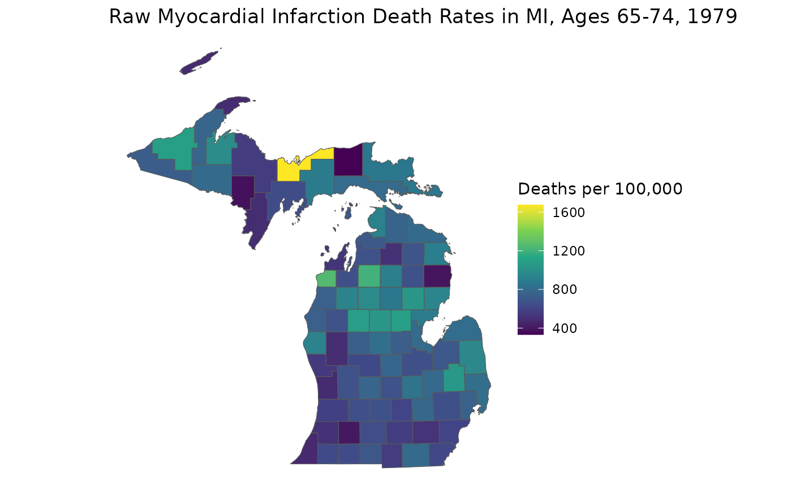
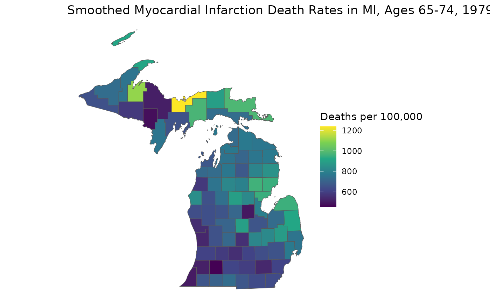

01: An Introduction to the RSTr Package
RSTr.RmdOverview
The RSTr package is a tool that provides a host of
Bayesian spatiotemporal models in conjunction with C++ to help you
quickly and easily generate spatially smoothed estimates for your
spatial data. This document introduces you to the basics of the
RSTr package and shows you how to apply the basic functions
to the included example data to get small area estimates.
Models
The models provided in the RSTr package are based on the
Besag,
York, and Mollié (1991) Conditional Autoregressive (CAR) model
(heretofore referred to as the “Univariate CAR” or “UCAR” model), which
spatially smooths data by incorporating information such as event and
population counts from neighboring geographic units (counties, census
tracts, etc.). The degree of spatial smoothing is determined by a
spatial region’s respective population size. The CAR model can be
extended to several levels of complexity, depending on the input
data:
Univariate CAR (UCAR): Spatially smooths across geographies;
Multivariate CAR (MCAR): Spatially smooths across geographies and sociodemographic groups; and
Multivariate Spatiotemporal CAR (MSTCAR): Spatially smooths across geographies, sociodemographic groups, and time periods.
For this vignette, we will demonstrate RSTr’s
functionality with an MSTCAR model.
Restricted-informativeness models
A problem with CAR models pointed out by Quick, et
al. (2021) is that of over-smoothing due to the informativeness of
the BYM model. The RSTr package provides parameters to
restrict informativeness in UCAR models for both Poisson- and
binomially-distributed data. Informativeness restrictions for the MCAR
and MSTCAR models are under progress, and will be incorporated into the
RSTr package as they are developed.
Datasets
RSTr comes with three main datasets:
miheart, miadj, and mishp.
miheart and miadj are related to the necessary
components of our models, and mishp is a shapefile that
helps you map your results. To run an MSTCAR model, two components are
necessary:
Event counts for a parameter of interest, stratified by region, group, and time period, along with the corresponding population counts. These data may be binomial- or Poisson-distributed. The example dataset is binomial-distributed myocardial infarction deaths in six age groups from 1979-1988 in Michigan. Reference
miheartto see how this data looks or?miheartfor more information on the dataset. For more information on preparing your event data, readvignette("RSTr-event").An adjacency structure for your data. This is, in essence, a dataset that tells
RSTrwhich regions are neighbors with each other.RSTrwill accept alistof vectors whose indices represent the neighbors of each region. Referencemiadjfor an example adjacency structure list. For more information on preparing your adjacency data, readvignette("RSTr-adj").
Some quick notes about data setup:
Event/population data must be organized in a very specific manner.
RSTr’s MSTCAR model can only accept 3-dimensional arrays: spatial regions must be on the rows, socio/demographic groups must be on the columns, and time periods must be on the matrix slices. Moreover, your event data’s regions should be listed in the same order in your adjacency structure data.Every region must have at least one neighbor. Moreover, the adjacency structures must be listed in the same order as your count data.
Functions
RSTr comes with a set of functions to generate small
area estimates from your dataset. Here is a brief overview of the basic
functions and their purpose:
-
initialize_model(): Inputs data and model specifics and creates a local folder with all associated files to prepare for sample generation; -
run_sampler(): The Gibbs sampler function which saves your model and its samples to a local folder; -
load_samples(): Imports samples generated withrun_sampler()into your R session; and -
get_medians(): Calculates median estimates loaded in byload_samples().
Example Model - initialize_model()
With an understanding of the example datasets and the functions, we can start running our first model. The example datasets are set up for us to run out-of-the-box:
library(RSTr)
initialize_model(
name = "my_test_model",
data = miheart,
adjacency = miadj
)
#> Checking data...
#> Checking spatial data...
#> Checking priors...
#> The following objects were created using defaults in 'priors': theta_sd tau_a tau_b Ag_scale Ag_df G_df rho_a rho_b rho_sd
#> Checking inits...
#> The following objects were created using defaults in 'inits': beta theta Z G rho tau2 Ag
#> Model ready!Here, we use the initialize_model() function to specify
our model. initialize_model() accepts a few different
arguments in this case:
- The
nameargument specifies the directory where the model data lives; - The
dataargument specifies our event data; and - The
adjacencyargument specifies our adjacency structure.
initialize_model() creates a folder named
my_test_model in R’s temporary directory containing folders
that will hold batches of outputs for each parameter update, along with
a set of .Rds files associated with model configuration.
Nothing here is saved in the R environment because MSTCAR models can
quickly become so large that it’s impossible to hold the entire sample
in RAM. Therefore, all of the data related to running the model is saved
locally. Should you want to save it somewhere besides the temporary
directory, you can specify a folder with the dir
argument.
Note that initialize_model() accepts more arguments than
are used here, but these are the only ones that are needed to get
started. Also note that when we run the model, we get a couple of
messages telling us certain priors and initial values were automatically
generated. Priors and initial values can be specified manually, but this
is outside the scope of this vignette. There will also be checks
performed on the input data: if something is wrong, it will tell you
what is wrong and how to fix it. For a full list of diagnostic errors
and what they mean, read
vignette("RSTr-troubleshooting").
Finally, you may notice a plot was generated during model setup. This is one last double-check to make sure the data are set up correctly before running the model, showing the total event and population count for each year of data. If the number of datapoints does not match up to the number of years in your dataset or if the changes in values over time don’t entirely make sense, you may need to double-check your data input.
If you want to learn more about the initialize_model()
function, read vignette("RSTr-init").
Example Model - run_sampler()
Once we have our model object set up, we can start getting samples.
This is the heart of the RSTr package and what allows us to
gather our final rate estimates. To get your samples, simply specify the
name of the model and the directory:
run_sampler(name = "my_test_model")
#> Starting sampler on Batch 1 at Tue Sep 16 19:14:49
#> Batch 1/60, Progress: |..................................................| Elapsed Time: 00:00:00 Batch 1/60, Progress: |..................................................| Elapsed Time: 00:00:00 Batch 1/60, Progress: |*.................................................| Elapsed Time: 00:00:00 Batch 1/60, Progress: |*.................................................| Elapsed Time: 00:00:00 Batch 1/60, Progress: |**................................................| Elapsed Time: 00:00:00 Batch 1/60, Progress: |**................................................| Elapsed Time: 00:00:00 Batch 1/60, Progress: |***...............................................| Elapsed Time: 00:00:00 Batch 1/60, Progress: |***...............................................| Elapsed Time: 00:00:00 Batch 1/60, Progress: |****..............................................| Elapsed Time: 00:00:00 Batch 1/60, Progress: |****..............................................| Elapsed Time: 00:00:00 Batch 1/60, Progress: |*****.............................................| Elapsed Time: 00:00:00 Batch 1/60, Progress: |*****.............................................| Elapsed Time: 00:00:00 Batch 1/60, Progress: |******............................................| Elapsed Time: 00:00:00 Batch 1/60, Progress: |******............................................| Elapsed Time: 00:00:00 Batch 1/60, Progress: |*******...........................................| Elapsed Time: 00:00:00 Batch 1/60, Progress: |*******...........................................| Elapsed Time: 00:00:00 Batch 1/60, Progress: |********..........................................| Elapsed Time: 00:00:00 Batch 1/60, Progress: |********..........................................| Elapsed Time: 00:00:00 Batch 1/60, Progress: |*********.........................................| Elapsed Time: 00:00:00 Batch 1/60, Progress: |*********.........................................| Elapsed Time: 00:00:00 Batch 1/60, Progress: |**********........................................| Elapsed Time: 00:00:00 Batch 1/60, Progress: |**********........................................| Elapsed Time: 00:00:00 Batch 1/60, Progress: |***********.......................................| Elapsed Time: 00:00:00 Batch 1/60, Progress: |***********.......................................| Elapsed Time: 00:00:00 Batch 1/60, Progress: |************......................................| Elapsed Time: 00:00:00 Batch 1/60, Progress: |************......................................| Elapsed Time: 00:00:00 Batch 1/60, Progress: |*************.....................................| Elapsed Time: 00:00:00 Batch 1/60, Progress: |*************.....................................| Elapsed Time: 00:00:00 Batch 1/60, Progress: |**************....................................| Elapsed Time: 00:00:00 Batch 1/60, Progress: |**************....................................| Elapsed Time: 00:00:00 Batch 1/60, Progress: |***************...................................| Elapsed Time: 00:00:00 Batch 1/60, Progress: |***************...................................| Elapsed Time: 00:00:00 Batch 1/60, Progress: |****************..................................| Elapsed Time: 00:00:00 Batch 1/60, Progress: |****************..................................| Elapsed Time: 00:00:00 Batch 1/60, Progress: |*****************.................................| Elapsed Time: 00:00:00 Batch 1/60, Progress: |*****************.................................| Elapsed Time: 00:00:00 Batch 1/60, Progress: |******************................................| Elapsed Time: 00:00:00 Batch 1/60, Progress: |******************................................| Elapsed Time: 00:00:00 Batch 1/60, Progress: |*******************...............................| Elapsed Time: 00:00:00 Batch 1/60, Progress: |*******************...............................| Elapsed Time: 00:00:00 Batch 1/60, Progress: |********************..............................| Elapsed Time: 00:00:00 Batch 1/60, Progress: |********************..............................| Elapsed Time: 00:00:00 Batch 1/60, Progress: |*********************.............................| Elapsed Time: 00:00:00 Batch 1/60, Progress: |*********************.............................| Elapsed Time: 00:00:00 Batch 1/60, Progress: |**********************............................| Elapsed Time: 00:00:00 Batch 1/60, Progress: |**********************............................| Elapsed Time: 00:00:00 Batch 1/60, Progress: |***********************...........................| Elapsed Time: 00:00:00 Batch 1/60, Progress: |***********************...........................| Elapsed Time: 00:00:00 Batch 1/60, Progress: |************************..........................| Elapsed Time: 00:00:00 Batch 1/60, Progress: |************************..........................| Elapsed Time: 00:00:00 Batch 1/60, Progress: |*************************.........................| Elapsed Time: 00:00:00 Batch 1/60, Progress: |*************************.........................| Elapsed Time: 00:00:00 Batch 1/60, Progress: |**************************........................| Elapsed Time: 00:00:00 Batch 1/60, Progress: |**************************........................| Elapsed Time: 00:00:00 Batch 1/60, Progress: |***************************.......................| Elapsed Time: 00:00:00 Batch 1/60, Progress: |***************************.......................| Elapsed Time: 00:00:00 Batch 1/60, Progress: |****************************......................| Elapsed Time: 00:00:00 Batch 1/60, Progress: |****************************......................| Elapsed Time: 00:00:00 Batch 1/60, Progress: |*****************************.....................| Elapsed Time: 00:00:00 Batch 1/60, Progress: |*****************************.....................| Elapsed Time: 00:00:00 Batch 1/60, Progress: |******************************....................| Elapsed Time: 00:00:00 Batch 1/60, Progress: |******************************....................| Elapsed Time: 00:00:00 Batch 1/60, Progress: |*******************************...................| Elapsed Time: 00:00:00 Batch 1/60, Progress: |*******************************...................| Elapsed Time: 00:00:00 Batch 1/60, Progress: |********************************..................| Elapsed Time: 00:00:00 Batch 1/60, Progress: |********************************..................| Elapsed Time: 00:00:00 Batch 1/60, Progress: |*********************************.................| Elapsed Time: 00:00:00 Batch 1/60, Progress: |*********************************.................| Elapsed Time: 00:00:00 Batch 1/60, Progress: |**********************************................| Elapsed Time: 00:00:00 Batch 1/60, Progress: |**********************************................| Elapsed Time: 00:00:00 Batch 1/60, Progress: |***********************************...............| Elapsed Time: 00:00:00 Batch 1/60, Progress: |***********************************...............| Elapsed Time: 00:00:00 Batch 1/60, Progress: |************************************..............| Elapsed Time: 00:00:00 Batch 1/60, Progress: |************************************..............| Elapsed Time: 00:00:00 Batch 1/60, Progress: |*************************************.............| Elapsed Time: 00:00:00 Batch 1/60, Progress: |*************************************.............| Elapsed Time: 00:00:00 Batch 1/60, Progress: |**************************************............| Elapsed Time: 00:00:00 Batch 1/60, Progress: |**************************************............| Elapsed Time: 00:00:00 Batch 1/60, Progress: |***************************************...........| Elapsed Time: 00:00:00 Batch 1/60, Progress: |***************************************...........| Elapsed Time: 00:00:00 Batch 1/60, Progress: |****************************************..........| Elapsed Time: 00:00:00 Batch 1/60, Progress: |****************************************..........| Elapsed Time: 00:00:00 Batch 1/60, Progress: |*****************************************.........| Elapsed Time: 00:00:00 Batch 1/60, Progress: |*****************************************.........| Elapsed Time: 00:00:00 Batch 1/60, Progress: |******************************************........| Elapsed Time: 00:00:00 Batch 1/60, Progress: |******************************************........| Elapsed Time: 00:00:00 Batch 1/60, Progress: |*******************************************.......| Elapsed Time: 00:00:00 Batch 1/60, Progress: |*******************************************.......| Elapsed Time: 00:00:00 Batch 1/60, Progress: |********************************************......| Elapsed Time: 00:00:00 Batch 1/60, Progress: |********************************************......| Elapsed Time: 00:00:00 Batch 1/60, Progress: |*********************************************.....| Elapsed Time: 00:00:00 Batch 1/60, Progress: |*********************************************.....| Elapsed Time: 00:00:00 Batch 1/60, Progress: |**********************************************....| Elapsed Time: 00:00:00 Batch 1/60, Progress: |**********************************************....| Elapsed Time: 00:00:00 Batch 1/60, Progress: |***********************************************...| Elapsed Time: 00:00:00 Batch 1/60, Progress: |***********************************************...| Elapsed Time: 00:00:00 Batch 1/60, Progress: |************************************************..| Elapsed Time: 00:00:00 Batch 1/60, Progress: |************************************************..| Elapsed Time: 00:00:00 Batch 1/60, Progress: |*************************************************.| Elapsed Time: 00:00:00 Batch 1/60, Progress: |*************************************************.| Elapsed Time: 00:00:00 Batch 1/60, Progress: |**************************************************| Elapsed Time: 00:00:00 
#> Batch 2/60, Progress: |..................................................| Elapsed Time: 00:00:00 Batch 2/60, Progress: |..................................................| Elapsed Time: 00:00:00 Batch 2/60, Progress: |*.................................................| Elapsed Time: 00:00:00 Batch 2/60, Progress: |*.................................................| Elapsed Time: 00:00:00 Batch 2/60, Progress: |**................................................| Elapsed Time: 00:00:00 Batch 2/60, Progress: |**................................................| Elapsed Time: 00:00:00 Batch 2/60, Progress: |***...............................................| Elapsed Time: 00:00:00 Batch 2/60, Progress: |***...............................................| Elapsed Time: 00:00:00 Batch 2/60, Progress: |****..............................................| Elapsed Time: 00:00:00 Batch 2/60, Progress: |****..............................................| Elapsed Time: 00:00:00 Batch 2/60, Progress: |*****.............................................| Elapsed Time: 00:00:00 Batch 2/60, Progress: |*****.............................................| Elapsed Time: 00:00:00 Batch 2/60, Progress: |******............................................| Elapsed Time: 00:00:00 Batch 2/60, Progress: |******............................................| Elapsed Time: 00:00:00 Batch 2/60, Progress: |*******...........................................| Elapsed Time: 00:00:00 Batch 2/60, Progress: |*******...........................................| Elapsed Time: 00:00:00 Batch 2/60, Progress: |********..........................................| Elapsed Time: 00:00:00 Batch 2/60, Progress: |********..........................................| Elapsed Time: 00:00:00 Batch 2/60, Progress: |*********.........................................| Elapsed Time: 00:00:00 Batch 2/60, Progress: |*********.........................................| Elapsed Time: 00:00:00 Batch 2/60, Progress: |**********........................................| Elapsed Time: 00:00:00 Batch 2/60, Progress: |**********........................................| Elapsed Time: 00:00:00 Batch 2/60, Progress: |***********.......................................| Elapsed Time: 00:00:00 Batch 2/60, Progress: |***********.......................................| Elapsed Time: 00:00:00 Batch 2/60, Progress: |************......................................| Elapsed Time: 00:00:00 Batch 2/60, Progress: |************......................................| Elapsed Time: 00:00:00 Batch 2/60, Progress: |*************.....................................| Elapsed Time: 00:00:00 Batch 2/60, Progress: |*************.....................................| Elapsed Time: 00:00:00 Batch 2/60, Progress: |**************....................................| Elapsed Time: 00:00:00 Batch 2/60, Progress: |**************....................................| Elapsed Time: 00:00:00 Batch 2/60, Progress: |***************...................................| Elapsed Time: 00:00:00 Batch 2/60, Progress: |***************...................................| Elapsed Time: 00:00:00 Batch 2/60, Progress: |****************..................................| Elapsed Time: 00:00:00 Batch 2/60, Progress: |****************..................................| Elapsed Time: 00:00:00 Batch 2/60, Progress: |*****************.................................| Elapsed Time: 00:00:00 Batch 2/60, Progress: |*****************.................................| Elapsed Time: 00:00:00 Batch 2/60, Progress: |******************................................| Elapsed Time: 00:00:00 Batch 2/60, Progress: |******************................................| Elapsed Time: 00:00:00 Batch 2/60, Progress: |*******************...............................| Elapsed Time: 00:00:00 Batch 2/60, Progress: |*******************...............................| Elapsed Time: 00:00:00 Batch 2/60, Progress: |********************..............................| Elapsed Time: 00:00:00 Batch 2/60, Progress: |********************..............................| Elapsed Time: 00:00:00 Batch 2/60, Progress: |*********************.............................| Elapsed Time: 00:00:00 Batch 2/60, Progress: |*********************.............................| Elapsed Time: 00:00:00 Batch 2/60, Progress: |**********************............................| Elapsed Time: 00:00:00 Batch 2/60, Progress: |**********************............................| Elapsed Time: 00:00:00 Batch 2/60, Progress: |***********************...........................| Elapsed Time: 00:00:00 Batch 2/60, Progress: |***********************...........................| Elapsed Time: 00:00:00 Batch 2/60, Progress: |************************..........................| Elapsed Time: 00:00:00 Batch 2/60, Progress: |************************..........................| Elapsed Time: 00:00:00 Batch 2/60, Progress: |*************************.........................| Elapsed Time: 00:00:00 Batch 2/60, Progress: |*************************.........................| Elapsed Time: 00:00:00 Batch 2/60, Progress: |**************************........................| Elapsed Time: 00:00:00 Batch 2/60, Progress: |**************************........................| Elapsed Time: 00:00:00 Batch 2/60, Progress: |***************************.......................| Elapsed Time: 00:00:00 Batch 2/60, Progress: |***************************.......................| Elapsed Time: 00:00:00 Batch 2/60, Progress: |****************************......................| Elapsed Time: 00:00:00 Batch 2/60, Progress: |****************************......................| Elapsed Time: 00:00:00 Batch 2/60, Progress: |*****************************.....................| Elapsed Time: 00:00:00 Batch 2/60, Progress: |*****************************.....................| Elapsed Time: 00:00:00 Batch 2/60, Progress: |******************************....................| Elapsed Time: 00:00:00 Batch 2/60, Progress: |******************************....................| Elapsed Time: 00:00:00 Batch 2/60, Progress: |*******************************...................| Elapsed Time: 00:00:00 Batch 2/60, Progress: |*******************************...................| Elapsed Time: 00:00:00 Batch 2/60, Progress: |********************************..................| Elapsed Time: 00:00:00 Batch 2/60, Progress: |********************************..................| Elapsed Time: 00:00:00 Batch 2/60, Progress: |*********************************.................| Elapsed Time: 00:00:00 Batch 2/60, Progress: |*********************************.................| Elapsed Time: 00:00:00 Batch 2/60, Progress: |**********************************................| Elapsed Time: 00:00:00 Batch 2/60, Progress: |**********************************................| Elapsed Time: 00:00:00 Batch 2/60, Progress: |***********************************...............| Elapsed Time: 00:00:00 Batch 2/60, Progress: |***********************************...............| Elapsed Time: 00:00:00 Batch 2/60, Progress: |************************************..............| Elapsed Time: 00:00:00 Batch 2/60, Progress: |************************************..............| Elapsed Time: 00:00:00 Batch 2/60, Progress: |*************************************.............| Elapsed Time: 00:00:00 Batch 2/60, Progress: |*************************************.............| Elapsed Time: 00:00:00 Batch 2/60, Progress: |**************************************............| Elapsed Time: 00:00:00 Batch 2/60, Progress: |**************************************............| Elapsed Time: 00:00:00 Batch 2/60, Progress: |***************************************...........| Elapsed Time: 00:00:00 Batch 2/60, Progress: |***************************************...........| Elapsed Time: 00:00:00 Batch 2/60, Progress: |****************************************..........| Elapsed Time: 00:00:00 Batch 2/60, Progress: |****************************************..........| Elapsed Time: 00:00:00 Batch 2/60, Progress: |*****************************************.........| Elapsed Time: 00:00:00 Batch 2/60, Progress: |*****************************************.........| Elapsed Time: 00:00:00 Batch 2/60, Progress: |******************************************........| Elapsed Time: 00:00:00 Batch 2/60, Progress: |******************************************........| Elapsed Time: 00:00:00 Batch 2/60, Progress: |*******************************************.......| Elapsed Time: 00:00:00 Batch 2/60, Progress: |*******************************************.......| Elapsed Time: 00:00:00 Batch 2/60, Progress: |********************************************......| Elapsed Time: 00:00:00 Batch 2/60, Progress: |********************************************......| Elapsed Time: 00:00:00 Batch 2/60, Progress: |*********************************************.....| Elapsed Time: 00:00:00 Batch 2/60, Progress: |*********************************************.....| Elapsed Time: 00:00:00 Batch 2/60, Progress: |**********************************************....| Elapsed Time: 00:00:00 Batch 2/60, Progress: |**********************************************....| Elapsed Time: 00:00:00 Batch 2/60, Progress: |***********************************************...| Elapsed Time: 00:00:00 Batch 2/60, Progress: |***********************************************...| Elapsed Time: 00:00:00 Batch 2/60, Progress: |************************************************..| Elapsed Time: 00:00:00 Batch 2/60, Progress: |************************************************..| Elapsed Time: 00:00:00 Batch 2/60, Progress: |*************************************************.| Elapsed Time: 00:00:00 Batch 2/60, Progress: |*************************************************.| Elapsed Time: 00:00:00 Batch 2/60, Progress: |**************************************************| Elapsed Time: 00:00:00 #> Batch 3/60, Progress: |..................................................| Elapsed Time: 00:00:00 Batch 3/60, Progress: |..................................................| Elapsed Time: 00:00:00 Batch 3/60, Progress: |*.................................................| Elapsed Time: 00:00:00 Batch 3/60, Progress: |*.................................................| Elapsed Time: 00:00:00 Batch 3/60, Progress: |**................................................| Elapsed Time: 00:00:00 Batch 3/60, Progress: |**................................................| Elapsed Time: 00:00:00 Batch 3/60, Progress: |***...............................................| Elapsed Time: 00:00:00 Batch 3/60, Progress: |***...............................................| Elapsed Time: 00:00:00 Batch 3/60, Progress: |****..............................................| Elapsed Time: 00:00:00 Batch 3/60, Progress: |****..............................................| Elapsed Time: 00:00:00 Batch 3/60, Progress: |*****.............................................| Elapsed Time: 00:00:00 Batch 3/60, Progress: |*****.............................................| Elapsed Time: 00:00:00 Batch 3/60, Progress: |******............................................| Elapsed Time: 00:00:00 Batch 3/60, Progress: |******............................................| Elapsed Time: 00:00:00 Batch 3/60, Progress: |*******...........................................| Elapsed Time: 00:00:00 Batch 3/60, Progress: |*******...........................................| Elapsed Time: 00:00:00 Batch 3/60, Progress: |********..........................................| Elapsed Time: 00:00:00 Batch 3/60, Progress: |********..........................................| Elapsed Time: 00:00:00 Batch 3/60, Progress: |*********.........................................| Elapsed Time: 00:00:00 Batch 3/60, Progress: |*********.........................................| Elapsed Time: 00:00:00 Batch 3/60, Progress: |**********........................................| Elapsed Time: 00:00:00 Batch 3/60, Progress: |**********........................................| Elapsed Time: 00:00:00 Batch 3/60, Progress: |***********.......................................| Elapsed Time: 00:00:00 Batch 3/60, Progress: |***********.......................................| Elapsed Time: 00:00:00 Batch 3/60, Progress: |************......................................| Elapsed Time: 00:00:00 Batch 3/60, Progress: |************......................................| Elapsed Time: 00:00:00 Batch 3/60, Progress: |*************.....................................| Elapsed Time: 00:00:00 Batch 3/60, Progress: |*************.....................................| Elapsed Time: 00:00:00 Batch 3/60, Progress: |**************....................................| Elapsed Time: 00:00:00 Batch 3/60, Progress: |**************....................................| Elapsed Time: 00:00:00 Batch 3/60, Progress: |***************...................................| Elapsed Time: 00:00:00 Batch 3/60, Progress: |***************...................................| Elapsed Time: 00:00:00 Batch 3/60, Progress: |****************..................................| Elapsed Time: 00:00:00 Batch 3/60, Progress: |****************..................................| Elapsed Time: 00:00:00 Batch 3/60, Progress: |*****************.................................| Elapsed Time: 00:00:00 Batch 3/60, Progress: |*****************.................................| Elapsed Time: 00:00:00 Batch 3/60, Progress: |******************................................| Elapsed Time: 00:00:00 Batch 3/60, Progress: |******************................................| Elapsed Time: 00:00:00 Batch 3/60, Progress: |*******************...............................| Elapsed Time: 00:00:00 Batch 3/60, Progress: |*******************...............................| Elapsed Time: 00:00:00 Batch 3/60, Progress: |********************..............................| Elapsed Time: 00:00:00 Batch 3/60, Progress: |********************..............................| Elapsed Time: 00:00:00 Batch 3/60, Progress: |*********************.............................| Elapsed Time: 00:00:00 Batch 3/60, Progress: |*********************.............................| Elapsed Time: 00:00:00 Batch 3/60, Progress: |**********************............................| Elapsed Time: 00:00:00 Batch 3/60, Progress: |**********************............................| Elapsed Time: 00:00:00 Batch 3/60, Progress: |***********************...........................| Elapsed Time: 00:00:00 Batch 3/60, Progress: |***********************...........................| Elapsed Time: 00:00:00 Batch 3/60, Progress: |************************..........................| Elapsed Time: 00:00:00 Batch 3/60, Progress: |************************..........................| Elapsed Time: 00:00:00 Batch 3/60, Progress: |*************************.........................| Elapsed Time: 00:00:00 Batch 3/60, Progress: |*************************.........................| Elapsed Time: 00:00:00 Batch 3/60, Progress: |**************************........................| Elapsed Time: 00:00:00 Batch 3/60, Progress: |**************************........................| Elapsed Time: 00:00:00 Batch 3/60, Progress: |***************************.......................| Elapsed Time: 00:00:00 Batch 3/60, Progress: |***************************.......................| Elapsed Time: 00:00:00 Batch 3/60, Progress: |****************************......................| Elapsed Time: 00:00:00 Batch 3/60, Progress: |****************************......................| Elapsed Time: 00:00:00 Batch 3/60, Progress: |*****************************.....................| Elapsed Time: 00:00:00 Batch 3/60, Progress: |*****************************.....................| Elapsed Time: 00:00:00 Batch 3/60, Progress: |******************************....................| Elapsed Time: 00:00:00 Batch 3/60, Progress: |******************************....................| Elapsed Time: 00:00:00 Batch 3/60, Progress: |*******************************...................| Elapsed Time: 00:00:00 Batch 3/60, Progress: |*******************************...................| Elapsed Time: 00:00:00 Batch 3/60, Progress: |********************************..................| Elapsed Time: 00:00:00 Batch 3/60, Progress: |********************************..................| Elapsed Time: 00:00:00 Batch 3/60, Progress: |*********************************.................| Elapsed Time: 00:00:00 Batch 3/60, Progress: |*********************************.................| Elapsed Time: 00:00:00 Batch 3/60, Progress: |**********************************................| Elapsed Time: 00:00:00 Batch 3/60, Progress: |**********************************................| Elapsed Time: 00:00:00 Batch 3/60, Progress: |***********************************...............| Elapsed Time: 00:00:00 Batch 3/60, Progress: |***********************************...............| Elapsed Time: 00:00:00 Batch 3/60, Progress: |************************************..............| Elapsed Time: 00:00:00 Batch 3/60, Progress: |************************************..............| Elapsed Time: 00:00:00 Batch 3/60, Progress: |*************************************.............| Elapsed Time: 00:00:00 Batch 3/60, Progress: |*************************************.............| Elapsed Time: 00:00:00 Batch 3/60, Progress: |**************************************............| Elapsed Time: 00:00:00 Batch 3/60, Progress: |**************************************............| Elapsed Time: 00:00:00 Batch 3/60, Progress: |***************************************...........| Elapsed Time: 00:00:00 Batch 3/60, Progress: |***************************************...........| Elapsed Time: 00:00:00 Batch 3/60, Progress: |****************************************..........| Elapsed Time: 00:00:00 Batch 3/60, Progress: |****************************************..........| Elapsed Time: 00:00:00 Batch 3/60, Progress: |*****************************************.........| Elapsed Time: 00:00:00 Batch 3/60, Progress: |*****************************************.........| Elapsed Time: 00:00:00 Batch 3/60, Progress: |******************************************........| Elapsed Time: 00:00:00 Batch 3/60, Progress: |******************************************........| Elapsed Time: 00:00:00 Batch 3/60, Progress: |*******************************************.......| Elapsed Time: 00:00:00 Batch 3/60, Progress: |*******************************************.......| Elapsed Time: 00:00:00 Batch 3/60, Progress: |********************************************......| Elapsed Time: 00:00:00 Batch 3/60, Progress: |********************************************......| Elapsed Time: 00:00:00 Batch 3/60, Progress: |*********************************************.....| Elapsed Time: 00:00:00 Batch 3/60, Progress: |*********************************************.....| Elapsed Time: 00:00:00 Batch 3/60, Progress: |**********************************************....| Elapsed Time: 00:00:00 Batch 3/60, Progress: |**********************************************....| Elapsed Time: 00:00:00 Batch 3/60, Progress: |***********************************************...| Elapsed Time: 00:00:01 Batch 3/60, Progress: |***********************************************...| Elapsed Time: 00:00:01 Batch 3/60, Progress: |************************************************..| Elapsed Time: 00:00:01 Batch 3/60, Progress: |************************************************..| Elapsed Time: 00:00:01 Batch 3/60, Progress: |*************************************************.| Elapsed Time: 00:00:01 Batch 3/60, Progress: |*************************************************.| Elapsed Time: 00:00:01 Batch 3/60, Progress: |**************************************************| Elapsed Time: 00:00:01 
#> Batch 4/60, Progress: |..................................................| Elapsed Time: 00:00:01 Batch 4/60, Progress: |..................................................| Elapsed Time: 00:00:01 Batch 4/60, Progress: |*.................................................| Elapsed Time: 00:00:01 Batch 4/60, Progress: |*.................................................| Elapsed Time: 00:00:01 Batch 4/60, Progress: |**................................................| Elapsed Time: 00:00:01 Batch 4/60, Progress: |**................................................| Elapsed Time: 00:00:01 Batch 4/60, Progress: |***...............................................| Elapsed Time: 00:00:01 Batch 4/60, Progress: |***...............................................| Elapsed Time: 00:00:01 Batch 4/60, Progress: |****..............................................| Elapsed Time: 00:00:01 Batch 4/60, Progress: |****..............................................| Elapsed Time: 00:00:01 Batch 4/60, Progress: |*****.............................................| Elapsed Time: 00:00:01 Batch 4/60, Progress: |*****.............................................| Elapsed Time: 00:00:01 Batch 4/60, Progress: |******............................................| Elapsed Time: 00:00:01 Batch 4/60, Progress: |******............................................| Elapsed Time: 00:00:01 Batch 4/60, Progress: |*******...........................................| Elapsed Time: 00:00:01 Batch 4/60, Progress: |*******...........................................| Elapsed Time: 00:00:01 Batch 4/60, Progress: |********..........................................| Elapsed Time: 00:00:01 Batch 4/60, Progress: |********..........................................| Elapsed Time: 00:00:01 Batch 4/60, Progress: |*********.........................................| Elapsed Time: 00:00:01 Batch 4/60, Progress: |*********.........................................| Elapsed Time: 00:00:01 Batch 4/60, Progress: |**********........................................| Elapsed Time: 00:00:01 Batch 4/60, Progress: |**********........................................| Elapsed Time: 00:00:01 Batch 4/60, Progress: |***********.......................................| Elapsed Time: 00:00:01 Batch 4/60, Progress: |***********.......................................| Elapsed Time: 00:00:01 Batch 4/60, Progress: |************......................................| Elapsed Time: 00:00:01 Batch 4/60, Progress: |************......................................| Elapsed Time: 00:00:01 Batch 4/60, Progress: |*************.....................................| Elapsed Time: 00:00:01 Batch 4/60, Progress: |*************.....................................| Elapsed Time: 00:00:01 Batch 4/60, Progress: |**************....................................| Elapsed Time: 00:00:01 Batch 4/60, Progress: |**************....................................| Elapsed Time: 00:00:01 Batch 4/60, Progress: |***************...................................| Elapsed Time: 00:00:01 Batch 4/60, Progress: |***************...................................| Elapsed Time: 00:00:01 Batch 4/60, Progress: |****************..................................| Elapsed Time: 00:00:01 Batch 4/60, Progress: |****************..................................| Elapsed Time: 00:00:01 Batch 4/60, Progress: |*****************.................................| Elapsed Time: 00:00:01 Batch 4/60, Progress: |*****************.................................| Elapsed Time: 00:00:01 Batch 4/60, Progress: |******************................................| Elapsed Time: 00:00:01 Batch 4/60, Progress: |******************................................| Elapsed Time: 00:00:01 Batch 4/60, Progress: |*******************...............................| Elapsed Time: 00:00:01 Batch 4/60, Progress: |*******************...............................| Elapsed Time: 00:00:01 Batch 4/60, Progress: |********************..............................| Elapsed Time: 00:00:01 Batch 4/60, Progress: |********************..............................| Elapsed Time: 00:00:01 Batch 4/60, Progress: |*********************.............................| Elapsed Time: 00:00:01 Batch 4/60, Progress: |*********************.............................| Elapsed Time: 00:00:01 Batch 4/60, Progress: |**********************............................| Elapsed Time: 00:00:01 Batch 4/60, Progress: |**********************............................| Elapsed Time: 00:00:01 Batch 4/60, Progress: |***********************...........................| Elapsed Time: 00:00:01 Batch 4/60, Progress: |***********************...........................| Elapsed Time: 00:00:01 Batch 4/60, Progress: |************************..........................| Elapsed Time: 00:00:01 Batch 4/60, Progress: |************************..........................| Elapsed Time: 00:00:01 Batch 4/60, Progress: |*************************.........................| Elapsed Time: 00:00:01 Batch 4/60, Progress: |*************************.........................| Elapsed Time: 00:00:01 Batch 4/60, Progress: |**************************........................| Elapsed Time: 00:00:01 Batch 4/60, Progress: |**************************........................| Elapsed Time: 00:00:01 Batch 4/60, Progress: |***************************.......................| Elapsed Time: 00:00:01 Batch 4/60, Progress: |***************************.......................| Elapsed Time: 00:00:01 Batch 4/60, Progress: |****************************......................| Elapsed Time: 00:00:01 Batch 4/60, Progress: |****************************......................| Elapsed Time: 00:00:01 Batch 4/60, Progress: |*****************************.....................| Elapsed Time: 00:00:01 Batch 4/60, Progress: |*****************************.....................| Elapsed Time: 00:00:01 Batch 4/60, Progress: |******************************....................| Elapsed Time: 00:00:01 Batch 4/60, Progress: |******************************....................| Elapsed Time: 00:00:01 Batch 4/60, Progress: |*******************************...................| Elapsed Time: 00:00:01 Batch 4/60, Progress: |*******************************...................| Elapsed Time: 00:00:01 Batch 4/60, Progress: |********************************..................| Elapsed Time: 00:00:01 Batch 4/60, Progress: |********************************..................| Elapsed Time: 00:00:01 Batch 4/60, Progress: |*********************************.................| Elapsed Time: 00:00:01 Batch 4/60, Progress: |*********************************.................| Elapsed Time: 00:00:01 Batch 4/60, Progress: |**********************************................| Elapsed Time: 00:00:01 Batch 4/60, Progress: |**********************************................| Elapsed Time: 00:00:01 Batch 4/60, Progress: |***********************************...............| Elapsed Time: 00:00:01 Batch 4/60, Progress: |***********************************...............| Elapsed Time: 00:00:01 Batch 4/60, Progress: |************************************..............| Elapsed Time: 00:00:01 Batch 4/60, Progress: |************************************..............| Elapsed Time: 00:00:01 Batch 4/60, Progress: |*************************************.............| Elapsed Time: 00:00:01 Batch 4/60, Progress: |*************************************.............| Elapsed Time: 00:00:01 Batch 4/60, Progress: |**************************************............| Elapsed Time: 00:00:01 Batch 4/60, Progress: |**************************************............| Elapsed Time: 00:00:01 Batch 4/60, Progress: |***************************************...........| Elapsed Time: 00:00:01 Batch 4/60, Progress: |***************************************...........| Elapsed Time: 00:00:01 Batch 4/60, Progress: |****************************************..........| Elapsed Time: 00:00:01 Batch 4/60, Progress: |****************************************..........| Elapsed Time: 00:00:01 Batch 4/60, Progress: |*****************************************.........| Elapsed Time: 00:00:01 Batch 4/60, Progress: |*****************************************.........| Elapsed Time: 00:00:01 Batch 4/60, Progress: |******************************************........| Elapsed Time: 00:00:01 Batch 4/60, Progress: |******************************************........| Elapsed Time: 00:00:01 Batch 4/60, Progress: |*******************************************.......| Elapsed Time: 00:00:01 Batch 4/60, Progress: |*******************************************.......| Elapsed Time: 00:00:01 Batch 4/60, Progress: |********************************************......| Elapsed Time: 00:00:01 Batch 4/60, Progress: |********************************************......| Elapsed Time: 00:00:01 Batch 4/60, Progress: |*********************************************.....| Elapsed Time: 00:00:01 Batch 4/60, Progress: |*********************************************.....| Elapsed Time: 00:00:01 Batch 4/60, Progress: |**********************************************....| Elapsed Time: 00:00:01 Batch 4/60, Progress: |**********************************************....| Elapsed Time: 00:00:01 Batch 4/60, Progress: |***********************************************...| Elapsed Time: 00:00:01 Batch 4/60, Progress: |***********************************************...| Elapsed Time: 00:00:01 Batch 4/60, Progress: |************************************************..| Elapsed Time: 00:00:01 Batch 4/60, Progress: |************************************************..| Elapsed Time: 00:00:01 Batch 4/60, Progress: |*************************************************.| Elapsed Time: 00:00:01 Batch 4/60, Progress: |*************************************************.| Elapsed Time: 00:00:01 Batch 4/60, Progress: |**************************************************| Elapsed Time: 00:00:01 #> Batch 5/60, Progress: |..................................................| Elapsed Time: 00:00:01 Batch 5/60, Progress: |..................................................| Elapsed Time: 00:00:01 Batch 5/60, Progress: |*.................................................| Elapsed Time: 00:00:01 Batch 5/60, Progress: |*.................................................| Elapsed Time: 00:00:01 Batch 5/60, Progress: |**................................................| Elapsed Time: 00:00:01 Batch 5/60, Progress: |**................................................| Elapsed Time: 00:00:01 Batch 5/60, Progress: |***...............................................| Elapsed Time: 00:00:01 Batch 5/60, Progress: |***...............................................| Elapsed Time: 00:00:01 Batch 5/60, Progress: |****..............................................| Elapsed Time: 00:00:01 Batch 5/60, Progress: |****..............................................| Elapsed Time: 00:00:01 Batch 5/60, Progress: |*****.............................................| Elapsed Time: 00:00:01 Batch 5/60, Progress: |*****.............................................| Elapsed Time: 00:00:01 Batch 5/60, Progress: |******............................................| Elapsed Time: 00:00:01 Batch 5/60, Progress: |******............................................| Elapsed Time: 00:00:01 Batch 5/60, Progress: |*******...........................................| Elapsed Time: 00:00:01 Batch 5/60, Progress: |*******...........................................| Elapsed Time: 00:00:01 Batch 5/60, Progress: |********..........................................| Elapsed Time: 00:00:01 Batch 5/60, Progress: |********..........................................| Elapsed Time: 00:00:01 Batch 5/60, Progress: |*********.........................................| Elapsed Time: 00:00:01 Batch 5/60, Progress: |*********.........................................| Elapsed Time: 00:00:01 Batch 5/60, Progress: |**********........................................| Elapsed Time: 00:00:01 Batch 5/60, Progress: |**********........................................| Elapsed Time: 00:00:01 Batch 5/60, Progress: |***********.......................................| Elapsed Time: 00:00:01 Batch 5/60, Progress: |***********.......................................| Elapsed Time: 00:00:01 Batch 5/60, Progress: |************......................................| Elapsed Time: 00:00:01 Batch 5/60, Progress: |************......................................| Elapsed Time: 00:00:01 Batch 5/60, Progress: |*************.....................................| Elapsed Time: 00:00:01 Batch 5/60, Progress: |*************.....................................| Elapsed Time: 00:00:01 Batch 5/60, Progress: |**************....................................| Elapsed Time: 00:00:01 Batch 5/60, Progress: |**************....................................| Elapsed Time: 00:00:01 Batch 5/60, Progress: |***************...................................| Elapsed Time: 00:00:01 Batch 5/60, Progress: |***************...................................| Elapsed Time: 00:00:01 Batch 5/60, Progress: |****************..................................| Elapsed Time: 00:00:01 Batch 5/60, Progress: |****************..................................| Elapsed Time: 00:00:01 Batch 5/60, Progress: |*****************.................................| Elapsed Time: 00:00:01 Batch 5/60, Progress: |*****************.................................| Elapsed Time: 00:00:01 Batch 5/60, Progress: |******************................................| Elapsed Time: 00:00:01 Batch 5/60, Progress: |******************................................| Elapsed Time: 00:00:01 Batch 5/60, Progress: |*******************...............................| Elapsed Time: 00:00:01 Batch 5/60, Progress: |*******************...............................| Elapsed Time: 00:00:01 Batch 5/60, Progress: |********************..............................| Elapsed Time: 00:00:01 Batch 5/60, Progress: |********************..............................| Elapsed Time: 00:00:01 Batch 5/60, Progress: |*********************.............................| Elapsed Time: 00:00:01 Batch 5/60, Progress: |*********************.............................| Elapsed Time: 00:00:01 Batch 5/60, Progress: |**********************............................| Elapsed Time: 00:00:01 Batch 5/60, Progress: |**********************............................| Elapsed Time: 00:00:01 Batch 5/60, Progress: |***********************...........................| Elapsed Time: 00:00:01 Batch 5/60, Progress: |***********************...........................| Elapsed Time: 00:00:01 Batch 5/60, Progress: |************************..........................| Elapsed Time: 00:00:01 Batch 5/60, Progress: |************************..........................| Elapsed Time: 00:00:01 Batch 5/60, Progress: |*************************.........................| Elapsed Time: 00:00:01 Batch 5/60, Progress: |*************************.........................| Elapsed Time: 00:00:01 Batch 5/60, Progress: |**************************........................| Elapsed Time: 00:00:01 Batch 5/60, Progress: |**************************........................| Elapsed Time: 00:00:01 Batch 5/60, Progress: |***************************.......................| Elapsed Time: 00:00:01 Batch 5/60, Progress: |***************************.......................| Elapsed Time: 00:00:01 Batch 5/60, Progress: |****************************......................| Elapsed Time: 00:00:01 Batch 5/60, Progress: |****************************......................| Elapsed Time: 00:00:01 Batch 5/60, Progress: |*****************************.....................| Elapsed Time: 00:00:01 Batch 5/60, Progress: |*****************************.....................| Elapsed Time: 00:00:01 Batch 5/60, Progress: |******************************....................| Elapsed Time: 00:00:01 Batch 5/60, Progress: |******************************....................| Elapsed Time: 00:00:01 Batch 5/60, Progress: |*******************************...................| Elapsed Time: 00:00:01 Batch 5/60, Progress: |*******************************...................| Elapsed Time: 00:00:01 Batch 5/60, Progress: |********************************..................| Elapsed Time: 00:00:01 Batch 5/60, Progress: |********************************..................| Elapsed Time: 00:00:01 Batch 5/60, Progress: |*********************************.................| Elapsed Time: 00:00:01 Batch 5/60, Progress: |*********************************.................| Elapsed Time: 00:00:01 Batch 5/60, Progress: |**********************************................| Elapsed Time: 00:00:01 Batch 5/60, Progress: |**********************************................| Elapsed Time: 00:00:01 Batch 5/60, Progress: |***********************************...............| Elapsed Time: 00:00:01 Batch 5/60, Progress: |***********************************...............| Elapsed Time: 00:00:01 Batch 5/60, Progress: |************************************..............| Elapsed Time: 00:00:01 Batch 5/60, Progress: |************************************..............| Elapsed Time: 00:00:01 Batch 5/60, Progress: |*************************************.............| Elapsed Time: 00:00:01 Batch 5/60, Progress: |*************************************.............| Elapsed Time: 00:00:01 Batch 5/60, Progress: |**************************************............| Elapsed Time: 00:00:01 Batch 5/60, Progress: |**************************************............| Elapsed Time: 00:00:01 Batch 5/60, Progress: |***************************************...........| Elapsed Time: 00:00:01 Batch 5/60, Progress: |***************************************...........| Elapsed Time: 00:00:01 Batch 5/60, Progress: |****************************************..........| Elapsed Time: 00:00:01 Batch 5/60, Progress: |****************************************..........| Elapsed Time: 00:00:01 Batch 5/60, Progress: |*****************************************.........| Elapsed Time: 00:00:01 Batch 5/60, Progress: |*****************************************.........| Elapsed Time: 00:00:01 Batch 5/60, Progress: |******************************************........| Elapsed Time: 00:00:01 Batch 5/60, Progress: |******************************************........| Elapsed Time: 00:00:01 Batch 5/60, Progress: |*******************************************.......| Elapsed Time: 00:00:01 Batch 5/60, Progress: |*******************************************.......| Elapsed Time: 00:00:01 Batch 5/60, Progress: |********************************************......| Elapsed Time: 00:00:01 Batch 5/60, Progress: |********************************************......| Elapsed Time: 00:00:01 Batch 5/60, Progress: |*********************************************.....| Elapsed Time: 00:00:01 Batch 5/60, Progress: |*********************************************.....| Elapsed Time: 00:00:01 Batch 5/60, Progress: |**********************************************....| Elapsed Time: 00:00:01 Batch 5/60, Progress: |**********************************************....| Elapsed Time: 00:00:01 Batch 5/60, Progress: |***********************************************...| Elapsed Time: 00:00:01 Batch 5/60, Progress: |***********************************************...| Elapsed Time: 00:00:01 Batch 5/60, Progress: |************************************************..| Elapsed Time: 00:00:01 Batch 5/60, Progress: |************************************************..| Elapsed Time: 00:00:01 Batch 5/60, Progress: |*************************************************.| Elapsed Time: 00:00:01 Batch 5/60, Progress: |*************************************************.| Elapsed Time: 00:00:01 Batch 5/60, Progress: |**************************************************| Elapsed Time: 00:00:01 #> Batch 6/60, Progress: |..................................................| Elapsed Time: 00:00:01 Batch 6/60, Progress: |..................................................| Elapsed Time: 00:00:01 Batch 6/60, Progress: |*.................................................| Elapsed Time: 00:00:01 Batch 6/60, Progress: |*.................................................| Elapsed Time: 00:00:01 Batch 6/60, Progress: |**................................................| Elapsed Time: 00:00:01 Batch 6/60, Progress: |**................................................| Elapsed Time: 00:00:01 Batch 6/60, Progress: |***...............................................| Elapsed Time: 00:00:01 Batch 6/60, Progress: |***...............................................| Elapsed Time: 00:00:01 Batch 6/60, Progress: |****..............................................| Elapsed Time: 00:00:01 Batch 6/60, Progress: |****..............................................| Elapsed Time: 00:00:01 Batch 6/60, Progress: |*****.............................................| Elapsed Time: 00:00:01 Batch 6/60, Progress: |*****.............................................| Elapsed Time: 00:00:01 Batch 6/60, Progress: |******............................................| Elapsed Time: 00:00:01 Batch 6/60, Progress: |******............................................| Elapsed Time: 00:00:01 Batch 6/60, Progress: |*******...........................................| Elapsed Time: 00:00:01 Batch 6/60, Progress: |*******...........................................| Elapsed Time: 00:00:01 Batch 6/60, Progress: |********..........................................| Elapsed Time: 00:00:01 Batch 6/60, Progress: |********..........................................| Elapsed Time: 00:00:01 Batch 6/60, Progress: |*********.........................................| Elapsed Time: 00:00:01 Batch 6/60, Progress: |*********.........................................| Elapsed Time: 00:00:01 Batch 6/60, Progress: |**********........................................| Elapsed Time: 00:00:01 Batch 6/60, Progress: |**********........................................| Elapsed Time: 00:00:01 Batch 6/60, Progress: |***********.......................................| Elapsed Time: 00:00:01 Batch 6/60, Progress: |***********.......................................| Elapsed Time: 00:00:01 Batch 6/60, Progress: |************......................................| Elapsed Time: 00:00:01 Batch 6/60, Progress: |************......................................| Elapsed Time: 00:00:01 Batch 6/60, Progress: |*************.....................................| Elapsed Time: 00:00:01 Batch 6/60, Progress: |*************.....................................| Elapsed Time: 00:00:01 Batch 6/60, Progress: |**************....................................| Elapsed Time: 00:00:01 Batch 6/60, Progress: |**************....................................| Elapsed Time: 00:00:01 Batch 6/60, Progress: |***************...................................| Elapsed Time: 00:00:01 Batch 6/60, Progress: |***************...................................| Elapsed Time: 00:00:01 Batch 6/60, Progress: |****************..................................| Elapsed Time: 00:00:02 Batch 6/60, Progress: |****************..................................| Elapsed Time: 00:00:02 Batch 6/60, Progress: |*****************.................................| Elapsed Time: 00:00:02 Batch 6/60, Progress: |*****************.................................| Elapsed Time: 00:00:02 Batch 6/60, Progress: |******************................................| Elapsed Time: 00:00:02 Batch 6/60, Progress: |******************................................| Elapsed Time: 00:00:02 Batch 6/60, Progress: |*******************...............................| Elapsed Time: 00:00:02 Batch 6/60, Progress: |*******************...............................| Elapsed Time: 00:00:02 Batch 6/60, Progress: |********************..............................| Elapsed Time: 00:00:02 Batch 6/60, Progress: |********************..............................| Elapsed Time: 00:00:02 Batch 6/60, Progress: |*********************.............................| Elapsed Time: 00:00:02 Batch 6/60, Progress: |*********************.............................| Elapsed Time: 00:00:02 Batch 6/60, Progress: |**********************............................| Elapsed Time: 00:00:02 Batch 6/60, Progress: |**********************............................| Elapsed Time: 00:00:02 Batch 6/60, Progress: |***********************...........................| Elapsed Time: 00:00:02 Batch 6/60, Progress: |***********************...........................| Elapsed Time: 00:00:02 Batch 6/60, Progress: |************************..........................| Elapsed Time: 00:00:02 Batch 6/60, Progress: |************************..........................| Elapsed Time: 00:00:02 Batch 6/60, Progress: |*************************.........................| Elapsed Time: 00:00:02 Batch 6/60, Progress: |*************************.........................| Elapsed Time: 00:00:02 Batch 6/60, Progress: |**************************........................| Elapsed Time: 00:00:02 Batch 6/60, Progress: |**************************........................| Elapsed Time: 00:00:02 Batch 6/60, Progress: |***************************.......................| Elapsed Time: 00:00:02 Batch 6/60, Progress: |***************************.......................| Elapsed Time: 00:00:02 Batch 6/60, Progress: |****************************......................| Elapsed Time: 00:00:02 Batch 6/60, Progress: |****************************......................| Elapsed Time: 00:00:02 Batch 6/60, Progress: |*****************************.....................| Elapsed Time: 00:00:02 Batch 6/60, Progress: |*****************************.....................| Elapsed Time: 00:00:02 Batch 6/60, Progress: |******************************....................| Elapsed Time: 00:00:02 Batch 6/60, Progress: |******************************....................| Elapsed Time: 00:00:02 Batch 6/60, Progress: |*******************************...................| Elapsed Time: 00:00:02 Batch 6/60, Progress: |*******************************...................| Elapsed Time: 00:00:02 Batch 6/60, Progress: |********************************..................| Elapsed Time: 00:00:02 Batch 6/60, Progress: |********************************..................| Elapsed Time: 00:00:02 Batch 6/60, Progress: |*********************************.................| Elapsed Time: 00:00:02 Batch 6/60, Progress: |*********************************.................| Elapsed Time: 00:00:02 Batch 6/60, Progress: |**********************************................| Elapsed Time: 00:00:02 Batch 6/60, Progress: |**********************************................| Elapsed Time: 00:00:02 Batch 6/60, Progress: |***********************************...............| Elapsed Time: 00:00:02 Batch 6/60, Progress: |***********************************...............| Elapsed Time: 00:00:02 Batch 6/60, Progress: |************************************..............| Elapsed Time: 00:00:02 Batch 6/60, Progress: |************************************..............| Elapsed Time: 00:00:02 Batch 6/60, Progress: |*************************************.............| Elapsed Time: 00:00:02 Batch 6/60, Progress: |*************************************.............| Elapsed Time: 00:00:02 Batch 6/60, Progress: |**************************************............| Elapsed Time: 00:00:02 Batch 6/60, Progress: |**************************************............| Elapsed Time: 00:00:02 Batch 6/60, Progress: |***************************************...........| Elapsed Time: 00:00:02 Batch 6/60, Progress: |***************************************...........| Elapsed Time: 00:00:02 Batch 6/60, Progress: |****************************************..........| Elapsed Time: 00:00:02 Batch 6/60, Progress: |****************************************..........| Elapsed Time: 00:00:02 Batch 6/60, Progress: |*****************************************.........| Elapsed Time: 00:00:02 Batch 6/60, Progress: |*****************************************.........| Elapsed Time: 00:00:02 Batch 6/60, Progress: |******************************************........| Elapsed Time: 00:00:02 Batch 6/60, Progress: |******************************************........| Elapsed Time: 00:00:02 Batch 6/60, Progress: |*******************************************.......| Elapsed Time: 00:00:02 Batch 6/60, Progress: |*******************************************.......| Elapsed Time: 00:00:02 Batch 6/60, Progress: |********************************************......| Elapsed Time: 00:00:02 Batch 6/60, Progress: |********************************************......| Elapsed Time: 00:00:02 Batch 6/60, Progress: |*********************************************.....| Elapsed Time: 00:00:02 Batch 6/60, Progress: |*********************************************.....| Elapsed Time: 00:00:02 Batch 6/60, Progress: |**********************************************....| Elapsed Time: 00:00:02 Batch 6/60, Progress: |**********************************************....| Elapsed Time: 00:00:02 Batch 6/60, Progress: |***********************************************...| Elapsed Time: 00:00:02 Batch 6/60, Progress: |***********************************************...| Elapsed Time: 00:00:02 Batch 6/60, Progress: |************************************************..| Elapsed Time: 00:00:02 Batch 6/60, Progress: |************************************************..| Elapsed Time: 00:00:02 Batch 6/60, Progress: |*************************************************.| Elapsed Time: 00:00:02 Batch 6/60, Progress: |*************************************************.| Elapsed Time: 00:00:02 Batch 6/60, Progress: |**************************************************| Elapsed Time: 00:00:02 #> Batch 7/60, Progress: |..................................................| Elapsed Time: 00:00:02 Batch 7/60, Progress: |..................................................| Elapsed Time: 00:00:02 Batch 7/60, Progress: |*.................................................| Elapsed Time: 00:00:02 Batch 7/60, Progress: |*.................................................| Elapsed Time: 00:00:02 Batch 7/60, Progress: |**................................................| Elapsed Time: 00:00:02 Batch 7/60, Progress: |**................................................| Elapsed Time: 00:00:02 Batch 7/60, Progress: |***...............................................| Elapsed Time: 00:00:02 Batch 7/60, Progress: |***...............................................| Elapsed Time: 00:00:02 Batch 7/60, Progress: |****..............................................| Elapsed Time: 00:00:02 Batch 7/60, Progress: |****..............................................| Elapsed Time: 00:00:02 Batch 7/60, Progress: |*****.............................................| Elapsed Time: 00:00:02 Batch 7/60, Progress: |*****.............................................| Elapsed Time: 00:00:02 Batch 7/60, Progress: |******............................................| Elapsed Time: 00:00:02 Batch 7/60, Progress: |******............................................| Elapsed Time: 00:00:02 Batch 7/60, Progress: |*******...........................................| Elapsed Time: 00:00:02 Batch 7/60, Progress: |*******...........................................| Elapsed Time: 00:00:02 Batch 7/60, Progress: |********..........................................| Elapsed Time: 00:00:02 Batch 7/60, Progress: |********..........................................| Elapsed Time: 00:00:02 Batch 7/60, Progress: |*********.........................................| Elapsed Time: 00:00:02 Batch 7/60, Progress: |*********.........................................| Elapsed Time: 00:00:02 Batch 7/60, Progress: |**********........................................| Elapsed Time: 00:00:02 Batch 7/60, Progress: |**********........................................| Elapsed Time: 00:00:02 Batch 7/60, Progress: |***********.......................................| Elapsed Time: 00:00:02 Batch 7/60, Progress: |***********.......................................| Elapsed Time: 00:00:02 Batch 7/60, Progress: |************......................................| Elapsed Time: 00:00:02 Batch 7/60, Progress: |************......................................| Elapsed Time: 00:00:02 Batch 7/60, Progress: |*************.....................................| Elapsed Time: 00:00:02 Batch 7/60, Progress: |*************.....................................| Elapsed Time: 00:00:02 Batch 7/60, Progress: |**************....................................| Elapsed Time: 00:00:02 Batch 7/60, Progress: |**************....................................| Elapsed Time: 00:00:02 Batch 7/60, Progress: |***************...................................| Elapsed Time: 00:00:02 Batch 7/60, Progress: |***************...................................| Elapsed Time: 00:00:02 Batch 7/60, Progress: |****************..................................| Elapsed Time: 00:00:02 Batch 7/60, Progress: |****************..................................| Elapsed Time: 00:00:02 Batch 7/60, Progress: |*****************.................................| Elapsed Time: 00:00:02 Batch 7/60, Progress: |*****************.................................| Elapsed Time: 00:00:02 Batch 7/60, Progress: |******************................................| Elapsed Time: 00:00:02 Batch 7/60, Progress: |******************................................| Elapsed Time: 00:00:02 Batch 7/60, Progress: |*******************...............................| Elapsed Time: 00:00:02 Batch 7/60, Progress: |*******************...............................| Elapsed Time: 00:00:02 Batch 7/60, Progress: |********************..............................| Elapsed Time: 00:00:02 Batch 7/60, Progress: |********************..............................| Elapsed Time: 00:00:02 Batch 7/60, Progress: |*********************.............................| Elapsed Time: 00:00:02 Batch 7/60, Progress: |*********************.............................| Elapsed Time: 00:00:02 Batch 7/60, Progress: |**********************............................| Elapsed Time: 00:00:02 Batch 7/60, Progress: |**********************............................| Elapsed Time: 00:00:02 Batch 7/60, Progress: |***********************...........................| Elapsed Time: 00:00:02 Batch 7/60, Progress: |***********************...........................| Elapsed Time: 00:00:02 Batch 7/60, Progress: |************************..........................| Elapsed Time: 00:00:02 Batch 7/60, Progress: |************************..........................| Elapsed Time: 00:00:02 Batch 7/60, Progress: |*************************.........................| Elapsed Time: 00:00:02 Batch 7/60, Progress: |*************************.........................| Elapsed Time: 00:00:02 Batch 7/60, Progress: |**************************........................| Elapsed Time: 00:00:02 Batch 7/60, Progress: |**************************........................| Elapsed Time: 00:00:02 Batch 7/60, Progress: |***************************.......................| Elapsed Time: 00:00:02 Batch 7/60, Progress: |***************************.......................| Elapsed Time: 00:00:02 Batch 7/60, Progress: |****************************......................| Elapsed Time: 00:00:02 Batch 7/60, Progress: |****************************......................| Elapsed Time: 00:00:02 Batch 7/60, Progress: |*****************************.....................| Elapsed Time: 00:00:02 Batch 7/60, Progress: |*****************************.....................| Elapsed Time: 00:00:02 Batch 7/60, Progress: |******************************....................| Elapsed Time: 00:00:02 Batch 7/60, Progress: |******************************....................| Elapsed Time: 00:00:02 Batch 7/60, Progress: |*******************************...................| Elapsed Time: 00:00:02 Batch 7/60, Progress: |*******************************...................| Elapsed Time: 00:00:02 Batch 7/60, Progress: |********************************..................| Elapsed Time: 00:00:02 Batch 7/60, Progress: |********************************..................| Elapsed Time: 00:00:02 Batch 7/60, Progress: |*********************************.................| Elapsed Time: 00:00:02 Batch 7/60, Progress: |*********************************.................| Elapsed Time: 00:00:02 Batch 7/60, Progress: |**********************************................| Elapsed Time: 00:00:02 Batch 7/60, Progress: |**********************************................| Elapsed Time: 00:00:02 Batch 7/60, Progress: |***********************************...............| Elapsed Time: 00:00:02 Batch 7/60, Progress: |***********************************...............| Elapsed Time: 00:00:02 Batch 7/60, Progress: |************************************..............| Elapsed Time: 00:00:02 Batch 7/60, Progress: |************************************..............| Elapsed Time: 00:00:02 Batch 7/60, Progress: |*************************************.............| Elapsed Time: 00:00:02 Batch 7/60, Progress: |*************************************.............| Elapsed Time: 00:00:02 Batch 7/60, Progress: |**************************************............| Elapsed Time: 00:00:02 Batch 7/60, Progress: |**************************************............| Elapsed Time: 00:00:02 Batch 7/60, Progress: |***************************************...........| Elapsed Time: 00:00:02 Batch 7/60, Progress: |***************************************...........| Elapsed Time: 00:00:02 Batch 7/60, Progress: |****************************************..........| Elapsed Time: 00:00:02 Batch 7/60, Progress: |****************************************..........| Elapsed Time: 00:00:02 Batch 7/60, Progress: |*****************************************.........| Elapsed Time: 00:00:02 Batch 7/60, Progress: |*****************************************.........| Elapsed Time: 00:00:02 Batch 7/60, Progress: |******************************************........| Elapsed Time: 00:00:02 Batch 7/60, Progress: |******************************************........| Elapsed Time: 00:00:02 Batch 7/60, Progress: |*******************************************.......| Elapsed Time: 00:00:02 Batch 7/60, Progress: |*******************************************.......| Elapsed Time: 00:00:02 Batch 7/60, Progress: |********************************************......| Elapsed Time: 00:00:02 Batch 7/60, Progress: |********************************************......| Elapsed Time: 00:00:02 Batch 7/60, Progress: |*********************************************.....| Elapsed Time: 00:00:02 Batch 7/60, Progress: |*********************************************.....| Elapsed Time: 00:00:02 Batch 7/60, Progress: |**********************************************....| Elapsed Time: 00:00:02 Batch 7/60, Progress: |**********************************************....| Elapsed Time: 00:00:02 Batch 7/60, Progress: |***********************************************...| Elapsed Time: 00:00:02 Batch 7/60, Progress: |***********************************************...| Elapsed Time: 00:00:02 Batch 7/60, Progress: |************************************************..| Elapsed Time: 00:00:02 Batch 7/60, Progress: |************************************************..| Elapsed Time: 00:00:02 Batch 7/60, Progress: |*************************************************.| Elapsed Time: 00:00:02 Batch 7/60, Progress: |*************************************************.| Elapsed Time: 00:00:02 Batch 7/60, Progress: |**************************************************| Elapsed Time: 00:00:02 #> Batch 8/60, Progress: |..................................................| Elapsed Time: 00:00:02 Batch 8/60, Progress: |..................................................| Elapsed Time: 00:00:02 Batch 8/60, Progress: |*.................................................| Elapsed Time: 00:00:02 Batch 8/60, Progress: |*.................................................| Elapsed Time: 00:00:02 Batch 8/60, Progress: |**................................................| Elapsed Time: 00:00:02 Batch 8/60, Progress: |**................................................| Elapsed Time: 00:00:02 Batch 8/60, Progress: |***...............................................| Elapsed Time: 00:00:02 Batch 8/60, Progress: |***...............................................| Elapsed Time: 00:00:02 Batch 8/60, Progress: |****..............................................| Elapsed Time: 00:00:02 Batch 8/60, Progress: |****..............................................| Elapsed Time: 00:00:02 Batch 8/60, Progress: |*****.............................................| Elapsed Time: 00:00:02 Batch 8/60, Progress: |*****.............................................| Elapsed Time: 00:00:02 Batch 8/60, Progress: |******............................................| Elapsed Time: 00:00:02 Batch 8/60, Progress: |******............................................| Elapsed Time: 00:00:02 Batch 8/60, Progress: |*******...........................................| Elapsed Time: 00:00:02 Batch 8/60, Progress: |*******...........................................| Elapsed Time: 00:00:02 Batch 8/60, Progress: |********..........................................| Elapsed Time: 00:00:02 Batch 8/60, Progress: |********..........................................| Elapsed Time: 00:00:02 Batch 8/60, Progress: |*********.........................................| Elapsed Time: 00:00:02 Batch 8/60, Progress: |*********.........................................| Elapsed Time: 00:00:02 Batch 8/60, Progress: |**********........................................| Elapsed Time: 00:00:02 Batch 8/60, Progress: |**********........................................| Elapsed Time: 00:00:02 Batch 8/60, Progress: |***********.......................................| Elapsed Time: 00:00:02 Batch 8/60, Progress: |***********.......................................| Elapsed Time: 00:00:02 Batch 8/60, Progress: |************......................................| Elapsed Time: 00:00:02 Batch 8/60, Progress: |************......................................| Elapsed Time: 00:00:02 Batch 8/60, Progress: |*************.....................................| Elapsed Time: 00:00:02 Batch 8/60, Progress: |*************.....................................| Elapsed Time: 00:00:02 Batch 8/60, Progress: |**************....................................| Elapsed Time: 00:00:02 Batch 8/60, Progress: |**************....................................| Elapsed Time: 00:00:02 Batch 8/60, Progress: |***************...................................| Elapsed Time: 00:00:02 Batch 8/60, Progress: |***************...................................| Elapsed Time: 00:00:02 Batch 8/60, Progress: |****************..................................| Elapsed Time: 00:00:02 Batch 8/60, Progress: |****************..................................| Elapsed Time: 00:00:02 Batch 8/60, Progress: |*****************.................................| Elapsed Time: 00:00:02 Batch 8/60, Progress: |*****************.................................| Elapsed Time: 00:00:02 Batch 8/60, Progress: |******************................................| Elapsed Time: 00:00:02 Batch 8/60, Progress: |******************................................| Elapsed Time: 00:00:02 Batch 8/60, Progress: |*******************...............................| Elapsed Time: 00:00:02 Batch 8/60, Progress: |*******************...............................| Elapsed Time: 00:00:02 Batch 8/60, Progress: |********************..............................| Elapsed Time: 00:00:02 Batch 8/60, Progress: |********************..............................| Elapsed Time: 00:00:02 Batch 8/60, Progress: |*********************.............................| Elapsed Time: 00:00:02 Batch 8/60, Progress: |*********************.............................| Elapsed Time: 00:00:02 Batch 8/60, Progress: |**********************............................| Elapsed Time: 00:00:02 Batch 8/60, Progress: |**********************............................| Elapsed Time: 00:00:02 Batch 8/60, Progress: |***********************...........................| Elapsed Time: 00:00:02 Batch 8/60, Progress: |***********************...........................| Elapsed Time: 00:00:02 Batch 8/60, Progress: |************************..........................| Elapsed Time: 00:00:02 Batch 8/60, Progress: |************************..........................| Elapsed Time: 00:00:02 Batch 8/60, Progress: |*************************.........................| Elapsed Time: 00:00:02 Batch 8/60, Progress: |*************************.........................| Elapsed Time: 00:00:02 Batch 8/60, Progress: |**************************........................| Elapsed Time: 00:00:02 Batch 8/60, Progress: |**************************........................| Elapsed Time: 00:00:02 Batch 8/60, Progress: |***************************.......................| Elapsed Time: 00:00:02 Batch 8/60, Progress: |***************************.......................| Elapsed Time: 00:00:02 Batch 8/60, Progress: |****************************......................| Elapsed Time: 00:00:02 Batch 8/60, Progress: |****************************......................| Elapsed Time: 00:00:02 Batch 8/60, Progress: |*****************************.....................| Elapsed Time: 00:00:02 Batch 8/60, Progress: |*****************************.....................| Elapsed Time: 00:00:02 Batch 8/60, Progress: |******************************....................| Elapsed Time: 00:00:02 Batch 8/60, Progress: |******************************....................| Elapsed Time: 00:00:02 Batch 8/60, Progress: |*******************************...................| Elapsed Time: 00:00:02 Batch 8/60, Progress: |*******************************...................| Elapsed Time: 00:00:02 Batch 8/60, Progress: |********************************..................| Elapsed Time: 00:00:02 Batch 8/60, Progress: |********************************..................| Elapsed Time: 00:00:02 Batch 8/60, Progress: |*********************************.................| Elapsed Time: 00:00:02 Batch 8/60, Progress: |*********************************.................| Elapsed Time: 00:00:02 Batch 8/60, Progress: |**********************************................| Elapsed Time: 00:00:02 Batch 8/60, Progress: |**********************************................| Elapsed Time: 00:00:02 Batch 8/60, Progress: |***********************************...............| Elapsed Time: 00:00:02 Batch 8/60, Progress: |***********************************...............| Elapsed Time: 00:00:02 Batch 8/60, Progress: |************************************..............| Elapsed Time: 00:00:02 Batch 8/60, Progress: |************************************..............| Elapsed Time: 00:00:02 Batch 8/60, Progress: |*************************************.............| Elapsed Time: 00:00:02 Batch 8/60, Progress: |*************************************.............| Elapsed Time: 00:00:02 Batch 8/60, Progress: |**************************************............| Elapsed Time: 00:00:02 Batch 8/60, Progress: |**************************************............| Elapsed Time: 00:00:02 Batch 8/60, Progress: |***************************************...........| Elapsed Time: 00:00:02 Batch 8/60, Progress: |***************************************...........| Elapsed Time: 00:00:02 Batch 8/60, Progress: |****************************************..........| Elapsed Time: 00:00:02 Batch 8/60, Progress: |****************************************..........| Elapsed Time: 00:00:02 Batch 8/60, Progress: |*****************************************.........| Elapsed Time: 00:00:02 Batch 8/60, Progress: |*****************************************.........| Elapsed Time: 00:00:02 Batch 8/60, Progress: |******************************************........| Elapsed Time: 00:00:02 Batch 8/60, Progress: |******************************************........| Elapsed Time: 00:00:02 Batch 8/60, Progress: |*******************************************.......| Elapsed Time: 00:00:02 Batch 8/60, Progress: |*******************************************.......| Elapsed Time: 00:00:02 Batch 8/60, Progress: |********************************************......| Elapsed Time: 00:00:02 Batch 8/60, Progress: |********************************************......| Elapsed Time: 00:00:02 Batch 8/60, Progress: |*********************************************.....| Elapsed Time: 00:00:02 Batch 8/60, Progress: |*********************************************.....| Elapsed Time: 00:00:02 Batch 8/60, Progress: |**********************************************....| Elapsed Time: 00:00:02 Batch 8/60, Progress: |**********************************************....| Elapsed Time: 00:00:02 Batch 8/60, Progress: |***********************************************...| Elapsed Time: 00:00:02 Batch 8/60, Progress: |***********************************************...| Elapsed Time: 00:00:02 Batch 8/60, Progress: |************************************************..| Elapsed Time: 00:00:02 Batch 8/60, Progress: |************************************************..| Elapsed Time: 00:00:02 Batch 8/60, Progress: |*************************************************.| Elapsed Time: 00:00:02 Batch 8/60, Progress: |*************************************************.| Elapsed Time: 00:00:02 Batch 8/60, Progress: |**************************************************| Elapsed Time: 00:00:02 
#> Batch 9/60, Progress: |..................................................| Elapsed Time: 00:00:03 Batch 9/60, Progress: |..................................................| Elapsed Time: 00:00:03 Batch 9/60, Progress: |*.................................................| Elapsed Time: 00:00:03 Batch 9/60, Progress: |*.................................................| Elapsed Time: 00:00:03 Batch 9/60, Progress: |**................................................| Elapsed Time: 00:00:03 Batch 9/60, Progress: |**................................................| Elapsed Time: 00:00:03 Batch 9/60, Progress: |***...............................................| Elapsed Time: 00:00:03 Batch 9/60, Progress: |***...............................................| Elapsed Time: 00:00:03 Batch 9/60, Progress: |****..............................................| Elapsed Time: 00:00:03 Batch 9/60, Progress: |****..............................................| Elapsed Time: 00:00:03 Batch 9/60, Progress: |*****.............................................| Elapsed Time: 00:00:03 Batch 9/60, Progress: |*****.............................................| Elapsed Time: 00:00:03 Batch 9/60, Progress: |******............................................| Elapsed Time: 00:00:03 Batch 9/60, Progress: |******............................................| Elapsed Time: 00:00:03 Batch 9/60, Progress: |*******...........................................| Elapsed Time: 00:00:03 Batch 9/60, Progress: |*******...........................................| Elapsed Time: 00:00:03 Batch 9/60, Progress: |********..........................................| Elapsed Time: 00:00:03 Batch 9/60, Progress: |********..........................................| Elapsed Time: 00:00:03 Batch 9/60, Progress: |*********.........................................| Elapsed Time: 00:00:03 Batch 9/60, Progress: |*********.........................................| Elapsed Time: 00:00:03 Batch 9/60, Progress: |**********........................................| Elapsed Time: 00:00:03 Batch 9/60, Progress: |**********........................................| Elapsed Time: 00:00:03 Batch 9/60, Progress: |***********.......................................| Elapsed Time: 00:00:03 Batch 9/60, Progress: |***********.......................................| Elapsed Time: 00:00:03 Batch 9/60, Progress: |************......................................| Elapsed Time: 00:00:03 Batch 9/60, Progress: |************......................................| Elapsed Time: 00:00:03 Batch 9/60, Progress: |*************.....................................| Elapsed Time: 00:00:03 Batch 9/60, Progress: |*************.....................................| Elapsed Time: 00:00:03 Batch 9/60, Progress: |**************....................................| Elapsed Time: 00:00:03 Batch 9/60, Progress: |**************....................................| Elapsed Time: 00:00:03 Batch 9/60, Progress: |***************...................................| Elapsed Time: 00:00:03 Batch 9/60, Progress: |***************...................................| Elapsed Time: 00:00:03 Batch 9/60, Progress: |****************..................................| Elapsed Time: 00:00:03 Batch 9/60, Progress: |****************..................................| Elapsed Time: 00:00:03 Batch 9/60, Progress: |*****************.................................| Elapsed Time: 00:00:03 Batch 9/60, Progress: |*****************.................................| Elapsed Time: 00:00:03 Batch 9/60, Progress: |******************................................| Elapsed Time: 00:00:03 Batch 9/60, Progress: |******************................................| Elapsed Time: 00:00:03 Batch 9/60, Progress: |*******************...............................| Elapsed Time: 00:00:03 Batch 9/60, Progress: |*******************...............................| Elapsed Time: 00:00:03 Batch 9/60, Progress: |********************..............................| Elapsed Time: 00:00:03 Batch 9/60, Progress: |********************..............................| Elapsed Time: 00:00:03 Batch 9/60, Progress: |*********************.............................| Elapsed Time: 00:00:03 Batch 9/60, Progress: |*********************.............................| Elapsed Time: 00:00:03 Batch 9/60, Progress: |**********************............................| Elapsed Time: 00:00:03 Batch 9/60, Progress: |**********************............................| Elapsed Time: 00:00:03 Batch 9/60, Progress: |***********************...........................| Elapsed Time: 00:00:03 Batch 9/60, Progress: |***********************...........................| Elapsed Time: 00:00:03 Batch 9/60, Progress: |************************..........................| Elapsed Time: 00:00:03 Batch 9/60, Progress: |************************..........................| Elapsed Time: 00:00:03 Batch 9/60, Progress: |*************************.........................| Elapsed Time: 00:00:03 Batch 9/60, Progress: |*************************.........................| Elapsed Time: 00:00:03 Batch 9/60, Progress: |**************************........................| Elapsed Time: 00:00:03 Batch 9/60, Progress: |**************************........................| Elapsed Time: 00:00:03 Batch 9/60, Progress: |***************************.......................| Elapsed Time: 00:00:03 Batch 9/60, Progress: |***************************.......................| Elapsed Time: 00:00:03 Batch 9/60, Progress: |****************************......................| Elapsed Time: 00:00:03 Batch 9/60, Progress: |****************************......................| Elapsed Time: 00:00:03 Batch 9/60, Progress: |*****************************.....................| Elapsed Time: 00:00:03 Batch 9/60, Progress: |*****************************.....................| Elapsed Time: 00:00:03 Batch 9/60, Progress: |******************************....................| Elapsed Time: 00:00:03 Batch 9/60, Progress: |******************************....................| Elapsed Time: 00:00:03 Batch 9/60, Progress: |*******************************...................| Elapsed Time: 00:00:03 Batch 9/60, Progress: |*******************************...................| Elapsed Time: 00:00:03 Batch 9/60, Progress: |********************************..................| Elapsed Time: 00:00:03 Batch 9/60, Progress: |********************************..................| Elapsed Time: 00:00:03 Batch 9/60, Progress: |*********************************.................| Elapsed Time: 00:00:03 Batch 9/60, Progress: |*********************************.................| Elapsed Time: 00:00:03 Batch 9/60, Progress: |**********************************................| Elapsed Time: 00:00:03 Batch 9/60, Progress: |**********************************................| Elapsed Time: 00:00:03 Batch 9/60, Progress: |***********************************...............| Elapsed Time: 00:00:03 Batch 9/60, Progress: |***********************************...............| Elapsed Time: 00:00:03 Batch 9/60, Progress: |************************************..............| Elapsed Time: 00:00:03 Batch 9/60, Progress: |************************************..............| Elapsed Time: 00:00:03 Batch 9/60, Progress: |*************************************.............| Elapsed Time: 00:00:03 Batch 9/60, Progress: |*************************************.............| Elapsed Time: 00:00:03 Batch 9/60, Progress: |**************************************............| Elapsed Time: 00:00:03 Batch 9/60, Progress: |**************************************............| Elapsed Time: 00:00:03 Batch 9/60, Progress: |***************************************...........| Elapsed Time: 00:00:03 Batch 9/60, Progress: |***************************************...........| Elapsed Time: 00:00:03 Batch 9/60, Progress: |****************************************..........| Elapsed Time: 00:00:03 Batch 9/60, Progress: |****************************************..........| Elapsed Time: 00:00:03 Batch 9/60, Progress: |*****************************************.........| Elapsed Time: 00:00:03 Batch 9/60, Progress: |*****************************************.........| Elapsed Time: 00:00:03 Batch 9/60, Progress: |******************************************........| Elapsed Time: 00:00:03 Batch 9/60, Progress: |******************************************........| Elapsed Time: 00:00:03 Batch 9/60, Progress: |*******************************************.......| Elapsed Time: 00:00:03 Batch 9/60, Progress: |*******************************************.......| Elapsed Time: 00:00:03 Batch 9/60, Progress: |********************************************......| Elapsed Time: 00:00:03 Batch 9/60, Progress: |********************************************......| Elapsed Time: 00:00:03 Batch 9/60, Progress: |*********************************************.....| Elapsed Time: 00:00:03 Batch 9/60, Progress: |*********************************************.....| Elapsed Time: 00:00:03 Batch 9/60, Progress: |**********************************************....| Elapsed Time: 00:00:03 Batch 9/60, Progress: |**********************************************....| Elapsed Time: 00:00:03 Batch 9/60, Progress: |***********************************************...| Elapsed Time: 00:00:03 Batch 9/60, Progress: |***********************************************...| Elapsed Time: 00:00:03 Batch 9/60, Progress: |************************************************..| Elapsed Time: 00:00:03 Batch 9/60, Progress: |************************************************..| Elapsed Time: 00:00:03 Batch 9/60, Progress: |*************************************************.| Elapsed Time: 00:00:03 Batch 9/60, Progress: |*************************************************.| Elapsed Time: 00:00:03 Batch 9/60, Progress: |**************************************************| Elapsed Time: 00:00:03 
#> Batch 10/60, Progress: |..................................................| Elapsed Time: 00:00:03 Batch 10/60, Progress: |..................................................| Elapsed Time: 00:00:03 Batch 10/60, Progress: |*.................................................| Elapsed Time: 00:00:03 Batch 10/60, Progress: |*.................................................| Elapsed Time: 00:00:03 Batch 10/60, Progress: |**................................................| Elapsed Time: 00:00:03 Batch 10/60, Progress: |**................................................| Elapsed Time: 00:00:03 Batch 10/60, Progress: |***...............................................| Elapsed Time: 00:00:03 Batch 10/60, Progress: |***...............................................| Elapsed Time: 00:00:03 Batch 10/60, Progress: |****..............................................| Elapsed Time: 00:00:03 Batch 10/60, Progress: |****..............................................| Elapsed Time: 00:00:03 Batch 10/60, Progress: |*****.............................................| Elapsed Time: 00:00:03 Batch 10/60, Progress: |*****.............................................| Elapsed Time: 00:00:03 Batch 10/60, Progress: |******............................................| Elapsed Time: 00:00:03 Batch 10/60, Progress: |******............................................| Elapsed Time: 00:00:03 Batch 10/60, Progress: |*******...........................................| Elapsed Time: 00:00:03 Batch 10/60, Progress: |*******...........................................| Elapsed Time: 00:00:03 Batch 10/60, Progress: |********..........................................| Elapsed Time: 00:00:03 Batch 10/60, Progress: |********..........................................| Elapsed Time: 00:00:03 Batch 10/60, Progress: |*********.........................................| Elapsed Time: 00:00:03 Batch 10/60, Progress: |*********.........................................| Elapsed Time: 00:00:03 Batch 10/60, Progress: |**********........................................| Elapsed Time: 00:00:03 Batch 10/60, Progress: |**********........................................| Elapsed Time: 00:00:03 Batch 10/60, Progress: |***********.......................................| Elapsed Time: 00:00:03 Batch 10/60, Progress: |***********.......................................| Elapsed Time: 00:00:03 Batch 10/60, Progress: |************......................................| Elapsed Time: 00:00:03 Batch 10/60, Progress: |************......................................| Elapsed Time: 00:00:03 Batch 10/60, Progress: |*************.....................................| Elapsed Time: 00:00:03 Batch 10/60, Progress: |*************.....................................| Elapsed Time: 00:00:03 Batch 10/60, Progress: |**************....................................| Elapsed Time: 00:00:03 Batch 10/60, Progress: |**************....................................| Elapsed Time: 00:00:03 Batch 10/60, Progress: |***************...................................| Elapsed Time: 00:00:03 Batch 10/60, Progress: |***************...................................| Elapsed Time: 00:00:03 Batch 10/60, Progress: |****************..................................| Elapsed Time: 00:00:03 Batch 10/60, Progress: |****************..................................| Elapsed Time: 00:00:03 Batch 10/60, Progress: |*****************.................................| Elapsed Time: 00:00:03 Batch 10/60, Progress: |*****************.................................| Elapsed Time: 00:00:03 Batch 10/60, Progress: |******************................................| Elapsed Time: 00:00:03 Batch 10/60, Progress: |******************................................| Elapsed Time: 00:00:03 Batch 10/60, Progress: |*******************...............................| Elapsed Time: 00:00:03 Batch 10/60, Progress: |*******************...............................| Elapsed Time: 00:00:03 Batch 10/60, Progress: |********************..............................| Elapsed Time: 00:00:03 Batch 10/60, Progress: |********************..............................| Elapsed Time: 00:00:03 Batch 10/60, Progress: |*********************.............................| Elapsed Time: 00:00:03 Batch 10/60, Progress: |*********************.............................| Elapsed Time: 00:00:03 Batch 10/60, Progress: |**********************............................| Elapsed Time: 00:00:03 Batch 10/60, Progress: |**********************............................| Elapsed Time: 00:00:03 Batch 10/60, Progress: |***********************...........................| Elapsed Time: 00:00:03 Batch 10/60, Progress: |***********************...........................| Elapsed Time: 00:00:03 Batch 10/60, Progress: |************************..........................| Elapsed Time: 00:00:03 Batch 10/60, Progress: |************************..........................| Elapsed Time: 00:00:03 Batch 10/60, Progress: |*************************.........................| Elapsed Time: 00:00:03 Batch 10/60, Progress: |*************************.........................| Elapsed Time: 00:00:03 Batch 10/60, Progress: |**************************........................| Elapsed Time: 00:00:03 Batch 10/60, Progress: |**************************........................| Elapsed Time: 00:00:03 Batch 10/60, Progress: |***************************.......................| Elapsed Time: 00:00:03 Batch 10/60, Progress: |***************************.......................| Elapsed Time: 00:00:03 Batch 10/60, Progress: |****************************......................| Elapsed Time: 00:00:03 Batch 10/60, Progress: |****************************......................| Elapsed Time: 00:00:03 Batch 10/60, Progress: |*****************************.....................| Elapsed Time: 00:00:03 Batch 10/60, Progress: |*****************************.....................| Elapsed Time: 00:00:03 Batch 10/60, Progress: |******************************....................| Elapsed Time: 00:00:03 Batch 10/60, Progress: |******************************....................| Elapsed Time: 00:00:03 Batch 10/60, Progress: |*******************************...................| Elapsed Time: 00:00:03 Batch 10/60, Progress: |*******************************...................| Elapsed Time: 00:00:03 Batch 10/60, Progress: |********************************..................| Elapsed Time: 00:00:03 Batch 10/60, Progress: |********************************..................| Elapsed Time: 00:00:03 Batch 10/60, Progress: |*********************************.................| Elapsed Time: 00:00:03 Batch 10/60, Progress: |*********************************.................| Elapsed Time: 00:00:03 Batch 10/60, Progress: |**********************************................| Elapsed Time: 00:00:03 Batch 10/60, Progress: |**********************************................| Elapsed Time: 00:00:03 Batch 10/60, Progress: |***********************************...............| Elapsed Time: 00:00:03 Batch 10/60, Progress: |***********************************...............| Elapsed Time: 00:00:03 Batch 10/60, Progress: |************************************..............| Elapsed Time: 00:00:03 Batch 10/60, Progress: |************************************..............| Elapsed Time: 00:00:03 Batch 10/60, Progress: |*************************************.............| Elapsed Time: 00:00:03 Batch 10/60, Progress: |*************************************.............| Elapsed Time: 00:00:03 Batch 10/60, Progress: |**************************************............| Elapsed Time: 00:00:03 Batch 10/60, Progress: |**************************************............| Elapsed Time: 00:00:03 Batch 10/60, Progress: |***************************************...........| Elapsed Time: 00:00:03 Batch 10/60, Progress: |***************************************...........| Elapsed Time: 00:00:03 Batch 10/60, Progress: |****************************************..........| Elapsed Time: 00:00:03 Batch 10/60, Progress: |****************************************..........| Elapsed Time: 00:00:03 Batch 10/60, Progress: |*****************************************.........| Elapsed Time: 00:00:03 Batch 10/60, Progress: |*****************************************.........| Elapsed Time: 00:00:03 Batch 10/60, Progress: |******************************************........| Elapsed Time: 00:00:03 Batch 10/60, Progress: |******************************************........| Elapsed Time: 00:00:03 Batch 10/60, Progress: |*******************************************.......| Elapsed Time: 00:00:03 Batch 10/60, Progress: |*******************************************.......| Elapsed Time: 00:00:03 Batch 10/60, Progress: |********************************************......| Elapsed Time: 00:00:03 Batch 10/60, Progress: |********************************************......| Elapsed Time: 00:00:03 Batch 10/60, Progress: |*********************************************.....| Elapsed Time: 00:00:03 Batch 10/60, Progress: |*********************************************.....| Elapsed Time: 00:00:03 Batch 10/60, Progress: |**********************************************....| Elapsed Time: 00:00:03 Batch 10/60, Progress: |**********************************************....| Elapsed Time: 00:00:03 Batch 10/60, Progress: |***********************************************...| Elapsed Time: 00:00:03 Batch 10/60, Progress: |***********************************************...| Elapsed Time: 00:00:03 Batch 10/60, Progress: |************************************************..| Elapsed Time: 00:00:03 Batch 10/60, Progress: |************************************************..| Elapsed Time: 00:00:03 Batch 10/60, Progress: |*************************************************.| Elapsed Time: 00:00:03 Batch 10/60, Progress: |*************************************************.| Elapsed Time: 00:00:03 Batch 10/60, Progress: |**************************************************| Elapsed Time: 00:00:03 #> Batch 11/60, Progress: |..................................................| Elapsed Time: 00:00:03 Batch 11/60, Progress: |..................................................| Elapsed Time: 00:00:03 Batch 11/60, Progress: |*.................................................| Elapsed Time: 00:00:03 Batch 11/60, Progress: |*.................................................| Elapsed Time: 00:00:03 Batch 11/60, Progress: |**................................................| Elapsed Time: 00:00:03 Batch 11/60, Progress: |**................................................| Elapsed Time: 00:00:03 Batch 11/60, Progress: |***...............................................| Elapsed Time: 00:00:03 Batch 11/60, Progress: |***...............................................| Elapsed Time: 00:00:03 Batch 11/60, Progress: |****..............................................| Elapsed Time: 00:00:03 Batch 11/60, Progress: |****..............................................| Elapsed Time: 00:00:03 Batch 11/60, Progress: |*****.............................................| Elapsed Time: 00:00:03 Batch 11/60, Progress: |*****.............................................| Elapsed Time: 00:00:03 Batch 11/60, Progress: |******............................................| Elapsed Time: 00:00:03 Batch 11/60, Progress: |******............................................| Elapsed Time: 00:00:03 Batch 11/60, Progress: |*******...........................................| Elapsed Time: 00:00:03 Batch 11/60, Progress: |*******...........................................| Elapsed Time: 00:00:03 Batch 11/60, Progress: |********..........................................| Elapsed Time: 00:00:03 Batch 11/60, Progress: |********..........................................| Elapsed Time: 00:00:03 Batch 11/60, Progress: |*********.........................................| Elapsed Time: 00:00:03 Batch 11/60, Progress: |*********.........................................| Elapsed Time: 00:00:03 Batch 11/60, Progress: |**********........................................| Elapsed Time: 00:00:03 Batch 11/60, Progress: |**********........................................| Elapsed Time: 00:00:03 Batch 11/60, Progress: |***********.......................................| Elapsed Time: 00:00:03 Batch 11/60, Progress: |***********.......................................| Elapsed Time: 00:00:03 Batch 11/60, Progress: |************......................................| Elapsed Time: 00:00:03 Batch 11/60, Progress: |************......................................| Elapsed Time: 00:00:03 Batch 11/60, Progress: |*************.....................................| Elapsed Time: 00:00:03 Batch 11/60, Progress: |*************.....................................| Elapsed Time: 00:00:03 Batch 11/60, Progress: |**************....................................| Elapsed Time: 00:00:03 Batch 11/60, Progress: |**************....................................| Elapsed Time: 00:00:03 Batch 11/60, Progress: |***************...................................| Elapsed Time: 00:00:03 Batch 11/60, Progress: |***************...................................| Elapsed Time: 00:00:03 Batch 11/60, Progress: |****************..................................| Elapsed Time: 00:00:03 Batch 11/60, Progress: |****************..................................| Elapsed Time: 00:00:03 Batch 11/60, Progress: |*****************.................................| Elapsed Time: 00:00:03 Batch 11/60, Progress: |*****************.................................| Elapsed Time: 00:00:03 Batch 11/60, Progress: |******************................................| Elapsed Time: 00:00:03 Batch 11/60, Progress: |******************................................| Elapsed Time: 00:00:03 Batch 11/60, Progress: |*******************...............................| Elapsed Time: 00:00:03 Batch 11/60, Progress: |*******************...............................| Elapsed Time: 00:00:03 Batch 11/60, Progress: |********************..............................| Elapsed Time: 00:00:03 Batch 11/60, Progress: |********************..............................| Elapsed Time: 00:00:03 Batch 11/60, Progress: |*********************.............................| Elapsed Time: 00:00:03 Batch 11/60, Progress: |*********************.............................| Elapsed Time: 00:00:03 Batch 11/60, Progress: |**********************............................| Elapsed Time: 00:00:03 Batch 11/60, Progress: |**********************............................| Elapsed Time: 00:00:04 Batch 11/60, Progress: |***********************...........................| Elapsed Time: 00:00:04 Batch 11/60, Progress: |***********************...........................| Elapsed Time: 00:00:04 Batch 11/60, Progress: |************************..........................| Elapsed Time: 00:00:04 Batch 11/60, Progress: |************************..........................| Elapsed Time: 00:00:04 Batch 11/60, Progress: |*************************.........................| Elapsed Time: 00:00:04 Batch 11/60, Progress: |*************************.........................| Elapsed Time: 00:00:04 Batch 11/60, Progress: |**************************........................| Elapsed Time: 00:00:04 Batch 11/60, Progress: |**************************........................| Elapsed Time: 00:00:04 Batch 11/60, Progress: |***************************.......................| Elapsed Time: 00:00:04 Batch 11/60, Progress: |***************************.......................| Elapsed Time: 00:00:04 Batch 11/60, Progress: |****************************......................| Elapsed Time: 00:00:04 Batch 11/60, Progress: |****************************......................| Elapsed Time: 00:00:04 Batch 11/60, Progress: |*****************************.....................| Elapsed Time: 00:00:04 Batch 11/60, Progress: |*****************************.....................| Elapsed Time: 00:00:04 Batch 11/60, Progress: |******************************....................| Elapsed Time: 00:00:04 Batch 11/60, Progress: |******************************....................| Elapsed Time: 00:00:04 Batch 11/60, Progress: |*******************************...................| Elapsed Time: 00:00:04 Batch 11/60, Progress: |*******************************...................| Elapsed Time: 00:00:04 Batch 11/60, Progress: |********************************..................| Elapsed Time: 00:00:04 Batch 11/60, Progress: |********************************..................| Elapsed Time: 00:00:04 Batch 11/60, Progress: |*********************************.................| Elapsed Time: 00:00:04 Batch 11/60, Progress: |*********************************.................| Elapsed Time: 00:00:04 Batch 11/60, Progress: |**********************************................| Elapsed Time: 00:00:04 Batch 11/60, Progress: |**********************************................| Elapsed Time: 00:00:04 Batch 11/60, Progress: |***********************************...............| Elapsed Time: 00:00:04 Batch 11/60, Progress: |***********************************...............| Elapsed Time: 00:00:04 Batch 11/60, Progress: |************************************..............| Elapsed Time: 00:00:04 Batch 11/60, Progress: |************************************..............| Elapsed Time: 00:00:04 Batch 11/60, Progress: |*************************************.............| Elapsed Time: 00:00:04 Batch 11/60, Progress: |*************************************.............| Elapsed Time: 00:00:04 Batch 11/60, Progress: |**************************************............| Elapsed Time: 00:00:04 Batch 11/60, Progress: |**************************************............| Elapsed Time: 00:00:04 Batch 11/60, Progress: |***************************************...........| Elapsed Time: 00:00:04 Batch 11/60, Progress: |***************************************...........| Elapsed Time: 00:00:04 Batch 11/60, Progress: |****************************************..........| Elapsed Time: 00:00:04 Batch 11/60, Progress: |****************************************..........| Elapsed Time: 00:00:04 Batch 11/60, Progress: |*****************************************.........| Elapsed Time: 00:00:04 Batch 11/60, Progress: |*****************************************.........| Elapsed Time: 00:00:04 Batch 11/60, Progress: |******************************************........| Elapsed Time: 00:00:04 Batch 11/60, Progress: |******************************************........| Elapsed Time: 00:00:04 Batch 11/60, Progress: |*******************************************.......| Elapsed Time: 00:00:04 Batch 11/60, Progress: |*******************************************.......| Elapsed Time: 00:00:04 Batch 11/60, Progress: |********************************************......| Elapsed Time: 00:00:04 Batch 11/60, Progress: |********************************************......| Elapsed Time: 00:00:04 Batch 11/60, Progress: |*********************************************.....| Elapsed Time: 00:00:04 Batch 11/60, Progress: |*********************************************.....| Elapsed Time: 00:00:04 Batch 11/60, Progress: |**********************************************....| Elapsed Time: 00:00:04 Batch 11/60, Progress: |**********************************************....| Elapsed Time: 00:00:04 Batch 11/60, Progress: |***********************************************...| Elapsed Time: 00:00:04 Batch 11/60, Progress: |***********************************************...| Elapsed Time: 00:00:04 Batch 11/60, Progress: |************************************************..| Elapsed Time: 00:00:04 Batch 11/60, Progress: |************************************************..| Elapsed Time: 00:00:04 Batch 11/60, Progress: |*************************************************.| Elapsed Time: 00:00:04 Batch 11/60, Progress: |*************************************************.| Elapsed Time: 00:00:04 Batch 11/60, Progress: |**************************************************| Elapsed Time: 00:00:04 
#> Batch 12/60, Progress: |..................................................| Elapsed Time: 00:00:04 Batch 12/60, Progress: |..................................................| Elapsed Time: 00:00:04 Batch 12/60, Progress: |*.................................................| Elapsed Time: 00:00:04 Batch 12/60, Progress: |*.................................................| Elapsed Time: 00:00:04 Batch 12/60, Progress: |**................................................| Elapsed Time: 00:00:04 Batch 12/60, Progress: |**................................................| Elapsed Time: 00:00:04 Batch 12/60, Progress: |***...............................................| Elapsed Time: 00:00:04 Batch 12/60, Progress: |***...............................................| Elapsed Time: 00:00:04 Batch 12/60, Progress: |****..............................................| Elapsed Time: 00:00:04 Batch 12/60, Progress: |****..............................................| Elapsed Time: 00:00:04 Batch 12/60, Progress: |*****.............................................| Elapsed Time: 00:00:04 Batch 12/60, Progress: |*****.............................................| Elapsed Time: 00:00:04 Batch 12/60, Progress: |******............................................| Elapsed Time: 00:00:04 Batch 12/60, Progress: |******............................................| Elapsed Time: 00:00:04 Batch 12/60, Progress: |*******...........................................| Elapsed Time: 00:00:04 Batch 12/60, Progress: |*******...........................................| Elapsed Time: 00:00:04 Batch 12/60, Progress: |********..........................................| Elapsed Time: 00:00:04 Batch 12/60, Progress: |********..........................................| Elapsed Time: 00:00:04 Batch 12/60, Progress: |*********.........................................| Elapsed Time: 00:00:04 Batch 12/60, Progress: |*********.........................................| Elapsed Time: 00:00:04 Batch 12/60, Progress: |**********........................................| Elapsed Time: 00:00:04 Batch 12/60, Progress: |**********........................................| Elapsed Time: 00:00:04 Batch 12/60, Progress: |***********.......................................| Elapsed Time: 00:00:04 Batch 12/60, Progress: |***********.......................................| Elapsed Time: 00:00:04 Batch 12/60, Progress: |************......................................| Elapsed Time: 00:00:04 Batch 12/60, Progress: |************......................................| Elapsed Time: 00:00:04 Batch 12/60, Progress: |*************.....................................| Elapsed Time: 00:00:04 Batch 12/60, Progress: |*************.....................................| Elapsed Time: 00:00:04 Batch 12/60, Progress: |**************....................................| Elapsed Time: 00:00:04 Batch 12/60, Progress: |**************....................................| Elapsed Time: 00:00:04 Batch 12/60, Progress: |***************...................................| Elapsed Time: 00:00:04 Batch 12/60, Progress: |***************...................................| Elapsed Time: 00:00:04 Batch 12/60, Progress: |****************..................................| Elapsed Time: 00:00:04 Batch 12/60, Progress: |****************..................................| Elapsed Time: 00:00:04 Batch 12/60, Progress: |*****************.................................| Elapsed Time: 00:00:04 Batch 12/60, Progress: |*****************.................................| Elapsed Time: 00:00:04 Batch 12/60, Progress: |******************................................| Elapsed Time: 00:00:04 Batch 12/60, Progress: |******************................................| Elapsed Time: 00:00:04 Batch 12/60, Progress: |*******************...............................| Elapsed Time: 00:00:04 Batch 12/60, Progress: |*******************...............................| Elapsed Time: 00:00:04 Batch 12/60, Progress: |********************..............................| Elapsed Time: 00:00:04 Batch 12/60, Progress: |********************..............................| Elapsed Time: 00:00:04 Batch 12/60, Progress: |*********************.............................| Elapsed Time: 00:00:04 Batch 12/60, Progress: |*********************.............................| Elapsed Time: 00:00:04 Batch 12/60, Progress: |**********************............................| Elapsed Time: 00:00:04 Batch 12/60, Progress: |**********************............................| Elapsed Time: 00:00:04 Batch 12/60, Progress: |***********************...........................| Elapsed Time: 00:00:04 Batch 12/60, Progress: |***********************...........................| Elapsed Time: 00:00:04 Batch 12/60, Progress: |************************..........................| Elapsed Time: 00:00:04 Batch 12/60, Progress: |************************..........................| Elapsed Time: 00:00:04 Batch 12/60, Progress: |*************************.........................| Elapsed Time: 00:00:04 Batch 12/60, Progress: |*************************.........................| Elapsed Time: 00:00:04 Batch 12/60, Progress: |**************************........................| Elapsed Time: 00:00:04 Batch 12/60, Progress: |**************************........................| Elapsed Time: 00:00:04 Batch 12/60, Progress: |***************************.......................| Elapsed Time: 00:00:04 Batch 12/60, Progress: |***************************.......................| Elapsed Time: 00:00:04 Batch 12/60, Progress: |****************************......................| Elapsed Time: 00:00:04 Batch 12/60, Progress: |****************************......................| Elapsed Time: 00:00:04 Batch 12/60, Progress: |*****************************.....................| Elapsed Time: 00:00:04 Batch 12/60, Progress: |*****************************.....................| Elapsed Time: 00:00:04 Batch 12/60, Progress: |******************************....................| Elapsed Time: 00:00:04 Batch 12/60, Progress: |******************************....................| Elapsed Time: 00:00:04 Batch 12/60, Progress: |*******************************...................| Elapsed Time: 00:00:04 Batch 12/60, Progress: |*******************************...................| Elapsed Time: 00:00:04 Batch 12/60, Progress: |********************************..................| Elapsed Time: 00:00:04 Batch 12/60, Progress: |********************************..................| Elapsed Time: 00:00:04 Batch 12/60, Progress: |*********************************.................| Elapsed Time: 00:00:04 Batch 12/60, Progress: |*********************************.................| Elapsed Time: 00:00:04 Batch 12/60, Progress: |**********************************................| Elapsed Time: 00:00:04 Batch 12/60, Progress: |**********************************................| Elapsed Time: 00:00:04 Batch 12/60, Progress: |***********************************...............| Elapsed Time: 00:00:04 Batch 12/60, Progress: |***********************************...............| Elapsed Time: 00:00:04 Batch 12/60, Progress: |************************************..............| Elapsed Time: 00:00:04 Batch 12/60, Progress: |************************************..............| Elapsed Time: 00:00:04 Batch 12/60, Progress: |*************************************.............| Elapsed Time: 00:00:04 Batch 12/60, Progress: |*************************************.............| Elapsed Time: 00:00:04 Batch 12/60, Progress: |**************************************............| Elapsed Time: 00:00:04 Batch 12/60, Progress: |**************************************............| Elapsed Time: 00:00:04 Batch 12/60, Progress: |***************************************...........| Elapsed Time: 00:00:04 Batch 12/60, Progress: |***************************************...........| Elapsed Time: 00:00:04 Batch 12/60, Progress: |****************************************..........| Elapsed Time: 00:00:04 Batch 12/60, Progress: |****************************************..........| Elapsed Time: 00:00:04 Batch 12/60, Progress: |*****************************************.........| Elapsed Time: 00:00:04 Batch 12/60, Progress: |*****************************************.........| Elapsed Time: 00:00:04 Batch 12/60, Progress: |******************************************........| Elapsed Time: 00:00:04 Batch 12/60, Progress: |******************************************........| Elapsed Time: 00:00:04 Batch 12/60, Progress: |*******************************************.......| Elapsed Time: 00:00:04 Batch 12/60, Progress: |*******************************************.......| Elapsed Time: 00:00:04 Batch 12/60, Progress: |********************************************......| Elapsed Time: 00:00:04 Batch 12/60, Progress: |********************************************......| Elapsed Time: 00:00:04 Batch 12/60, Progress: |*********************************************.....| Elapsed Time: 00:00:04 Batch 12/60, Progress: |*********************************************.....| Elapsed Time: 00:00:04 Batch 12/60, Progress: |**********************************************....| Elapsed Time: 00:00:04 Batch 12/60, Progress: |**********************************************....| Elapsed Time: 00:00:04 Batch 12/60, Progress: |***********************************************...| Elapsed Time: 00:00:04 Batch 12/60, Progress: |***********************************************...| Elapsed Time: 00:00:04 Batch 12/60, Progress: |************************************************..| Elapsed Time: 00:00:04 Batch 12/60, Progress: |************************************************..| Elapsed Time: 00:00:04 Batch 12/60, Progress: |*************************************************.| Elapsed Time: 00:00:04 Batch 12/60, Progress: |*************************************************.| Elapsed Time: 00:00:04 Batch 12/60, Progress: |**************************************************| Elapsed Time: 00:00:04 #> Batch 13/60, Progress: |..................................................| Elapsed Time: 00:00:04 Batch 13/60, Progress: |..................................................| Elapsed Time: 00:00:04 Batch 13/60, Progress: |*.................................................| Elapsed Time: 00:00:04 Batch 13/60, Progress: |*.................................................| Elapsed Time: 00:00:04 Batch 13/60, Progress: |**................................................| Elapsed Time: 00:00:04 Batch 13/60, Progress: |**................................................| Elapsed Time: 00:00:04 Batch 13/60, Progress: |***...............................................| Elapsed Time: 00:00:04 Batch 13/60, Progress: |***...............................................| Elapsed Time: 00:00:04 Batch 13/60, Progress: |****..............................................| Elapsed Time: 00:00:04 Batch 13/60, Progress: |****..............................................| Elapsed Time: 00:00:04 Batch 13/60, Progress: |*****.............................................| Elapsed Time: 00:00:04 Batch 13/60, Progress: |*****.............................................| Elapsed Time: 00:00:04 Batch 13/60, Progress: |******............................................| Elapsed Time: 00:00:04 Batch 13/60, Progress: |******............................................| Elapsed Time: 00:00:04 Batch 13/60, Progress: |*******...........................................| Elapsed Time: 00:00:04 Batch 13/60, Progress: |*******...........................................| Elapsed Time: 00:00:04 Batch 13/60, Progress: |********..........................................| Elapsed Time: 00:00:04 Batch 13/60, Progress: |********..........................................| Elapsed Time: 00:00:04 Batch 13/60, Progress: |*********.........................................| Elapsed Time: 00:00:04 Batch 13/60, Progress: |*********.........................................| Elapsed Time: 00:00:04 Batch 13/60, Progress: |**********........................................| Elapsed Time: 00:00:04 Batch 13/60, Progress: |**********........................................| Elapsed Time: 00:00:04 Batch 13/60, Progress: |***********.......................................| Elapsed Time: 00:00:04 Batch 13/60, Progress: |***********.......................................| Elapsed Time: 00:00:04 Batch 13/60, Progress: |************......................................| Elapsed Time: 00:00:04 Batch 13/60, Progress: |************......................................| Elapsed Time: 00:00:04 Batch 13/60, Progress: |*************.....................................| Elapsed Time: 00:00:04 Batch 13/60, Progress: |*************.....................................| Elapsed Time: 00:00:04 Batch 13/60, Progress: |**************....................................| Elapsed Time: 00:00:04 Batch 13/60, Progress: |**************....................................| Elapsed Time: 00:00:04 Batch 13/60, Progress: |***************...................................| Elapsed Time: 00:00:04 Batch 13/60, Progress: |***************...................................| Elapsed Time: 00:00:04 Batch 13/60, Progress: |****************..................................| Elapsed Time: 00:00:04 Batch 13/60, Progress: |****************..................................| Elapsed Time: 00:00:04 Batch 13/60, Progress: |*****************.................................| Elapsed Time: 00:00:04 Batch 13/60, Progress: |*****************.................................| Elapsed Time: 00:00:04 Batch 13/60, Progress: |******************................................| Elapsed Time: 00:00:04 Batch 13/60, Progress: |******************................................| Elapsed Time: 00:00:04 Batch 13/60, Progress: |*******************...............................| Elapsed Time: 00:00:04 Batch 13/60, Progress: |*******************...............................| Elapsed Time: 00:00:04 Batch 13/60, Progress: |********************..............................| Elapsed Time: 00:00:04 Batch 13/60, Progress: |********************..............................| Elapsed Time: 00:00:04 Batch 13/60, Progress: |*********************.............................| Elapsed Time: 00:00:04 Batch 13/60, Progress: |*********************.............................| Elapsed Time: 00:00:04 Batch 13/60, Progress: |**********************............................| Elapsed Time: 00:00:04 Batch 13/60, Progress: |**********************............................| Elapsed Time: 00:00:04 Batch 13/60, Progress: |***********************...........................| Elapsed Time: 00:00:04 Batch 13/60, Progress: |***********************...........................| Elapsed Time: 00:00:04 Batch 13/60, Progress: |************************..........................| Elapsed Time: 00:00:04 Batch 13/60, Progress: |************************..........................| Elapsed Time: 00:00:04 Batch 13/60, Progress: |*************************.........................| Elapsed Time: 00:00:04 Batch 13/60, Progress: |*************************.........................| Elapsed Time: 00:00:04 Batch 13/60, Progress: |**************************........................| Elapsed Time: 00:00:04 Batch 13/60, Progress: |**************************........................| Elapsed Time: 00:00:04 Batch 13/60, Progress: |***************************.......................| Elapsed Time: 00:00:04 Batch 13/60, Progress: |***************************.......................| Elapsed Time: 00:00:04 Batch 13/60, Progress: |****************************......................| Elapsed Time: 00:00:04 Batch 13/60, Progress: |****************************......................| Elapsed Time: 00:00:04 Batch 13/60, Progress: |*****************************.....................| Elapsed Time: 00:00:04 Batch 13/60, Progress: |*****************************.....................| Elapsed Time: 00:00:04 Batch 13/60, Progress: |******************************....................| Elapsed Time: 00:00:04 Batch 13/60, Progress: |******************************....................| Elapsed Time: 00:00:04 Batch 13/60, Progress: |*******************************...................| Elapsed Time: 00:00:04 Batch 13/60, Progress: |*******************************...................| Elapsed Time: 00:00:04 Batch 13/60, Progress: |********************************..................| Elapsed Time: 00:00:04 Batch 13/60, Progress: |********************************..................| Elapsed Time: 00:00:04 Batch 13/60, Progress: |*********************************.................| Elapsed Time: 00:00:04 Batch 13/60, Progress: |*********************************.................| Elapsed Time: 00:00:04 Batch 13/60, Progress: |**********************************................| Elapsed Time: 00:00:04 Batch 13/60, Progress: |**********************************................| Elapsed Time: 00:00:04 Batch 13/60, Progress: |***********************************...............| Elapsed Time: 00:00:04 Batch 13/60, Progress: |***********************************...............| Elapsed Time: 00:00:04 Batch 13/60, Progress: |************************************..............| Elapsed Time: 00:00:04 Batch 13/60, Progress: |************************************..............| Elapsed Time: 00:00:04 Batch 13/60, Progress: |*************************************.............| Elapsed Time: 00:00:04 Batch 13/60, Progress: |*************************************.............| Elapsed Time: 00:00:04 Batch 13/60, Progress: |**************************************............| Elapsed Time: 00:00:04 Batch 13/60, Progress: |**************************************............| Elapsed Time: 00:00:04 Batch 13/60, Progress: |***************************************...........| Elapsed Time: 00:00:04 Batch 13/60, Progress: |***************************************...........| Elapsed Time: 00:00:04 Batch 13/60, Progress: |****************************************..........| Elapsed Time: 00:00:04 Batch 13/60, Progress: |****************************************..........| Elapsed Time: 00:00:04 Batch 13/60, Progress: |*****************************************.........| Elapsed Time: 00:00:04 Batch 13/60, Progress: |*****************************************.........| Elapsed Time: 00:00:04 Batch 13/60, Progress: |******************************************........| Elapsed Time: 00:00:04 Batch 13/60, Progress: |******************************************........| Elapsed Time: 00:00:04 Batch 13/60, Progress: |*******************************************.......| Elapsed Time: 00:00:04 Batch 13/60, Progress: |*******************************************.......| Elapsed Time: 00:00:04 Batch 13/60, Progress: |********************************************......| Elapsed Time: 00:00:04 Batch 13/60, Progress: |********************************************......| Elapsed Time: 00:00:04 Batch 13/60, Progress: |*********************************************.....| Elapsed Time: 00:00:04 Batch 13/60, Progress: |*********************************************.....| Elapsed Time: 00:00:04 Batch 13/60, Progress: |**********************************************....| Elapsed Time: 00:00:04 Batch 13/60, Progress: |**********************************************....| Elapsed Time: 00:00:04 Batch 13/60, Progress: |***********************************************...| Elapsed Time: 00:00:04 Batch 13/60, Progress: |***********************************************...| Elapsed Time: 00:00:04 Batch 13/60, Progress: |************************************************..| Elapsed Time: 00:00:04 Batch 13/60, Progress: |************************************************..| Elapsed Time: 00:00:04 Batch 13/60, Progress: |*************************************************.| Elapsed Time: 00:00:04 Batch 13/60, Progress: |*************************************************.| Elapsed Time: 00:00:04 Batch 13/60, Progress: |**************************************************| Elapsed Time: 00:00:04 
#> Batch 14/60, Progress: |..................................................| Elapsed Time: 00:00:05 Batch 14/60, Progress: |..................................................| Elapsed Time: 00:00:05 Batch 14/60, Progress: |*.................................................| Elapsed Time: 00:00:05 Batch 14/60, Progress: |*.................................................| Elapsed Time: 00:00:05 Batch 14/60, Progress: |**................................................| Elapsed Time: 00:00:05 Batch 14/60, Progress: |**................................................| Elapsed Time: 00:00:05 Batch 14/60, Progress: |***...............................................| Elapsed Time: 00:00:05 Batch 14/60, Progress: |***...............................................| Elapsed Time: 00:00:05 Batch 14/60, Progress: |****..............................................| Elapsed Time: 00:00:05 Batch 14/60, Progress: |****..............................................| Elapsed Time: 00:00:05 Batch 14/60, Progress: |*****.............................................| Elapsed Time: 00:00:05 Batch 14/60, Progress: |*****.............................................| Elapsed Time: 00:00:05 Batch 14/60, Progress: |******............................................| Elapsed Time: 00:00:05 Batch 14/60, Progress: |******............................................| Elapsed Time: 00:00:05 Batch 14/60, Progress: |*******...........................................| Elapsed Time: 00:00:05 Batch 14/60, Progress: |*******...........................................| Elapsed Time: 00:00:05 Batch 14/60, Progress: |********..........................................| Elapsed Time: 00:00:05 Batch 14/60, Progress: |********..........................................| Elapsed Time: 00:00:05 Batch 14/60, Progress: |*********.........................................| Elapsed Time: 00:00:05 Batch 14/60, Progress: |*********.........................................| Elapsed Time: 00:00:05 Batch 14/60, Progress: |**********........................................| Elapsed Time: 00:00:05 Batch 14/60, Progress: |**********........................................| Elapsed Time: 00:00:05 Batch 14/60, Progress: |***********.......................................| Elapsed Time: 00:00:05 Batch 14/60, Progress: |***********.......................................| Elapsed Time: 00:00:05 Batch 14/60, Progress: |************......................................| Elapsed Time: 00:00:05 Batch 14/60, Progress: |************......................................| Elapsed Time: 00:00:05 Batch 14/60, Progress: |*************.....................................| Elapsed Time: 00:00:05 Batch 14/60, Progress: |*************.....................................| Elapsed Time: 00:00:05 Batch 14/60, Progress: |**************....................................| Elapsed Time: 00:00:05 Batch 14/60, Progress: |**************....................................| Elapsed Time: 00:00:05 Batch 14/60, Progress: |***************...................................| Elapsed Time: 00:00:05 Batch 14/60, Progress: |***************...................................| Elapsed Time: 00:00:05 Batch 14/60, Progress: |****************..................................| Elapsed Time: 00:00:05 Batch 14/60, Progress: |****************..................................| Elapsed Time: 00:00:05 Batch 14/60, Progress: |*****************.................................| Elapsed Time: 00:00:05 Batch 14/60, Progress: |*****************.................................| Elapsed Time: 00:00:05 Batch 14/60, Progress: |******************................................| Elapsed Time: 00:00:05 Batch 14/60, Progress: |******************................................| Elapsed Time: 00:00:05 Batch 14/60, Progress: |*******************...............................| Elapsed Time: 00:00:05 Batch 14/60, Progress: |*******************...............................| Elapsed Time: 00:00:05 Batch 14/60, Progress: |********************..............................| Elapsed Time: 00:00:05 Batch 14/60, Progress: |********************..............................| Elapsed Time: 00:00:05 Batch 14/60, Progress: |*********************.............................| Elapsed Time: 00:00:05 Batch 14/60, Progress: |*********************.............................| Elapsed Time: 00:00:05 Batch 14/60, Progress: |**********************............................| Elapsed Time: 00:00:05 Batch 14/60, Progress: |**********************............................| Elapsed Time: 00:00:05 Batch 14/60, Progress: |***********************...........................| Elapsed Time: 00:00:05 Batch 14/60, Progress: |***********************...........................| Elapsed Time: 00:00:05 Batch 14/60, Progress: |************************..........................| Elapsed Time: 00:00:05 Batch 14/60, Progress: |************************..........................| Elapsed Time: 00:00:05 Batch 14/60, Progress: |*************************.........................| Elapsed Time: 00:00:05 Batch 14/60, Progress: |*************************.........................| Elapsed Time: 00:00:05 Batch 14/60, Progress: |**************************........................| Elapsed Time: 00:00:05 Batch 14/60, Progress: |**************************........................| Elapsed Time: 00:00:05 Batch 14/60, Progress: |***************************.......................| Elapsed Time: 00:00:05 Batch 14/60, Progress: |***************************.......................| Elapsed Time: 00:00:05 Batch 14/60, Progress: |****************************......................| Elapsed Time: 00:00:05 Batch 14/60, Progress: |****************************......................| Elapsed Time: 00:00:05 Batch 14/60, Progress: |*****************************.....................| Elapsed Time: 00:00:05 Batch 14/60, Progress: |*****************************.....................| Elapsed Time: 00:00:05 Batch 14/60, Progress: |******************************....................| Elapsed Time: 00:00:05 Batch 14/60, Progress: |******************************....................| Elapsed Time: 00:00:05 Batch 14/60, Progress: |*******************************...................| Elapsed Time: 00:00:05 Batch 14/60, Progress: |*******************************...................| Elapsed Time: 00:00:05 Batch 14/60, Progress: |********************************..................| Elapsed Time: 00:00:05 Batch 14/60, Progress: |********************************..................| Elapsed Time: 00:00:05 Batch 14/60, Progress: |*********************************.................| Elapsed Time: 00:00:05 Batch 14/60, Progress: |*********************************.................| Elapsed Time: 00:00:05 Batch 14/60, Progress: |**********************************................| Elapsed Time: 00:00:05 Batch 14/60, Progress: |**********************************................| Elapsed Time: 00:00:05 Batch 14/60, Progress: |***********************************...............| Elapsed Time: 00:00:05 Batch 14/60, Progress: |***********************************...............| Elapsed Time: 00:00:05 Batch 14/60, Progress: |************************************..............| Elapsed Time: 00:00:05 Batch 14/60, Progress: |************************************..............| Elapsed Time: 00:00:05 Batch 14/60, Progress: |*************************************.............| Elapsed Time: 00:00:05 Batch 14/60, Progress: |*************************************.............| Elapsed Time: 00:00:05 Batch 14/60, Progress: |**************************************............| Elapsed Time: 00:00:05 Batch 14/60, Progress: |**************************************............| Elapsed Time: 00:00:05 Batch 14/60, Progress: |***************************************...........| Elapsed Time: 00:00:05 Batch 14/60, Progress: |***************************************...........| Elapsed Time: 00:00:05 Batch 14/60, Progress: |****************************************..........| Elapsed Time: 00:00:05 Batch 14/60, Progress: |****************************************..........| Elapsed Time: 00:00:05 Batch 14/60, Progress: |*****************************************.........| Elapsed Time: 00:00:05 Batch 14/60, Progress: |*****************************************.........| Elapsed Time: 00:00:05 Batch 14/60, Progress: |******************************************........| Elapsed Time: 00:00:05 Batch 14/60, Progress: |******************************************........| Elapsed Time: 00:00:05 Batch 14/60, Progress: |*******************************************.......| Elapsed Time: 00:00:05 Batch 14/60, Progress: |*******************************************.......| Elapsed Time: 00:00:05 Batch 14/60, Progress: |********************************************......| Elapsed Time: 00:00:05 Batch 14/60, Progress: |********************************************......| Elapsed Time: 00:00:05 Batch 14/60, Progress: |*********************************************.....| Elapsed Time: 00:00:05 Batch 14/60, Progress: |*********************************************.....| Elapsed Time: 00:00:05 Batch 14/60, Progress: |**********************************************....| Elapsed Time: 00:00:05 Batch 14/60, Progress: |**********************************************....| Elapsed Time: 00:00:05 Batch 14/60, Progress: |***********************************************...| Elapsed Time: 00:00:05 Batch 14/60, Progress: |***********************************************...| Elapsed Time: 00:00:05 Batch 14/60, Progress: |************************************************..| Elapsed Time: 00:00:05 Batch 14/60, Progress: |************************************************..| Elapsed Time: 00:00:05 Batch 14/60, Progress: |*************************************************.| Elapsed Time: 00:00:05 Batch 14/60, Progress: |*************************************************.| Elapsed Time: 00:00:05 Batch 14/60, Progress: |**************************************************| Elapsed Time: 00:00:05 #> Batch 15/60, Progress: |..................................................| Elapsed Time: 00:00:05 Batch 15/60, Progress: |..................................................| Elapsed Time: 00:00:05 Batch 15/60, Progress: |*.................................................| Elapsed Time: 00:00:05 Batch 15/60, Progress: |*.................................................| Elapsed Time: 00:00:05 Batch 15/60, Progress: |**................................................| Elapsed Time: 00:00:05 Batch 15/60, Progress: |**................................................| Elapsed Time: 00:00:05 Batch 15/60, Progress: |***...............................................| Elapsed Time: 00:00:05 Batch 15/60, Progress: |***...............................................| Elapsed Time: 00:00:05 Batch 15/60, Progress: |****..............................................| Elapsed Time: 00:00:05 Batch 15/60, Progress: |****..............................................| Elapsed Time: 00:00:05 Batch 15/60, Progress: |*****.............................................| Elapsed Time: 00:00:05 Batch 15/60, Progress: |*****.............................................| Elapsed Time: 00:00:05 Batch 15/60, Progress: |******............................................| Elapsed Time: 00:00:05 Batch 15/60, Progress: |******............................................| Elapsed Time: 00:00:05 Batch 15/60, Progress: |*******...........................................| Elapsed Time: 00:00:05 Batch 15/60, Progress: |*******...........................................| Elapsed Time: 00:00:05 Batch 15/60, Progress: |********..........................................| Elapsed Time: 00:00:05 Batch 15/60, Progress: |********..........................................| Elapsed Time: 00:00:05 Batch 15/60, Progress: |*********.........................................| Elapsed Time: 00:00:05 Batch 15/60, Progress: |*********.........................................| Elapsed Time: 00:00:05 Batch 15/60, Progress: |**********........................................| Elapsed Time: 00:00:05 Batch 15/60, Progress: |**********........................................| Elapsed Time: 00:00:05 Batch 15/60, Progress: |***********.......................................| Elapsed Time: 00:00:05 Batch 15/60, Progress: |***********.......................................| Elapsed Time: 00:00:05 Batch 15/60, Progress: |************......................................| Elapsed Time: 00:00:05 Batch 15/60, Progress: |************......................................| Elapsed Time: 00:00:05 Batch 15/60, Progress: |*************.....................................| Elapsed Time: 00:00:05 Batch 15/60, Progress: |*************.....................................| Elapsed Time: 00:00:05 Batch 15/60, Progress: |**************....................................| Elapsed Time: 00:00:05 Batch 15/60, Progress: |**************....................................| Elapsed Time: 00:00:05 Batch 15/60, Progress: |***************...................................| Elapsed Time: 00:00:05 Batch 15/60, Progress: |***************...................................| Elapsed Time: 00:00:05 Batch 15/60, Progress: |****************..................................| Elapsed Time: 00:00:05 Batch 15/60, Progress: |****************..................................| Elapsed Time: 00:00:05 Batch 15/60, Progress: |*****************.................................| Elapsed Time: 00:00:05 Batch 15/60, Progress: |*****************.................................| Elapsed Time: 00:00:05 Batch 15/60, Progress: |******************................................| Elapsed Time: 00:00:05 Batch 15/60, Progress: |******************................................| Elapsed Time: 00:00:05 Batch 15/60, Progress: |*******************...............................| Elapsed Time: 00:00:05 Batch 15/60, Progress: |*******************...............................| Elapsed Time: 00:00:05 Batch 15/60, Progress: |********************..............................| Elapsed Time: 00:00:05 Batch 15/60, Progress: |********************..............................| Elapsed Time: 00:00:05 Batch 15/60, Progress: |*********************.............................| Elapsed Time: 00:00:05 Batch 15/60, Progress: |*********************.............................| Elapsed Time: 00:00:05 Batch 15/60, Progress: |**********************............................| Elapsed Time: 00:00:05 Batch 15/60, Progress: |**********************............................| Elapsed Time: 00:00:05 Batch 15/60, Progress: |***********************...........................| Elapsed Time: 00:00:05 Batch 15/60, Progress: |***********************...........................| Elapsed Time: 00:00:05 Batch 15/60, Progress: |************************..........................| Elapsed Time: 00:00:05 Batch 15/60, Progress: |************************..........................| Elapsed Time: 00:00:05 Batch 15/60, Progress: |*************************.........................| Elapsed Time: 00:00:05 Batch 15/60, Progress: |*************************.........................| Elapsed Time: 00:00:05 Batch 15/60, Progress: |**************************........................| Elapsed Time: 00:00:05 Batch 15/60, Progress: |**************************........................| Elapsed Time: 00:00:05 Batch 15/60, Progress: |***************************.......................| Elapsed Time: 00:00:05 Batch 15/60, Progress: |***************************.......................| Elapsed Time: 00:00:05 Batch 15/60, Progress: |****************************......................| Elapsed Time: 00:00:05 Batch 15/60, Progress: |****************************......................| Elapsed Time: 00:00:05 Batch 15/60, Progress: |*****************************.....................| Elapsed Time: 00:00:05 Batch 15/60, Progress: |*****************************.....................| Elapsed Time: 00:00:05 Batch 15/60, Progress: |******************************....................| Elapsed Time: 00:00:05 Batch 15/60, Progress: |******************************....................| Elapsed Time: 00:00:05 Batch 15/60, Progress: |*******************************...................| Elapsed Time: 00:00:05 Batch 15/60, Progress: |*******************************...................| Elapsed Time: 00:00:05 Batch 15/60, Progress: |********************************..................| Elapsed Time: 00:00:05 Batch 15/60, Progress: |********************************..................| Elapsed Time: 00:00:05 Batch 15/60, Progress: |*********************************.................| Elapsed Time: 00:00:05 Batch 15/60, Progress: |*********************************.................| Elapsed Time: 00:00:05 Batch 15/60, Progress: |**********************************................| Elapsed Time: 00:00:05 Batch 15/60, Progress: |**********************************................| Elapsed Time: 00:00:05 Batch 15/60, Progress: |***********************************...............| Elapsed Time: 00:00:05 Batch 15/60, Progress: |***********************************...............| Elapsed Time: 00:00:05 Batch 15/60, Progress: |************************************..............| Elapsed Time: 00:00:05 Batch 15/60, Progress: |************************************..............| Elapsed Time: 00:00:05 Batch 15/60, Progress: |*************************************.............| Elapsed Time: 00:00:05 Batch 15/60, Progress: |*************************************.............| Elapsed Time: 00:00:05 Batch 15/60, Progress: |**************************************............| Elapsed Time: 00:00:05 Batch 15/60, Progress: |**************************************............| Elapsed Time: 00:00:05 Batch 15/60, Progress: |***************************************...........| Elapsed Time: 00:00:05 Batch 15/60, Progress: |***************************************...........| Elapsed Time: 00:00:05 Batch 15/60, Progress: |****************************************..........| Elapsed Time: 00:00:05 Batch 15/60, Progress: |****************************************..........| Elapsed Time: 00:00:05 Batch 15/60, Progress: |*****************************************.........| Elapsed Time: 00:00:05 Batch 15/60, Progress: |*****************************************.........| Elapsed Time: 00:00:05 Batch 15/60, Progress: |******************************************........| Elapsed Time: 00:00:05 Batch 15/60, Progress: |******************************************........| Elapsed Time: 00:00:05 Batch 15/60, Progress: |*******************************************.......| Elapsed Time: 00:00:05 Batch 15/60, Progress: |*******************************************.......| Elapsed Time: 00:00:05 Batch 15/60, Progress: |********************************************......| Elapsed Time: 00:00:05 Batch 15/60, Progress: |********************************************......| Elapsed Time: 00:00:05 Batch 15/60, Progress: |*********************************************.....| Elapsed Time: 00:00:05 Batch 15/60, Progress: |*********************************************.....| Elapsed Time: 00:00:05 Batch 15/60, Progress: |**********************************************....| Elapsed Time: 00:00:05 Batch 15/60, Progress: |**********************************************....| Elapsed Time: 00:00:05 Batch 15/60, Progress: |***********************************************...| Elapsed Time: 00:00:05 Batch 15/60, Progress: |***********************************************...| Elapsed Time: 00:00:05 Batch 15/60, Progress: |************************************************..| Elapsed Time: 00:00:05 Batch 15/60, Progress: |************************************************..| Elapsed Time: 00:00:05 Batch 15/60, Progress: |*************************************************.| Elapsed Time: 00:00:05 Batch 15/60, Progress: |*************************************************.| Elapsed Time: 00:00:05 Batch 15/60, Progress: |**************************************************| Elapsed Time: 00:00:05 #> Batch 16/60, Progress: |..................................................| Elapsed Time: 00:00:05 Batch 16/60, Progress: |..................................................| Elapsed Time: 00:00:05 Batch 16/60, Progress: |*.................................................| Elapsed Time: 00:00:05 Batch 16/60, Progress: |*.................................................| Elapsed Time: 00:00:05 Batch 16/60, Progress: |**................................................| Elapsed Time: 00:00:05 Batch 16/60, Progress: |**................................................| Elapsed Time: 00:00:05 Batch 16/60, Progress: |***...............................................| Elapsed Time: 00:00:05 Batch 16/60, Progress: |***...............................................| Elapsed Time: 00:00:05 Batch 16/60, Progress: |****..............................................| Elapsed Time: 00:00:05 Batch 16/60, Progress: |****..............................................| Elapsed Time: 00:00:05 Batch 16/60, Progress: |*****.............................................| Elapsed Time: 00:00:05 Batch 16/60, Progress: |*****.............................................| Elapsed Time: 00:00:05 Batch 16/60, Progress: |******............................................| Elapsed Time: 00:00:05 Batch 16/60, Progress: |******............................................| Elapsed Time: 00:00:05 Batch 16/60, Progress: |*******...........................................| Elapsed Time: 00:00:05 Batch 16/60, Progress: |*******...........................................| Elapsed Time: 00:00:05 Batch 16/60, Progress: |********..........................................| Elapsed Time: 00:00:05 Batch 16/60, Progress: |********..........................................| Elapsed Time: 00:00:05 Batch 16/60, Progress: |*********.........................................| Elapsed Time: 00:00:05 Batch 16/60, Progress: |*********.........................................| Elapsed Time: 00:00:05 Batch 16/60, Progress: |**********........................................| Elapsed Time: 00:00:05 Batch 16/60, Progress: |**********........................................| Elapsed Time: 00:00:05 Batch 16/60, Progress: |***********.......................................| Elapsed Time: 00:00:05 Batch 16/60, Progress: |***********.......................................| Elapsed Time: 00:00:05 Batch 16/60, Progress: |************......................................| Elapsed Time: 00:00:05 Batch 16/60, Progress: |************......................................| Elapsed Time: 00:00:05 Batch 16/60, Progress: |*************.....................................| Elapsed Time: 00:00:05 Batch 16/60, Progress: |*************.....................................| Elapsed Time: 00:00:05 Batch 16/60, Progress: |**************....................................| Elapsed Time: 00:00:05 Batch 16/60, Progress: |**************....................................| Elapsed Time: 00:00:05 Batch 16/60, Progress: |***************...................................| Elapsed Time: 00:00:05 Batch 16/60, Progress: |***************...................................| Elapsed Time: 00:00:05 Batch 16/60, Progress: |****************..................................| Elapsed Time: 00:00:05 Batch 16/60, Progress: |****************..................................| Elapsed Time: 00:00:05 Batch 16/60, Progress: |*****************.................................| Elapsed Time: 00:00:05 Batch 16/60, Progress: |*****************.................................| Elapsed Time: 00:00:05 Batch 16/60, Progress: |******************................................| Elapsed Time: 00:00:05 Batch 16/60, Progress: |******************................................| Elapsed Time: 00:00:05 Batch 16/60, Progress: |*******************...............................| Elapsed Time: 00:00:05 Batch 16/60, Progress: |*******************...............................| Elapsed Time: 00:00:05 Batch 16/60, Progress: |********************..............................| Elapsed Time: 00:00:05 Batch 16/60, Progress: |********************..............................| Elapsed Time: 00:00:05 Batch 16/60, Progress: |*********************.............................| Elapsed Time: 00:00:05 Batch 16/60, Progress: |*********************.............................| Elapsed Time: 00:00:05 Batch 16/60, Progress: |**********************............................| Elapsed Time: 00:00:05 Batch 16/60, Progress: |**********************............................| Elapsed Time: 00:00:05 Batch 16/60, Progress: |***********************...........................| Elapsed Time: 00:00:05 Batch 16/60, Progress: |***********************...........................| Elapsed Time: 00:00:05 Batch 16/60, Progress: |************************..........................| Elapsed Time: 00:00:05 Batch 16/60, Progress: |************************..........................| Elapsed Time: 00:00:05 Batch 16/60, Progress: |*************************.........................| Elapsed Time: 00:00:05 Batch 16/60, Progress: |*************************.........................| Elapsed Time: 00:00:05 Batch 16/60, Progress: |**************************........................| Elapsed Time: 00:00:05 Batch 16/60, Progress: |**************************........................| Elapsed Time: 00:00:05 Batch 16/60, Progress: |***************************.......................| Elapsed Time: 00:00:05 Batch 16/60, Progress: |***************************.......................| Elapsed Time: 00:00:05 Batch 16/60, Progress: |****************************......................| Elapsed Time: 00:00:05 Batch 16/60, Progress: |****************************......................| Elapsed Time: 00:00:05 Batch 16/60, Progress: |*****************************.....................| Elapsed Time: 00:00:05 Batch 16/60, Progress: |*****************************.....................| Elapsed Time: 00:00:06 Batch 16/60, Progress: |******************************....................| Elapsed Time: 00:00:06 Batch 16/60, Progress: |******************************....................| Elapsed Time: 00:00:06 Batch 16/60, Progress: |*******************************...................| Elapsed Time: 00:00:06 Batch 16/60, Progress: |*******************************...................| Elapsed Time: 00:00:06 Batch 16/60, Progress: |********************************..................| Elapsed Time: 00:00:06 Batch 16/60, Progress: |********************************..................| Elapsed Time: 00:00:06 Batch 16/60, Progress: |*********************************.................| Elapsed Time: 00:00:06 Batch 16/60, Progress: |*********************************.................| Elapsed Time: 00:00:06 Batch 16/60, Progress: |**********************************................| Elapsed Time: 00:00:06 Batch 16/60, Progress: |**********************************................| Elapsed Time: 00:00:06 Batch 16/60, Progress: |***********************************...............| Elapsed Time: 00:00:06 Batch 16/60, Progress: |***********************************...............| Elapsed Time: 00:00:06 Batch 16/60, Progress: |************************************..............| Elapsed Time: 00:00:06 Batch 16/60, Progress: |************************************..............| Elapsed Time: 00:00:06 Batch 16/60, Progress: |*************************************.............| Elapsed Time: 00:00:06 Batch 16/60, Progress: |*************************************.............| Elapsed Time: 00:00:06 Batch 16/60, Progress: |**************************************............| Elapsed Time: 00:00:06 Batch 16/60, Progress: |**************************************............| Elapsed Time: 00:00:06 Batch 16/60, Progress: |***************************************...........| Elapsed Time: 00:00:06 Batch 16/60, Progress: |***************************************...........| Elapsed Time: 00:00:06 Batch 16/60, Progress: |****************************************..........| Elapsed Time: 00:00:06 Batch 16/60, Progress: |****************************************..........| Elapsed Time: 00:00:06 Batch 16/60, Progress: |*****************************************.........| Elapsed Time: 00:00:06 Batch 16/60, Progress: |*****************************************.........| Elapsed Time: 00:00:06 Batch 16/60, Progress: |******************************************........| Elapsed Time: 00:00:06 Batch 16/60, Progress: |******************************************........| Elapsed Time: 00:00:06 Batch 16/60, Progress: |*******************************************.......| Elapsed Time: 00:00:06 Batch 16/60, Progress: |*******************************************.......| Elapsed Time: 00:00:06 Batch 16/60, Progress: |********************************************......| Elapsed Time: 00:00:06 Batch 16/60, Progress: |********************************************......| Elapsed Time: 00:00:06 Batch 16/60, Progress: |*********************************************.....| Elapsed Time: 00:00:06 Batch 16/60, Progress: |*********************************************.....| Elapsed Time: 00:00:06 Batch 16/60, Progress: |**********************************************....| Elapsed Time: 00:00:06 Batch 16/60, Progress: |**********************************************....| Elapsed Time: 00:00:06 Batch 16/60, Progress: |***********************************************...| Elapsed Time: 00:00:06 Batch 16/60, Progress: |***********************************************...| Elapsed Time: 00:00:06 Batch 16/60, Progress: |************************************************..| Elapsed Time: 00:00:06 Batch 16/60, Progress: |************************************************..| Elapsed Time: 00:00:06 Batch 16/60, Progress: |*************************************************.| Elapsed Time: 00:00:06 Batch 16/60, Progress: |*************************************************.| Elapsed Time: 00:00:06 Batch 16/60, Progress: |**************************************************| Elapsed Time: 00:00:06 #> Batch 17/60, Progress: |..................................................| Elapsed Time: 00:00:06 Batch 17/60, Progress: |..................................................| Elapsed Time: 00:00:06 Batch 17/60, Progress: |*.................................................| Elapsed Time: 00:00:06 Batch 17/60, Progress: |*.................................................| Elapsed Time: 00:00:06 Batch 17/60, Progress: |**................................................| Elapsed Time: 00:00:06 Batch 17/60, Progress: |**................................................| Elapsed Time: 00:00:06 Batch 17/60, Progress: |***...............................................| Elapsed Time: 00:00:06 Batch 17/60, Progress: |***...............................................| Elapsed Time: 00:00:06 Batch 17/60, Progress: |****..............................................| Elapsed Time: 00:00:06 Batch 17/60, Progress: |****..............................................| Elapsed Time: 00:00:06 Batch 17/60, Progress: |*****.............................................| Elapsed Time: 00:00:06 Batch 17/60, Progress: |*****.............................................| Elapsed Time: 00:00:06 Batch 17/60, Progress: |******............................................| Elapsed Time: 00:00:06 Batch 17/60, Progress: |******............................................| Elapsed Time: 00:00:06 Batch 17/60, Progress: |*******...........................................| Elapsed Time: 00:00:06 Batch 17/60, Progress: |*******...........................................| Elapsed Time: 00:00:06 Batch 17/60, Progress: |********..........................................| Elapsed Time: 00:00:06 Batch 17/60, Progress: |********..........................................| Elapsed Time: 00:00:06 Batch 17/60, Progress: |*********.........................................| Elapsed Time: 00:00:06 Batch 17/60, Progress: |*********.........................................| Elapsed Time: 00:00:06 Batch 17/60, Progress: |**********........................................| Elapsed Time: 00:00:06 Batch 17/60, Progress: |**********........................................| Elapsed Time: 00:00:06 Batch 17/60, Progress: |***********.......................................| Elapsed Time: 00:00:06 Batch 17/60, Progress: |***********.......................................| Elapsed Time: 00:00:06 Batch 17/60, Progress: |************......................................| Elapsed Time: 00:00:06 Batch 17/60, Progress: |************......................................| Elapsed Time: 00:00:06 Batch 17/60, Progress: |*************.....................................| Elapsed Time: 00:00:06 Batch 17/60, Progress: |*************.....................................| Elapsed Time: 00:00:06 Batch 17/60, Progress: |**************....................................| Elapsed Time: 00:00:06 Batch 17/60, Progress: |**************....................................| Elapsed Time: 00:00:06 Batch 17/60, Progress: |***************...................................| Elapsed Time: 00:00:06 Batch 17/60, Progress: |***************...................................| Elapsed Time: 00:00:06 Batch 17/60, Progress: |****************..................................| Elapsed Time: 00:00:06 Batch 17/60, Progress: |****************..................................| Elapsed Time: 00:00:06 Batch 17/60, Progress: |*****************.................................| Elapsed Time: 00:00:06 Batch 17/60, Progress: |*****************.................................| Elapsed Time: 00:00:06 Batch 17/60, Progress: |******************................................| Elapsed Time: 00:00:06 Batch 17/60, Progress: |******************................................| Elapsed Time: 00:00:06 Batch 17/60, Progress: |*******************...............................| Elapsed Time: 00:00:06 Batch 17/60, Progress: |*******************...............................| Elapsed Time: 00:00:06 Batch 17/60, Progress: |********************..............................| Elapsed Time: 00:00:06 Batch 17/60, Progress: |********************..............................| Elapsed Time: 00:00:06 Batch 17/60, Progress: |*********************.............................| Elapsed Time: 00:00:06 Batch 17/60, Progress: |*********************.............................| Elapsed Time: 00:00:06 Batch 17/60, Progress: |**********************............................| Elapsed Time: 00:00:06 Batch 17/60, Progress: |**********************............................| Elapsed Time: 00:00:06 Batch 17/60, Progress: |***********************...........................| Elapsed Time: 00:00:06 Batch 17/60, Progress: |***********************...........................| Elapsed Time: 00:00:06 Batch 17/60, Progress: |************************..........................| Elapsed Time: 00:00:06 Batch 17/60, Progress: |************************..........................| Elapsed Time: 00:00:06 Batch 17/60, Progress: |*************************.........................| Elapsed Time: 00:00:06 Batch 17/60, Progress: |*************************.........................| Elapsed Time: 00:00:06 Batch 17/60, Progress: |**************************........................| Elapsed Time: 00:00:06 Batch 17/60, Progress: |**************************........................| Elapsed Time: 00:00:06 Batch 17/60, Progress: |***************************.......................| Elapsed Time: 00:00:06 Batch 17/60, Progress: |***************************.......................| Elapsed Time: 00:00:06 Batch 17/60, Progress: |****************************......................| Elapsed Time: 00:00:06 Batch 17/60, Progress: |****************************......................| Elapsed Time: 00:00:06 Batch 17/60, Progress: |*****************************.....................| Elapsed Time: 00:00:06 Batch 17/60, Progress: |*****************************.....................| Elapsed Time: 00:00:06 Batch 17/60, Progress: |******************************....................| Elapsed Time: 00:00:06 Batch 17/60, Progress: |******************************....................| Elapsed Time: 00:00:06 Batch 17/60, Progress: |*******************************...................| Elapsed Time: 00:00:06 Batch 17/60, Progress: |*******************************...................| Elapsed Time: 00:00:06 Batch 17/60, Progress: |********************************..................| Elapsed Time: 00:00:06 Batch 17/60, Progress: |********************************..................| Elapsed Time: 00:00:06 Batch 17/60, Progress: |*********************************.................| Elapsed Time: 00:00:06 Batch 17/60, Progress: |*********************************.................| Elapsed Time: 00:00:06 Batch 17/60, Progress: |**********************************................| Elapsed Time: 00:00:06 Batch 17/60, Progress: |**********************************................| Elapsed Time: 00:00:06 Batch 17/60, Progress: |***********************************...............| Elapsed Time: 00:00:06 Batch 17/60, Progress: |***********************************...............| Elapsed Time: 00:00:06 Batch 17/60, Progress: |************************************..............| Elapsed Time: 00:00:06 Batch 17/60, Progress: |************************************..............| Elapsed Time: 00:00:06 Batch 17/60, Progress: |*************************************.............| Elapsed Time: 00:00:06 Batch 17/60, Progress: |*************************************.............| Elapsed Time: 00:00:06 Batch 17/60, Progress: |**************************************............| Elapsed Time: 00:00:06 Batch 17/60, Progress: |**************************************............| Elapsed Time: 00:00:06 Batch 17/60, Progress: |***************************************...........| Elapsed Time: 00:00:06 Batch 17/60, Progress: |***************************************...........| Elapsed Time: 00:00:06 Batch 17/60, Progress: |****************************************..........| Elapsed Time: 00:00:06 Batch 17/60, Progress: |****************************************..........| Elapsed Time: 00:00:06 Batch 17/60, Progress: |*****************************************.........| Elapsed Time: 00:00:06 Batch 17/60, Progress: |*****************************************.........| Elapsed Time: 00:00:06 Batch 17/60, Progress: |******************************************........| Elapsed Time: 00:00:06 Batch 17/60, Progress: |******************************************........| Elapsed Time: 00:00:06 Batch 17/60, Progress: |*******************************************.......| Elapsed Time: 00:00:06 Batch 17/60, Progress: |*******************************************.......| Elapsed Time: 00:00:06 Batch 17/60, Progress: |********************************************......| Elapsed Time: 00:00:06 Batch 17/60, Progress: |********************************************......| Elapsed Time: 00:00:06 Batch 17/60, Progress: |*********************************************.....| Elapsed Time: 00:00:06 Batch 17/60, Progress: |*********************************************.....| Elapsed Time: 00:00:06 Batch 17/60, Progress: |**********************************************....| Elapsed Time: 00:00:06 Batch 17/60, Progress: |**********************************************....| Elapsed Time: 00:00:06 Batch 17/60, Progress: |***********************************************...| Elapsed Time: 00:00:06 Batch 17/60, Progress: |***********************************************...| Elapsed Time: 00:00:06 Batch 17/60, Progress: |************************************************..| Elapsed Time: 00:00:06 Batch 17/60, Progress: |************************************************..| Elapsed Time: 00:00:06 Batch 17/60, Progress: |*************************************************.| Elapsed Time: 00:00:06 Batch 17/60, Progress: |*************************************************.| Elapsed Time: 00:00:06 Batch 17/60, Progress: |**************************************************| Elapsed Time: 00:00:06 #> Batch 18/60, Progress: |..................................................| Elapsed Time: 00:00:06 Batch 18/60, Progress: |..................................................| Elapsed Time: 00:00:06 Batch 18/60, Progress: |*.................................................| Elapsed Time: 00:00:06 Batch 18/60, Progress: |*.................................................| Elapsed Time: 00:00:06 Batch 18/60, Progress: |**................................................| Elapsed Time: 00:00:06 Batch 18/60, Progress: |**................................................| Elapsed Time: 00:00:06 Batch 18/60, Progress: |***...............................................| Elapsed Time: 00:00:06 Batch 18/60, Progress: |***...............................................| Elapsed Time: 00:00:06 Batch 18/60, Progress: |****..............................................| Elapsed Time: 00:00:06 Batch 18/60, Progress: |****..............................................| Elapsed Time: 00:00:06 Batch 18/60, Progress: |*****.............................................| Elapsed Time: 00:00:06 Batch 18/60, Progress: |*****.............................................| Elapsed Time: 00:00:06 Batch 18/60, Progress: |******............................................| Elapsed Time: 00:00:06 Batch 18/60, Progress: |******............................................| Elapsed Time: 00:00:06 Batch 18/60, Progress: |*******...........................................| Elapsed Time: 00:00:06 Batch 18/60, Progress: |*******...........................................| Elapsed Time: 00:00:06 Batch 18/60, Progress: |********..........................................| Elapsed Time: 00:00:06 Batch 18/60, Progress: |********..........................................| Elapsed Time: 00:00:06 Batch 18/60, Progress: |*********.........................................| Elapsed Time: 00:00:06 Batch 18/60, Progress: |*********.........................................| Elapsed Time: 00:00:06 Batch 18/60, Progress: |**********........................................| Elapsed Time: 00:00:06 Batch 18/60, Progress: |**********........................................| Elapsed Time: 00:00:06 Batch 18/60, Progress: |***********.......................................| Elapsed Time: 00:00:06 Batch 18/60, Progress: |***********.......................................| Elapsed Time: 00:00:06 Batch 18/60, Progress: |************......................................| Elapsed Time: 00:00:06 Batch 18/60, Progress: |************......................................| Elapsed Time: 00:00:06 Batch 18/60, Progress: |*************.....................................| Elapsed Time: 00:00:06 Batch 18/60, Progress: |*************.....................................| Elapsed Time: 00:00:06 Batch 18/60, Progress: |**************....................................| Elapsed Time: 00:00:06 Batch 18/60, Progress: |**************....................................| Elapsed Time: 00:00:06 Batch 18/60, Progress: |***************...................................| Elapsed Time: 00:00:06 Batch 18/60, Progress: |***************...................................| Elapsed Time: 00:00:06 Batch 18/60, Progress: |****************..................................| Elapsed Time: 00:00:06 Batch 18/60, Progress: |****************..................................| Elapsed Time: 00:00:06 Batch 18/60, Progress: |*****************.................................| Elapsed Time: 00:00:06 Batch 18/60, Progress: |*****************.................................| Elapsed Time: 00:00:06 Batch 18/60, Progress: |******************................................| Elapsed Time: 00:00:06 Batch 18/60, Progress: |******************................................| Elapsed Time: 00:00:06 Batch 18/60, Progress: |*******************...............................| Elapsed Time: 00:00:06 Batch 18/60, Progress: |*******************...............................| Elapsed Time: 00:00:06 Batch 18/60, Progress: |********************..............................| Elapsed Time: 00:00:06 Batch 18/60, Progress: |********************..............................| Elapsed Time: 00:00:06 Batch 18/60, Progress: |*********************.............................| Elapsed Time: 00:00:06 Batch 18/60, Progress: |*********************.............................| Elapsed Time: 00:00:06 Batch 18/60, Progress: |**********************............................| Elapsed Time: 00:00:06 Batch 18/60, Progress: |**********************............................| Elapsed Time: 00:00:06 Batch 18/60, Progress: |***********************...........................| Elapsed Time: 00:00:06 Batch 18/60, Progress: |***********************...........................| Elapsed Time: 00:00:06 Batch 18/60, Progress: |************************..........................| Elapsed Time: 00:00:06 Batch 18/60, Progress: |************************..........................| Elapsed Time: 00:00:06 Batch 18/60, Progress: |*************************.........................| Elapsed Time: 00:00:06 Batch 18/60, Progress: |*************************.........................| Elapsed Time: 00:00:06 Batch 18/60, Progress: |**************************........................| Elapsed Time: 00:00:06 Batch 18/60, Progress: |**************************........................| Elapsed Time: 00:00:06 Batch 18/60, Progress: |***************************.......................| Elapsed Time: 00:00:06 Batch 18/60, Progress: |***************************.......................| Elapsed Time: 00:00:06 Batch 18/60, Progress: |****************************......................| Elapsed Time: 00:00:06 Batch 18/60, Progress: |****************************......................| Elapsed Time: 00:00:06 Batch 18/60, Progress: |*****************************.....................| Elapsed Time: 00:00:06 Batch 18/60, Progress: |*****************************.....................| Elapsed Time: 00:00:06 Batch 18/60, Progress: |******************************....................| Elapsed Time: 00:00:06 Batch 18/60, Progress: |******************************....................| Elapsed Time: 00:00:06 Batch 18/60, Progress: |*******************************...................| Elapsed Time: 00:00:06 Batch 18/60, Progress: |*******************************...................| Elapsed Time: 00:00:06 Batch 18/60, Progress: |********************************..................| Elapsed Time: 00:00:06 Batch 18/60, Progress: |********************************..................| Elapsed Time: 00:00:06 Batch 18/60, Progress: |*********************************.................| Elapsed Time: 00:00:06 Batch 18/60, Progress: |*********************************.................| Elapsed Time: 00:00:06 Batch 18/60, Progress: |**********************************................| Elapsed Time: 00:00:06 Batch 18/60, Progress: |**********************************................| Elapsed Time: 00:00:06 Batch 18/60, Progress: |***********************************...............| Elapsed Time: 00:00:06 Batch 18/60, Progress: |***********************************...............| Elapsed Time: 00:00:06 Batch 18/60, Progress: |************************************..............| Elapsed Time: 00:00:06 Batch 18/60, Progress: |************************************..............| Elapsed Time: 00:00:06 Batch 18/60, Progress: |*************************************.............| Elapsed Time: 00:00:06 Batch 18/60, Progress: |*************************************.............| Elapsed Time: 00:00:06 Batch 18/60, Progress: |**************************************............| Elapsed Time: 00:00:06 Batch 18/60, Progress: |**************************************............| Elapsed Time: 00:00:06 Batch 18/60, Progress: |***************************************...........| Elapsed Time: 00:00:06 Batch 18/60, Progress: |***************************************...........| Elapsed Time: 00:00:06 Batch 18/60, Progress: |****************************************..........| Elapsed Time: 00:00:06 Batch 18/60, Progress: |****************************************..........| Elapsed Time: 00:00:06 Batch 18/60, Progress: |*****************************************.........| Elapsed Time: 00:00:06 Batch 18/60, Progress: |*****************************************.........| Elapsed Time: 00:00:06 Batch 18/60, Progress: |******************************************........| Elapsed Time: 00:00:06 Batch 18/60, Progress: |******************************************........| Elapsed Time: 00:00:06 Batch 18/60, Progress: |*******************************************.......| Elapsed Time: 00:00:06 Batch 18/60, Progress: |*******************************************.......| Elapsed Time: 00:00:06 Batch 18/60, Progress: |********************************************......| Elapsed Time: 00:00:06 Batch 18/60, Progress: |********************************************......| Elapsed Time: 00:00:06 Batch 18/60, Progress: |*********************************************.....| Elapsed Time: 00:00:06 Batch 18/60, Progress: |*********************************************.....| Elapsed Time: 00:00:06 Batch 18/60, Progress: |**********************************************....| Elapsed Time: 00:00:06 Batch 18/60, Progress: |**********************************************....| Elapsed Time: 00:00:06 Batch 18/60, Progress: |***********************************************...| Elapsed Time: 00:00:06 Batch 18/60, Progress: |***********************************************...| Elapsed Time: 00:00:06 Batch 18/60, Progress: |************************************************..| Elapsed Time: 00:00:06 Batch 18/60, Progress: |************************************************..| Elapsed Time: 00:00:06 Batch 18/60, Progress: |*************************************************.| Elapsed Time: 00:00:06 Batch 18/60, Progress: |*************************************************.| Elapsed Time: 00:00:06 Batch 18/60, Progress: |**************************************************| Elapsed Time: 00:00:06 #> Batch 19/60, Progress: |..................................................| Elapsed Time: 00:00:07 Batch 19/60, Progress: |..................................................| Elapsed Time: 00:00:07 Batch 19/60, Progress: |*.................................................| Elapsed Time: 00:00:07 Batch 19/60, Progress: |*.................................................| Elapsed Time: 00:00:07 Batch 19/60, Progress: |**................................................| Elapsed Time: 00:00:07 Batch 19/60, Progress: |**................................................| Elapsed Time: 00:00:07 Batch 19/60, Progress: |***...............................................| Elapsed Time: 00:00:07 Batch 19/60, Progress: |***...............................................| Elapsed Time: 00:00:07 Batch 19/60, Progress: |****..............................................| Elapsed Time: 00:00:07 Batch 19/60, Progress: |****..............................................| Elapsed Time: 00:00:07 Batch 19/60, Progress: |*****.............................................| Elapsed Time: 00:00:07 Batch 19/60, Progress: |*****.............................................| Elapsed Time: 00:00:07 Batch 19/60, Progress: |******............................................| Elapsed Time: 00:00:07 Batch 19/60, Progress: |******............................................| Elapsed Time: 00:00:07 Batch 19/60, Progress: |*******...........................................| Elapsed Time: 00:00:07 Batch 19/60, Progress: |*******...........................................| Elapsed Time: 00:00:07 Batch 19/60, Progress: |********..........................................| Elapsed Time: 00:00:07 Batch 19/60, Progress: |********..........................................| Elapsed Time: 00:00:07 Batch 19/60, Progress: |*********.........................................| Elapsed Time: 00:00:07 Batch 19/60, Progress: |*********.........................................| Elapsed Time: 00:00:07 Batch 19/60, Progress: |**********........................................| Elapsed Time: 00:00:07 Batch 19/60, Progress: |**********........................................| Elapsed Time: 00:00:07 Batch 19/60, Progress: |***********.......................................| Elapsed Time: 00:00:07 Batch 19/60, Progress: |***********.......................................| Elapsed Time: 00:00:07 Batch 19/60, Progress: |************......................................| Elapsed Time: 00:00:07 Batch 19/60, Progress: |************......................................| Elapsed Time: 00:00:07 Batch 19/60, Progress: |*************.....................................| Elapsed Time: 00:00:07 Batch 19/60, Progress: |*************.....................................| Elapsed Time: 00:00:07 Batch 19/60, Progress: |**************....................................| Elapsed Time: 00:00:07 Batch 19/60, Progress: |**************....................................| Elapsed Time: 00:00:07 Batch 19/60, Progress: |***************...................................| Elapsed Time: 00:00:07 Batch 19/60, Progress: |***************...................................| Elapsed Time: 00:00:07 Batch 19/60, Progress: |****************..................................| Elapsed Time: 00:00:07 Batch 19/60, Progress: |****************..................................| Elapsed Time: 00:00:07 Batch 19/60, Progress: |*****************.................................| Elapsed Time: 00:00:07 Batch 19/60, Progress: |*****************.................................| Elapsed Time: 00:00:07 Batch 19/60, Progress: |******************................................| Elapsed Time: 00:00:07 Batch 19/60, Progress: |******************................................| Elapsed Time: 00:00:07 Batch 19/60, Progress: |*******************...............................| Elapsed Time: 00:00:07 Batch 19/60, Progress: |*******************...............................| Elapsed Time: 00:00:07 Batch 19/60, Progress: |********************..............................| Elapsed Time: 00:00:07 Batch 19/60, Progress: |********************..............................| Elapsed Time: 00:00:07 Batch 19/60, Progress: |*********************.............................| Elapsed Time: 00:00:07 Batch 19/60, Progress: |*********************.............................| Elapsed Time: 00:00:07 Batch 19/60, Progress: |**********************............................| Elapsed Time: 00:00:07 Batch 19/60, Progress: |**********************............................| Elapsed Time: 00:00:07 Batch 19/60, Progress: |***********************...........................| Elapsed Time: 00:00:07 Batch 19/60, Progress: |***********************...........................| Elapsed Time: 00:00:07 Batch 19/60, Progress: |************************..........................| Elapsed Time: 00:00:07 Batch 19/60, Progress: |************************..........................| Elapsed Time: 00:00:07 Batch 19/60, Progress: |*************************.........................| Elapsed Time: 00:00:07 Batch 19/60, Progress: |*************************.........................| Elapsed Time: 00:00:07 Batch 19/60, Progress: |**************************........................| Elapsed Time: 00:00:07 Batch 19/60, Progress: |**************************........................| Elapsed Time: 00:00:07 Batch 19/60, Progress: |***************************.......................| Elapsed Time: 00:00:07 Batch 19/60, Progress: |***************************.......................| Elapsed Time: 00:00:07 Batch 19/60, Progress: |****************************......................| Elapsed Time: 00:00:07 Batch 19/60, Progress: |****************************......................| Elapsed Time: 00:00:07 Batch 19/60, Progress: |*****************************.....................| Elapsed Time: 00:00:07 Batch 19/60, Progress: |*****************************.....................| Elapsed Time: 00:00:07 Batch 19/60, Progress: |******************************....................| Elapsed Time: 00:00:07 Batch 19/60, Progress: |******************************....................| Elapsed Time: 00:00:07 Batch 19/60, Progress: |*******************************...................| Elapsed Time: 00:00:07 Batch 19/60, Progress: |*******************************...................| Elapsed Time: 00:00:07 Batch 19/60, Progress: |********************************..................| Elapsed Time: 00:00:07 Batch 19/60, Progress: |********************************..................| Elapsed Time: 00:00:07 Batch 19/60, Progress: |*********************************.................| Elapsed Time: 00:00:07 Batch 19/60, Progress: |*********************************.................| Elapsed Time: 00:00:07 Batch 19/60, Progress: |**********************************................| Elapsed Time: 00:00:07 Batch 19/60, Progress: |**********************************................| Elapsed Time: 00:00:07 Batch 19/60, Progress: |***********************************...............| Elapsed Time: 00:00:07 Batch 19/60, Progress: |***********************************...............| Elapsed Time: 00:00:07 Batch 19/60, Progress: |************************************..............| Elapsed Time: 00:00:07 Batch 19/60, Progress: |************************************..............| Elapsed Time: 00:00:07 Batch 19/60, Progress: |*************************************.............| Elapsed Time: 00:00:07 Batch 19/60, Progress: |*************************************.............| Elapsed Time: 00:00:07 Batch 19/60, Progress: |**************************************............| Elapsed Time: 00:00:07 Batch 19/60, Progress: |**************************************............| Elapsed Time: 00:00:07 Batch 19/60, Progress: |***************************************...........| Elapsed Time: 00:00:07 Batch 19/60, Progress: |***************************************...........| Elapsed Time: 00:00:07 Batch 19/60, Progress: |****************************************..........| Elapsed Time: 00:00:07 Batch 19/60, Progress: |****************************************..........| Elapsed Time: 00:00:07 Batch 19/60, Progress: |*****************************************.........| Elapsed Time: 00:00:07 Batch 19/60, Progress: |*****************************************.........| Elapsed Time: 00:00:07 Batch 19/60, Progress: |******************************************........| Elapsed Time: 00:00:07 Batch 19/60, Progress: |******************************************........| Elapsed Time: 00:00:07 Batch 19/60, Progress: |*******************************************.......| Elapsed Time: 00:00:07 Batch 19/60, Progress: |*******************************************.......| Elapsed Time: 00:00:07 Batch 19/60, Progress: |********************************************......| Elapsed Time: 00:00:07 Batch 19/60, Progress: |********************************************......| Elapsed Time: 00:00:07 Batch 19/60, Progress: |*********************************************.....| Elapsed Time: 00:00:07 Batch 19/60, Progress: |*********************************************.....| Elapsed Time: 00:00:07 Batch 19/60, Progress: |**********************************************....| Elapsed Time: 00:00:07 Batch 19/60, Progress: |**********************************************....| Elapsed Time: 00:00:07 Batch 19/60, Progress: |***********************************************...| Elapsed Time: 00:00:07 Batch 19/60, Progress: |***********************************************...| Elapsed Time: 00:00:07 Batch 19/60, Progress: |************************************************..| Elapsed Time: 00:00:07 Batch 19/60, Progress: |************************************************..| Elapsed Time: 00:00:07 Batch 19/60, Progress: |*************************************************.| Elapsed Time: 00:00:07 Batch 19/60, Progress: |*************************************************.| Elapsed Time: 00:00:07 Batch 19/60, Progress: |**************************************************| Elapsed Time: 00:00:07 #> Batch 20/60, Progress: |..................................................| Elapsed Time: 00:00:07 Batch 20/60, Progress: |..................................................| Elapsed Time: 00:00:07 Batch 20/60, Progress: |*.................................................| Elapsed Time: 00:00:07 Batch 20/60, Progress: |*.................................................| Elapsed Time: 00:00:07 Batch 20/60, Progress: |**................................................| Elapsed Time: 00:00:07 Batch 20/60, Progress: |**................................................| Elapsed Time: 00:00:07 Batch 20/60, Progress: |***...............................................| Elapsed Time: 00:00:07 Batch 20/60, Progress: |***...............................................| Elapsed Time: 00:00:07 Batch 20/60, Progress: |****..............................................| Elapsed Time: 00:00:07 Batch 20/60, Progress: |****..............................................| Elapsed Time: 00:00:07 Batch 20/60, Progress: |*****.............................................| Elapsed Time: 00:00:07 Batch 20/60, Progress: |*****.............................................| Elapsed Time: 00:00:07 Batch 20/60, Progress: |******............................................| Elapsed Time: 00:00:07 Batch 20/60, Progress: |******............................................| Elapsed Time: 00:00:07 Batch 20/60, Progress: |*******...........................................| Elapsed Time: 00:00:07 Batch 20/60, Progress: |*******...........................................| Elapsed Time: 00:00:07 Batch 20/60, Progress: |********..........................................| Elapsed Time: 00:00:07 Batch 20/60, Progress: |********..........................................| Elapsed Time: 00:00:07 Batch 20/60, Progress: |*********.........................................| Elapsed Time: 00:00:07 Batch 20/60, Progress: |*********.........................................| Elapsed Time: 00:00:07 Batch 20/60, Progress: |**********........................................| Elapsed Time: 00:00:07 Batch 20/60, Progress: |**********........................................| Elapsed Time: 00:00:07 Batch 20/60, Progress: |***********.......................................| Elapsed Time: 00:00:07 Batch 20/60, Progress: |***********.......................................| Elapsed Time: 00:00:07 Batch 20/60, Progress: |************......................................| Elapsed Time: 00:00:07 Batch 20/60, Progress: |************......................................| Elapsed Time: 00:00:07 Batch 20/60, Progress: |*************.....................................| Elapsed Time: 00:00:07 Batch 20/60, Progress: |*************.....................................| Elapsed Time: 00:00:07 Batch 20/60, Progress: |**************....................................| Elapsed Time: 00:00:07 Batch 20/60, Progress: |**************....................................| Elapsed Time: 00:00:07 Batch 20/60, Progress: |***************...................................| Elapsed Time: 00:00:07 Batch 20/60, Progress: |***************...................................| Elapsed Time: 00:00:07 Batch 20/60, Progress: |****************..................................| Elapsed Time: 00:00:07 Batch 20/60, Progress: |****************..................................| Elapsed Time: 00:00:07 Batch 20/60, Progress: |*****************.................................| Elapsed Time: 00:00:07 Batch 20/60, Progress: |*****************.................................| Elapsed Time: 00:00:07 Batch 20/60, Progress: |******************................................| Elapsed Time: 00:00:07 Batch 20/60, Progress: |******************................................| Elapsed Time: 00:00:07 Batch 20/60, Progress: |*******************...............................| Elapsed Time: 00:00:07 Batch 20/60, Progress: |*******************...............................| Elapsed Time: 00:00:07 Batch 20/60, Progress: |********************..............................| Elapsed Time: 00:00:07 Batch 20/60, Progress: |********************..............................| Elapsed Time: 00:00:07 Batch 20/60, Progress: |*********************.............................| Elapsed Time: 00:00:07 Batch 20/60, Progress: |*********************.............................| Elapsed Time: 00:00:07 Batch 20/60, Progress: |**********************............................| Elapsed Time: 00:00:07 Batch 20/60, Progress: |**********************............................| Elapsed Time: 00:00:07 Batch 20/60, Progress: |***********************...........................| Elapsed Time: 00:00:07 Batch 20/60, Progress: |***********************...........................| Elapsed Time: 00:00:07 Batch 20/60, Progress: |************************..........................| Elapsed Time: 00:00:07 Batch 20/60, Progress: |************************..........................| Elapsed Time: 00:00:07 Batch 20/60, Progress: |*************************.........................| Elapsed Time: 00:00:07 Batch 20/60, Progress: |*************************.........................| Elapsed Time: 00:00:07 Batch 20/60, Progress: |**************************........................| Elapsed Time: 00:00:07 Batch 20/60, Progress: |**************************........................| Elapsed Time: 00:00:07 Batch 20/60, Progress: |***************************.......................| Elapsed Time: 00:00:07 Batch 20/60, Progress: |***************************.......................| Elapsed Time: 00:00:07 Batch 20/60, Progress: |****************************......................| Elapsed Time: 00:00:07 Batch 20/60, Progress: |****************************......................| Elapsed Time: 00:00:07 Batch 20/60, Progress: |*****************************.....................| Elapsed Time: 00:00:07 Batch 20/60, Progress: |*****************************.....................| Elapsed Time: 00:00:07 Batch 20/60, Progress: |******************************....................| Elapsed Time: 00:00:07 Batch 20/60, Progress: |******************************....................| Elapsed Time: 00:00:07 Batch 20/60, Progress: |*******************************...................| Elapsed Time: 00:00:07 Batch 20/60, Progress: |*******************************...................| Elapsed Time: 00:00:07 Batch 20/60, Progress: |********************************..................| Elapsed Time: 00:00:07 Batch 20/60, Progress: |********************************..................| Elapsed Time: 00:00:07 Batch 20/60, Progress: |*********************************.................| Elapsed Time: 00:00:07 Batch 20/60, Progress: |*********************************.................| Elapsed Time: 00:00:07 Batch 20/60, Progress: |**********************************................| Elapsed Time: 00:00:07 Batch 20/60, Progress: |**********************************................| Elapsed Time: 00:00:07 Batch 20/60, Progress: |***********************************...............| Elapsed Time: 00:00:07 Batch 20/60, Progress: |***********************************...............| Elapsed Time: 00:00:07 Batch 20/60, Progress: |************************************..............| Elapsed Time: 00:00:07 Batch 20/60, Progress: |************************************..............| Elapsed Time: 00:00:07 Batch 20/60, Progress: |*************************************.............| Elapsed Time: 00:00:07 Batch 20/60, Progress: |*************************************.............| Elapsed Time: 00:00:07 Batch 20/60, Progress: |**************************************............| Elapsed Time: 00:00:07 Batch 20/60, Progress: |**************************************............| Elapsed Time: 00:00:07 Batch 20/60, Progress: |***************************************...........| Elapsed Time: 00:00:07 Batch 20/60, Progress: |***************************************...........| Elapsed Time: 00:00:07 Batch 20/60, Progress: |****************************************..........| Elapsed Time: 00:00:07 Batch 20/60, Progress: |****************************************..........| Elapsed Time: 00:00:07 Batch 20/60, Progress: |*****************************************.........| Elapsed Time: 00:00:07 Batch 20/60, Progress: |*****************************************.........| Elapsed Time: 00:00:07 Batch 20/60, Progress: |******************************************........| Elapsed Time: 00:00:07 Batch 20/60, Progress: |******************************************........| Elapsed Time: 00:00:07 Batch 20/60, Progress: |*******************************************.......| Elapsed Time: 00:00:07 Batch 20/60, Progress: |*******************************************.......| Elapsed Time: 00:00:07 Batch 20/60, Progress: |********************************************......| Elapsed Time: 00:00:07 Batch 20/60, Progress: |********************************************......| Elapsed Time: 00:00:07 Batch 20/60, Progress: |*********************************************.....| Elapsed Time: 00:00:07 Batch 20/60, Progress: |*********************************************.....| Elapsed Time: 00:00:07 Batch 20/60, Progress: |**********************************************....| Elapsed Time: 00:00:07 Batch 20/60, Progress: |**********************************************....| Elapsed Time: 00:00:07 Batch 20/60, Progress: |***********************************************...| Elapsed Time: 00:00:07 Batch 20/60, Progress: |***********************************************...| Elapsed Time: 00:00:07 Batch 20/60, Progress: |************************************************..| Elapsed Time: 00:00:07 Batch 20/60, Progress: |************************************************..| Elapsed Time: 00:00:07 Batch 20/60, Progress: |*************************************************.| Elapsed Time: 00:00:07 Batch 20/60, Progress: |*************************************************.| Elapsed Time: 00:00:07 Batch 20/60, Progress: |**************************************************| Elapsed Time: 00:00:07 #> Batch 21/60, Progress: |..................................................| Elapsed Time: 00:00:07 Batch 21/60, Progress: |..................................................| Elapsed Time: 00:00:07 Batch 21/60, Progress: |*.................................................| Elapsed Time: 00:00:07 Batch 21/60, Progress: |*.................................................| Elapsed Time: 00:00:07 Batch 21/60, Progress: |**................................................| Elapsed Time: 00:00:07 Batch 21/60, Progress: |**................................................| Elapsed Time: 00:00:07 Batch 21/60, Progress: |***...............................................| Elapsed Time: 00:00:07 Batch 21/60, Progress: |***...............................................| Elapsed Time: 00:00:07 Batch 21/60, Progress: |****..............................................| Elapsed Time: 00:00:07 Batch 21/60, Progress: |****..............................................| Elapsed Time: 00:00:07 Batch 21/60, Progress: |*****.............................................| Elapsed Time: 00:00:07 Batch 21/60, Progress: |*****.............................................| Elapsed Time: 00:00:07 Batch 21/60, Progress: |******............................................| Elapsed Time: 00:00:07 Batch 21/60, Progress: |******............................................| Elapsed Time: 00:00:07 Batch 21/60, Progress: |*******...........................................| Elapsed Time: 00:00:07 Batch 21/60, Progress: |*******...........................................| Elapsed Time: 00:00:07 Batch 21/60, Progress: |********..........................................| Elapsed Time: 00:00:07 Batch 21/60, Progress: |********..........................................| Elapsed Time: 00:00:07 Batch 21/60, Progress: |*********.........................................| Elapsed Time: 00:00:07 Batch 21/60, Progress: |*********.........................................| Elapsed Time: 00:00:07 Batch 21/60, Progress: |**********........................................| Elapsed Time: 00:00:07 Batch 21/60, Progress: |**********........................................| Elapsed Time: 00:00:07 Batch 21/60, Progress: |***********.......................................| Elapsed Time: 00:00:07 Batch 21/60, Progress: |***********.......................................| Elapsed Time: 00:00:07 Batch 21/60, Progress: |************......................................| Elapsed Time: 00:00:07 Batch 21/60, Progress: |************......................................| Elapsed Time: 00:00:07 Batch 21/60, Progress: |*************.....................................| Elapsed Time: 00:00:07 Batch 21/60, Progress: |*************.....................................| Elapsed Time: 00:00:07 Batch 21/60, Progress: |**************....................................| Elapsed Time: 00:00:07 Batch 21/60, Progress: |**************....................................| Elapsed Time: 00:00:07 Batch 21/60, Progress: |***************...................................| Elapsed Time: 00:00:07 Batch 21/60, Progress: |***************...................................| Elapsed Time: 00:00:07 Batch 21/60, Progress: |****************..................................| Elapsed Time: 00:00:07 Batch 21/60, Progress: |****************..................................| Elapsed Time: 00:00:07 Batch 21/60, Progress: |*****************.................................| Elapsed Time: 00:00:07 Batch 21/60, Progress: |*****************.................................| Elapsed Time: 00:00:07 Batch 21/60, Progress: |******************................................| Elapsed Time: 00:00:07 Batch 21/60, Progress: |******************................................| Elapsed Time: 00:00:07 Batch 21/60, Progress: |*******************...............................| Elapsed Time: 00:00:07 Batch 21/60, Progress: |*******************...............................| Elapsed Time: 00:00:07 Batch 21/60, Progress: |********************..............................| Elapsed Time: 00:00:07 Batch 21/60, Progress: |********************..............................| Elapsed Time: 00:00:07 Batch 21/60, Progress: |*********************.............................| Elapsed Time: 00:00:07 Batch 21/60, Progress: |*********************.............................| Elapsed Time: 00:00:07 Batch 21/60, Progress: |**********************............................| Elapsed Time: 00:00:07 Batch 21/60, Progress: |**********************............................| Elapsed Time: 00:00:07 Batch 21/60, Progress: |***********************...........................| Elapsed Time: 00:00:07 Batch 21/60, Progress: |***********************...........................| Elapsed Time: 00:00:07 Batch 21/60, Progress: |************************..........................| Elapsed Time: 00:00:07 Batch 21/60, Progress: |************************..........................| Elapsed Time: 00:00:07 Batch 21/60, Progress: |*************************.........................| Elapsed Time: 00:00:07 Batch 21/60, Progress: |*************************.........................| Elapsed Time: 00:00:07 Batch 21/60, Progress: |**************************........................| Elapsed Time: 00:00:07 Batch 21/60, Progress: |**************************........................| Elapsed Time: 00:00:07 Batch 21/60, Progress: |***************************.......................| Elapsed Time: 00:00:07 Batch 21/60, Progress: |***************************.......................| Elapsed Time: 00:00:07 Batch 21/60, Progress: |****************************......................| Elapsed Time: 00:00:07 Batch 21/60, Progress: |****************************......................| Elapsed Time: 00:00:07 Batch 21/60, Progress: |*****************************.....................| Elapsed Time: 00:00:07 Batch 21/60, Progress: |*****************************.....................| Elapsed Time: 00:00:07 Batch 21/60, Progress: |******************************....................| Elapsed Time: 00:00:07 Batch 21/60, Progress: |******************************....................| Elapsed Time: 00:00:07 Batch 21/60, Progress: |*******************************...................| Elapsed Time: 00:00:07 Batch 21/60, Progress: |*******************************...................| Elapsed Time: 00:00:07 Batch 21/60, Progress: |********************************..................| Elapsed Time: 00:00:07 Batch 21/60, Progress: |********************************..................| Elapsed Time: 00:00:07 Batch 21/60, Progress: |*********************************.................| Elapsed Time: 00:00:07 Batch 21/60, Progress: |*********************************.................| Elapsed Time: 00:00:07 Batch 21/60, Progress: |**********************************................| Elapsed Time: 00:00:07 Batch 21/60, Progress: |**********************************................| Elapsed Time: 00:00:08 Batch 21/60, Progress: |***********************************...............| Elapsed Time: 00:00:08 Batch 21/60, Progress: |***********************************...............| Elapsed Time: 00:00:08 Batch 21/60, Progress: |************************************..............| Elapsed Time: 00:00:08 Batch 21/60, Progress: |************************************..............| Elapsed Time: 00:00:08 Batch 21/60, Progress: |*************************************.............| Elapsed Time: 00:00:08 Batch 21/60, Progress: |*************************************.............| Elapsed Time: 00:00:08 Batch 21/60, Progress: |**************************************............| Elapsed Time: 00:00:08 Batch 21/60, Progress: |**************************************............| Elapsed Time: 00:00:08 Batch 21/60, Progress: |***************************************...........| Elapsed Time: 00:00:08 Batch 21/60, Progress: |***************************************...........| Elapsed Time: 00:00:08 Batch 21/60, Progress: |****************************************..........| Elapsed Time: 00:00:08 Batch 21/60, Progress: |****************************************..........| Elapsed Time: 00:00:08 Batch 21/60, Progress: |*****************************************.........| Elapsed Time: 00:00:08 Batch 21/60, Progress: |*****************************************.........| Elapsed Time: 00:00:08 Batch 21/60, Progress: |******************************************........| Elapsed Time: 00:00:08 Batch 21/60, Progress: |******************************************........| Elapsed Time: 00:00:08 Batch 21/60, Progress: |*******************************************.......| Elapsed Time: 00:00:08 Batch 21/60, Progress: |*******************************************.......| Elapsed Time: 00:00:08 Batch 21/60, Progress: |********************************************......| Elapsed Time: 00:00:08 Batch 21/60, Progress: |********************************************......| Elapsed Time: 00:00:08 Batch 21/60, Progress: |*********************************************.....| Elapsed Time: 00:00:08 Batch 21/60, Progress: |*********************************************.....| Elapsed Time: 00:00:08 Batch 21/60, Progress: |**********************************************....| Elapsed Time: 00:00:08 Batch 21/60, Progress: |**********************************************....| Elapsed Time: 00:00:08 Batch 21/60, Progress: |***********************************************...| Elapsed Time: 00:00:08 Batch 21/60, Progress: |***********************************************...| Elapsed Time: 00:00:08 Batch 21/60, Progress: |************************************************..| Elapsed Time: 00:00:08 Batch 21/60, Progress: |************************************************..| Elapsed Time: 00:00:08 Batch 21/60, Progress: |*************************************************.| Elapsed Time: 00:00:08 Batch 21/60, Progress: |*************************************************.| Elapsed Time: 00:00:08 Batch 21/60, Progress: |**************************************************| Elapsed Time: 00:00:08 #> Batch 22/60, Progress: |..................................................| Elapsed Time: 00:00:08 Batch 22/60, Progress: |..................................................| Elapsed Time: 00:00:08 Batch 22/60, Progress: |*.................................................| Elapsed Time: 00:00:08 Batch 22/60, Progress: |*.................................................| Elapsed Time: 00:00:08 Batch 22/60, Progress: |**................................................| Elapsed Time: 00:00:08 Batch 22/60, Progress: |**................................................| Elapsed Time: 00:00:08 Batch 22/60, Progress: |***...............................................| Elapsed Time: 00:00:08 Batch 22/60, Progress: |***...............................................| Elapsed Time: 00:00:08 Batch 22/60, Progress: |****..............................................| Elapsed Time: 00:00:08 Batch 22/60, Progress: |****..............................................| Elapsed Time: 00:00:08 Batch 22/60, Progress: |*****.............................................| Elapsed Time: 00:00:08 Batch 22/60, Progress: |*****.............................................| Elapsed Time: 00:00:08 Batch 22/60, Progress: |******............................................| Elapsed Time: 00:00:08 Batch 22/60, Progress: |******............................................| Elapsed Time: 00:00:08 Batch 22/60, Progress: |*******...........................................| Elapsed Time: 00:00:08 Batch 22/60, Progress: |*******...........................................| Elapsed Time: 00:00:08 Batch 22/60, Progress: |********..........................................| Elapsed Time: 00:00:08 Batch 22/60, Progress: |********..........................................| Elapsed Time: 00:00:08 Batch 22/60, Progress: |*********.........................................| Elapsed Time: 00:00:08 Batch 22/60, Progress: |*********.........................................| Elapsed Time: 00:00:08 Batch 22/60, Progress: |**********........................................| Elapsed Time: 00:00:08 Batch 22/60, Progress: |**********........................................| Elapsed Time: 00:00:08 Batch 22/60, Progress: |***********.......................................| Elapsed Time: 00:00:08 Batch 22/60, Progress: |***********.......................................| Elapsed Time: 00:00:08 Batch 22/60, Progress: |************......................................| Elapsed Time: 00:00:08 Batch 22/60, Progress: |************......................................| Elapsed Time: 00:00:08 Batch 22/60, Progress: |*************.....................................| Elapsed Time: 00:00:08 Batch 22/60, Progress: |*************.....................................| Elapsed Time: 00:00:08 Batch 22/60, Progress: |**************....................................| Elapsed Time: 00:00:08 Batch 22/60, Progress: |**************....................................| Elapsed Time: 00:00:08 Batch 22/60, Progress: |***************...................................| Elapsed Time: 00:00:08 Batch 22/60, Progress: |***************...................................| Elapsed Time: 00:00:08 Batch 22/60, Progress: |****************..................................| Elapsed Time: 00:00:08 Batch 22/60, Progress: |****************..................................| Elapsed Time: 00:00:08 Batch 22/60, Progress: |*****************.................................| Elapsed Time: 00:00:08 Batch 22/60, Progress: |*****************.................................| Elapsed Time: 00:00:08 Batch 22/60, Progress: |******************................................| Elapsed Time: 00:00:08 Batch 22/60, Progress: |******************................................| Elapsed Time: 00:00:08 Batch 22/60, Progress: |*******************...............................| Elapsed Time: 00:00:08 Batch 22/60, Progress: |*******************...............................| Elapsed Time: 00:00:08 Batch 22/60, Progress: |********************..............................| Elapsed Time: 00:00:08 Batch 22/60, Progress: |********************..............................| Elapsed Time: 00:00:08 Batch 22/60, Progress: |*********************.............................| Elapsed Time: 00:00:08 Batch 22/60, Progress: |*********************.............................| Elapsed Time: 00:00:08 Batch 22/60, Progress: |**********************............................| Elapsed Time: 00:00:08 Batch 22/60, Progress: |**********************............................| Elapsed Time: 00:00:08 Batch 22/60, Progress: |***********************...........................| Elapsed Time: 00:00:08 Batch 22/60, Progress: |***********************...........................| Elapsed Time: 00:00:08 Batch 22/60, Progress: |************************..........................| Elapsed Time: 00:00:08 Batch 22/60, Progress: |************************..........................| Elapsed Time: 00:00:08 Batch 22/60, Progress: |*************************.........................| Elapsed Time: 00:00:08 Batch 22/60, Progress: |*************************.........................| Elapsed Time: 00:00:08 Batch 22/60, Progress: |**************************........................| Elapsed Time: 00:00:08 Batch 22/60, Progress: |**************************........................| Elapsed Time: 00:00:08 Batch 22/60, Progress: |***************************.......................| Elapsed Time: 00:00:08 Batch 22/60, Progress: |***************************.......................| Elapsed Time: 00:00:08 Batch 22/60, Progress: |****************************......................| Elapsed Time: 00:00:08 Batch 22/60, Progress: |****************************......................| Elapsed Time: 00:00:08 Batch 22/60, Progress: |*****************************.....................| Elapsed Time: 00:00:08 Batch 22/60, Progress: |*****************************.....................| Elapsed Time: 00:00:08 Batch 22/60, Progress: |******************************....................| Elapsed Time: 00:00:08 Batch 22/60, Progress: |******************************....................| Elapsed Time: 00:00:08 Batch 22/60, Progress: |*******************************...................| Elapsed Time: 00:00:08 Batch 22/60, Progress: |*******************************...................| Elapsed Time: 00:00:08 Batch 22/60, Progress: |********************************..................| Elapsed Time: 00:00:08 Batch 22/60, Progress: |********************************..................| Elapsed Time: 00:00:08 Batch 22/60, Progress: |*********************************.................| Elapsed Time: 00:00:08 Batch 22/60, Progress: |*********************************.................| Elapsed Time: 00:00:08 Batch 22/60, Progress: |**********************************................| Elapsed Time: 00:00:08 Batch 22/60, Progress: |**********************************................| Elapsed Time: 00:00:08 Batch 22/60, Progress: |***********************************...............| Elapsed Time: 00:00:08 Batch 22/60, Progress: |***********************************...............| Elapsed Time: 00:00:08 Batch 22/60, Progress: |************************************..............| Elapsed Time: 00:00:08 Batch 22/60, Progress: |************************************..............| Elapsed Time: 00:00:08 Batch 22/60, Progress: |*************************************.............| Elapsed Time: 00:00:08 Batch 22/60, Progress: |*************************************.............| Elapsed Time: 00:00:08 Batch 22/60, Progress: |**************************************............| Elapsed Time: 00:00:08 Batch 22/60, Progress: |**************************************............| Elapsed Time: 00:00:08 Batch 22/60, Progress: |***************************************...........| Elapsed Time: 00:00:08 Batch 22/60, Progress: |***************************************...........| Elapsed Time: 00:00:08 Batch 22/60, Progress: |****************************************..........| Elapsed Time: 00:00:08 Batch 22/60, Progress: |****************************************..........| Elapsed Time: 00:00:08 Batch 22/60, Progress: |*****************************************.........| Elapsed Time: 00:00:08 Batch 22/60, Progress: |*****************************************.........| Elapsed Time: 00:00:08 Batch 22/60, Progress: |******************************************........| Elapsed Time: 00:00:08 Batch 22/60, Progress: |******************************************........| Elapsed Time: 00:00:08 Batch 22/60, Progress: |*******************************************.......| Elapsed Time: 00:00:08 Batch 22/60, Progress: |*******************************************.......| Elapsed Time: 00:00:08 Batch 22/60, Progress: |********************************************......| Elapsed Time: 00:00:08 Batch 22/60, Progress: |********************************************......| Elapsed Time: 00:00:08 Batch 22/60, Progress: |*********************************************.....| Elapsed Time: 00:00:08 Batch 22/60, Progress: |*********************************************.....| Elapsed Time: 00:00:08 Batch 22/60, Progress: |**********************************************....| Elapsed Time: 00:00:08 Batch 22/60, Progress: |**********************************************....| Elapsed Time: 00:00:08 Batch 22/60, Progress: |***********************************************...| Elapsed Time: 00:00:08 Batch 22/60, Progress: |***********************************************...| Elapsed Time: 00:00:08 Batch 22/60, Progress: |************************************************..| Elapsed Time: 00:00:08 Batch 22/60, Progress: |************************************************..| Elapsed Time: 00:00:08 Batch 22/60, Progress: |*************************************************.| Elapsed Time: 00:00:08 Batch 22/60, Progress: |*************************************************.| Elapsed Time: 00:00:08 Batch 22/60, Progress: |**************************************************| Elapsed Time: 00:00:08 #> Batch 23/60, Progress: |..................................................| Elapsed Time: 00:00:08 Batch 23/60, Progress: |..................................................| Elapsed Time: 00:00:08 Batch 23/60, Progress: |*.................................................| Elapsed Time: 00:00:08 Batch 23/60, Progress: |*.................................................| Elapsed Time: 00:00:08 Batch 23/60, Progress: |**................................................| Elapsed Time: 00:00:08 Batch 23/60, Progress: |**................................................| Elapsed Time: 00:00:08 Batch 23/60, Progress: |***...............................................| Elapsed Time: 00:00:08 Batch 23/60, Progress: |***...............................................| Elapsed Time: 00:00:08 Batch 23/60, Progress: |****..............................................| Elapsed Time: 00:00:08 Batch 23/60, Progress: |****..............................................| Elapsed Time: 00:00:08 Batch 23/60, Progress: |*****.............................................| Elapsed Time: 00:00:08 Batch 23/60, Progress: |*****.............................................| Elapsed Time: 00:00:08 Batch 23/60, Progress: |******............................................| Elapsed Time: 00:00:08 Batch 23/60, Progress: |******............................................| Elapsed Time: 00:00:08 Batch 23/60, Progress: |*******...........................................| Elapsed Time: 00:00:08 Batch 23/60, Progress: |*******...........................................| Elapsed Time: 00:00:08 Batch 23/60, Progress: |********..........................................| Elapsed Time: 00:00:08 Batch 23/60, Progress: |********..........................................| Elapsed Time: 00:00:08 Batch 23/60, Progress: |*********.........................................| Elapsed Time: 00:00:08 Batch 23/60, Progress: |*********.........................................| Elapsed Time: 00:00:08 Batch 23/60, Progress: |**********........................................| Elapsed Time: 00:00:08 Batch 23/60, Progress: |**********........................................| Elapsed Time: 00:00:08 Batch 23/60, Progress: |***********.......................................| Elapsed Time: 00:00:08 Batch 23/60, Progress: |***********.......................................| Elapsed Time: 00:00:08 Batch 23/60, Progress: |************......................................| Elapsed Time: 00:00:08 Batch 23/60, Progress: |************......................................| Elapsed Time: 00:00:08 Batch 23/60, Progress: |*************.....................................| Elapsed Time: 00:00:08 Batch 23/60, Progress: |*************.....................................| Elapsed Time: 00:00:08 Batch 23/60, Progress: |**************....................................| Elapsed Time: 00:00:08 Batch 23/60, Progress: |**************....................................| Elapsed Time: 00:00:08 Batch 23/60, Progress: |***************...................................| Elapsed Time: 00:00:08 Batch 23/60, Progress: |***************...................................| Elapsed Time: 00:00:08 Batch 23/60, Progress: |****************..................................| Elapsed Time: 00:00:08 Batch 23/60, Progress: |****************..................................| Elapsed Time: 00:00:08 Batch 23/60, Progress: |*****************.................................| Elapsed Time: 00:00:08 Batch 23/60, Progress: |*****************.................................| Elapsed Time: 00:00:08 Batch 23/60, Progress: |******************................................| Elapsed Time: 00:00:08 Batch 23/60, Progress: |******************................................| Elapsed Time: 00:00:08 Batch 23/60, Progress: |*******************...............................| Elapsed Time: 00:00:08 Batch 23/60, Progress: |*******************...............................| Elapsed Time: 00:00:08 Batch 23/60, Progress: |********************..............................| Elapsed Time: 00:00:08 Batch 23/60, Progress: |********************..............................| Elapsed Time: 00:00:08 Batch 23/60, Progress: |*********************.............................| Elapsed Time: 00:00:08 Batch 23/60, Progress: |*********************.............................| Elapsed Time: 00:00:08 Batch 23/60, Progress: |**********************............................| Elapsed Time: 00:00:08 Batch 23/60, Progress: |**********************............................| Elapsed Time: 00:00:08 Batch 23/60, Progress: |***********************...........................| Elapsed Time: 00:00:08 Batch 23/60, Progress: |***********************...........................| Elapsed Time: 00:00:08 Batch 23/60, Progress: |************************..........................| Elapsed Time: 00:00:08 Batch 23/60, Progress: |************************..........................| Elapsed Time: 00:00:08 Batch 23/60, Progress: |*************************.........................| Elapsed Time: 00:00:08 Batch 23/60, Progress: |*************************.........................| Elapsed Time: 00:00:08 Batch 23/60, Progress: |**************************........................| Elapsed Time: 00:00:08 Batch 23/60, Progress: |**************************........................| Elapsed Time: 00:00:08 Batch 23/60, Progress: |***************************.......................| Elapsed Time: 00:00:08 Batch 23/60, Progress: |***************************.......................| Elapsed Time: 00:00:08 Batch 23/60, Progress: |****************************......................| Elapsed Time: 00:00:08 Batch 23/60, Progress: |****************************......................| Elapsed Time: 00:00:08 Batch 23/60, Progress: |*****************************.....................| Elapsed Time: 00:00:08 Batch 23/60, Progress: |*****************************.....................| Elapsed Time: 00:00:08 Batch 23/60, Progress: |******************************....................| Elapsed Time: 00:00:08 Batch 23/60, Progress: |******************************....................| Elapsed Time: 00:00:08 Batch 23/60, Progress: |*******************************...................| Elapsed Time: 00:00:08 Batch 23/60, Progress: |*******************************...................| Elapsed Time: 00:00:08 Batch 23/60, Progress: |********************************..................| Elapsed Time: 00:00:08 Batch 23/60, Progress: |********************************..................| Elapsed Time: 00:00:08 Batch 23/60, Progress: |*********************************.................| Elapsed Time: 00:00:08 Batch 23/60, Progress: |*********************************.................| Elapsed Time: 00:00:08 Batch 23/60, Progress: |**********************************................| Elapsed Time: 00:00:08 Batch 23/60, Progress: |**********************************................| Elapsed Time: 00:00:08 Batch 23/60, Progress: |***********************************...............| Elapsed Time: 00:00:08 Batch 23/60, Progress: |***********************************...............| Elapsed Time: 00:00:08 Batch 23/60, Progress: |************************************..............| Elapsed Time: 00:00:08 Batch 23/60, Progress: |************************************..............| Elapsed Time: 00:00:08 Batch 23/60, Progress: |*************************************.............| Elapsed Time: 00:00:08 Batch 23/60, Progress: |*************************************.............| Elapsed Time: 00:00:08 Batch 23/60, Progress: |**************************************............| Elapsed Time: 00:00:08 Batch 23/60, Progress: |**************************************............| Elapsed Time: 00:00:08 Batch 23/60, Progress: |***************************************...........| Elapsed Time: 00:00:08 Batch 23/60, Progress: |***************************************...........| Elapsed Time: 00:00:08 Batch 23/60, Progress: |****************************************..........| Elapsed Time: 00:00:08 Batch 23/60, Progress: |****************************************..........| Elapsed Time: 00:00:08 Batch 23/60, Progress: |*****************************************.........| Elapsed Time: 00:00:08 Batch 23/60, Progress: |*****************************************.........| Elapsed Time: 00:00:08 Batch 23/60, Progress: |******************************************........| Elapsed Time: 00:00:08 Batch 23/60, Progress: |******************************************........| Elapsed Time: 00:00:08 Batch 23/60, Progress: |*******************************************.......| Elapsed Time: 00:00:08 Batch 23/60, Progress: |*******************************************.......| Elapsed Time: 00:00:08 Batch 23/60, Progress: |********************************************......| Elapsed Time: 00:00:08 Batch 23/60, Progress: |********************************************......| Elapsed Time: 00:00:08 Batch 23/60, Progress: |*********************************************.....| Elapsed Time: 00:00:08 Batch 23/60, Progress: |*********************************************.....| Elapsed Time: 00:00:08 Batch 23/60, Progress: |**********************************************....| Elapsed Time: 00:00:08 Batch 23/60, Progress: |**********************************************....| Elapsed Time: 00:00:08 Batch 23/60, Progress: |***********************************************...| Elapsed Time: 00:00:08 Batch 23/60, Progress: |***********************************************...| Elapsed Time: 00:00:08 Batch 23/60, Progress: |************************************************..| Elapsed Time: 00:00:08 Batch 23/60, Progress: |************************************************..| Elapsed Time: 00:00:08 Batch 23/60, Progress: |*************************************************.| Elapsed Time: 00:00:08 Batch 23/60, Progress: |*************************************************.| Elapsed Time: 00:00:08 Batch 23/60, Progress: |**************************************************| Elapsed Time: 00:00:08 
#> Batch 24/60, Progress: |..................................................| Elapsed Time: 00:00:08 Batch 24/60, Progress: |..................................................| Elapsed Time: 00:00:08 Batch 24/60, Progress: |*.................................................| Elapsed Time: 00:00:08 Batch 24/60, Progress: |*.................................................| Elapsed Time: 00:00:08 Batch 24/60, Progress: |**................................................| Elapsed Time: 00:00:09 Batch 24/60, Progress: |**................................................| Elapsed Time: 00:00:09 Batch 24/60, Progress: |***...............................................| Elapsed Time: 00:00:09 Batch 24/60, Progress: |***...............................................| Elapsed Time: 00:00:09 Batch 24/60, Progress: |****..............................................| Elapsed Time: 00:00:09 Batch 24/60, Progress: |****..............................................| Elapsed Time: 00:00:09 Batch 24/60, Progress: |*****.............................................| Elapsed Time: 00:00:09 Batch 24/60, Progress: |*****.............................................| Elapsed Time: 00:00:09 Batch 24/60, Progress: |******............................................| Elapsed Time: 00:00:09 Batch 24/60, Progress: |******............................................| Elapsed Time: 00:00:09 Batch 24/60, Progress: |*******...........................................| Elapsed Time: 00:00:09 Batch 24/60, Progress: |*******...........................................| Elapsed Time: 00:00:09 Batch 24/60, Progress: |********..........................................| Elapsed Time: 00:00:09 Batch 24/60, Progress: |********..........................................| Elapsed Time: 00:00:09 Batch 24/60, Progress: |*********.........................................| Elapsed Time: 00:00:09 Batch 24/60, Progress: |*********.........................................| Elapsed Time: 00:00:09 Batch 24/60, Progress: |**********........................................| Elapsed Time: 00:00:09 Batch 24/60, Progress: |**********........................................| Elapsed Time: 00:00:09 Batch 24/60, Progress: |***********.......................................| Elapsed Time: 00:00:09 Batch 24/60, Progress: |***********.......................................| Elapsed Time: 00:00:09 Batch 24/60, Progress: |************......................................| Elapsed Time: 00:00:09 Batch 24/60, Progress: |************......................................| Elapsed Time: 00:00:09 Batch 24/60, Progress: |*************.....................................| Elapsed Time: 00:00:09 Batch 24/60, Progress: |*************.....................................| Elapsed Time: 00:00:09 Batch 24/60, Progress: |**************....................................| Elapsed Time: 00:00:09 Batch 24/60, Progress: |**************....................................| Elapsed Time: 00:00:09 Batch 24/60, Progress: |***************...................................| Elapsed Time: 00:00:09 Batch 24/60, Progress: |***************...................................| Elapsed Time: 00:00:09 Batch 24/60, Progress: |****************..................................| Elapsed Time: 00:00:09 Batch 24/60, Progress: |****************..................................| Elapsed Time: 00:00:09 Batch 24/60, Progress: |*****************.................................| Elapsed Time: 00:00:09 Batch 24/60, Progress: |*****************.................................| Elapsed Time: 00:00:09 Batch 24/60, Progress: |******************................................| Elapsed Time: 00:00:09 Batch 24/60, Progress: |******************................................| Elapsed Time: 00:00:09 Batch 24/60, Progress: |*******************...............................| Elapsed Time: 00:00:09 Batch 24/60, Progress: |*******************...............................| Elapsed Time: 00:00:09 Batch 24/60, Progress: |********************..............................| Elapsed Time: 00:00:09 Batch 24/60, Progress: |********************..............................| Elapsed Time: 00:00:09 Batch 24/60, Progress: |*********************.............................| Elapsed Time: 00:00:09 Batch 24/60, Progress: |*********************.............................| Elapsed Time: 00:00:09 Batch 24/60, Progress: |**********************............................| Elapsed Time: 00:00:09 Batch 24/60, Progress: |**********************............................| Elapsed Time: 00:00:09 Batch 24/60, Progress: |***********************...........................| Elapsed Time: 00:00:09 Batch 24/60, Progress: |***********************...........................| Elapsed Time: 00:00:09 Batch 24/60, Progress: |************************..........................| Elapsed Time: 00:00:09 Batch 24/60, Progress: |************************..........................| Elapsed Time: 00:00:09 Batch 24/60, Progress: |*************************.........................| Elapsed Time: 00:00:09 Batch 24/60, Progress: |*************************.........................| Elapsed Time: 00:00:09 Batch 24/60, Progress: |**************************........................| Elapsed Time: 00:00:09 Batch 24/60, Progress: |**************************........................| Elapsed Time: 00:00:09 Batch 24/60, Progress: |***************************.......................| Elapsed Time: 00:00:09 Batch 24/60, Progress: |***************************.......................| Elapsed Time: 00:00:09 Batch 24/60, Progress: |****************************......................| Elapsed Time: 00:00:09 Batch 24/60, Progress: |****************************......................| Elapsed Time: 00:00:09 Batch 24/60, Progress: |*****************************.....................| Elapsed Time: 00:00:09 Batch 24/60, Progress: |*****************************.....................| Elapsed Time: 00:00:09 Batch 24/60, Progress: |******************************....................| Elapsed Time: 00:00:09 Batch 24/60, Progress: |******************************....................| Elapsed Time: 00:00:09 Batch 24/60, Progress: |*******************************...................| Elapsed Time: 00:00:09 Batch 24/60, Progress: |*******************************...................| Elapsed Time: 00:00:09 Batch 24/60, Progress: |********************************..................| Elapsed Time: 00:00:09 Batch 24/60, Progress: |********************************..................| Elapsed Time: 00:00:09 Batch 24/60, Progress: |*********************************.................| Elapsed Time: 00:00:09 Batch 24/60, Progress: |*********************************.................| Elapsed Time: 00:00:09 Batch 24/60, Progress: |**********************************................| Elapsed Time: 00:00:09 Batch 24/60, Progress: |**********************************................| Elapsed Time: 00:00:09 Batch 24/60, Progress: |***********************************...............| Elapsed Time: 00:00:09 Batch 24/60, Progress: |***********************************...............| Elapsed Time: 00:00:09 Batch 24/60, Progress: |************************************..............| Elapsed Time: 00:00:09 Batch 24/60, Progress: |************************************..............| Elapsed Time: 00:00:09 Batch 24/60, Progress: |*************************************.............| Elapsed Time: 00:00:09 Batch 24/60, Progress: |*************************************.............| Elapsed Time: 00:00:09 Batch 24/60, Progress: |**************************************............| Elapsed Time: 00:00:09 Batch 24/60, Progress: |**************************************............| Elapsed Time: 00:00:09 Batch 24/60, Progress: |***************************************...........| Elapsed Time: 00:00:09 Batch 24/60, Progress: |***************************************...........| Elapsed Time: 00:00:09 Batch 24/60, Progress: |****************************************..........| Elapsed Time: 00:00:09 Batch 24/60, Progress: |****************************************..........| Elapsed Time: 00:00:09 Batch 24/60, Progress: |*****************************************.........| Elapsed Time: 00:00:09 Batch 24/60, Progress: |*****************************************.........| Elapsed Time: 00:00:09 Batch 24/60, Progress: |******************************************........| Elapsed Time: 00:00:09 Batch 24/60, Progress: |******************************************........| Elapsed Time: 00:00:09 Batch 24/60, Progress: |*******************************************.......| Elapsed Time: 00:00:09 Batch 24/60, Progress: |*******************************************.......| Elapsed Time: 00:00:09 Batch 24/60, Progress: |********************************************......| Elapsed Time: 00:00:09 Batch 24/60, Progress: |********************************************......| Elapsed Time: 00:00:09 Batch 24/60, Progress: |*********************************************.....| Elapsed Time: 00:00:09 Batch 24/60, Progress: |*********************************************.....| Elapsed Time: 00:00:09 Batch 24/60, Progress: |**********************************************....| Elapsed Time: 00:00:09 Batch 24/60, Progress: |**********************************************....| Elapsed Time: 00:00:09 Batch 24/60, Progress: |***********************************************...| Elapsed Time: 00:00:09 Batch 24/60, Progress: |***********************************************...| Elapsed Time: 00:00:09 Batch 24/60, Progress: |************************************************..| Elapsed Time: 00:00:09 Batch 24/60, Progress: |************************************************..| Elapsed Time: 00:00:09 Batch 24/60, Progress: |*************************************************.| Elapsed Time: 00:00:09 Batch 24/60, Progress: |*************************************************.| Elapsed Time: 00:00:09 Batch 24/60, Progress: |**************************************************| Elapsed Time: 00:00:09 #> Batch 25/60, Progress: |..................................................| Elapsed Time: 00:00:09 Batch 25/60, Progress: |..................................................| Elapsed Time: 00:00:09 Batch 25/60, Progress: |*.................................................| Elapsed Time: 00:00:09 Batch 25/60, Progress: |*.................................................| Elapsed Time: 00:00:09 Batch 25/60, Progress: |**................................................| Elapsed Time: 00:00:09 Batch 25/60, Progress: |**................................................| Elapsed Time: 00:00:09 Batch 25/60, Progress: |***...............................................| Elapsed Time: 00:00:09 Batch 25/60, Progress: |***...............................................| Elapsed Time: 00:00:09 Batch 25/60, Progress: |****..............................................| Elapsed Time: 00:00:09 Batch 25/60, Progress: |****..............................................| Elapsed Time: 00:00:09 Batch 25/60, Progress: |*****.............................................| Elapsed Time: 00:00:09 Batch 25/60, Progress: |*****.............................................| Elapsed Time: 00:00:09 Batch 25/60, Progress: |******............................................| Elapsed Time: 00:00:09 Batch 25/60, Progress: |******............................................| Elapsed Time: 00:00:09 Batch 25/60, Progress: |*******...........................................| Elapsed Time: 00:00:09 Batch 25/60, Progress: |*******...........................................| Elapsed Time: 00:00:09 Batch 25/60, Progress: |********..........................................| Elapsed Time: 00:00:09 Batch 25/60, Progress: |********..........................................| Elapsed Time: 00:00:09 Batch 25/60, Progress: |*********.........................................| Elapsed Time: 00:00:09 Batch 25/60, Progress: |*********.........................................| Elapsed Time: 00:00:09 Batch 25/60, Progress: |**********........................................| Elapsed Time: 00:00:09 Batch 25/60, Progress: |**********........................................| Elapsed Time: 00:00:09 Batch 25/60, Progress: |***********.......................................| Elapsed Time: 00:00:09 Batch 25/60, Progress: |***********.......................................| Elapsed Time: 00:00:09 Batch 25/60, Progress: |************......................................| Elapsed Time: 00:00:09 Batch 25/60, Progress: |************......................................| Elapsed Time: 00:00:09 Batch 25/60, Progress: |*************.....................................| Elapsed Time: 00:00:09 Batch 25/60, Progress: |*************.....................................| Elapsed Time: 00:00:09 Batch 25/60, Progress: |**************....................................| Elapsed Time: 00:00:09 Batch 25/60, Progress: |**************....................................| Elapsed Time: 00:00:09 Batch 25/60, Progress: |***************...................................| Elapsed Time: 00:00:09 Batch 25/60, Progress: |***************...................................| Elapsed Time: 00:00:09 Batch 25/60, Progress: |****************..................................| Elapsed Time: 00:00:09 Batch 25/60, Progress: |****************..................................| Elapsed Time: 00:00:09 Batch 25/60, Progress: |*****************.................................| Elapsed Time: 00:00:09 Batch 25/60, Progress: |*****************.................................| Elapsed Time: 00:00:09 Batch 25/60, Progress: |******************................................| Elapsed Time: 00:00:09 Batch 25/60, Progress: |******************................................| Elapsed Time: 00:00:09 Batch 25/60, Progress: |*******************...............................| Elapsed Time: 00:00:09 Batch 25/60, Progress: |*******************...............................| Elapsed Time: 00:00:09 Batch 25/60, Progress: |********************..............................| Elapsed Time: 00:00:09 Batch 25/60, Progress: |********************..............................| Elapsed Time: 00:00:09 Batch 25/60, Progress: |*********************.............................| Elapsed Time: 00:00:09 Batch 25/60, Progress: |*********************.............................| Elapsed Time: 00:00:09 Batch 25/60, Progress: |**********************............................| Elapsed Time: 00:00:09 Batch 25/60, Progress: |**********************............................| Elapsed Time: 00:00:09 Batch 25/60, Progress: |***********************...........................| Elapsed Time: 00:00:09 Batch 25/60, Progress: |***********************...........................| Elapsed Time: 00:00:09 Batch 25/60, Progress: |************************..........................| Elapsed Time: 00:00:09 Batch 25/60, Progress: |************************..........................| Elapsed Time: 00:00:09 Batch 25/60, Progress: |*************************.........................| Elapsed Time: 00:00:09 Batch 25/60, Progress: |*************************.........................| Elapsed Time: 00:00:09 Batch 25/60, Progress: |**************************........................| Elapsed Time: 00:00:09 Batch 25/60, Progress: |**************************........................| Elapsed Time: 00:00:09 Batch 25/60, Progress: |***************************.......................| Elapsed Time: 00:00:09 Batch 25/60, Progress: |***************************.......................| Elapsed Time: 00:00:09 Batch 25/60, Progress: |****************************......................| Elapsed Time: 00:00:09 Batch 25/60, Progress: |****************************......................| Elapsed Time: 00:00:09 Batch 25/60, Progress: |*****************************.....................| Elapsed Time: 00:00:09 Batch 25/60, Progress: |*****************************.....................| Elapsed Time: 00:00:09 Batch 25/60, Progress: |******************************....................| Elapsed Time: 00:00:09 Batch 25/60, Progress: |******************************....................| Elapsed Time: 00:00:09 Batch 25/60, Progress: |*******************************...................| Elapsed Time: 00:00:09 Batch 25/60, Progress: |*******************************...................| Elapsed Time: 00:00:09 Batch 25/60, Progress: |********************************..................| Elapsed Time: 00:00:09 Batch 25/60, Progress: |********************************..................| Elapsed Time: 00:00:09 Batch 25/60, Progress: |*********************************.................| Elapsed Time: 00:00:09 Batch 25/60, Progress: |*********************************.................| Elapsed Time: 00:00:09 Batch 25/60, Progress: |**********************************................| Elapsed Time: 00:00:09 Batch 25/60, Progress: |**********************************................| Elapsed Time: 00:00:09 Batch 25/60, Progress: |***********************************...............| Elapsed Time: 00:00:09 Batch 25/60, Progress: |***********************************...............| Elapsed Time: 00:00:09 Batch 25/60, Progress: |************************************..............| Elapsed Time: 00:00:09 Batch 25/60, Progress: |************************************..............| Elapsed Time: 00:00:09 Batch 25/60, Progress: |*************************************.............| Elapsed Time: 00:00:09 Batch 25/60, Progress: |*************************************.............| Elapsed Time: 00:00:09 Batch 25/60, Progress: |**************************************............| Elapsed Time: 00:00:09 Batch 25/60, Progress: |**************************************............| Elapsed Time: 00:00:09 Batch 25/60, Progress: |***************************************...........| Elapsed Time: 00:00:09 Batch 25/60, Progress: |***************************************...........| Elapsed Time: 00:00:09 Batch 25/60, Progress: |****************************************..........| Elapsed Time: 00:00:09 Batch 25/60, Progress: |****************************************..........| Elapsed Time: 00:00:09 Batch 25/60, Progress: |*****************************************.........| Elapsed Time: 00:00:09 Batch 25/60, Progress: |*****************************************.........| Elapsed Time: 00:00:09 Batch 25/60, Progress: |******************************************........| Elapsed Time: 00:00:09 Batch 25/60, Progress: |******************************************........| Elapsed Time: 00:00:09 Batch 25/60, Progress: |*******************************************.......| Elapsed Time: 00:00:09 Batch 25/60, Progress: |*******************************************.......| Elapsed Time: 00:00:09 Batch 25/60, Progress: |********************************************......| Elapsed Time: 00:00:09 Batch 25/60, Progress: |********************************************......| Elapsed Time: 00:00:09 Batch 25/60, Progress: |*********************************************.....| Elapsed Time: 00:00:09 Batch 25/60, Progress: |*********************************************.....| Elapsed Time: 00:00:09 Batch 25/60, Progress: |**********************************************....| Elapsed Time: 00:00:09 Batch 25/60, Progress: |**********************************************....| Elapsed Time: 00:00:09 Batch 25/60, Progress: |***********************************************...| Elapsed Time: 00:00:09 Batch 25/60, Progress: |***********************************************...| Elapsed Time: 00:00:09 Batch 25/60, Progress: |************************************************..| Elapsed Time: 00:00:09 Batch 25/60, Progress: |************************************************..| Elapsed Time: 00:00:09 Batch 25/60, Progress: |*************************************************.| Elapsed Time: 00:00:09 Batch 25/60, Progress: |*************************************************.| Elapsed Time: 00:00:09 Batch 25/60, Progress: |**************************************************| Elapsed Time: 00:00:09 #> Batch 26/60, Progress: |..................................................| Elapsed Time: 00:00:09 Batch 26/60, Progress: |..................................................| Elapsed Time: 00:00:09 Batch 26/60, Progress: |*.................................................| Elapsed Time: 00:00:09 Batch 26/60, Progress: |*.................................................| Elapsed Time: 00:00:09 Batch 26/60, Progress: |**................................................| Elapsed Time: 00:00:09 Batch 26/60, Progress: |**................................................| Elapsed Time: 00:00:09 Batch 26/60, Progress: |***...............................................| Elapsed Time: 00:00:09 Batch 26/60, Progress: |***...............................................| Elapsed Time: 00:00:09 Batch 26/60, Progress: |****..............................................| Elapsed Time: 00:00:09 Batch 26/60, Progress: |****..............................................| Elapsed Time: 00:00:09 Batch 26/60, Progress: |*****.............................................| Elapsed Time: 00:00:09 Batch 26/60, Progress: |*****.............................................| Elapsed Time: 00:00:09 Batch 26/60, Progress: |******............................................| Elapsed Time: 00:00:09 Batch 26/60, Progress: |******............................................| Elapsed Time: 00:00:09 Batch 26/60, Progress: |*******...........................................| Elapsed Time: 00:00:09 Batch 26/60, Progress: |*******...........................................| Elapsed Time: 00:00:09 Batch 26/60, Progress: |********..........................................| Elapsed Time: 00:00:09 Batch 26/60, Progress: |********..........................................| Elapsed Time: 00:00:09 Batch 26/60, Progress: |*********.........................................| Elapsed Time: 00:00:09 Batch 26/60, Progress: |*********.........................................| Elapsed Time: 00:00:09 Batch 26/60, Progress: |**********........................................| Elapsed Time: 00:00:09 Batch 26/60, Progress: |**********........................................| Elapsed Time: 00:00:09 Batch 26/60, Progress: |***********.......................................| Elapsed Time: 00:00:09 Batch 26/60, Progress: |***********.......................................| Elapsed Time: 00:00:09 Batch 26/60, Progress: |************......................................| Elapsed Time: 00:00:09 Batch 26/60, Progress: |************......................................| Elapsed Time: 00:00:09 Batch 26/60, Progress: |*************.....................................| Elapsed Time: 00:00:09 Batch 26/60, Progress: |*************.....................................| Elapsed Time: 00:00:09 Batch 26/60, Progress: |**************....................................| Elapsed Time: 00:00:09 Batch 26/60, Progress: |**************....................................| Elapsed Time: 00:00:09 Batch 26/60, Progress: |***************...................................| Elapsed Time: 00:00:09 Batch 26/60, Progress: |***************...................................| Elapsed Time: 00:00:09 Batch 26/60, Progress: |****************..................................| Elapsed Time: 00:00:09 Batch 26/60, Progress: |****************..................................| Elapsed Time: 00:00:09 Batch 26/60, Progress: |*****************.................................| Elapsed Time: 00:00:09 Batch 26/60, Progress: |*****************.................................| Elapsed Time: 00:00:09 Batch 26/60, Progress: |******************................................| Elapsed Time: 00:00:09 Batch 26/60, Progress: |******************................................| Elapsed Time: 00:00:09 Batch 26/60, Progress: |*******************...............................| Elapsed Time: 00:00:09 Batch 26/60, Progress: |*******************...............................| Elapsed Time: 00:00:09 Batch 26/60, Progress: |********************..............................| Elapsed Time: 00:00:09 Batch 26/60, Progress: |********************..............................| Elapsed Time: 00:00:09 Batch 26/60, Progress: |*********************.............................| Elapsed Time: 00:00:09 Batch 26/60, Progress: |*********************.............................| Elapsed Time: 00:00:09 Batch 26/60, Progress: |**********************............................| Elapsed Time: 00:00:09 Batch 26/60, Progress: |**********************............................| Elapsed Time: 00:00:09 Batch 26/60, Progress: |***********************...........................| Elapsed Time: 00:00:09 Batch 26/60, Progress: |***********************...........................| Elapsed Time: 00:00:09 Batch 26/60, Progress: |************************..........................| Elapsed Time: 00:00:09 Batch 26/60, Progress: |************************..........................| Elapsed Time: 00:00:09 Batch 26/60, Progress: |*************************.........................| Elapsed Time: 00:00:09 Batch 26/60, Progress: |*************************.........................| Elapsed Time: 00:00:09 Batch 26/60, Progress: |**************************........................| Elapsed Time: 00:00:09 Batch 26/60, Progress: |**************************........................| Elapsed Time: 00:00:09 Batch 26/60, Progress: |***************************.......................| Elapsed Time: 00:00:09 Batch 26/60, Progress: |***************************.......................| Elapsed Time: 00:00:09 Batch 26/60, Progress: |****************************......................| Elapsed Time: 00:00:09 Batch 26/60, Progress: |****************************......................| Elapsed Time: 00:00:09 Batch 26/60, Progress: |*****************************.....................| Elapsed Time: 00:00:09 Batch 26/60, Progress: |*****************************.....................| Elapsed Time: 00:00:09 Batch 26/60, Progress: |******************************....................| Elapsed Time: 00:00:09 Batch 26/60, Progress: |******************************....................| Elapsed Time: 00:00:09 Batch 26/60, Progress: |*******************************...................| Elapsed Time: 00:00:09 Batch 26/60, Progress: |*******************************...................| Elapsed Time: 00:00:09 Batch 26/60, Progress: |********************************..................| Elapsed Time: 00:00:09 Batch 26/60, Progress: |********************************..................| Elapsed Time: 00:00:09 Batch 26/60, Progress: |*********************************.................| Elapsed Time: 00:00:09 Batch 26/60, Progress: |*********************************.................| Elapsed Time: 00:00:09 Batch 26/60, Progress: |**********************************................| Elapsed Time: 00:00:09 Batch 26/60, Progress: |**********************************................| Elapsed Time: 00:00:09 Batch 26/60, Progress: |***********************************...............| Elapsed Time: 00:00:09 Batch 26/60, Progress: |***********************************...............| Elapsed Time: 00:00:09 Batch 26/60, Progress: |************************************..............| Elapsed Time: 00:00:09 Batch 26/60, Progress: |************************************..............| Elapsed Time: 00:00:09 Batch 26/60, Progress: |*************************************.............| Elapsed Time: 00:00:10 Batch 26/60, Progress: |*************************************.............| Elapsed Time: 00:00:10 Batch 26/60, Progress: |**************************************............| Elapsed Time: 00:00:10 Batch 26/60, Progress: |**************************************............| Elapsed Time: 00:00:10 Batch 26/60, Progress: |***************************************...........| Elapsed Time: 00:00:10 Batch 26/60, Progress: |***************************************...........| Elapsed Time: 00:00:10 Batch 26/60, Progress: |****************************************..........| Elapsed Time: 00:00:10 Batch 26/60, Progress: |****************************************..........| Elapsed Time: 00:00:10 Batch 26/60, Progress: |*****************************************.........| Elapsed Time: 00:00:10 Batch 26/60, Progress: |*****************************************.........| Elapsed Time: 00:00:10 Batch 26/60, Progress: |******************************************........| Elapsed Time: 00:00:10 Batch 26/60, Progress: |******************************************........| Elapsed Time: 00:00:10 Batch 26/60, Progress: |*******************************************.......| Elapsed Time: 00:00:10 Batch 26/60, Progress: |*******************************************.......| Elapsed Time: 00:00:10 Batch 26/60, Progress: |********************************************......| Elapsed Time: 00:00:10 Batch 26/60, Progress: |********************************************......| Elapsed Time: 00:00:10 Batch 26/60, Progress: |*********************************************.....| Elapsed Time: 00:00:10 Batch 26/60, Progress: |*********************************************.....| Elapsed Time: 00:00:10 Batch 26/60, Progress: |**********************************************....| Elapsed Time: 00:00:10 Batch 26/60, Progress: |**********************************************....| Elapsed Time: 00:00:10 Batch 26/60, Progress: |***********************************************...| Elapsed Time: 00:00:10 Batch 26/60, Progress: |***********************************************...| Elapsed Time: 00:00:10 Batch 26/60, Progress: |************************************************..| Elapsed Time: 00:00:10 Batch 26/60, Progress: |************************************************..| Elapsed Time: 00:00:10 Batch 26/60, Progress: |*************************************************.| Elapsed Time: 00:00:10 Batch 26/60, Progress: |*************************************************.| Elapsed Time: 00:00:10 Batch 26/60, Progress: |**************************************************| Elapsed Time: 00:00:10 #> Batch 27/60, Progress: |..................................................| Elapsed Time: 00:00:10 Batch 27/60, Progress: |..................................................| Elapsed Time: 00:00:10 Batch 27/60, Progress: |*.................................................| Elapsed Time: 00:00:10 Batch 27/60, Progress: |*.................................................| Elapsed Time: 00:00:10 Batch 27/60, Progress: |**................................................| Elapsed Time: 00:00:10 Batch 27/60, Progress: |**................................................| Elapsed Time: 00:00:10 Batch 27/60, Progress: |***...............................................| Elapsed Time: 00:00:10 Batch 27/60, Progress: |***...............................................| Elapsed Time: 00:00:10 Batch 27/60, Progress: |****..............................................| Elapsed Time: 00:00:10 Batch 27/60, Progress: |****..............................................| Elapsed Time: 00:00:10 Batch 27/60, Progress: |*****.............................................| Elapsed Time: 00:00:10 Batch 27/60, Progress: |*****.............................................| Elapsed Time: 00:00:10 Batch 27/60, Progress: |******............................................| Elapsed Time: 00:00:10 Batch 27/60, Progress: |******............................................| Elapsed Time: 00:00:10 Batch 27/60, Progress: |*******...........................................| Elapsed Time: 00:00:10 Batch 27/60, Progress: |*******...........................................| Elapsed Time: 00:00:10 Batch 27/60, Progress: |********..........................................| Elapsed Time: 00:00:10 Batch 27/60, Progress: |********..........................................| Elapsed Time: 00:00:10 Batch 27/60, Progress: |*********.........................................| Elapsed Time: 00:00:10 Batch 27/60, Progress: |*********.........................................| Elapsed Time: 00:00:10 Batch 27/60, Progress: |**********........................................| Elapsed Time: 00:00:10 Batch 27/60, Progress: |**********........................................| Elapsed Time: 00:00:10 Batch 27/60, Progress: |***********.......................................| Elapsed Time: 00:00:10 Batch 27/60, Progress: |***********.......................................| Elapsed Time: 00:00:10 Batch 27/60, Progress: |************......................................| Elapsed Time: 00:00:10 Batch 27/60, Progress: |************......................................| Elapsed Time: 00:00:10 Batch 27/60, Progress: |*************.....................................| Elapsed Time: 00:00:10 Batch 27/60, Progress: |*************.....................................| Elapsed Time: 00:00:10 Batch 27/60, Progress: |**************....................................| Elapsed Time: 00:00:10 Batch 27/60, Progress: |**************....................................| Elapsed Time: 00:00:10 Batch 27/60, Progress: |***************...................................| Elapsed Time: 00:00:10 Batch 27/60, Progress: |***************...................................| Elapsed Time: 00:00:10 Batch 27/60, Progress: |****************..................................| Elapsed Time: 00:00:10 Batch 27/60, Progress: |****************..................................| Elapsed Time: 00:00:10 Batch 27/60, Progress: |*****************.................................| Elapsed Time: 00:00:10 Batch 27/60, Progress: |*****************.................................| Elapsed Time: 00:00:10 Batch 27/60, Progress: |******************................................| Elapsed Time: 00:00:10 Batch 27/60, Progress: |******************................................| Elapsed Time: 00:00:10 Batch 27/60, Progress: |*******************...............................| Elapsed Time: 00:00:10 Batch 27/60, Progress: |*******************...............................| Elapsed Time: 00:00:10 Batch 27/60, Progress: |********************..............................| Elapsed Time: 00:00:10 Batch 27/60, Progress: |********************..............................| Elapsed Time: 00:00:10 Batch 27/60, Progress: |*********************.............................| Elapsed Time: 00:00:10 Batch 27/60, Progress: |*********************.............................| Elapsed Time: 00:00:10 Batch 27/60, Progress: |**********************............................| Elapsed Time: 00:00:10 Batch 27/60, Progress: |**********************............................| Elapsed Time: 00:00:10 Batch 27/60, Progress: |***********************...........................| Elapsed Time: 00:00:10 Batch 27/60, Progress: |***********************...........................| Elapsed Time: 00:00:10 Batch 27/60, Progress: |************************..........................| Elapsed Time: 00:00:10 Batch 27/60, Progress: |************************..........................| Elapsed Time: 00:00:10 Batch 27/60, Progress: |*************************.........................| Elapsed Time: 00:00:10 Batch 27/60, Progress: |*************************.........................| Elapsed Time: 00:00:10 Batch 27/60, Progress: |**************************........................| Elapsed Time: 00:00:10 Batch 27/60, Progress: |**************************........................| Elapsed Time: 00:00:10 Batch 27/60, Progress: |***************************.......................| Elapsed Time: 00:00:10 Batch 27/60, Progress: |***************************.......................| Elapsed Time: 00:00:10 Batch 27/60, Progress: |****************************......................| Elapsed Time: 00:00:10 Batch 27/60, Progress: |****************************......................| Elapsed Time: 00:00:10 Batch 27/60, Progress: |*****************************.....................| Elapsed Time: 00:00:10 Batch 27/60, Progress: |*****************************.....................| Elapsed Time: 00:00:10 Batch 27/60, Progress: |******************************....................| Elapsed Time: 00:00:10 Batch 27/60, Progress: |******************************....................| Elapsed Time: 00:00:10 Batch 27/60, Progress: |*******************************...................| Elapsed Time: 00:00:10 Batch 27/60, Progress: |*******************************...................| Elapsed Time: 00:00:10 Batch 27/60, Progress: |********************************..................| Elapsed Time: 00:00:10 Batch 27/60, Progress: |********************************..................| Elapsed Time: 00:00:10 Batch 27/60, Progress: |*********************************.................| Elapsed Time: 00:00:10 Batch 27/60, Progress: |*********************************.................| Elapsed Time: 00:00:10 Batch 27/60, Progress: |**********************************................| Elapsed Time: 00:00:10 Batch 27/60, Progress: |**********************************................| Elapsed Time: 00:00:10 Batch 27/60, Progress: |***********************************...............| Elapsed Time: 00:00:10 Batch 27/60, Progress: |***********************************...............| Elapsed Time: 00:00:10 Batch 27/60, Progress: |************************************..............| Elapsed Time: 00:00:10 Batch 27/60, Progress: |************************************..............| Elapsed Time: 00:00:10 Batch 27/60, Progress: |*************************************.............| Elapsed Time: 00:00:10 Batch 27/60, Progress: |*************************************.............| Elapsed Time: 00:00:10 Batch 27/60, Progress: |**************************************............| Elapsed Time: 00:00:10 Batch 27/60, Progress: |**************************************............| Elapsed Time: 00:00:10 Batch 27/60, Progress: |***************************************...........| Elapsed Time: 00:00:10 Batch 27/60, Progress: |***************************************...........| Elapsed Time: 00:00:10 Batch 27/60, Progress: |****************************************..........| Elapsed Time: 00:00:10 Batch 27/60, Progress: |****************************************..........| Elapsed Time: 00:00:10 Batch 27/60, Progress: |*****************************************.........| Elapsed Time: 00:00:10 Batch 27/60, Progress: |*****************************************.........| Elapsed Time: 00:00:10 Batch 27/60, Progress: |******************************************........| Elapsed Time: 00:00:10 Batch 27/60, Progress: |******************************************........| Elapsed Time: 00:00:10 Batch 27/60, Progress: |*******************************************.......| Elapsed Time: 00:00:10 Batch 27/60, Progress: |*******************************************.......| Elapsed Time: 00:00:10 Batch 27/60, Progress: |********************************************......| Elapsed Time: 00:00:10 Batch 27/60, Progress: |********************************************......| Elapsed Time: 00:00:10 Batch 27/60, Progress: |*********************************************.....| Elapsed Time: 00:00:10 Batch 27/60, Progress: |*********************************************.....| Elapsed Time: 00:00:10 Batch 27/60, Progress: |**********************************************....| Elapsed Time: 00:00:10 Batch 27/60, Progress: |**********************************************....| Elapsed Time: 00:00:10 Batch 27/60, Progress: |***********************************************...| Elapsed Time: 00:00:10 Batch 27/60, Progress: |***********************************************...| Elapsed Time: 00:00:10 Batch 27/60, Progress: |************************************************..| Elapsed Time: 00:00:10 Batch 27/60, Progress: |************************************************..| Elapsed Time: 00:00:10 Batch 27/60, Progress: |*************************************************.| Elapsed Time: 00:00:10 Batch 27/60, Progress: |*************************************************.| Elapsed Time: 00:00:10 Batch 27/60, Progress: |**************************************************| Elapsed Time: 00:00:10 #> Batch 28/60, Progress: |..................................................| Elapsed Time: 00:00:10 Batch 28/60, Progress: |..................................................| Elapsed Time: 00:00:10 Batch 28/60, Progress: |*.................................................| Elapsed Time: 00:00:10 Batch 28/60, Progress: |*.................................................| Elapsed Time: 00:00:10 Batch 28/60, Progress: |**................................................| Elapsed Time: 00:00:10 Batch 28/60, Progress: |**................................................| Elapsed Time: 00:00:10 Batch 28/60, Progress: |***...............................................| Elapsed Time: 00:00:10 Batch 28/60, Progress: |***...............................................| Elapsed Time: 00:00:10 Batch 28/60, Progress: |****..............................................| Elapsed Time: 00:00:10 Batch 28/60, Progress: |****..............................................| Elapsed Time: 00:00:10 Batch 28/60, Progress: |*****.............................................| Elapsed Time: 00:00:10 Batch 28/60, Progress: |*****.............................................| Elapsed Time: 00:00:10 Batch 28/60, Progress: |******............................................| Elapsed Time: 00:00:10 Batch 28/60, Progress: |******............................................| Elapsed Time: 00:00:10 Batch 28/60, Progress: |*******...........................................| Elapsed Time: 00:00:10 Batch 28/60, Progress: |*******...........................................| Elapsed Time: 00:00:10 Batch 28/60, Progress: |********..........................................| Elapsed Time: 00:00:10 Batch 28/60, Progress: |********..........................................| Elapsed Time: 00:00:10 Batch 28/60, Progress: |*********.........................................| Elapsed Time: 00:00:10 Batch 28/60, Progress: |*********.........................................| Elapsed Time: 00:00:10 Batch 28/60, Progress: |**********........................................| Elapsed Time: 00:00:10 Batch 28/60, Progress: |**********........................................| Elapsed Time: 00:00:10 Batch 28/60, Progress: |***********.......................................| Elapsed Time: 00:00:10 Batch 28/60, Progress: |***********.......................................| Elapsed Time: 00:00:10 Batch 28/60, Progress: |************......................................| Elapsed Time: 00:00:10 Batch 28/60, Progress: |************......................................| Elapsed Time: 00:00:10 Batch 28/60, Progress: |*************.....................................| Elapsed Time: 00:00:10 Batch 28/60, Progress: |*************.....................................| Elapsed Time: 00:00:10 Batch 28/60, Progress: |**************....................................| Elapsed Time: 00:00:10 Batch 28/60, Progress: |**************....................................| Elapsed Time: 00:00:10 Batch 28/60, Progress: |***************...................................| Elapsed Time: 00:00:10 Batch 28/60, Progress: |***************...................................| Elapsed Time: 00:00:10 Batch 28/60, Progress: |****************..................................| Elapsed Time: 00:00:10 Batch 28/60, Progress: |****************..................................| Elapsed Time: 00:00:10 Batch 28/60, Progress: |*****************.................................| Elapsed Time: 00:00:10 Batch 28/60, Progress: |*****************.................................| Elapsed Time: 00:00:10 Batch 28/60, Progress: |******************................................| Elapsed Time: 00:00:10 Batch 28/60, Progress: |******************................................| Elapsed Time: 00:00:10 Batch 28/60, Progress: |*******************...............................| Elapsed Time: 00:00:10 Batch 28/60, Progress: |*******************...............................| Elapsed Time: 00:00:10 Batch 28/60, Progress: |********************..............................| Elapsed Time: 00:00:10 Batch 28/60, Progress: |********************..............................| Elapsed Time: 00:00:10 Batch 28/60, Progress: |*********************.............................| Elapsed Time: 00:00:10 Batch 28/60, Progress: |*********************.............................| Elapsed Time: 00:00:10 Batch 28/60, Progress: |**********************............................| Elapsed Time: 00:00:10 Batch 28/60, Progress: |**********************............................| Elapsed Time: 00:00:10 Batch 28/60, Progress: |***********************...........................| Elapsed Time: 00:00:10 Batch 28/60, Progress: |***********************...........................| Elapsed Time: 00:00:10 Batch 28/60, Progress: |************************..........................| Elapsed Time: 00:00:10 Batch 28/60, Progress: |************************..........................| Elapsed Time: 00:00:10 Batch 28/60, Progress: |*************************.........................| Elapsed Time: 00:00:10 Batch 28/60, Progress: |*************************.........................| Elapsed Time: 00:00:10 Batch 28/60, Progress: |**************************........................| Elapsed Time: 00:00:10 Batch 28/60, Progress: |**************************........................| Elapsed Time: 00:00:10 Batch 28/60, Progress: |***************************.......................| Elapsed Time: 00:00:10 Batch 28/60, Progress: |***************************.......................| Elapsed Time: 00:00:10 Batch 28/60, Progress: |****************************......................| Elapsed Time: 00:00:10 Batch 28/60, Progress: |****************************......................| Elapsed Time: 00:00:10 Batch 28/60, Progress: |*****************************.....................| Elapsed Time: 00:00:10 Batch 28/60, Progress: |*****************************.....................| Elapsed Time: 00:00:10 Batch 28/60, Progress: |******************************....................| Elapsed Time: 00:00:10 Batch 28/60, Progress: |******************************....................| Elapsed Time: 00:00:10 Batch 28/60, Progress: |*******************************...................| Elapsed Time: 00:00:10 Batch 28/60, Progress: |*******************************...................| Elapsed Time: 00:00:10 Batch 28/60, Progress: |********************************..................| Elapsed Time: 00:00:10 Batch 28/60, Progress: |********************************..................| Elapsed Time: 00:00:10 Batch 28/60, Progress: |*********************************.................| Elapsed Time: 00:00:10 Batch 28/60, Progress: |*********************************.................| Elapsed Time: 00:00:10 Batch 28/60, Progress: |**********************************................| Elapsed Time: 00:00:10 Batch 28/60, Progress: |**********************************................| Elapsed Time: 00:00:10 Batch 28/60, Progress: |***********************************...............| Elapsed Time: 00:00:10 Batch 28/60, Progress: |***********************************...............| Elapsed Time: 00:00:10 Batch 28/60, Progress: |************************************..............| Elapsed Time: 00:00:10 Batch 28/60, Progress: |************************************..............| Elapsed Time: 00:00:10 Batch 28/60, Progress: |*************************************.............| Elapsed Time: 00:00:10 Batch 28/60, Progress: |*************************************.............| Elapsed Time: 00:00:10 Batch 28/60, Progress: |**************************************............| Elapsed Time: 00:00:10 Batch 28/60, Progress: |**************************************............| Elapsed Time: 00:00:10 Batch 28/60, Progress: |***************************************...........| Elapsed Time: 00:00:10 Batch 28/60, Progress: |***************************************...........| Elapsed Time: 00:00:10 Batch 28/60, Progress: |****************************************..........| Elapsed Time: 00:00:10 Batch 28/60, Progress: |****************************************..........| Elapsed Time: 00:00:10 Batch 28/60, Progress: |*****************************************.........| Elapsed Time: 00:00:10 Batch 28/60, Progress: |*****************************************.........| Elapsed Time: 00:00:10 Batch 28/60, Progress: |******************************************........| Elapsed Time: 00:00:10 Batch 28/60, Progress: |******************************************........| Elapsed Time: 00:00:10 Batch 28/60, Progress: |*******************************************.......| Elapsed Time: 00:00:10 Batch 28/60, Progress: |*******************************************.......| Elapsed Time: 00:00:10 Batch 28/60, Progress: |********************************************......| Elapsed Time: 00:00:10 Batch 28/60, Progress: |********************************************......| Elapsed Time: 00:00:10 Batch 28/60, Progress: |*********************************************.....| Elapsed Time: 00:00:10 Batch 28/60, Progress: |*********************************************.....| Elapsed Time: 00:00:10 Batch 28/60, Progress: |**********************************************....| Elapsed Time: 00:00:10 Batch 28/60, Progress: |**********************************************....| Elapsed Time: 00:00:10 Batch 28/60, Progress: |***********************************************...| Elapsed Time: 00:00:10 Batch 28/60, Progress: |***********************************************...| Elapsed Time: 00:00:10 Batch 28/60, Progress: |************************************************..| Elapsed Time: 00:00:10 Batch 28/60, Progress: |************************************************..| Elapsed Time: 00:00:10 Batch 28/60, Progress: |*************************************************.| Elapsed Time: 00:00:10 Batch 28/60, Progress: |*************************************************.| Elapsed Time: 00:00:10 Batch 28/60, Progress: |**************************************************| Elapsed Time: 00:00:10 #> Batch 29/60, Progress: |..................................................| Elapsed Time: 00:00:10 Batch 29/60, Progress: |..................................................| Elapsed Time: 00:00:10 Batch 29/60, Progress: |*.................................................| Elapsed Time: 00:00:10 Batch 29/60, Progress: |*.................................................| Elapsed Time: 00:00:10 Batch 29/60, Progress: |**................................................| Elapsed Time: 00:00:10 Batch 29/60, Progress: |**................................................| Elapsed Time: 00:00:10 Batch 29/60, Progress: |***...............................................| Elapsed Time: 00:00:10 Batch 29/60, Progress: |***...............................................| Elapsed Time: 00:00:10 Batch 29/60, Progress: |****..............................................| Elapsed Time: 00:00:10 Batch 29/60, Progress: |****..............................................| Elapsed Time: 00:00:11 Batch 29/60, Progress: |*****.............................................| Elapsed Time: 00:00:11 Batch 29/60, Progress: |*****.............................................| Elapsed Time: 00:00:11 Batch 29/60, Progress: |******............................................| Elapsed Time: 00:00:11 Batch 29/60, Progress: |******............................................| Elapsed Time: 00:00:11 Batch 29/60, Progress: |*******...........................................| Elapsed Time: 00:00:11 Batch 29/60, Progress: |*******...........................................| Elapsed Time: 00:00:11 Batch 29/60, Progress: |********..........................................| Elapsed Time: 00:00:11 Batch 29/60, Progress: |********..........................................| Elapsed Time: 00:00:11 Batch 29/60, Progress: |*********.........................................| Elapsed Time: 00:00:11 Batch 29/60, Progress: |*********.........................................| Elapsed Time: 00:00:11 Batch 29/60, Progress: |**********........................................| Elapsed Time: 00:00:11 Batch 29/60, Progress: |**********........................................| Elapsed Time: 00:00:11 Batch 29/60, Progress: |***********.......................................| Elapsed Time: 00:00:11 Batch 29/60, Progress: |***********.......................................| Elapsed Time: 00:00:11 Batch 29/60, Progress: |************......................................| Elapsed Time: 00:00:11 Batch 29/60, Progress: |************......................................| Elapsed Time: 00:00:11 Batch 29/60, Progress: |*************.....................................| Elapsed Time: 00:00:11 Batch 29/60, Progress: |*************.....................................| Elapsed Time: 00:00:11 Batch 29/60, Progress: |**************....................................| Elapsed Time: 00:00:11 Batch 29/60, Progress: |**************....................................| Elapsed Time: 00:00:11 Batch 29/60, Progress: |***************...................................| Elapsed Time: 00:00:11 Batch 29/60, Progress: |***************...................................| Elapsed Time: 00:00:11 Batch 29/60, Progress: |****************..................................| Elapsed Time: 00:00:11 Batch 29/60, Progress: |****************..................................| Elapsed Time: 00:00:11 Batch 29/60, Progress: |*****************.................................| Elapsed Time: 00:00:11 Batch 29/60, Progress: |*****************.................................| Elapsed Time: 00:00:11 Batch 29/60, Progress: |******************................................| Elapsed Time: 00:00:11 Batch 29/60, Progress: |******************................................| Elapsed Time: 00:00:11 Batch 29/60, Progress: |*******************...............................| Elapsed Time: 00:00:11 Batch 29/60, Progress: |*******************...............................| Elapsed Time: 00:00:11 Batch 29/60, Progress: |********************..............................| Elapsed Time: 00:00:11 Batch 29/60, Progress: |********************..............................| Elapsed Time: 00:00:11 Batch 29/60, Progress: |*********************.............................| Elapsed Time: 00:00:11 Batch 29/60, Progress: |*********************.............................| Elapsed Time: 00:00:11 Batch 29/60, Progress: |**********************............................| Elapsed Time: 00:00:11 Batch 29/60, Progress: |**********************............................| Elapsed Time: 00:00:11 Batch 29/60, Progress: |***********************...........................| Elapsed Time: 00:00:11 Batch 29/60, Progress: |***********************...........................| Elapsed Time: 00:00:11 Batch 29/60, Progress: |************************..........................| Elapsed Time: 00:00:11 Batch 29/60, Progress: |************************..........................| Elapsed Time: 00:00:11 Batch 29/60, Progress: |*************************.........................| Elapsed Time: 00:00:11 Batch 29/60, Progress: |*************************.........................| Elapsed Time: 00:00:11 Batch 29/60, Progress: |**************************........................| Elapsed Time: 00:00:11 Batch 29/60, Progress: |**************************........................| Elapsed Time: 00:00:11 Batch 29/60, Progress: |***************************.......................| Elapsed Time: 00:00:11 Batch 29/60, Progress: |***************************.......................| Elapsed Time: 00:00:11 Batch 29/60, Progress: |****************************......................| Elapsed Time: 00:00:11 Batch 29/60, Progress: |****************************......................| Elapsed Time: 00:00:11 Batch 29/60, Progress: |*****************************.....................| Elapsed Time: 00:00:11 Batch 29/60, Progress: |*****************************.....................| Elapsed Time: 00:00:11 Batch 29/60, Progress: |******************************....................| Elapsed Time: 00:00:11 Batch 29/60, Progress: |******************************....................| Elapsed Time: 00:00:11 Batch 29/60, Progress: |*******************************...................| Elapsed Time: 00:00:11 Batch 29/60, Progress: |*******************************...................| Elapsed Time: 00:00:11 Batch 29/60, Progress: |********************************..................| Elapsed Time: 00:00:11 Batch 29/60, Progress: |********************************..................| Elapsed Time: 00:00:11 Batch 29/60, Progress: |*********************************.................| Elapsed Time: 00:00:11 Batch 29/60, Progress: |*********************************.................| Elapsed Time: 00:00:11 Batch 29/60, Progress: |**********************************................| Elapsed Time: 00:00:11 Batch 29/60, Progress: |**********************************................| Elapsed Time: 00:00:11 Batch 29/60, Progress: |***********************************...............| Elapsed Time: 00:00:11 Batch 29/60, Progress: |***********************************...............| Elapsed Time: 00:00:11 Batch 29/60, Progress: |************************************..............| Elapsed Time: 00:00:11 Batch 29/60, Progress: |************************************..............| Elapsed Time: 00:00:11 Batch 29/60, Progress: |*************************************.............| Elapsed Time: 00:00:11 Batch 29/60, Progress: |*************************************.............| Elapsed Time: 00:00:11 Batch 29/60, Progress: |**************************************............| Elapsed Time: 00:00:11 Batch 29/60, Progress: |**************************************............| Elapsed Time: 00:00:11 Batch 29/60, Progress: |***************************************...........| Elapsed Time: 00:00:11 Batch 29/60, Progress: |***************************************...........| Elapsed Time: 00:00:11 Batch 29/60, Progress: |****************************************..........| Elapsed Time: 00:00:11 Batch 29/60, Progress: |****************************************..........| Elapsed Time: 00:00:11 Batch 29/60, Progress: |*****************************************.........| Elapsed Time: 00:00:11 Batch 29/60, Progress: |*****************************************.........| Elapsed Time: 00:00:11 Batch 29/60, Progress: |******************************************........| Elapsed Time: 00:00:11 Batch 29/60, Progress: |******************************************........| Elapsed Time: 00:00:11 Batch 29/60, Progress: |*******************************************.......| Elapsed Time: 00:00:11 Batch 29/60, Progress: |*******************************************.......| Elapsed Time: 00:00:11 Batch 29/60, Progress: |********************************************......| Elapsed Time: 00:00:11 Batch 29/60, Progress: |********************************************......| Elapsed Time: 00:00:11 Batch 29/60, Progress: |*********************************************.....| Elapsed Time: 00:00:11 Batch 29/60, Progress: |*********************************************.....| Elapsed Time: 00:00:11 Batch 29/60, Progress: |**********************************************....| Elapsed Time: 00:00:11 Batch 29/60, Progress: |**********************************************....| Elapsed Time: 00:00:11 Batch 29/60, Progress: |***********************************************...| Elapsed Time: 00:00:11 Batch 29/60, Progress: |***********************************************...| Elapsed Time: 00:00:11 Batch 29/60, Progress: |************************************************..| Elapsed Time: 00:00:11 Batch 29/60, Progress: |************************************************..| Elapsed Time: 00:00:11 Batch 29/60, Progress: |*************************************************.| Elapsed Time: 00:00:11 Batch 29/60, Progress: |*************************************************.| Elapsed Time: 00:00:11 Batch 29/60, Progress: |**************************************************| Elapsed Time: 00:00:11 #> Batch 30/60, Progress: |..................................................| Elapsed Time: 00:00:11 Batch 30/60, Progress: |..................................................| Elapsed Time: 00:00:11 Batch 30/60, Progress: |*.................................................| Elapsed Time: 00:00:11 Batch 30/60, Progress: |*.................................................| Elapsed Time: 00:00:11 Batch 30/60, Progress: |**................................................| Elapsed Time: 00:00:11 Batch 30/60, Progress: |**................................................| Elapsed Time: 00:00:11 Batch 30/60, Progress: |***...............................................| Elapsed Time: 00:00:11 Batch 30/60, Progress: |***...............................................| Elapsed Time: 00:00:11 Batch 30/60, Progress: |****..............................................| Elapsed Time: 00:00:11 Batch 30/60, Progress: |****..............................................| Elapsed Time: 00:00:11 Batch 30/60, Progress: |*****.............................................| Elapsed Time: 00:00:11 Batch 30/60, Progress: |*****.............................................| Elapsed Time: 00:00:11 Batch 30/60, Progress: |******............................................| Elapsed Time: 00:00:11 Batch 30/60, Progress: |******............................................| Elapsed Time: 00:00:11 Batch 30/60, Progress: |*******...........................................| Elapsed Time: 00:00:11 Batch 30/60, Progress: |*******...........................................| Elapsed Time: 00:00:11 Batch 30/60, Progress: |********..........................................| Elapsed Time: 00:00:11 Batch 30/60, Progress: |********..........................................| Elapsed Time: 00:00:11 Batch 30/60, Progress: |*********.........................................| Elapsed Time: 00:00:11 Batch 30/60, Progress: |*********.........................................| Elapsed Time: 00:00:11 Batch 30/60, Progress: |**********........................................| Elapsed Time: 00:00:11 Batch 30/60, Progress: |**********........................................| Elapsed Time: 00:00:11 Batch 30/60, Progress: |***********.......................................| Elapsed Time: 00:00:11 Batch 30/60, Progress: |***********.......................................| Elapsed Time: 00:00:11 Batch 30/60, Progress: |************......................................| Elapsed Time: 00:00:11 Batch 30/60, Progress: |************......................................| Elapsed Time: 00:00:11 Batch 30/60, Progress: |*************.....................................| Elapsed Time: 00:00:11 Batch 30/60, Progress: |*************.....................................| Elapsed Time: 00:00:11 Batch 30/60, Progress: |**************....................................| Elapsed Time: 00:00:11 Batch 30/60, Progress: |**************....................................| Elapsed Time: 00:00:11 Batch 30/60, Progress: |***************...................................| Elapsed Time: 00:00:11 Batch 30/60, Progress: |***************...................................| Elapsed Time: 00:00:11 Batch 30/60, Progress: |****************..................................| Elapsed Time: 00:00:11 Batch 30/60, Progress: |****************..................................| Elapsed Time: 00:00:11 Batch 30/60, Progress: |*****************.................................| Elapsed Time: 00:00:11 Batch 30/60, Progress: |*****************.................................| Elapsed Time: 00:00:11 Batch 30/60, Progress: |******************................................| Elapsed Time: 00:00:11 Batch 30/60, Progress: |******************................................| Elapsed Time: 00:00:11 Batch 30/60, Progress: |*******************...............................| Elapsed Time: 00:00:11 Batch 30/60, Progress: |*******************...............................| Elapsed Time: 00:00:11 Batch 30/60, Progress: |********************..............................| Elapsed Time: 00:00:11 Batch 30/60, Progress: |********************..............................| Elapsed Time: 00:00:11 Batch 30/60, Progress: |*********************.............................| Elapsed Time: 00:00:11 Batch 30/60, Progress: |*********************.............................| Elapsed Time: 00:00:11 Batch 30/60, Progress: |**********************............................| Elapsed Time: 00:00:11 Batch 30/60, Progress: |**********************............................| Elapsed Time: 00:00:11 Batch 30/60, Progress: |***********************...........................| Elapsed Time: 00:00:11 Batch 30/60, Progress: |***********************...........................| Elapsed Time: 00:00:11 Batch 30/60, Progress: |************************..........................| Elapsed Time: 00:00:11 Batch 30/60, Progress: |************************..........................| Elapsed Time: 00:00:11 Batch 30/60, Progress: |*************************.........................| Elapsed Time: 00:00:11 Batch 30/60, Progress: |*************************.........................| Elapsed Time: 00:00:11 Batch 30/60, Progress: |**************************........................| Elapsed Time: 00:00:11 Batch 30/60, Progress: |**************************........................| Elapsed Time: 00:00:11 Batch 30/60, Progress: |***************************.......................| Elapsed Time: 00:00:11 Batch 30/60, Progress: |***************************.......................| Elapsed Time: 00:00:11 Batch 30/60, Progress: |****************************......................| Elapsed Time: 00:00:11 Batch 30/60, Progress: |****************************......................| Elapsed Time: 00:00:11 Batch 30/60, Progress: |*****************************.....................| Elapsed Time: 00:00:11 Batch 30/60, Progress: |*****************************.....................| Elapsed Time: 00:00:11 Batch 30/60, Progress: |******************************....................| Elapsed Time: 00:00:11 Batch 30/60, Progress: |******************************....................| Elapsed Time: 00:00:11 Batch 30/60, Progress: |*******************************...................| Elapsed Time: 00:00:11 Batch 30/60, Progress: |*******************************...................| Elapsed Time: 00:00:11 Batch 30/60, Progress: |********************************..................| Elapsed Time: 00:00:11 Batch 30/60, Progress: |********************************..................| Elapsed Time: 00:00:11 Batch 30/60, Progress: |*********************************.................| Elapsed Time: 00:00:11 Batch 30/60, Progress: |*********************************.................| Elapsed Time: 00:00:11 Batch 30/60, Progress: |**********************************................| Elapsed Time: 00:00:11 Batch 30/60, Progress: |**********************************................| Elapsed Time: 00:00:11 Batch 30/60, Progress: |***********************************...............| Elapsed Time: 00:00:11 Batch 30/60, Progress: |***********************************...............| Elapsed Time: 00:00:11 Batch 30/60, Progress: |************************************..............| Elapsed Time: 00:00:11 Batch 30/60, Progress: |************************************..............| Elapsed Time: 00:00:11 Batch 30/60, Progress: |*************************************.............| Elapsed Time: 00:00:11 Batch 30/60, Progress: |*************************************.............| Elapsed Time: 00:00:11 Batch 30/60, Progress: |**************************************............| Elapsed Time: 00:00:11 Batch 30/60, Progress: |**************************************............| Elapsed Time: 00:00:11 Batch 30/60, Progress: |***************************************...........| Elapsed Time: 00:00:11 Batch 30/60, Progress: |***************************************...........| Elapsed Time: 00:00:11 Batch 30/60, Progress: |****************************************..........| Elapsed Time: 00:00:11 Batch 30/60, Progress: |****************************************..........| Elapsed Time: 00:00:11 Batch 30/60, Progress: |*****************************************.........| Elapsed Time: 00:00:11 Batch 30/60, Progress: |*****************************************.........| Elapsed Time: 00:00:11 Batch 30/60, Progress: |******************************************........| Elapsed Time: 00:00:11 Batch 30/60, Progress: |******************************************........| Elapsed Time: 00:00:11 Batch 30/60, Progress: |*******************************************.......| Elapsed Time: 00:00:11 Batch 30/60, Progress: |*******************************************.......| Elapsed Time: 00:00:11 Batch 30/60, Progress: |********************************************......| Elapsed Time: 00:00:11 Batch 30/60, Progress: |********************************************......| Elapsed Time: 00:00:11 Batch 30/60, Progress: |*********************************************.....| Elapsed Time: 00:00:11 Batch 30/60, Progress: |*********************************************.....| Elapsed Time: 00:00:11 Batch 30/60, Progress: |**********************************************....| Elapsed Time: 00:00:11 Batch 30/60, Progress: |**********************************************....| Elapsed Time: 00:00:11 Batch 30/60, Progress: |***********************************************...| Elapsed Time: 00:00:11 Batch 30/60, Progress: |***********************************************...| Elapsed Time: 00:00:11 Batch 30/60, Progress: |************************************************..| Elapsed Time: 00:00:11 Batch 30/60, Progress: |************************************************..| Elapsed Time: 00:00:11 Batch 30/60, Progress: |*************************************************.| Elapsed Time: 00:00:11 Batch 30/60, Progress: |*************************************************.| Elapsed Time: 00:00:11 Batch 30/60, Progress: |**************************************************| Elapsed Time: 00:00:11 #> Batch 31/60, Progress: |..................................................| Elapsed Time: 00:00:11 Batch 31/60, Progress: |..................................................| Elapsed Time: 00:00:11 Batch 31/60, Progress: |*.................................................| Elapsed Time: 00:00:11 Batch 31/60, Progress: |*.................................................| Elapsed Time: 00:00:11 Batch 31/60, Progress: |**................................................| Elapsed Time: 00:00:11 Batch 31/60, Progress: |**................................................| Elapsed Time: 00:00:11 Batch 31/60, Progress: |***...............................................| Elapsed Time: 00:00:11 Batch 31/60, Progress: |***...............................................| Elapsed Time: 00:00:11 Batch 31/60, Progress: |****..............................................| Elapsed Time: 00:00:11 Batch 31/60, Progress: |****..............................................| Elapsed Time: 00:00:11 Batch 31/60, Progress: |*****.............................................| Elapsed Time: 00:00:11 Batch 31/60, Progress: |*****.............................................| Elapsed Time: 00:00:11 Batch 31/60, Progress: |******............................................| Elapsed Time: 00:00:11 Batch 31/60, Progress: |******............................................| Elapsed Time: 00:00:11 Batch 31/60, Progress: |*******...........................................| Elapsed Time: 00:00:11 Batch 31/60, Progress: |*******...........................................| Elapsed Time: 00:00:11 Batch 31/60, Progress: |********..........................................| Elapsed Time: 00:00:11 Batch 31/60, Progress: |********..........................................| Elapsed Time: 00:00:11 Batch 31/60, Progress: |*********.........................................| Elapsed Time: 00:00:11 Batch 31/60, Progress: |*********.........................................| Elapsed Time: 00:00:11 Batch 31/60, Progress: |**********........................................| Elapsed Time: 00:00:11 Batch 31/60, Progress: |**********........................................| Elapsed Time: 00:00:11 Batch 31/60, Progress: |***********.......................................| Elapsed Time: 00:00:11 Batch 31/60, Progress: |***********.......................................| Elapsed Time: 00:00:11 Batch 31/60, Progress: |************......................................| Elapsed Time: 00:00:11 Batch 31/60, Progress: |************......................................| Elapsed Time: 00:00:11 Batch 31/60, Progress: |*************.....................................| Elapsed Time: 00:00:11 Batch 31/60, Progress: |*************.....................................| Elapsed Time: 00:00:11 Batch 31/60, Progress: |**************....................................| Elapsed Time: 00:00:11 Batch 31/60, Progress: |**************....................................| Elapsed Time: 00:00:11 Batch 31/60, Progress: |***************...................................| Elapsed Time: 00:00:11 Batch 31/60, Progress: |***************...................................| Elapsed Time: 00:00:11 Batch 31/60, Progress: |****************..................................| Elapsed Time: 00:00:11 Batch 31/60, Progress: |****************..................................| Elapsed Time: 00:00:11 Batch 31/60, Progress: |*****************.................................| Elapsed Time: 00:00:11 Batch 31/60, Progress: |*****************.................................| Elapsed Time: 00:00:11 Batch 31/60, Progress: |******************................................| Elapsed Time: 00:00:11 Batch 31/60, Progress: |******************................................| Elapsed Time: 00:00:11 Batch 31/60, Progress: |*******************...............................| Elapsed Time: 00:00:11 Batch 31/60, Progress: |*******************...............................| Elapsed Time: 00:00:11 Batch 31/60, Progress: |********************..............................| Elapsed Time: 00:00:11 Batch 31/60, Progress: |********************..............................| Elapsed Time: 00:00:11 Batch 31/60, Progress: |*********************.............................| Elapsed Time: 00:00:11 Batch 31/60, Progress: |*********************.............................| Elapsed Time: 00:00:11 Batch 31/60, Progress: |**********************............................| Elapsed Time: 00:00:11 Batch 31/60, Progress: |**********************............................| Elapsed Time: 00:00:11 Batch 31/60, Progress: |***********************...........................| Elapsed Time: 00:00:11 Batch 31/60, Progress: |***********************...........................| Elapsed Time: 00:00:11 Batch 31/60, Progress: |************************..........................| Elapsed Time: 00:00:11 Batch 31/60, Progress: |************************..........................| Elapsed Time: 00:00:11 Batch 31/60, Progress: |*************************.........................| Elapsed Time: 00:00:11 Batch 31/60, Progress: |*************************.........................| Elapsed Time: 00:00:11 Batch 31/60, Progress: |**************************........................| Elapsed Time: 00:00:11 Batch 31/60, Progress: |**************************........................| Elapsed Time: 00:00:11 Batch 31/60, Progress: |***************************.......................| Elapsed Time: 00:00:11 Batch 31/60, Progress: |***************************.......................| Elapsed Time: 00:00:11 Batch 31/60, Progress: |****************************......................| Elapsed Time: 00:00:11 Batch 31/60, Progress: |****************************......................| Elapsed Time: 00:00:11 Batch 31/60, Progress: |*****************************.....................| Elapsed Time: 00:00:11 Batch 31/60, Progress: |*****************************.....................| Elapsed Time: 00:00:11 Batch 31/60, Progress: |******************************....................| Elapsed Time: 00:00:11 Batch 31/60, Progress: |******************************....................| Elapsed Time: 00:00:11 Batch 31/60, Progress: |*******************************...................| Elapsed Time: 00:00:11 Batch 31/60, Progress: |*******************************...................| Elapsed Time: 00:00:11 Batch 31/60, Progress: |********************************..................| Elapsed Time: 00:00:11 Batch 31/60, Progress: |********************************..................| Elapsed Time: 00:00:11 Batch 31/60, Progress: |*********************************.................| Elapsed Time: 00:00:11 Batch 31/60, Progress: |*********************************.................| Elapsed Time: 00:00:11 Batch 31/60, Progress: |**********************************................| Elapsed Time: 00:00:11 Batch 31/60, Progress: |**********************************................| Elapsed Time: 00:00:11 Batch 31/60, Progress: |***********************************...............| Elapsed Time: 00:00:11 Batch 31/60, Progress: |***********************************...............| Elapsed Time: 00:00:11 Batch 31/60, Progress: |************************************..............| Elapsed Time: 00:00:11 Batch 31/60, Progress: |************************************..............| Elapsed Time: 00:00:11 Batch 31/60, Progress: |*************************************.............| Elapsed Time: 00:00:11 Batch 31/60, Progress: |*************************************.............| Elapsed Time: 00:00:11 Batch 31/60, Progress: |**************************************............| Elapsed Time: 00:00:11 Batch 31/60, Progress: |**************************************............| Elapsed Time: 00:00:12 Batch 31/60, Progress: |***************************************...........| Elapsed Time: 00:00:12 Batch 31/60, Progress: |***************************************...........| Elapsed Time: 00:00:12 Batch 31/60, Progress: |****************************************..........| Elapsed Time: 00:00:12 Batch 31/60, Progress: |****************************************..........| Elapsed Time: 00:00:12 Batch 31/60, Progress: |*****************************************.........| Elapsed Time: 00:00:12 Batch 31/60, Progress: |*****************************************.........| Elapsed Time: 00:00:12 Batch 31/60, Progress: |******************************************........| Elapsed Time: 00:00:12 Batch 31/60, Progress: |******************************************........| Elapsed Time: 00:00:12 Batch 31/60, Progress: |*******************************************.......| Elapsed Time: 00:00:12 Batch 31/60, Progress: |*******************************************.......| Elapsed Time: 00:00:12 Batch 31/60, Progress: |********************************************......| Elapsed Time: 00:00:12 Batch 31/60, Progress: |********************************************......| Elapsed Time: 00:00:12 Batch 31/60, Progress: |*********************************************.....| Elapsed Time: 00:00:12 Batch 31/60, Progress: |*********************************************.....| Elapsed Time: 00:00:12 Batch 31/60, Progress: |**********************************************....| Elapsed Time: 00:00:12 Batch 31/60, Progress: |**********************************************....| Elapsed Time: 00:00:12 Batch 31/60, Progress: |***********************************************...| Elapsed Time: 00:00:12 Batch 31/60, Progress: |***********************************************...| Elapsed Time: 00:00:12 Batch 31/60, Progress: |************************************************..| Elapsed Time: 00:00:12 Batch 31/60, Progress: |************************************************..| Elapsed Time: 00:00:12 Batch 31/60, Progress: |*************************************************.| Elapsed Time: 00:00:12 Batch 31/60, Progress: |*************************************************.| Elapsed Time: 00:00:12 Batch 31/60, Progress: |**************************************************| Elapsed Time: 00:00:12 #> Batch 32/60, Progress: |..................................................| Elapsed Time: 00:00:12 Batch 32/60, Progress: |..................................................| Elapsed Time: 00:00:12 Batch 32/60, Progress: |*.................................................| Elapsed Time: 00:00:12 Batch 32/60, Progress: |*.................................................| Elapsed Time: 00:00:12 Batch 32/60, Progress: |**................................................| Elapsed Time: 00:00:12 Batch 32/60, Progress: |**................................................| Elapsed Time: 00:00:12 Batch 32/60, Progress: |***...............................................| Elapsed Time: 00:00:12 Batch 32/60, Progress: |***...............................................| Elapsed Time: 00:00:12 Batch 32/60, Progress: |****..............................................| Elapsed Time: 00:00:12 Batch 32/60, Progress: |****..............................................| Elapsed Time: 00:00:12 Batch 32/60, Progress: |*****.............................................| Elapsed Time: 00:00:12 Batch 32/60, Progress: |*****.............................................| Elapsed Time: 00:00:12 Batch 32/60, Progress: |******............................................| Elapsed Time: 00:00:12 Batch 32/60, Progress: |******............................................| Elapsed Time: 00:00:12 Batch 32/60, Progress: |*******...........................................| Elapsed Time: 00:00:12 Batch 32/60, Progress: |*******...........................................| Elapsed Time: 00:00:12 Batch 32/60, Progress: |********..........................................| Elapsed Time: 00:00:12 Batch 32/60, Progress: |********..........................................| Elapsed Time: 00:00:12 Batch 32/60, Progress: |*********.........................................| Elapsed Time: 00:00:12 Batch 32/60, Progress: |*********.........................................| Elapsed Time: 00:00:12 Batch 32/60, Progress: |**********........................................| Elapsed Time: 00:00:12 Batch 32/60, Progress: |**********........................................| Elapsed Time: 00:00:12 Batch 32/60, Progress: |***********.......................................| Elapsed Time: 00:00:12 Batch 32/60, Progress: |***********.......................................| Elapsed Time: 00:00:12 Batch 32/60, Progress: |************......................................| Elapsed Time: 00:00:12 Batch 32/60, Progress: |************......................................| Elapsed Time: 00:00:12 Batch 32/60, Progress: |*************.....................................| Elapsed Time: 00:00:12 Batch 32/60, Progress: |*************.....................................| Elapsed Time: 00:00:12 Batch 32/60, Progress: |**************....................................| Elapsed Time: 00:00:12 Batch 32/60, Progress: |**************....................................| Elapsed Time: 00:00:12 Batch 32/60, Progress: |***************...................................| Elapsed Time: 00:00:12 Batch 32/60, Progress: |***************...................................| Elapsed Time: 00:00:12 Batch 32/60, Progress: |****************..................................| Elapsed Time: 00:00:12 Batch 32/60, Progress: |****************..................................| Elapsed Time: 00:00:12 Batch 32/60, Progress: |*****************.................................| Elapsed Time: 00:00:12 Batch 32/60, Progress: |*****************.................................| Elapsed Time: 00:00:12 Batch 32/60, Progress: |******************................................| Elapsed Time: 00:00:12 Batch 32/60, Progress: |******************................................| Elapsed Time: 00:00:12 Batch 32/60, Progress: |*******************...............................| Elapsed Time: 00:00:12 Batch 32/60, Progress: |*******************...............................| Elapsed Time: 00:00:12 Batch 32/60, Progress: |********************..............................| Elapsed Time: 00:00:12 Batch 32/60, Progress: |********************..............................| Elapsed Time: 00:00:12 Batch 32/60, Progress: |*********************.............................| Elapsed Time: 00:00:12 Batch 32/60, Progress: |*********************.............................| Elapsed Time: 00:00:12 Batch 32/60, Progress: |**********************............................| Elapsed Time: 00:00:12 Batch 32/60, Progress: |**********************............................| Elapsed Time: 00:00:12 Batch 32/60, Progress: |***********************...........................| Elapsed Time: 00:00:12 Batch 32/60, Progress: |***********************...........................| Elapsed Time: 00:00:12 Batch 32/60, Progress: |************************..........................| Elapsed Time: 00:00:12 Batch 32/60, Progress: |************************..........................| Elapsed Time: 00:00:12 Batch 32/60, Progress: |*************************.........................| Elapsed Time: 00:00:12 Batch 32/60, Progress: |*************************.........................| Elapsed Time: 00:00:12 Batch 32/60, Progress: |**************************........................| Elapsed Time: 00:00:12 Batch 32/60, Progress: |**************************........................| Elapsed Time: 00:00:12 Batch 32/60, Progress: |***************************.......................| Elapsed Time: 00:00:12 Batch 32/60, Progress: |***************************.......................| Elapsed Time: 00:00:12 Batch 32/60, Progress: |****************************......................| Elapsed Time: 00:00:12 Batch 32/60, Progress: |****************************......................| Elapsed Time: 00:00:12 Batch 32/60, Progress: |*****************************.....................| Elapsed Time: 00:00:12 Batch 32/60, Progress: |*****************************.....................| Elapsed Time: 00:00:12 Batch 32/60, Progress: |******************************....................| Elapsed Time: 00:00:12 Batch 32/60, Progress: |******************************....................| Elapsed Time: 00:00:12 Batch 32/60, Progress: |*******************************...................| Elapsed Time: 00:00:12 Batch 32/60, Progress: |*******************************...................| Elapsed Time: 00:00:12 Batch 32/60, Progress: |********************************..................| Elapsed Time: 00:00:12 Batch 32/60, Progress: |********************************..................| Elapsed Time: 00:00:12 Batch 32/60, Progress: |*********************************.................| Elapsed Time: 00:00:12 Batch 32/60, Progress: |*********************************.................| Elapsed Time: 00:00:12 Batch 32/60, Progress: |**********************************................| Elapsed Time: 00:00:12 Batch 32/60, Progress: |**********************************................| Elapsed Time: 00:00:12 Batch 32/60, Progress: |***********************************...............| Elapsed Time: 00:00:12 Batch 32/60, Progress: |***********************************...............| Elapsed Time: 00:00:12 Batch 32/60, Progress: |************************************..............| Elapsed Time: 00:00:12 Batch 32/60, Progress: |************************************..............| Elapsed Time: 00:00:12 Batch 32/60, Progress: |*************************************.............| Elapsed Time: 00:00:12 Batch 32/60, Progress: |*************************************.............| Elapsed Time: 00:00:12 Batch 32/60, Progress: |**************************************............| Elapsed Time: 00:00:12 Batch 32/60, Progress: |**************************************............| Elapsed Time: 00:00:12 Batch 32/60, Progress: |***************************************...........| Elapsed Time: 00:00:12 Batch 32/60, Progress: |***************************************...........| Elapsed Time: 00:00:12 Batch 32/60, Progress: |****************************************..........| Elapsed Time: 00:00:12 Batch 32/60, Progress: |****************************************..........| Elapsed Time: 00:00:12 Batch 32/60, Progress: |*****************************************.........| Elapsed Time: 00:00:12 Batch 32/60, Progress: |*****************************************.........| Elapsed Time: 00:00:12 Batch 32/60, Progress: |******************************************........| Elapsed Time: 00:00:12 Batch 32/60, Progress: |******************************************........| Elapsed Time: 00:00:12 Batch 32/60, Progress: |*******************************************.......| Elapsed Time: 00:00:12 Batch 32/60, Progress: |*******************************************.......| Elapsed Time: 00:00:12 Batch 32/60, Progress: |********************************************......| Elapsed Time: 00:00:12 Batch 32/60, Progress: |********************************************......| Elapsed Time: 00:00:12 Batch 32/60, Progress: |*********************************************.....| Elapsed Time: 00:00:12 Batch 32/60, Progress: |*********************************************.....| Elapsed Time: 00:00:12 Batch 32/60, Progress: |**********************************************....| Elapsed Time: 00:00:12 Batch 32/60, Progress: |**********************************************....| Elapsed Time: 00:00:12 Batch 32/60, Progress: |***********************************************...| Elapsed Time: 00:00:12 Batch 32/60, Progress: |***********************************************...| Elapsed Time: 00:00:12 Batch 32/60, Progress: |************************************************..| Elapsed Time: 00:00:12 Batch 32/60, Progress: |************************************************..| Elapsed Time: 00:00:12 Batch 32/60, Progress: |*************************************************.| Elapsed Time: 00:00:12 Batch 32/60, Progress: |*************************************************.| Elapsed Time: 00:00:12 Batch 32/60, Progress: |**************************************************| Elapsed Time: 00:00:12 #> Batch 33/60, Progress: |..................................................| Elapsed Time: 00:00:12 Batch 33/60, Progress: |..................................................| Elapsed Time: 00:00:12 Batch 33/60, Progress: |*.................................................| Elapsed Time: 00:00:12 Batch 33/60, Progress: |*.................................................| Elapsed Time: 00:00:12 Batch 33/60, Progress: |**................................................| Elapsed Time: 00:00:12 Batch 33/60, Progress: |**................................................| Elapsed Time: 00:00:12 Batch 33/60, Progress: |***...............................................| Elapsed Time: 00:00:12 Batch 33/60, Progress: |***...............................................| Elapsed Time: 00:00:12 Batch 33/60, Progress: |****..............................................| Elapsed Time: 00:00:12 Batch 33/60, Progress: |****..............................................| Elapsed Time: 00:00:12 Batch 33/60, Progress: |*****.............................................| Elapsed Time: 00:00:12 Batch 33/60, Progress: |*****.............................................| Elapsed Time: 00:00:12 Batch 33/60, Progress: |******............................................| Elapsed Time: 00:00:12 Batch 33/60, Progress: |******............................................| Elapsed Time: 00:00:12 Batch 33/60, Progress: |*******...........................................| Elapsed Time: 00:00:12 Batch 33/60, Progress: |*******...........................................| Elapsed Time: 00:00:12 Batch 33/60, Progress: |********..........................................| Elapsed Time: 00:00:12 Batch 33/60, Progress: |********..........................................| Elapsed Time: 00:00:12 Batch 33/60, Progress: |*********.........................................| Elapsed Time: 00:00:12 Batch 33/60, Progress: |*********.........................................| Elapsed Time: 00:00:12 Batch 33/60, Progress: |**********........................................| Elapsed Time: 00:00:12 Batch 33/60, Progress: |**********........................................| Elapsed Time: 00:00:12 Batch 33/60, Progress: |***********.......................................| Elapsed Time: 00:00:12 Batch 33/60, Progress: |***********.......................................| Elapsed Time: 00:00:12 Batch 33/60, Progress: |************......................................| Elapsed Time: 00:00:12 Batch 33/60, Progress: |************......................................| Elapsed Time: 00:00:12 Batch 33/60, Progress: |*************.....................................| Elapsed Time: 00:00:12 Batch 33/60, Progress: |*************.....................................| Elapsed Time: 00:00:12 Batch 33/60, Progress: |**************....................................| Elapsed Time: 00:00:12 Batch 33/60, Progress: |**************....................................| Elapsed Time: 00:00:12 Batch 33/60, Progress: |***************...................................| Elapsed Time: 00:00:12 Batch 33/60, Progress: |***************...................................| Elapsed Time: 00:00:12 Batch 33/60, Progress: |****************..................................| Elapsed Time: 00:00:12 Batch 33/60, Progress: |****************..................................| Elapsed Time: 00:00:12 Batch 33/60, Progress: |*****************.................................| Elapsed Time: 00:00:12 Batch 33/60, Progress: |*****************.................................| Elapsed Time: 00:00:12 Batch 33/60, Progress: |******************................................| Elapsed Time: 00:00:12 Batch 33/60, Progress: |******************................................| Elapsed Time: 00:00:12 Batch 33/60, Progress: |*******************...............................| Elapsed Time: 00:00:12 Batch 33/60, Progress: |*******************...............................| Elapsed Time: 00:00:12 Batch 33/60, Progress: |********************..............................| Elapsed Time: 00:00:12 Batch 33/60, Progress: |********************..............................| Elapsed Time: 00:00:12 Batch 33/60, Progress: |*********************.............................| Elapsed Time: 00:00:12 Batch 33/60, Progress: |*********************.............................| Elapsed Time: 00:00:12 Batch 33/60, Progress: |**********************............................| Elapsed Time: 00:00:12 Batch 33/60, Progress: |**********************............................| Elapsed Time: 00:00:12 Batch 33/60, Progress: |***********************...........................| Elapsed Time: 00:00:12 Batch 33/60, Progress: |***********************...........................| Elapsed Time: 00:00:12 Batch 33/60, Progress: |************************..........................| Elapsed Time: 00:00:12 Batch 33/60, Progress: |************************..........................| Elapsed Time: 00:00:12 Batch 33/60, Progress: |*************************.........................| Elapsed Time: 00:00:12 Batch 33/60, Progress: |*************************.........................| Elapsed Time: 00:00:12 Batch 33/60, Progress: |**************************........................| Elapsed Time: 00:00:12 Batch 33/60, Progress: |**************************........................| Elapsed Time: 00:00:12 Batch 33/60, Progress: |***************************.......................| Elapsed Time: 00:00:12 Batch 33/60, Progress: |***************************.......................| Elapsed Time: 00:00:12 Batch 33/60, Progress: |****************************......................| Elapsed Time: 00:00:12 Batch 33/60, Progress: |****************************......................| Elapsed Time: 00:00:12 Batch 33/60, Progress: |*****************************.....................| Elapsed Time: 00:00:12 Batch 33/60, Progress: |*****************************.....................| Elapsed Time: 00:00:12 Batch 33/60, Progress: |******************************....................| Elapsed Time: 00:00:12 Batch 33/60, Progress: |******************************....................| Elapsed Time: 00:00:12 Batch 33/60, Progress: |*******************************...................| Elapsed Time: 00:00:12 Batch 33/60, Progress: |*******************************...................| Elapsed Time: 00:00:12 Batch 33/60, Progress: |********************************..................| Elapsed Time: 00:00:12 Batch 33/60, Progress: |********************************..................| Elapsed Time: 00:00:12 Batch 33/60, Progress: |*********************************.................| Elapsed Time: 00:00:12 Batch 33/60, Progress: |*********************************.................| Elapsed Time: 00:00:12 Batch 33/60, Progress: |**********************************................| Elapsed Time: 00:00:12 Batch 33/60, Progress: |**********************************................| Elapsed Time: 00:00:12 Batch 33/60, Progress: |***********************************...............| Elapsed Time: 00:00:12 Batch 33/60, Progress: |***********************************...............| Elapsed Time: 00:00:12 Batch 33/60, Progress: |************************************..............| Elapsed Time: 00:00:12 Batch 33/60, Progress: |************************************..............| Elapsed Time: 00:00:12 Batch 33/60, Progress: |*************************************.............| Elapsed Time: 00:00:12 Batch 33/60, Progress: |*************************************.............| Elapsed Time: 00:00:12 Batch 33/60, Progress: |**************************************............| Elapsed Time: 00:00:12 Batch 33/60, Progress: |**************************************............| Elapsed Time: 00:00:12 Batch 33/60, Progress: |***************************************...........| Elapsed Time: 00:00:12 Batch 33/60, Progress: |***************************************...........| Elapsed Time: 00:00:12 Batch 33/60, Progress: |****************************************..........| Elapsed Time: 00:00:12 Batch 33/60, Progress: |****************************************..........| Elapsed Time: 00:00:12 Batch 33/60, Progress: |*****************************************.........| Elapsed Time: 00:00:12 Batch 33/60, Progress: |*****************************************.........| Elapsed Time: 00:00:12 Batch 33/60, Progress: |******************************************........| Elapsed Time: 00:00:12 Batch 33/60, Progress: |******************************************........| Elapsed Time: 00:00:12 Batch 33/60, Progress: |*******************************************.......| Elapsed Time: 00:00:12 Batch 33/60, Progress: |*******************************************.......| Elapsed Time: 00:00:12 Batch 33/60, Progress: |********************************************......| Elapsed Time: 00:00:12 Batch 33/60, Progress: |********************************************......| Elapsed Time: 00:00:12 Batch 33/60, Progress: |*********************************************.....| Elapsed Time: 00:00:12 Batch 33/60, Progress: |*********************************************.....| Elapsed Time: 00:00:12 Batch 33/60, Progress: |**********************************************....| Elapsed Time: 00:00:12 Batch 33/60, Progress: |**********************************************....| Elapsed Time: 00:00:12 Batch 33/60, Progress: |***********************************************...| Elapsed Time: 00:00:12 Batch 33/60, Progress: |***********************************************...| Elapsed Time: 00:00:12 Batch 33/60, Progress: |************************************************..| Elapsed Time: 00:00:12 Batch 33/60, Progress: |************************************************..| Elapsed Time: 00:00:12 Batch 33/60, Progress: |*************************************************.| Elapsed Time: 00:00:12 Batch 33/60, Progress: |*************************************************.| Elapsed Time: 00:00:12 Batch 33/60, Progress: |**************************************************| Elapsed Time: 00:00:12 #> Batch 34/60, Progress: |..................................................| Elapsed Time: 00:00:12 Batch 34/60, Progress: |..................................................| Elapsed Time: 00:00:12 Batch 34/60, Progress: |*.................................................| Elapsed Time: 00:00:12 Batch 34/60, Progress: |*.................................................| Elapsed Time: 00:00:12 Batch 34/60, Progress: |**................................................| Elapsed Time: 00:00:12 Batch 34/60, Progress: |**................................................| Elapsed Time: 00:00:12 Batch 34/60, Progress: |***...............................................| Elapsed Time: 00:00:12 Batch 34/60, Progress: |***...............................................| Elapsed Time: 00:00:12 Batch 34/60, Progress: |****..............................................| Elapsed Time: 00:00:12 Batch 34/60, Progress: |****..............................................| Elapsed Time: 00:00:12 Batch 34/60, Progress: |*****.............................................| Elapsed Time: 00:00:13 Batch 34/60, Progress: |*****.............................................| Elapsed Time: 00:00:13 Batch 34/60, Progress: |******............................................| Elapsed Time: 00:00:13 Batch 34/60, Progress: |******............................................| Elapsed Time: 00:00:13 Batch 34/60, Progress: |*******...........................................| Elapsed Time: 00:00:13 Batch 34/60, Progress: |*******...........................................| Elapsed Time: 00:00:13 Batch 34/60, Progress: |********..........................................| Elapsed Time: 00:00:13 Batch 34/60, Progress: |********..........................................| Elapsed Time: 00:00:13 Batch 34/60, Progress: |*********.........................................| Elapsed Time: 00:00:13 Batch 34/60, Progress: |*********.........................................| Elapsed Time: 00:00:13 Batch 34/60, Progress: |**********........................................| Elapsed Time: 00:00:13 Batch 34/60, Progress: |**********........................................| Elapsed Time: 00:00:13 Batch 34/60, Progress: |***********.......................................| Elapsed Time: 00:00:13 Batch 34/60, Progress: |***********.......................................| Elapsed Time: 00:00:13 Batch 34/60, Progress: |************......................................| Elapsed Time: 00:00:13 Batch 34/60, Progress: |************......................................| Elapsed Time: 00:00:13 Batch 34/60, Progress: |*************.....................................| Elapsed Time: 00:00:13 Batch 34/60, Progress: |*************.....................................| Elapsed Time: 00:00:13 Batch 34/60, Progress: |**************....................................| Elapsed Time: 00:00:13 Batch 34/60, Progress: |**************....................................| Elapsed Time: 00:00:13 Batch 34/60, Progress: |***************...................................| Elapsed Time: 00:00:13 Batch 34/60, Progress: |***************...................................| Elapsed Time: 00:00:13 Batch 34/60, Progress: |****************..................................| Elapsed Time: 00:00:13 Batch 34/60, Progress: |****************..................................| Elapsed Time: 00:00:13 Batch 34/60, Progress: |*****************.................................| Elapsed Time: 00:00:13 Batch 34/60, Progress: |*****************.................................| Elapsed Time: 00:00:13 Batch 34/60, Progress: |******************................................| Elapsed Time: 00:00:13 Batch 34/60, Progress: |******************................................| Elapsed Time: 00:00:13 Batch 34/60, Progress: |*******************...............................| Elapsed Time: 00:00:13 Batch 34/60, Progress: |*******************...............................| Elapsed Time: 00:00:13 Batch 34/60, Progress: |********************..............................| Elapsed Time: 00:00:13 Batch 34/60, Progress: |********************..............................| Elapsed Time: 00:00:13 Batch 34/60, Progress: |*********************.............................| Elapsed Time: 00:00:13 Batch 34/60, Progress: |*********************.............................| Elapsed Time: 00:00:13 Batch 34/60, Progress: |**********************............................| Elapsed Time: 00:00:13 Batch 34/60, Progress: |**********************............................| Elapsed Time: 00:00:13 Batch 34/60, Progress: |***********************...........................| Elapsed Time: 00:00:13 Batch 34/60, Progress: |***********************...........................| Elapsed Time: 00:00:13 Batch 34/60, Progress: |************************..........................| Elapsed Time: 00:00:13 Batch 34/60, Progress: |************************..........................| Elapsed Time: 00:00:13 Batch 34/60, Progress: |*************************.........................| Elapsed Time: 00:00:13 Batch 34/60, Progress: |*************************.........................| Elapsed Time: 00:00:13 Batch 34/60, Progress: |**************************........................| Elapsed Time: 00:00:13 Batch 34/60, Progress: |**************************........................| Elapsed Time: 00:00:13 Batch 34/60, Progress: |***************************.......................| Elapsed Time: 00:00:13 Batch 34/60, Progress: |***************************.......................| Elapsed Time: 00:00:13 Batch 34/60, Progress: |****************************......................| Elapsed Time: 00:00:13 Batch 34/60, Progress: |****************************......................| Elapsed Time: 00:00:13 Batch 34/60, Progress: |*****************************.....................| Elapsed Time: 00:00:13 Batch 34/60, Progress: |*****************************.....................| Elapsed Time: 00:00:13 Batch 34/60, Progress: |******************************....................| Elapsed Time: 00:00:13 Batch 34/60, Progress: |******************************....................| Elapsed Time: 00:00:13 Batch 34/60, Progress: |*******************************...................| Elapsed Time: 00:00:13 Batch 34/60, Progress: |*******************************...................| Elapsed Time: 00:00:13 Batch 34/60, Progress: |********************************..................| Elapsed Time: 00:00:13 Batch 34/60, Progress: |********************************..................| Elapsed Time: 00:00:13 Batch 34/60, Progress: |*********************************.................| Elapsed Time: 00:00:13 Batch 34/60, Progress: |*********************************.................| Elapsed Time: 00:00:13 Batch 34/60, Progress: |**********************************................| Elapsed Time: 00:00:13 Batch 34/60, Progress: |**********************************................| Elapsed Time: 00:00:13 Batch 34/60, Progress: |***********************************...............| Elapsed Time: 00:00:13 Batch 34/60, Progress: |***********************************...............| Elapsed Time: 00:00:13 Batch 34/60, Progress: |************************************..............| Elapsed Time: 00:00:13 Batch 34/60, Progress: |************************************..............| Elapsed Time: 00:00:13 Batch 34/60, Progress: |*************************************.............| Elapsed Time: 00:00:13 Batch 34/60, Progress: |*************************************.............| Elapsed Time: 00:00:13 Batch 34/60, Progress: |**************************************............| Elapsed Time: 00:00:13 Batch 34/60, Progress: |**************************************............| Elapsed Time: 00:00:13 Batch 34/60, Progress: |***************************************...........| Elapsed Time: 00:00:13 Batch 34/60, Progress: |***************************************...........| Elapsed Time: 00:00:13 Batch 34/60, Progress: |****************************************..........| Elapsed Time: 00:00:13 Batch 34/60, Progress: |****************************************..........| Elapsed Time: 00:00:13 Batch 34/60, Progress: |*****************************************.........| Elapsed Time: 00:00:13 Batch 34/60, Progress: |*****************************************.........| Elapsed Time: 00:00:13 Batch 34/60, Progress: |******************************************........| Elapsed Time: 00:00:13 Batch 34/60, Progress: |******************************************........| Elapsed Time: 00:00:13 Batch 34/60, Progress: |*******************************************.......| Elapsed Time: 00:00:13 Batch 34/60, Progress: |*******************************************.......| Elapsed Time: 00:00:13 Batch 34/60, Progress: |********************************************......| Elapsed Time: 00:00:13 Batch 34/60, Progress: |********************************************......| Elapsed Time: 00:00:13 Batch 34/60, Progress: |*********************************************.....| Elapsed Time: 00:00:13 Batch 34/60, Progress: |*********************************************.....| Elapsed Time: 00:00:13 Batch 34/60, Progress: |**********************************************....| Elapsed Time: 00:00:13 Batch 34/60, Progress: |**********************************************....| Elapsed Time: 00:00:13 Batch 34/60, Progress: |***********************************************...| Elapsed Time: 00:00:13 Batch 34/60, Progress: |***********************************************...| Elapsed Time: 00:00:13 Batch 34/60, Progress: |************************************************..| Elapsed Time: 00:00:13 Batch 34/60, Progress: |************************************************..| Elapsed Time: 00:00:13 Batch 34/60, Progress: |*************************************************.| Elapsed Time: 00:00:13 Batch 34/60, Progress: |*************************************************.| Elapsed Time: 00:00:13 Batch 34/60, Progress: |**************************************************| Elapsed Time: 00:00:13 #> Batch 35/60, Progress: |..................................................| Elapsed Time: 00:00:13 Batch 35/60, Progress: |..................................................| Elapsed Time: 00:00:13 Batch 35/60, Progress: |*.................................................| Elapsed Time: 00:00:13 Batch 35/60, Progress: |*.................................................| Elapsed Time: 00:00:13 Batch 35/60, Progress: |**................................................| Elapsed Time: 00:00:13 Batch 35/60, Progress: |**................................................| Elapsed Time: 00:00:13 Batch 35/60, Progress: |***...............................................| Elapsed Time: 00:00:13 Batch 35/60, Progress: |***...............................................| Elapsed Time: 00:00:13 Batch 35/60, Progress: |****..............................................| Elapsed Time: 00:00:13 Batch 35/60, Progress: |****..............................................| Elapsed Time: 00:00:13 Batch 35/60, Progress: |*****.............................................| Elapsed Time: 00:00:13 Batch 35/60, Progress: |*****.............................................| Elapsed Time: 00:00:13 Batch 35/60, Progress: |******............................................| Elapsed Time: 00:00:13 Batch 35/60, Progress: |******............................................| Elapsed Time: 00:00:13 Batch 35/60, Progress: |*******...........................................| Elapsed Time: 00:00:13 Batch 35/60, Progress: |*******...........................................| Elapsed Time: 00:00:13 Batch 35/60, Progress: |********..........................................| Elapsed Time: 00:00:13 Batch 35/60, Progress: |********..........................................| Elapsed Time: 00:00:13 Batch 35/60, Progress: |*********.........................................| Elapsed Time: 00:00:13 Batch 35/60, Progress: |*********.........................................| Elapsed Time: 00:00:13 Batch 35/60, Progress: |**********........................................| Elapsed Time: 00:00:13 Batch 35/60, Progress: |**********........................................| Elapsed Time: 00:00:13 Batch 35/60, Progress: |***********.......................................| Elapsed Time: 00:00:13 Batch 35/60, Progress: |***********.......................................| Elapsed Time: 00:00:13 Batch 35/60, Progress: |************......................................| Elapsed Time: 00:00:13 Batch 35/60, Progress: |************......................................| Elapsed Time: 00:00:13 Batch 35/60, Progress: |*************.....................................| Elapsed Time: 00:00:13 Batch 35/60, Progress: |*************.....................................| Elapsed Time: 00:00:13 Batch 35/60, Progress: |**************....................................| Elapsed Time: 00:00:13 Batch 35/60, Progress: |**************....................................| Elapsed Time: 00:00:13 Batch 35/60, Progress: |***************...................................| Elapsed Time: 00:00:13 Batch 35/60, Progress: |***************...................................| Elapsed Time: 00:00:13 Batch 35/60, Progress: |****************..................................| Elapsed Time: 00:00:13 Batch 35/60, Progress: |****************..................................| Elapsed Time: 00:00:13 Batch 35/60, Progress: |*****************.................................| Elapsed Time: 00:00:13 Batch 35/60, Progress: |*****************.................................| Elapsed Time: 00:00:13 Batch 35/60, Progress: |******************................................| Elapsed Time: 00:00:13 Batch 35/60, Progress: |******************................................| Elapsed Time: 00:00:13 Batch 35/60, Progress: |*******************...............................| Elapsed Time: 00:00:13 Batch 35/60, Progress: |*******************...............................| Elapsed Time: 00:00:13 Batch 35/60, Progress: |********************..............................| Elapsed Time: 00:00:13 Batch 35/60, Progress: |********************..............................| Elapsed Time: 00:00:13 Batch 35/60, Progress: |*********************.............................| Elapsed Time: 00:00:13 Batch 35/60, Progress: |*********************.............................| Elapsed Time: 00:00:13 Batch 35/60, Progress: |**********************............................| Elapsed Time: 00:00:13 Batch 35/60, Progress: |**********************............................| Elapsed Time: 00:00:13 Batch 35/60, Progress: |***********************...........................| Elapsed Time: 00:00:13 Batch 35/60, Progress: |***********************...........................| Elapsed Time: 00:00:13 Batch 35/60, Progress: |************************..........................| Elapsed Time: 00:00:13 Batch 35/60, Progress: |************************..........................| Elapsed Time: 00:00:13 Batch 35/60, Progress: |*************************.........................| Elapsed Time: 00:00:13 Batch 35/60, Progress: |*************************.........................| Elapsed Time: 00:00:13 Batch 35/60, Progress: |**************************........................| Elapsed Time: 00:00:13 Batch 35/60, Progress: |**************************........................| Elapsed Time: 00:00:13 Batch 35/60, Progress: |***************************.......................| Elapsed Time: 00:00:13 Batch 35/60, Progress: |***************************.......................| Elapsed Time: 00:00:13 Batch 35/60, Progress: |****************************......................| Elapsed Time: 00:00:13 Batch 35/60, Progress: |****************************......................| Elapsed Time: 00:00:13 Batch 35/60, Progress: |*****************************.....................| Elapsed Time: 00:00:13 Batch 35/60, Progress: |*****************************.....................| Elapsed Time: 00:00:13 Batch 35/60, Progress: |******************************....................| Elapsed Time: 00:00:13 Batch 35/60, Progress: |******************************....................| Elapsed Time: 00:00:13 Batch 35/60, Progress: |*******************************...................| Elapsed Time: 00:00:13 Batch 35/60, Progress: |*******************************...................| Elapsed Time: 00:00:13 Batch 35/60, Progress: |********************************..................| Elapsed Time: 00:00:13 Batch 35/60, Progress: |********************************..................| Elapsed Time: 00:00:13 Batch 35/60, Progress: |*********************************.................| Elapsed Time: 00:00:13 Batch 35/60, Progress: |*********************************.................| Elapsed Time: 00:00:13 Batch 35/60, Progress: |**********************************................| Elapsed Time: 00:00:13 Batch 35/60, Progress: |**********************************................| Elapsed Time: 00:00:13 Batch 35/60, Progress: |***********************************...............| Elapsed Time: 00:00:13 Batch 35/60, Progress: |***********************************...............| Elapsed Time: 00:00:13 Batch 35/60, Progress: |************************************..............| Elapsed Time: 00:00:13 Batch 35/60, Progress: |************************************..............| Elapsed Time: 00:00:13 Batch 35/60, Progress: |*************************************.............| Elapsed Time: 00:00:13 Batch 35/60, Progress: |*************************************.............| Elapsed Time: 00:00:13 Batch 35/60, Progress: |**************************************............| Elapsed Time: 00:00:13 Batch 35/60, Progress: |**************************************............| Elapsed Time: 00:00:13 Batch 35/60, Progress: |***************************************...........| Elapsed Time: 00:00:13 Batch 35/60, Progress: |***************************************...........| Elapsed Time: 00:00:13 Batch 35/60, Progress: |****************************************..........| Elapsed Time: 00:00:13 Batch 35/60, Progress: |****************************************..........| Elapsed Time: 00:00:13 Batch 35/60, Progress: |*****************************************.........| Elapsed Time: 00:00:13 Batch 35/60, Progress: |*****************************************.........| Elapsed Time: 00:00:13 Batch 35/60, Progress: |******************************************........| Elapsed Time: 00:00:13 Batch 35/60, Progress: |******************************************........| Elapsed Time: 00:00:13 Batch 35/60, Progress: |*******************************************.......| Elapsed Time: 00:00:13 Batch 35/60, Progress: |*******************************************.......| Elapsed Time: 00:00:13 Batch 35/60, Progress: |********************************************......| Elapsed Time: 00:00:13 Batch 35/60, Progress: |********************************************......| Elapsed Time: 00:00:13 Batch 35/60, Progress: |*********************************************.....| Elapsed Time: 00:00:13 Batch 35/60, Progress: |*********************************************.....| Elapsed Time: 00:00:13 Batch 35/60, Progress: |**********************************************....| Elapsed Time: 00:00:13 Batch 35/60, Progress: |**********************************************....| Elapsed Time: 00:00:13 Batch 35/60, Progress: |***********************************************...| Elapsed Time: 00:00:13 Batch 35/60, Progress: |***********************************************...| Elapsed Time: 00:00:13 Batch 35/60, Progress: |************************************************..| Elapsed Time: 00:00:13 Batch 35/60, Progress: |************************************************..| Elapsed Time: 00:00:13 Batch 35/60, Progress: |*************************************************.| Elapsed Time: 00:00:13 Batch 35/60, Progress: |*************************************************.| Elapsed Time: 00:00:13 Batch 35/60, Progress: |**************************************************| Elapsed Time: 00:00:13 
#> Batch 36/60, Progress: |..................................................| Elapsed Time: 00:00:13 Batch 36/60, Progress: |..................................................| Elapsed Time: 00:00:13 Batch 36/60, Progress: |*.................................................| Elapsed Time: 00:00:13 Batch 36/60, Progress: |*.................................................| Elapsed Time: 00:00:13 Batch 36/60, Progress: |**................................................| Elapsed Time: 00:00:13 Batch 36/60, Progress: |**................................................| Elapsed Time: 00:00:13 Batch 36/60, Progress: |***...............................................| Elapsed Time: 00:00:13 Batch 36/60, Progress: |***...............................................| Elapsed Time: 00:00:13 Batch 36/60, Progress: |****..............................................| Elapsed Time: 00:00:13 Batch 36/60, Progress: |****..............................................| Elapsed Time: 00:00:13 Batch 36/60, Progress: |*****.............................................| Elapsed Time: 00:00:13 Batch 36/60, Progress: |*****.............................................| Elapsed Time: 00:00:13 Batch 36/60, Progress: |******............................................| Elapsed Time: 00:00:13 Batch 36/60, Progress: |******............................................| Elapsed Time: 00:00:13 Batch 36/60, Progress: |*******...........................................| Elapsed Time: 00:00:13 Batch 36/60, Progress: |*******...........................................| Elapsed Time: 00:00:13 Batch 36/60, Progress: |********..........................................| Elapsed Time: 00:00:13 Batch 36/60, Progress: |********..........................................| Elapsed Time: 00:00:13 Batch 36/60, Progress: |*********.........................................| Elapsed Time: 00:00:13 Batch 36/60, Progress: |*********.........................................| Elapsed Time: 00:00:13 Batch 36/60, Progress: |**********........................................| Elapsed Time: 00:00:13 Batch 36/60, Progress: |**********........................................| Elapsed Time: 00:00:13 Batch 36/60, Progress: |***********.......................................| Elapsed Time: 00:00:13 Batch 36/60, Progress: |***********.......................................| Elapsed Time: 00:00:13 Batch 36/60, Progress: |************......................................| Elapsed Time: 00:00:13 Batch 36/60, Progress: |************......................................| Elapsed Time: 00:00:13 Batch 36/60, Progress: |*************.....................................| Elapsed Time: 00:00:13 Batch 36/60, Progress: |*************.....................................| Elapsed Time: 00:00:13 Batch 36/60, Progress: |**************....................................| Elapsed Time: 00:00:13 Batch 36/60, Progress: |**************....................................| Elapsed Time: 00:00:13 Batch 36/60, Progress: |***************...................................| Elapsed Time: 00:00:13 Batch 36/60, Progress: |***************...................................| Elapsed Time: 00:00:13 Batch 36/60, Progress: |****************..................................| Elapsed Time: 00:00:13 Batch 36/60, Progress: |****************..................................| Elapsed Time: 00:00:13 Batch 36/60, Progress: |*****************.................................| Elapsed Time: 00:00:13 Batch 36/60, Progress: |*****************.................................| Elapsed Time: 00:00:13 Batch 36/60, Progress: |******************................................| Elapsed Time: 00:00:13 Batch 36/60, Progress: |******************................................| Elapsed Time: 00:00:13 Batch 36/60, Progress: |*******************...............................| Elapsed Time: 00:00:13 Batch 36/60, Progress: |*******************...............................| Elapsed Time: 00:00:13 Batch 36/60, Progress: |********************..............................| Elapsed Time: 00:00:13 Batch 36/60, Progress: |********************..............................| Elapsed Time: 00:00:13 Batch 36/60, Progress: |*********************.............................| Elapsed Time: 00:00:13 Batch 36/60, Progress: |*********************.............................| Elapsed Time: 00:00:13 Batch 36/60, Progress: |**********************............................| Elapsed Time: 00:00:13 Batch 36/60, Progress: |**********************............................| Elapsed Time: 00:00:13 Batch 36/60, Progress: |***********************...........................| Elapsed Time: 00:00:13 Batch 36/60, Progress: |***********************...........................| Elapsed Time: 00:00:13 Batch 36/60, Progress: |************************..........................| Elapsed Time: 00:00:13 Batch 36/60, Progress: |************************..........................| Elapsed Time: 00:00:13 Batch 36/60, Progress: |*************************.........................| Elapsed Time: 00:00:13 Batch 36/60, Progress: |*************************.........................| Elapsed Time: 00:00:13 Batch 36/60, Progress: |**************************........................| Elapsed Time: 00:00:13 Batch 36/60, Progress: |**************************........................| Elapsed Time: 00:00:13 Batch 36/60, Progress: |***************************.......................| Elapsed Time: 00:00:13 Batch 36/60, Progress: |***************************.......................| Elapsed Time: 00:00:13 Batch 36/60, Progress: |****************************......................| Elapsed Time: 00:00:13 Batch 36/60, Progress: |****************************......................| Elapsed Time: 00:00:13 Batch 36/60, Progress: |*****************************.....................| Elapsed Time: 00:00:13 Batch 36/60, Progress: |*****************************.....................| Elapsed Time: 00:00:13 Batch 36/60, Progress: |******************************....................| Elapsed Time: 00:00:13 Batch 36/60, Progress: |******************************....................| Elapsed Time: 00:00:13 Batch 36/60, Progress: |*******************************...................| Elapsed Time: 00:00:13 Batch 36/60, Progress: |*******************************...................| Elapsed Time: 00:00:13 Batch 36/60, Progress: |********************************..................| Elapsed Time: 00:00:13 Batch 36/60, Progress: |********************************..................| Elapsed Time: 00:00:13 Batch 36/60, Progress: |*********************************.................| Elapsed Time: 00:00:13 Batch 36/60, Progress: |*********************************.................| Elapsed Time: 00:00:13 Batch 36/60, Progress: |**********************************................| Elapsed Time: 00:00:13 Batch 36/60, Progress: |**********************************................| Elapsed Time: 00:00:13 Batch 36/60, Progress: |***********************************...............| Elapsed Time: 00:00:13 Batch 36/60, Progress: |***********************************...............| Elapsed Time: 00:00:13 Batch 36/60, Progress: |************************************..............| Elapsed Time: 00:00:13 Batch 36/60, Progress: |************************************..............| Elapsed Time: 00:00:13 Batch 36/60, Progress: |*************************************.............| Elapsed Time: 00:00:13 Batch 36/60, Progress: |*************************************.............| Elapsed Time: 00:00:13 Batch 36/60, Progress: |**************************************............| Elapsed Time: 00:00:13 Batch 36/60, Progress: |**************************************............| Elapsed Time: 00:00:13 Batch 36/60, Progress: |***************************************...........| Elapsed Time: 00:00:13 Batch 36/60, Progress: |***************************************...........| Elapsed Time: 00:00:13 Batch 36/60, Progress: |****************************************..........| Elapsed Time: 00:00:13 Batch 36/60, Progress: |****************************************..........| Elapsed Time: 00:00:13 Batch 36/60, Progress: |*****************************************.........| Elapsed Time: 00:00:14 Batch 36/60, Progress: |*****************************************.........| Elapsed Time: 00:00:14 Batch 36/60, Progress: |******************************************........| Elapsed Time: 00:00:14 Batch 36/60, Progress: |******************************************........| Elapsed Time: 00:00:14 Batch 36/60, Progress: |*******************************************.......| Elapsed Time: 00:00:14 Batch 36/60, Progress: |*******************************************.......| Elapsed Time: 00:00:14 Batch 36/60, Progress: |********************************************......| Elapsed Time: 00:00:14 Batch 36/60, Progress: |********************************************......| Elapsed Time: 00:00:14 Batch 36/60, Progress: |*********************************************.....| Elapsed Time: 00:00:14 Batch 36/60, Progress: |*********************************************.....| Elapsed Time: 00:00:14 Batch 36/60, Progress: |**********************************************....| Elapsed Time: 00:00:14 Batch 36/60, Progress: |**********************************************....| Elapsed Time: 00:00:14 Batch 36/60, Progress: |***********************************************...| Elapsed Time: 00:00:14 Batch 36/60, Progress: |***********************************************...| Elapsed Time: 00:00:14 Batch 36/60, Progress: |************************************************..| Elapsed Time: 00:00:14 Batch 36/60, Progress: |************************************************..| Elapsed Time: 00:00:14 Batch 36/60, Progress: |*************************************************.| Elapsed Time: 00:00:14 Batch 36/60, Progress: |*************************************************.| Elapsed Time: 00:00:14 Batch 36/60, Progress: |**************************************************| Elapsed Time: 00:00:14 #> Batch 37/60, Progress: |..................................................| Elapsed Time: 00:00:14 Batch 37/60, Progress: |..................................................| Elapsed Time: 00:00:14 Batch 37/60, Progress: |*.................................................| Elapsed Time: 00:00:14 Batch 37/60, Progress: |*.................................................| Elapsed Time: 00:00:14 Batch 37/60, Progress: |**................................................| Elapsed Time: 00:00:14 Batch 37/60, Progress: |**................................................| Elapsed Time: 00:00:14 Batch 37/60, Progress: |***...............................................| Elapsed Time: 00:00:14 Batch 37/60, Progress: |***...............................................| Elapsed Time: 00:00:14 Batch 37/60, Progress: |****..............................................| Elapsed Time: 00:00:14 Batch 37/60, Progress: |****..............................................| Elapsed Time: 00:00:14 Batch 37/60, Progress: |*****.............................................| Elapsed Time: 00:00:14 Batch 37/60, Progress: |*****.............................................| Elapsed Time: 00:00:14 Batch 37/60, Progress: |******............................................| Elapsed Time: 00:00:14 Batch 37/60, Progress: |******............................................| Elapsed Time: 00:00:14 Batch 37/60, Progress: |*******...........................................| Elapsed Time: 00:00:14 Batch 37/60, Progress: |*******...........................................| Elapsed Time: 00:00:14 Batch 37/60, Progress: |********..........................................| Elapsed Time: 00:00:14 Batch 37/60, Progress: |********..........................................| Elapsed Time: 00:00:14 Batch 37/60, Progress: |*********.........................................| Elapsed Time: 00:00:14 Batch 37/60, Progress: |*********.........................................| Elapsed Time: 00:00:14 Batch 37/60, Progress: |**********........................................| Elapsed Time: 00:00:14 Batch 37/60, Progress: |**********........................................| Elapsed Time: 00:00:14 Batch 37/60, Progress: |***********.......................................| Elapsed Time: 00:00:14 Batch 37/60, Progress: |***********.......................................| Elapsed Time: 00:00:14 Batch 37/60, Progress: |************......................................| Elapsed Time: 00:00:14 Batch 37/60, Progress: |************......................................| Elapsed Time: 00:00:14 Batch 37/60, Progress: |*************.....................................| Elapsed Time: 00:00:14 Batch 37/60, Progress: |*************.....................................| Elapsed Time: 00:00:14 Batch 37/60, Progress: |**************....................................| Elapsed Time: 00:00:14 Batch 37/60, Progress: |**************....................................| Elapsed Time: 00:00:14 Batch 37/60, Progress: |***************...................................| Elapsed Time: 00:00:14 Batch 37/60, Progress: |***************...................................| Elapsed Time: 00:00:14 Batch 37/60, Progress: |****************..................................| Elapsed Time: 00:00:14 Batch 37/60, Progress: |****************..................................| Elapsed Time: 00:00:14 Batch 37/60, Progress: |*****************.................................| Elapsed Time: 00:00:14 Batch 37/60, Progress: |*****************.................................| Elapsed Time: 00:00:14 Batch 37/60, Progress: |******************................................| Elapsed Time: 00:00:14 Batch 37/60, Progress: |******************................................| Elapsed Time: 00:00:14 Batch 37/60, Progress: |*******************...............................| Elapsed Time: 00:00:14 Batch 37/60, Progress: |*******************...............................| Elapsed Time: 00:00:14 Batch 37/60, Progress: |********************..............................| Elapsed Time: 00:00:14 Batch 37/60, Progress: |********************..............................| Elapsed Time: 00:00:14 Batch 37/60, Progress: |*********************.............................| Elapsed Time: 00:00:14 Batch 37/60, Progress: |*********************.............................| Elapsed Time: 00:00:14 Batch 37/60, Progress: |**********************............................| Elapsed Time: 00:00:14 Batch 37/60, Progress: |**********************............................| Elapsed Time: 00:00:14 Batch 37/60, Progress: |***********************...........................| Elapsed Time: 00:00:14 Batch 37/60, Progress: |***********************...........................| Elapsed Time: 00:00:14 Batch 37/60, Progress: |************************..........................| Elapsed Time: 00:00:14 Batch 37/60, Progress: |************************..........................| Elapsed Time: 00:00:14 Batch 37/60, Progress: |*************************.........................| Elapsed Time: 00:00:14 Batch 37/60, Progress: |*************************.........................| Elapsed Time: 00:00:14 Batch 37/60, Progress: |**************************........................| Elapsed Time: 00:00:14 Batch 37/60, Progress: |**************************........................| Elapsed Time: 00:00:14 Batch 37/60, Progress: |***************************.......................| Elapsed Time: 00:00:14 Batch 37/60, Progress: |***************************.......................| Elapsed Time: 00:00:14 Batch 37/60, Progress: |****************************......................| Elapsed Time: 00:00:14 Batch 37/60, Progress: |****************************......................| Elapsed Time: 00:00:14 Batch 37/60, Progress: |*****************************.....................| Elapsed Time: 00:00:14 Batch 37/60, Progress: |*****************************.....................| Elapsed Time: 00:00:14 Batch 37/60, Progress: |******************************....................| Elapsed Time: 00:00:14 Batch 37/60, Progress: |******************************....................| Elapsed Time: 00:00:14 Batch 37/60, Progress: |*******************************...................| Elapsed Time: 00:00:14 Batch 37/60, Progress: |*******************************...................| Elapsed Time: 00:00:14 Batch 37/60, Progress: |********************************..................| Elapsed Time: 00:00:14 Batch 37/60, Progress: |********************************..................| Elapsed Time: 00:00:14 Batch 37/60, Progress: |*********************************.................| Elapsed Time: 00:00:14 Batch 37/60, Progress: |*********************************.................| Elapsed Time: 00:00:14 Batch 37/60, Progress: |**********************************................| Elapsed Time: 00:00:14 Batch 37/60, Progress: |**********************************................| Elapsed Time: 00:00:14 Batch 37/60, Progress: |***********************************...............| Elapsed Time: 00:00:14 Batch 37/60, Progress: |***********************************...............| Elapsed Time: 00:00:14 Batch 37/60, Progress: |************************************..............| Elapsed Time: 00:00:14 Batch 37/60, Progress: |************************************..............| Elapsed Time: 00:00:14 Batch 37/60, Progress: |*************************************.............| Elapsed Time: 00:00:14 Batch 37/60, Progress: |*************************************.............| Elapsed Time: 00:00:14 Batch 37/60, Progress: |**************************************............| Elapsed Time: 00:00:14 Batch 37/60, Progress: |**************************************............| Elapsed Time: 00:00:14 Batch 37/60, Progress: |***************************************...........| Elapsed Time: 00:00:14 Batch 37/60, Progress: |***************************************...........| Elapsed Time: 00:00:14 Batch 37/60, Progress: |****************************************..........| Elapsed Time: 00:00:14 Batch 37/60, Progress: |****************************************..........| Elapsed Time: 00:00:14 Batch 37/60, Progress: |*****************************************.........| Elapsed Time: 00:00:14 Batch 37/60, Progress: |*****************************************.........| Elapsed Time: 00:00:14 Batch 37/60, Progress: |******************************************........| Elapsed Time: 00:00:14 Batch 37/60, Progress: |******************************************........| Elapsed Time: 00:00:14 Batch 37/60, Progress: |*******************************************.......| Elapsed Time: 00:00:14 Batch 37/60, Progress: |*******************************************.......| Elapsed Time: 00:00:14 Batch 37/60, Progress: |********************************************......| Elapsed Time: 00:00:14 Batch 37/60, Progress: |********************************************......| Elapsed Time: 00:00:14 Batch 37/60, Progress: |*********************************************.....| Elapsed Time: 00:00:14 Batch 37/60, Progress: |*********************************************.....| Elapsed Time: 00:00:14 Batch 37/60, Progress: |**********************************************....| Elapsed Time: 00:00:14 Batch 37/60, Progress: |**********************************************....| Elapsed Time: 00:00:14 Batch 37/60, Progress: |***********************************************...| Elapsed Time: 00:00:14 Batch 37/60, Progress: |***********************************************...| Elapsed Time: 00:00:14 Batch 37/60, Progress: |************************************************..| Elapsed Time: 00:00:14 Batch 37/60, Progress: |************************************************..| Elapsed Time: 00:00:14 Batch 37/60, Progress: |*************************************************.| Elapsed Time: 00:00:14 Batch 37/60, Progress: |*************************************************.| Elapsed Time: 00:00:14 Batch 37/60, Progress: |**************************************************| Elapsed Time: 00:00:14 #> Batch 38/60, Progress: |..................................................| Elapsed Time: 00:00:14 Batch 38/60, Progress: |..................................................| Elapsed Time: 00:00:14 Batch 38/60, Progress: |*.................................................| Elapsed Time: 00:00:14 Batch 38/60, Progress: |*.................................................| Elapsed Time: 00:00:14 Batch 38/60, Progress: |**................................................| Elapsed Time: 00:00:14 Batch 38/60, Progress: |**................................................| Elapsed Time: 00:00:14 Batch 38/60, Progress: |***...............................................| Elapsed Time: 00:00:14 Batch 38/60, Progress: |***...............................................| Elapsed Time: 00:00:14 Batch 38/60, Progress: |****..............................................| Elapsed Time: 00:00:14 Batch 38/60, Progress: |****..............................................| Elapsed Time: 00:00:14 Batch 38/60, Progress: |*****.............................................| Elapsed Time: 00:00:14 Batch 38/60, Progress: |*****.............................................| Elapsed Time: 00:00:14 Batch 38/60, Progress: |******............................................| Elapsed Time: 00:00:14 Batch 38/60, Progress: |******............................................| Elapsed Time: 00:00:14 Batch 38/60, Progress: |*******...........................................| Elapsed Time: 00:00:14 Batch 38/60, Progress: |*******...........................................| Elapsed Time: 00:00:14 Batch 38/60, Progress: |********..........................................| Elapsed Time: 00:00:14 Batch 38/60, Progress: |********..........................................| Elapsed Time: 00:00:14 Batch 38/60, Progress: |*********.........................................| Elapsed Time: 00:00:14 Batch 38/60, Progress: |*********.........................................| Elapsed Time: 00:00:14 Batch 38/60, Progress: |**********........................................| Elapsed Time: 00:00:14 Batch 38/60, Progress: |**********........................................| Elapsed Time: 00:00:14 Batch 38/60, Progress: |***********.......................................| Elapsed Time: 00:00:14 Batch 38/60, Progress: |***********.......................................| Elapsed Time: 00:00:14 Batch 38/60, Progress: |************......................................| Elapsed Time: 00:00:14 Batch 38/60, Progress: |************......................................| Elapsed Time: 00:00:14 Batch 38/60, Progress: |*************.....................................| Elapsed Time: 00:00:14 Batch 38/60, Progress: |*************.....................................| Elapsed Time: 00:00:14 Batch 38/60, Progress: |**************....................................| Elapsed Time: 00:00:14 Batch 38/60, Progress: |**************....................................| Elapsed Time: 00:00:14 Batch 38/60, Progress: |***************...................................| Elapsed Time: 00:00:14 Batch 38/60, Progress: |***************...................................| Elapsed Time: 00:00:14 Batch 38/60, Progress: |****************..................................| Elapsed Time: 00:00:14 Batch 38/60, Progress: |****************..................................| Elapsed Time: 00:00:14 Batch 38/60, Progress: |*****************.................................| Elapsed Time: 00:00:14 Batch 38/60, Progress: |*****************.................................| Elapsed Time: 00:00:14 Batch 38/60, Progress: |******************................................| Elapsed Time: 00:00:14 Batch 38/60, Progress: |******************................................| Elapsed Time: 00:00:14 Batch 38/60, Progress: |*******************...............................| Elapsed Time: 00:00:14 Batch 38/60, Progress: |*******************...............................| Elapsed Time: 00:00:14 Batch 38/60, Progress: |********************..............................| Elapsed Time: 00:00:14 Batch 38/60, Progress: |********************..............................| Elapsed Time: 00:00:14 Batch 38/60, Progress: |*********************.............................| Elapsed Time: 00:00:14 Batch 38/60, Progress: |*********************.............................| Elapsed Time: 00:00:14 Batch 38/60, Progress: |**********************............................| Elapsed Time: 00:00:14 Batch 38/60, Progress: |**********************............................| Elapsed Time: 00:00:14 Batch 38/60, Progress: |***********************...........................| Elapsed Time: 00:00:14 Batch 38/60, Progress: |***********************...........................| Elapsed Time: 00:00:14 Batch 38/60, Progress: |************************..........................| Elapsed Time: 00:00:14 Batch 38/60, Progress: |************************..........................| Elapsed Time: 00:00:14 Batch 38/60, Progress: |*************************.........................| Elapsed Time: 00:00:14 Batch 38/60, Progress: |*************************.........................| Elapsed Time: 00:00:14 Batch 38/60, Progress: |**************************........................| Elapsed Time: 00:00:14 Batch 38/60, Progress: |**************************........................| Elapsed Time: 00:00:14 Batch 38/60, Progress: |***************************.......................| Elapsed Time: 00:00:14 Batch 38/60, Progress: |***************************.......................| Elapsed Time: 00:00:14 Batch 38/60, Progress: |****************************......................| Elapsed Time: 00:00:14 Batch 38/60, Progress: |****************************......................| Elapsed Time: 00:00:14 Batch 38/60, Progress: |*****************************.....................| Elapsed Time: 00:00:14 Batch 38/60, Progress: |*****************************.....................| Elapsed Time: 00:00:14 Batch 38/60, Progress: |******************************....................| Elapsed Time: 00:00:14 Batch 38/60, Progress: |******************************....................| Elapsed Time: 00:00:14 Batch 38/60, Progress: |*******************************...................| Elapsed Time: 00:00:14 Batch 38/60, Progress: |*******************************...................| Elapsed Time: 00:00:14 Batch 38/60, Progress: |********************************..................| Elapsed Time: 00:00:14 Batch 38/60, Progress: |********************************..................| Elapsed Time: 00:00:14 Batch 38/60, Progress: |*********************************.................| Elapsed Time: 00:00:14 Batch 38/60, Progress: |*********************************.................| Elapsed Time: 00:00:14 Batch 38/60, Progress: |**********************************................| Elapsed Time: 00:00:14 Batch 38/60, Progress: |**********************************................| Elapsed Time: 00:00:14 Batch 38/60, Progress: |***********************************...............| Elapsed Time: 00:00:14 Batch 38/60, Progress: |***********************************...............| Elapsed Time: 00:00:14 Batch 38/60, Progress: |************************************..............| Elapsed Time: 00:00:14 Batch 38/60, Progress: |************************************..............| Elapsed Time: 00:00:14 Batch 38/60, Progress: |*************************************.............| Elapsed Time: 00:00:14 Batch 38/60, Progress: |*************************************.............| Elapsed Time: 00:00:14 Batch 38/60, Progress: |**************************************............| Elapsed Time: 00:00:14 Batch 38/60, Progress: |**************************************............| Elapsed Time: 00:00:14 Batch 38/60, Progress: |***************************************...........| Elapsed Time: 00:00:14 Batch 38/60, Progress: |***************************************...........| Elapsed Time: 00:00:14 Batch 38/60, Progress: |****************************************..........| Elapsed Time: 00:00:14 Batch 38/60, Progress: |****************************************..........| Elapsed Time: 00:00:14 Batch 38/60, Progress: |*****************************************.........| Elapsed Time: 00:00:14 Batch 38/60, Progress: |*****************************************.........| Elapsed Time: 00:00:14 Batch 38/60, Progress: |******************************************........| Elapsed Time: 00:00:14 Batch 38/60, Progress: |******************************************........| Elapsed Time: 00:00:14 Batch 38/60, Progress: |*******************************************.......| Elapsed Time: 00:00:14 Batch 38/60, Progress: |*******************************************.......| Elapsed Time: 00:00:14 Batch 38/60, Progress: |********************************************......| Elapsed Time: 00:00:14 Batch 38/60, Progress: |********************************************......| Elapsed Time: 00:00:14 Batch 38/60, Progress: |*********************************************.....| Elapsed Time: 00:00:14 Batch 38/60, Progress: |*********************************************.....| Elapsed Time: 00:00:14 Batch 38/60, Progress: |**********************************************....| Elapsed Time: 00:00:14 Batch 38/60, Progress: |**********************************************....| Elapsed Time: 00:00:14 Batch 38/60, Progress: |***********************************************...| Elapsed Time: 00:00:14 Batch 38/60, Progress: |***********************************************...| Elapsed Time: 00:00:14 Batch 38/60, Progress: |************************************************..| Elapsed Time: 00:00:14 Batch 38/60, Progress: |************************************************..| Elapsed Time: 00:00:14 Batch 38/60, Progress: |*************************************************.| Elapsed Time: 00:00:14 Batch 38/60, Progress: |*************************************************.| Elapsed Time: 00:00:14 Batch 38/60, Progress: |**************************************************| Elapsed Time: 00:00:14 
#> Batch 39/60, Progress: |..................................................| Elapsed Time: 00:00:14 Batch 39/60, Progress: |..................................................| Elapsed Time: 00:00:14 Batch 39/60, Progress: |*.................................................| Elapsed Time: 00:00:14 Batch 39/60, Progress: |*.................................................| Elapsed Time: 00:00:14 Batch 39/60, Progress: |**................................................| Elapsed Time: 00:00:14 Batch 39/60, Progress: |**................................................| Elapsed Time: 00:00:14 Batch 39/60, Progress: |***...............................................| Elapsed Time: 00:00:14 Batch 39/60, Progress: |***...............................................| Elapsed Time: 00:00:14 Batch 39/60, Progress: |****..............................................| Elapsed Time: 00:00:14 Batch 39/60, Progress: |****..............................................| Elapsed Time: 00:00:14 Batch 39/60, Progress: |*****.............................................| Elapsed Time: 00:00:14 Batch 39/60, Progress: |*****.............................................| Elapsed Time: 00:00:14 Batch 39/60, Progress: |******............................................| Elapsed Time: 00:00:14 Batch 39/60, Progress: |******............................................| Elapsed Time: 00:00:14 Batch 39/60, Progress: |*******...........................................| Elapsed Time: 00:00:15 Batch 39/60, Progress: |*******...........................................| Elapsed Time: 00:00:15 Batch 39/60, Progress: |********..........................................| Elapsed Time: 00:00:15 Batch 39/60, Progress: |********..........................................| Elapsed Time: 00:00:15 Batch 39/60, Progress: |*********.........................................| Elapsed Time: 00:00:15 Batch 39/60, Progress: |*********.........................................| Elapsed Time: 00:00:15 Batch 39/60, Progress: |**********........................................| Elapsed Time: 00:00:15 Batch 39/60, Progress: |**********........................................| Elapsed Time: 00:00:15 Batch 39/60, Progress: |***********.......................................| Elapsed Time: 00:00:15 Batch 39/60, Progress: |***********.......................................| Elapsed Time: 00:00:15 Batch 39/60, Progress: |************......................................| Elapsed Time: 00:00:15 Batch 39/60, Progress: |************......................................| Elapsed Time: 00:00:15 Batch 39/60, Progress: |*************.....................................| Elapsed Time: 00:00:15 Batch 39/60, Progress: |*************.....................................| Elapsed Time: 00:00:15 Batch 39/60, Progress: |**************....................................| Elapsed Time: 00:00:15 Batch 39/60, Progress: |**************....................................| Elapsed Time: 00:00:15 Batch 39/60, Progress: |***************...................................| Elapsed Time: 00:00:15 Batch 39/60, Progress: |***************...................................| Elapsed Time: 00:00:15 Batch 39/60, Progress: |****************..................................| Elapsed Time: 00:00:15 Batch 39/60, Progress: |****************..................................| Elapsed Time: 00:00:15 Batch 39/60, Progress: |*****************.................................| Elapsed Time: 00:00:15 Batch 39/60, Progress: |*****************.................................| Elapsed Time: 00:00:15 Batch 39/60, Progress: |******************................................| Elapsed Time: 00:00:15 Batch 39/60, Progress: |******************................................| Elapsed Time: 00:00:15 Batch 39/60, Progress: |*******************...............................| Elapsed Time: 00:00:15 Batch 39/60, Progress: |*******************...............................| Elapsed Time: 00:00:15 Batch 39/60, Progress: |********************..............................| Elapsed Time: 00:00:15 Batch 39/60, Progress: |********************..............................| Elapsed Time: 00:00:15 Batch 39/60, Progress: |*********************.............................| Elapsed Time: 00:00:15 Batch 39/60, Progress: |*********************.............................| Elapsed Time: 00:00:15 Batch 39/60, Progress: |**********************............................| Elapsed Time: 00:00:15 Batch 39/60, Progress: |**********************............................| Elapsed Time: 00:00:15 Batch 39/60, Progress: |***********************...........................| Elapsed Time: 00:00:15 Batch 39/60, Progress: |***********************...........................| Elapsed Time: 00:00:15 Batch 39/60, Progress: |************************..........................| Elapsed Time: 00:00:15 Batch 39/60, Progress: |************************..........................| Elapsed Time: 00:00:15 Batch 39/60, Progress: |*************************.........................| Elapsed Time: 00:00:15 Batch 39/60, Progress: |*************************.........................| Elapsed Time: 00:00:15 Batch 39/60, Progress: |**************************........................| Elapsed Time: 00:00:15 Batch 39/60, Progress: |**************************........................| Elapsed Time: 00:00:15 Batch 39/60, Progress: |***************************.......................| Elapsed Time: 00:00:15 Batch 39/60, Progress: |***************************.......................| Elapsed Time: 00:00:15 Batch 39/60, Progress: |****************************......................| Elapsed Time: 00:00:15 Batch 39/60, Progress: |****************************......................| Elapsed Time: 00:00:15 Batch 39/60, Progress: |*****************************.....................| Elapsed Time: 00:00:15 Batch 39/60, Progress: |*****************************.....................| Elapsed Time: 00:00:15 Batch 39/60, Progress: |******************************....................| Elapsed Time: 00:00:15 Batch 39/60, Progress: |******************************....................| Elapsed Time: 00:00:15 Batch 39/60, Progress: |*******************************...................| Elapsed Time: 00:00:15 Batch 39/60, Progress: |*******************************...................| Elapsed Time: 00:00:15 Batch 39/60, Progress: |********************************..................| Elapsed Time: 00:00:15 Batch 39/60, Progress: |********************************..................| Elapsed Time: 00:00:15 Batch 39/60, Progress: |*********************************.................| Elapsed Time: 00:00:15 Batch 39/60, Progress: |*********************************.................| Elapsed Time: 00:00:15 Batch 39/60, Progress: |**********************************................| Elapsed Time: 00:00:15 Batch 39/60, Progress: |**********************************................| Elapsed Time: 00:00:15 Batch 39/60, Progress: |***********************************...............| Elapsed Time: 00:00:15 Batch 39/60, Progress: |***********************************...............| Elapsed Time: 00:00:15 Batch 39/60, Progress: |************************************..............| Elapsed Time: 00:00:15 Batch 39/60, Progress: |************************************..............| Elapsed Time: 00:00:15 Batch 39/60, Progress: |*************************************.............| Elapsed Time: 00:00:15 Batch 39/60, Progress: |*************************************.............| Elapsed Time: 00:00:15 Batch 39/60, Progress: |**************************************............| Elapsed Time: 00:00:15 Batch 39/60, Progress: |**************************************............| Elapsed Time: 00:00:15 Batch 39/60, Progress: |***************************************...........| Elapsed Time: 00:00:15 Batch 39/60, Progress: |***************************************...........| Elapsed Time: 00:00:15 Batch 39/60, Progress: |****************************************..........| Elapsed Time: 00:00:15 Batch 39/60, Progress: |****************************************..........| Elapsed Time: 00:00:15 Batch 39/60, Progress: |*****************************************.........| Elapsed Time: 00:00:15 Batch 39/60, Progress: |*****************************************.........| Elapsed Time: 00:00:15 Batch 39/60, Progress: |******************************************........| Elapsed Time: 00:00:15 Batch 39/60, Progress: |******************************************........| Elapsed Time: 00:00:15 Batch 39/60, Progress: |*******************************************.......| Elapsed Time: 00:00:15 Batch 39/60, Progress: |*******************************************.......| Elapsed Time: 00:00:15 Batch 39/60, Progress: |********************************************......| Elapsed Time: 00:00:15 Batch 39/60, Progress: |********************************************......| Elapsed Time: 00:00:15 Batch 39/60, Progress: |*********************************************.....| Elapsed Time: 00:00:15 Batch 39/60, Progress: |*********************************************.....| Elapsed Time: 00:00:15 Batch 39/60, Progress: |**********************************************....| Elapsed Time: 00:00:15 Batch 39/60, Progress: |**********************************************....| Elapsed Time: 00:00:15 Batch 39/60, Progress: |***********************************************...| Elapsed Time: 00:00:15 Batch 39/60, Progress: |***********************************************...| Elapsed Time: 00:00:15 Batch 39/60, Progress: |************************************************..| Elapsed Time: 00:00:15 Batch 39/60, Progress: |************************************************..| Elapsed Time: 00:00:15 Batch 39/60, Progress: |*************************************************.| Elapsed Time: 00:00:15 Batch 39/60, Progress: |*************************************************.| Elapsed Time: 00:00:15 Batch 39/60, Progress: |**************************************************| Elapsed Time: 00:00:15 #> Batch 40/60, Progress: |..................................................| Elapsed Time: 00:00:15 Batch 40/60, Progress: |..................................................| Elapsed Time: 00:00:15 Batch 40/60, Progress: |*.................................................| Elapsed Time: 00:00:15 Batch 40/60, Progress: |*.................................................| Elapsed Time: 00:00:15 Batch 40/60, Progress: |**................................................| Elapsed Time: 00:00:15 Batch 40/60, Progress: |**................................................| Elapsed Time: 00:00:15 Batch 40/60, Progress: |***...............................................| Elapsed Time: 00:00:15 Batch 40/60, Progress: |***...............................................| Elapsed Time: 00:00:15 Batch 40/60, Progress: |****..............................................| Elapsed Time: 00:00:15 Batch 40/60, Progress: |****..............................................| Elapsed Time: 00:00:15 Batch 40/60, Progress: |*****.............................................| Elapsed Time: 00:00:15 Batch 40/60, Progress: |*****.............................................| Elapsed Time: 00:00:15 Batch 40/60, Progress: |******............................................| Elapsed Time: 00:00:15 Batch 40/60, Progress: |******............................................| Elapsed Time: 00:00:15 Batch 40/60, Progress: |*******...........................................| Elapsed Time: 00:00:15 Batch 40/60, Progress: |*******...........................................| Elapsed Time: 00:00:15 Batch 40/60, Progress: |********..........................................| Elapsed Time: 00:00:15 Batch 40/60, Progress: |********..........................................| Elapsed Time: 00:00:15 Batch 40/60, Progress: |*********.........................................| Elapsed Time: 00:00:15 Batch 40/60, Progress: |*********.........................................| Elapsed Time: 00:00:15 Batch 40/60, Progress: |**********........................................| Elapsed Time: 00:00:15 Batch 40/60, Progress: |**********........................................| Elapsed Time: 00:00:15 Batch 40/60, Progress: |***********.......................................| Elapsed Time: 00:00:15 Batch 40/60, Progress: |***********.......................................| Elapsed Time: 00:00:15 Batch 40/60, Progress: |************......................................| Elapsed Time: 00:00:15 Batch 40/60, Progress: |************......................................| Elapsed Time: 00:00:15 Batch 40/60, Progress: |*************.....................................| Elapsed Time: 00:00:15 Batch 40/60, Progress: |*************.....................................| Elapsed Time: 00:00:15 Batch 40/60, Progress: |**************....................................| Elapsed Time: 00:00:15 Batch 40/60, Progress: |**************....................................| Elapsed Time: 00:00:15 Batch 40/60, Progress: |***************...................................| Elapsed Time: 00:00:15 Batch 40/60, Progress: |***************...................................| Elapsed Time: 00:00:15 Batch 40/60, Progress: |****************..................................| Elapsed Time: 00:00:15 Batch 40/60, Progress: |****************..................................| Elapsed Time: 00:00:15 Batch 40/60, Progress: |*****************.................................| Elapsed Time: 00:00:15 Batch 40/60, Progress: |*****************.................................| Elapsed Time: 00:00:15 Batch 40/60, Progress: |******************................................| Elapsed Time: 00:00:15 Batch 40/60, Progress: |******************................................| Elapsed Time: 00:00:15 Batch 40/60, Progress: |*******************...............................| Elapsed Time: 00:00:15 Batch 40/60, Progress: |*******************...............................| Elapsed Time: 00:00:15 Batch 40/60, Progress: |********************..............................| Elapsed Time: 00:00:15 Batch 40/60, Progress: |********************..............................| Elapsed Time: 00:00:15 Batch 40/60, Progress: |*********************.............................| Elapsed Time: 00:00:15 Batch 40/60, Progress: |*********************.............................| Elapsed Time: 00:00:15 Batch 40/60, Progress: |**********************............................| Elapsed Time: 00:00:15 Batch 40/60, Progress: |**********************............................| Elapsed Time: 00:00:15 Batch 40/60, Progress: |***********************...........................| Elapsed Time: 00:00:15 Batch 40/60, Progress: |***********************...........................| Elapsed Time: 00:00:15 Batch 40/60, Progress: |************************..........................| Elapsed Time: 00:00:15 Batch 40/60, Progress: |************************..........................| Elapsed Time: 00:00:15 Batch 40/60, Progress: |*************************.........................| Elapsed Time: 00:00:15 Batch 40/60, Progress: |*************************.........................| Elapsed Time: 00:00:15 Batch 40/60, Progress: |**************************........................| Elapsed Time: 00:00:15 Batch 40/60, Progress: |**************************........................| Elapsed Time: 00:00:15 Batch 40/60, Progress: |***************************.......................| Elapsed Time: 00:00:15 Batch 40/60, Progress: |***************************.......................| Elapsed Time: 00:00:15 Batch 40/60, Progress: |****************************......................| Elapsed Time: 00:00:15 Batch 40/60, Progress: |****************************......................| Elapsed Time: 00:00:15 Batch 40/60, Progress: |*****************************.....................| Elapsed Time: 00:00:15 Batch 40/60, Progress: |*****************************.....................| Elapsed Time: 00:00:15 Batch 40/60, Progress: |******************************....................| Elapsed Time: 00:00:15 Batch 40/60, Progress: |******************************....................| Elapsed Time: 00:00:15 Batch 40/60, Progress: |*******************************...................| Elapsed Time: 00:00:15 Batch 40/60, Progress: |*******************************...................| Elapsed Time: 00:00:15 Batch 40/60, Progress: |********************************..................| Elapsed Time: 00:00:15 Batch 40/60, Progress: |********************************..................| Elapsed Time: 00:00:15 Batch 40/60, Progress: |*********************************.................| Elapsed Time: 00:00:15 Batch 40/60, Progress: |*********************************.................| Elapsed Time: 00:00:15 Batch 40/60, Progress: |**********************************................| Elapsed Time: 00:00:15 Batch 40/60, Progress: |**********************************................| Elapsed Time: 00:00:15 Batch 40/60, Progress: |***********************************...............| Elapsed Time: 00:00:15 Batch 40/60, Progress: |***********************************...............| Elapsed Time: 00:00:15 Batch 40/60, Progress: |************************************..............| Elapsed Time: 00:00:15 Batch 40/60, Progress: |************************************..............| Elapsed Time: 00:00:15 Batch 40/60, Progress: |*************************************.............| Elapsed Time: 00:00:15 Batch 40/60, Progress: |*************************************.............| Elapsed Time: 00:00:15 Batch 40/60, Progress: |**************************************............| Elapsed Time: 00:00:15 Batch 40/60, Progress: |**************************************............| Elapsed Time: 00:00:15 Batch 40/60, Progress: |***************************************...........| Elapsed Time: 00:00:15 Batch 40/60, Progress: |***************************************...........| Elapsed Time: 00:00:15 Batch 40/60, Progress: |****************************************..........| Elapsed Time: 00:00:15 Batch 40/60, Progress: |****************************************..........| Elapsed Time: 00:00:15 Batch 40/60, Progress: |*****************************************.........| Elapsed Time: 00:00:15 Batch 40/60, Progress: |*****************************************.........| Elapsed Time: 00:00:15 Batch 40/60, Progress: |******************************************........| Elapsed Time: 00:00:15 Batch 40/60, Progress: |******************************************........| Elapsed Time: 00:00:15 Batch 40/60, Progress: |*******************************************.......| Elapsed Time: 00:00:15 Batch 40/60, Progress: |*******************************************.......| Elapsed Time: 00:00:15 Batch 40/60, Progress: |********************************************......| Elapsed Time: 00:00:15 Batch 40/60, Progress: |********************************************......| Elapsed Time: 00:00:15 Batch 40/60, Progress: |*********************************************.....| Elapsed Time: 00:00:15 Batch 40/60, Progress: |*********************************************.....| Elapsed Time: 00:00:15 Batch 40/60, Progress: |**********************************************....| Elapsed Time: 00:00:15 Batch 40/60, Progress: |**********************************************....| Elapsed Time: 00:00:15 Batch 40/60, Progress: |***********************************************...| Elapsed Time: 00:00:15 Batch 40/60, Progress: |***********************************************...| Elapsed Time: 00:00:15 Batch 40/60, Progress: |************************************************..| Elapsed Time: 00:00:15 Batch 40/60, Progress: |************************************************..| Elapsed Time: 00:00:15 Batch 40/60, Progress: |*************************************************.| Elapsed Time: 00:00:15 Batch 40/60, Progress: |*************************************************.| Elapsed Time: 00:00:15 Batch 40/60, Progress: |**************************************************| Elapsed Time: 00:00:15 
#> Batch 41/60, Progress: |..................................................| Elapsed Time: 00:00:15 Batch 41/60, Progress: |..................................................| Elapsed Time: 00:00:15 Batch 41/60, Progress: |*.................................................| Elapsed Time: 00:00:15 Batch 41/60, Progress: |*.................................................| Elapsed Time: 00:00:15 Batch 41/60, Progress: |**................................................| Elapsed Time: 00:00:15 Batch 41/60, Progress: |**................................................| Elapsed Time: 00:00:15 Batch 41/60, Progress: |***...............................................| Elapsed Time: 00:00:15 Batch 41/60, Progress: |***...............................................| Elapsed Time: 00:00:15 Batch 41/60, Progress: |****..............................................| Elapsed Time: 00:00:15 Batch 41/60, Progress: |****..............................................| Elapsed Time: 00:00:15 Batch 41/60, Progress: |*****.............................................| Elapsed Time: 00:00:15 Batch 41/60, Progress: |*****.............................................| Elapsed Time: 00:00:15 Batch 41/60, Progress: |******............................................| Elapsed Time: 00:00:15 Batch 41/60, Progress: |******............................................| Elapsed Time: 00:00:15 Batch 41/60, Progress: |*******...........................................| Elapsed Time: 00:00:15 Batch 41/60, Progress: |*******...........................................| Elapsed Time: 00:00:15 Batch 41/60, Progress: |********..........................................| Elapsed Time: 00:00:15 Batch 41/60, Progress: |********..........................................| Elapsed Time: 00:00:15 Batch 41/60, Progress: |*********.........................................| Elapsed Time: 00:00:15 Batch 41/60, Progress: |*********.........................................| Elapsed Time: 00:00:15 Batch 41/60, Progress: |**********........................................| Elapsed Time: 00:00:15 Batch 41/60, Progress: |**********........................................| Elapsed Time: 00:00:15 Batch 41/60, Progress: |***********.......................................| Elapsed Time: 00:00:15 Batch 41/60, Progress: |***********.......................................| Elapsed Time: 00:00:15 Batch 41/60, Progress: |************......................................| Elapsed Time: 00:00:15 Batch 41/60, Progress: |************......................................| Elapsed Time: 00:00:15 Batch 41/60, Progress: |*************.....................................| Elapsed Time: 00:00:15 Batch 41/60, Progress: |*************.....................................| Elapsed Time: 00:00:15 Batch 41/60, Progress: |**************....................................| Elapsed Time: 00:00:15 Batch 41/60, Progress: |**************....................................| Elapsed Time: 00:00:15 Batch 41/60, Progress: |***************...................................| Elapsed Time: 00:00:15 Batch 41/60, Progress: |***************...................................| Elapsed Time: 00:00:15 Batch 41/60, Progress: |****************..................................| Elapsed Time: 00:00:15 Batch 41/60, Progress: |****************..................................| Elapsed Time: 00:00:15 Batch 41/60, Progress: |*****************.................................| Elapsed Time: 00:00:15 Batch 41/60, Progress: |*****************.................................| Elapsed Time: 00:00:15 Batch 41/60, Progress: |******************................................| Elapsed Time: 00:00:15 Batch 41/60, Progress: |******************................................| Elapsed Time: 00:00:15 Batch 41/60, Progress: |*******************...............................| Elapsed Time: 00:00:15 Batch 41/60, Progress: |*******************...............................| Elapsed Time: 00:00:15 Batch 41/60, Progress: |********************..............................| Elapsed Time: 00:00:15 Batch 41/60, Progress: |********************..............................| Elapsed Time: 00:00:15 Batch 41/60, Progress: |*********************.............................| Elapsed Time: 00:00:15 Batch 41/60, Progress: |*********************.............................| Elapsed Time: 00:00:15 Batch 41/60, Progress: |**********************............................| Elapsed Time: 00:00:15 Batch 41/60, Progress: |**********************............................| Elapsed Time: 00:00:15 Batch 41/60, Progress: |***********************...........................| Elapsed Time: 00:00:15 Batch 41/60, Progress: |***********************...........................| Elapsed Time: 00:00:15 Batch 41/60, Progress: |************************..........................| Elapsed Time: 00:00:15 Batch 41/60, Progress: |************************..........................| Elapsed Time: 00:00:15 Batch 41/60, Progress: |*************************.........................| Elapsed Time: 00:00:15 Batch 41/60, Progress: |*************************.........................| Elapsed Time: 00:00:15 Batch 41/60, Progress: |**************************........................| Elapsed Time: 00:00:15 Batch 41/60, Progress: |**************************........................| Elapsed Time: 00:00:15 Batch 41/60, Progress: |***************************.......................| Elapsed Time: 00:00:15 Batch 41/60, Progress: |***************************.......................| Elapsed Time: 00:00:15 Batch 41/60, Progress: |****************************......................| Elapsed Time: 00:00:15 Batch 41/60, Progress: |****************************......................| Elapsed Time: 00:00:15 Batch 41/60, Progress: |*****************************.....................| Elapsed Time: 00:00:15 Batch 41/60, Progress: |*****************************.....................| Elapsed Time: 00:00:15 Batch 41/60, Progress: |******************************....................| Elapsed Time: 00:00:15 Batch 41/60, Progress: |******************************....................| Elapsed Time: 00:00:15 Batch 41/60, Progress: |*******************************...................| Elapsed Time: 00:00:15 Batch 41/60, Progress: |*******************************...................| Elapsed Time: 00:00:15 Batch 41/60, Progress: |********************************..................| Elapsed Time: 00:00:15 Batch 41/60, Progress: |********************************..................| Elapsed Time: 00:00:15 Batch 41/60, Progress: |*********************************.................| Elapsed Time: 00:00:15 Batch 41/60, Progress: |*********************************.................| Elapsed Time: 00:00:15 Batch 41/60, Progress: |**********************************................| Elapsed Time: 00:00:15 Batch 41/60, Progress: |**********************************................| Elapsed Time: 00:00:15 Batch 41/60, Progress: |***********************************...............| Elapsed Time: 00:00:15 Batch 41/60, Progress: |***********************************...............| Elapsed Time: 00:00:15 Batch 41/60, Progress: |************************************..............| Elapsed Time: 00:00:15 Batch 41/60, Progress: |************************************..............| Elapsed Time: 00:00:15 Batch 41/60, Progress: |*************************************.............| Elapsed Time: 00:00:15 Batch 41/60, Progress: |*************************************.............| Elapsed Time: 00:00:15 Batch 41/60, Progress: |**************************************............| Elapsed Time: 00:00:15 Batch 41/60, Progress: |**************************************............| Elapsed Time: 00:00:15 Batch 41/60, Progress: |***************************************...........| Elapsed Time: 00:00:15 Batch 41/60, Progress: |***************************************...........| Elapsed Time: 00:00:15 Batch 41/60, Progress: |****************************************..........| Elapsed Time: 00:00:15 Batch 41/60, Progress: |****************************************..........| Elapsed Time: 00:00:15 Batch 41/60, Progress: |*****************************************.........| Elapsed Time: 00:00:15 Batch 41/60, Progress: |*****************************************.........| Elapsed Time: 00:00:15 Batch 41/60, Progress: |******************************************........| Elapsed Time: 00:00:15 Batch 41/60, Progress: |******************************************........| Elapsed Time: 00:00:15 Batch 41/60, Progress: |*******************************************.......| Elapsed Time: 00:00:16 Batch 41/60, Progress: |*******************************************.......| Elapsed Time: 00:00:16 Batch 41/60, Progress: |********************************************......| Elapsed Time: 00:00:16 Batch 41/60, Progress: |********************************************......| Elapsed Time: 00:00:16 Batch 41/60, Progress: |*********************************************.....| Elapsed Time: 00:00:16 Batch 41/60, Progress: |*********************************************.....| Elapsed Time: 00:00:16 Batch 41/60, Progress: |**********************************************....| Elapsed Time: 00:00:16 Batch 41/60, Progress: |**********************************************....| Elapsed Time: 00:00:16 Batch 41/60, Progress: |***********************************************...| Elapsed Time: 00:00:16 Batch 41/60, Progress: |***********************************************...| Elapsed Time: 00:00:16 Batch 41/60, Progress: |************************************************..| Elapsed Time: 00:00:16 Batch 41/60, Progress: |************************************************..| Elapsed Time: 00:00:16 Batch 41/60, Progress: |*************************************************.| Elapsed Time: 00:00:16 Batch 41/60, Progress: |*************************************************.| Elapsed Time: 00:00:16 Batch 41/60, Progress: |**************************************************| Elapsed Time: 00:00:16 #> Batch 42/60, Progress: |..................................................| Elapsed Time: 00:00:16 Batch 42/60, Progress: |..................................................| Elapsed Time: 00:00:16 Batch 42/60, Progress: |*.................................................| Elapsed Time: 00:00:16 Batch 42/60, Progress: |*.................................................| Elapsed Time: 00:00:16 Batch 42/60, Progress: |**................................................| Elapsed Time: 00:00:16 Batch 42/60, Progress: |**................................................| Elapsed Time: 00:00:16 Batch 42/60, Progress: |***...............................................| Elapsed Time: 00:00:16 Batch 42/60, Progress: |***...............................................| Elapsed Time: 00:00:16 Batch 42/60, Progress: |****..............................................| Elapsed Time: 00:00:16 Batch 42/60, Progress: |****..............................................| Elapsed Time: 00:00:16 Batch 42/60, Progress: |*****.............................................| Elapsed Time: 00:00:16 Batch 42/60, Progress: |*****.............................................| Elapsed Time: 00:00:16 Batch 42/60, Progress: |******............................................| Elapsed Time: 00:00:16 Batch 42/60, Progress: |******............................................| Elapsed Time: 00:00:16 Batch 42/60, Progress: |*******...........................................| Elapsed Time: 00:00:16 Batch 42/60, Progress: |*******...........................................| Elapsed Time: 00:00:16 Batch 42/60, Progress: |********..........................................| Elapsed Time: 00:00:16 Batch 42/60, Progress: |********..........................................| Elapsed Time: 00:00:16 Batch 42/60, Progress: |*********.........................................| Elapsed Time: 00:00:16 Batch 42/60, Progress: |*********.........................................| Elapsed Time: 00:00:16 Batch 42/60, Progress: |**********........................................| Elapsed Time: 00:00:16 Batch 42/60, Progress: |**********........................................| Elapsed Time: 00:00:16 Batch 42/60, Progress: |***********.......................................| Elapsed Time: 00:00:16 Batch 42/60, Progress: |***********.......................................| Elapsed Time: 00:00:16 Batch 42/60, Progress: |************......................................| Elapsed Time: 00:00:16 Batch 42/60, Progress: |************......................................| Elapsed Time: 00:00:16 Batch 42/60, Progress: |*************.....................................| Elapsed Time: 00:00:16 Batch 42/60, Progress: |*************.....................................| Elapsed Time: 00:00:16 Batch 42/60, Progress: |**************....................................| Elapsed Time: 00:00:16 Batch 42/60, Progress: |**************....................................| Elapsed Time: 00:00:16 Batch 42/60, Progress: |***************...................................| Elapsed Time: 00:00:16 Batch 42/60, Progress: |***************...................................| Elapsed Time: 00:00:16 Batch 42/60, Progress: |****************..................................| Elapsed Time: 00:00:16 Batch 42/60, Progress: |****************..................................| Elapsed Time: 00:00:16 Batch 42/60, Progress: |*****************.................................| Elapsed Time: 00:00:16 Batch 42/60, Progress: |*****************.................................| Elapsed Time: 00:00:16 Batch 42/60, Progress: |******************................................| Elapsed Time: 00:00:16 Batch 42/60, Progress: |******************................................| Elapsed Time: 00:00:16 Batch 42/60, Progress: |*******************...............................| Elapsed Time: 00:00:16 Batch 42/60, Progress: |*******************...............................| Elapsed Time: 00:00:16 Batch 42/60, Progress: |********************..............................| Elapsed Time: 00:00:16 Batch 42/60, Progress: |********************..............................| Elapsed Time: 00:00:16 Batch 42/60, Progress: |*********************.............................| Elapsed Time: 00:00:16 Batch 42/60, Progress: |*********************.............................| Elapsed Time: 00:00:16 Batch 42/60, Progress: |**********************............................| Elapsed Time: 00:00:16 Batch 42/60, Progress: |**********************............................| Elapsed Time: 00:00:16 Batch 42/60, Progress: |***********************...........................| Elapsed Time: 00:00:16 Batch 42/60, Progress: |***********************...........................| Elapsed Time: 00:00:16 Batch 42/60, Progress: |************************..........................| Elapsed Time: 00:00:16 Batch 42/60, Progress: |************************..........................| Elapsed Time: 00:00:16 Batch 42/60, Progress: |*************************.........................| Elapsed Time: 00:00:16 Batch 42/60, Progress: |*************************.........................| Elapsed Time: 00:00:16 Batch 42/60, Progress: |**************************........................| Elapsed Time: 00:00:16 Batch 42/60, Progress: |**************************........................| Elapsed Time: 00:00:16 Batch 42/60, Progress: |***************************.......................| Elapsed Time: 00:00:16 Batch 42/60, Progress: |***************************.......................| Elapsed Time: 00:00:16 Batch 42/60, Progress: |****************************......................| Elapsed Time: 00:00:16 Batch 42/60, Progress: |****************************......................| Elapsed Time: 00:00:16 Batch 42/60, Progress: |*****************************.....................| Elapsed Time: 00:00:16 Batch 42/60, Progress: |*****************************.....................| Elapsed Time: 00:00:16 Batch 42/60, Progress: |******************************....................| Elapsed Time: 00:00:16 Batch 42/60, Progress: |******************************....................| Elapsed Time: 00:00:16 Batch 42/60, Progress: |*******************************...................| Elapsed Time: 00:00:16 Batch 42/60, Progress: |*******************************...................| Elapsed Time: 00:00:16 Batch 42/60, Progress: |********************************..................| Elapsed Time: 00:00:16 Batch 42/60, Progress: |********************************..................| Elapsed Time: 00:00:16 Batch 42/60, Progress: |*********************************.................| Elapsed Time: 00:00:16 Batch 42/60, Progress: |*********************************.................| Elapsed Time: 00:00:16 Batch 42/60, Progress: |**********************************................| Elapsed Time: 00:00:16 Batch 42/60, Progress: |**********************************................| Elapsed Time: 00:00:16 Batch 42/60, Progress: |***********************************...............| Elapsed Time: 00:00:16 Batch 42/60, Progress: |***********************************...............| Elapsed Time: 00:00:16 Batch 42/60, Progress: |************************************..............| Elapsed Time: 00:00:16 Batch 42/60, Progress: |************************************..............| Elapsed Time: 00:00:16 Batch 42/60, Progress: |*************************************.............| Elapsed Time: 00:00:16 Batch 42/60, Progress: |*************************************.............| Elapsed Time: 00:00:16 Batch 42/60, Progress: |**************************************............| Elapsed Time: 00:00:16 Batch 42/60, Progress: |**************************************............| Elapsed Time: 00:00:16 Batch 42/60, Progress: |***************************************...........| Elapsed Time: 00:00:16 Batch 42/60, Progress: |***************************************...........| Elapsed Time: 00:00:16 Batch 42/60, Progress: |****************************************..........| Elapsed Time: 00:00:16 Batch 42/60, Progress: |****************************************..........| Elapsed Time: 00:00:16 Batch 42/60, Progress: |*****************************************.........| Elapsed Time: 00:00:16 Batch 42/60, Progress: |*****************************************.........| Elapsed Time: 00:00:16 Batch 42/60, Progress: |******************************************........| Elapsed Time: 00:00:16 Batch 42/60, Progress: |******************************************........| Elapsed Time: 00:00:16 Batch 42/60, Progress: |*******************************************.......| Elapsed Time: 00:00:16 Batch 42/60, Progress: |*******************************************.......| Elapsed Time: 00:00:16 Batch 42/60, Progress: |********************************************......| Elapsed Time: 00:00:16 Batch 42/60, Progress: |********************************************......| Elapsed Time: 00:00:16 Batch 42/60, Progress: |*********************************************.....| Elapsed Time: 00:00:16 Batch 42/60, Progress: |*********************************************.....| Elapsed Time: 00:00:16 Batch 42/60, Progress: |**********************************************....| Elapsed Time: 00:00:16 Batch 42/60, Progress: |**********************************************....| Elapsed Time: 00:00:16 Batch 42/60, Progress: |***********************************************...| Elapsed Time: 00:00:16 Batch 42/60, Progress: |***********************************************...| Elapsed Time: 00:00:16 Batch 42/60, Progress: |************************************************..| Elapsed Time: 00:00:16 Batch 42/60, Progress: |************************************************..| Elapsed Time: 00:00:16 Batch 42/60, Progress: |*************************************************.| Elapsed Time: 00:00:16 Batch 42/60, Progress: |*************************************************.| Elapsed Time: 00:00:16 Batch 42/60, Progress: |**************************************************| Elapsed Time: 00:00:16 #> Batch 43/60, Progress: |..................................................| Elapsed Time: 00:00:16 Batch 43/60, Progress: |..................................................| Elapsed Time: 00:00:16 Batch 43/60, Progress: |*.................................................| Elapsed Time: 00:00:16 Batch 43/60, Progress: |*.................................................| Elapsed Time: 00:00:16 Batch 43/60, Progress: |**................................................| Elapsed Time: 00:00:16 Batch 43/60, Progress: |**................................................| Elapsed Time: 00:00:16 Batch 43/60, Progress: |***...............................................| Elapsed Time: 00:00:16 Batch 43/60, Progress: |***...............................................| Elapsed Time: 00:00:16 Batch 43/60, Progress: |****..............................................| Elapsed Time: 00:00:16 Batch 43/60, Progress: |****..............................................| Elapsed Time: 00:00:16 Batch 43/60, Progress: |*****.............................................| Elapsed Time: 00:00:16 Batch 43/60, Progress: |*****.............................................| Elapsed Time: 00:00:16 Batch 43/60, Progress: |******............................................| Elapsed Time: 00:00:16 Batch 43/60, Progress: |******............................................| Elapsed Time: 00:00:16 Batch 43/60, Progress: |*******...........................................| Elapsed Time: 00:00:16 Batch 43/60, Progress: |*******...........................................| Elapsed Time: 00:00:16 Batch 43/60, Progress: |********..........................................| Elapsed Time: 00:00:16 Batch 43/60, Progress: |********..........................................| Elapsed Time: 00:00:16 Batch 43/60, Progress: |*********.........................................| Elapsed Time: 00:00:16 Batch 43/60, Progress: |*********.........................................| Elapsed Time: 00:00:16 Batch 43/60, Progress: |**********........................................| Elapsed Time: 00:00:16 Batch 43/60, Progress: |**********........................................| Elapsed Time: 00:00:16 Batch 43/60, Progress: |***********.......................................| Elapsed Time: 00:00:16 Batch 43/60, Progress: |***********.......................................| Elapsed Time: 00:00:16 Batch 43/60, Progress: |************......................................| Elapsed Time: 00:00:16 Batch 43/60, Progress: |************......................................| Elapsed Time: 00:00:16 Batch 43/60, Progress: |*************.....................................| Elapsed Time: 00:00:16 Batch 43/60, Progress: |*************.....................................| Elapsed Time: 00:00:16 Batch 43/60, Progress: |**************....................................| Elapsed Time: 00:00:16 Batch 43/60, Progress: |**************....................................| Elapsed Time: 00:00:16 Batch 43/60, Progress: |***************...................................| Elapsed Time: 00:00:16 Batch 43/60, Progress: |***************...................................| Elapsed Time: 00:00:16 Batch 43/60, Progress: |****************..................................| Elapsed Time: 00:00:16 Batch 43/60, Progress: |****************..................................| Elapsed Time: 00:00:16 Batch 43/60, Progress: |*****************.................................| Elapsed Time: 00:00:16 Batch 43/60, Progress: |*****************.................................| Elapsed Time: 00:00:16 Batch 43/60, Progress: |******************................................| Elapsed Time: 00:00:16 Batch 43/60, Progress: |******************................................| Elapsed Time: 00:00:16 Batch 43/60, Progress: |*******************...............................| Elapsed Time: 00:00:16 Batch 43/60, Progress: |*******************...............................| Elapsed Time: 00:00:16 Batch 43/60, Progress: |********************..............................| Elapsed Time: 00:00:16 Batch 43/60, Progress: |********************..............................| Elapsed Time: 00:00:16 Batch 43/60, Progress: |*********************.............................| Elapsed Time: 00:00:16 Batch 43/60, Progress: |*********************.............................| Elapsed Time: 00:00:16 Batch 43/60, Progress: |**********************............................| Elapsed Time: 00:00:16 Batch 43/60, Progress: |**********************............................| Elapsed Time: 00:00:16 Batch 43/60, Progress: |***********************...........................| Elapsed Time: 00:00:16 Batch 43/60, Progress: |***********************...........................| Elapsed Time: 00:00:16 Batch 43/60, Progress: |************************..........................| Elapsed Time: 00:00:16 Batch 43/60, Progress: |************************..........................| Elapsed Time: 00:00:16 Batch 43/60, Progress: |*************************.........................| Elapsed Time: 00:00:16 Batch 43/60, Progress: |*************************.........................| Elapsed Time: 00:00:16 Batch 43/60, Progress: |**************************........................| Elapsed Time: 00:00:16 Batch 43/60, Progress: |**************************........................| Elapsed Time: 00:00:16 Batch 43/60, Progress: |***************************.......................| Elapsed Time: 00:00:16 Batch 43/60, Progress: |***************************.......................| Elapsed Time: 00:00:16 Batch 43/60, Progress: |****************************......................| Elapsed Time: 00:00:16 Batch 43/60, Progress: |****************************......................| Elapsed Time: 00:00:16 Batch 43/60, Progress: |*****************************.....................| Elapsed Time: 00:00:16 Batch 43/60, Progress: |*****************************.....................| Elapsed Time: 00:00:16 Batch 43/60, Progress: |******************************....................| Elapsed Time: 00:00:16 Batch 43/60, Progress: |******************************....................| Elapsed Time: 00:00:16 Batch 43/60, Progress: |*******************************...................| Elapsed Time: 00:00:16 Batch 43/60, Progress: |*******************************...................| Elapsed Time: 00:00:16 Batch 43/60, Progress: |********************************..................| Elapsed Time: 00:00:16 Batch 43/60, Progress: |********************************..................| Elapsed Time: 00:00:16 Batch 43/60, Progress: |*********************************.................| Elapsed Time: 00:00:16 Batch 43/60, Progress: |*********************************.................| Elapsed Time: 00:00:16 Batch 43/60, Progress: |**********************************................| Elapsed Time: 00:00:16 Batch 43/60, Progress: |**********************************................| Elapsed Time: 00:00:16 Batch 43/60, Progress: |***********************************...............| Elapsed Time: 00:00:16 Batch 43/60, Progress: |***********************************...............| Elapsed Time: 00:00:16 Batch 43/60, Progress: |************************************..............| Elapsed Time: 00:00:16 Batch 43/60, Progress: |************************************..............| Elapsed Time: 00:00:16 Batch 43/60, Progress: |*************************************.............| Elapsed Time: 00:00:16 Batch 43/60, Progress: |*************************************.............| Elapsed Time: 00:00:16 Batch 43/60, Progress: |**************************************............| Elapsed Time: 00:00:16 Batch 43/60, Progress: |**************************************............| Elapsed Time: 00:00:16 Batch 43/60, Progress: |***************************************...........| Elapsed Time: 00:00:16 Batch 43/60, Progress: |***************************************...........| Elapsed Time: 00:00:16 Batch 43/60, Progress: |****************************************..........| Elapsed Time: 00:00:16 Batch 43/60, Progress: |****************************************..........| Elapsed Time: 00:00:16 Batch 43/60, Progress: |*****************************************.........| Elapsed Time: 00:00:16 Batch 43/60, Progress: |*****************************************.........| Elapsed Time: 00:00:16 Batch 43/60, Progress: |******************************************........| Elapsed Time: 00:00:16 Batch 43/60, Progress: |******************************************........| Elapsed Time: 00:00:16 Batch 43/60, Progress: |*******************************************.......| Elapsed Time: 00:00:16 Batch 43/60, Progress: |*******************************************.......| Elapsed Time: 00:00:16 Batch 43/60, Progress: |********************************************......| Elapsed Time: 00:00:16 Batch 43/60, Progress: |********************************************......| Elapsed Time: 00:00:16 Batch 43/60, Progress: |*********************************************.....| Elapsed Time: 00:00:16 Batch 43/60, Progress: |*********************************************.....| Elapsed Time: 00:00:16 Batch 43/60, Progress: |**********************************************....| Elapsed Time: 00:00:16 Batch 43/60, Progress: |**********************************************....| Elapsed Time: 00:00:16 Batch 43/60, Progress: |***********************************************...| Elapsed Time: 00:00:16 Batch 43/60, Progress: |***********************************************...| Elapsed Time: 00:00:16 Batch 43/60, Progress: |************************************************..| Elapsed Time: 00:00:16 Batch 43/60, Progress: |************************************************..| Elapsed Time: 00:00:16 Batch 43/60, Progress: |*************************************************.| Elapsed Time: 00:00:16 Batch 43/60, Progress: |*************************************************.| Elapsed Time: 00:00:16 Batch 43/60, Progress: |**************************************************| Elapsed Time: 00:00:16 #> Batch 44/60, Progress: |..................................................| Elapsed Time: 00:00:16 Batch 44/60, Progress: |..................................................| Elapsed Time: 00:00:16 Batch 44/60, Progress: |*.................................................| Elapsed Time: 00:00:16 Batch 44/60, Progress: |*.................................................| Elapsed Time: 00:00:16 Batch 44/60, Progress: |**................................................| Elapsed Time: 00:00:16 Batch 44/60, Progress: |**................................................| Elapsed Time: 00:00:16 Batch 44/60, Progress: |***...............................................| Elapsed Time: 00:00:16 Batch 44/60, Progress: |***...............................................| Elapsed Time: 00:00:16 Batch 44/60, Progress: |****..............................................| Elapsed Time: 00:00:16 Batch 44/60, Progress: |****..............................................| Elapsed Time: 00:00:16 Batch 44/60, Progress: |*****.............................................| Elapsed Time: 00:00:16 Batch 44/60, Progress: |*****.............................................| Elapsed Time: 00:00:16 Batch 44/60, Progress: |******............................................| Elapsed Time: 00:00:16 Batch 44/60, Progress: |******............................................| Elapsed Time: 00:00:16 Batch 44/60, Progress: |*******...........................................| Elapsed Time: 00:00:16 Batch 44/60, Progress: |*******...........................................| Elapsed Time: 00:00:16 Batch 44/60, Progress: |********..........................................| Elapsed Time: 00:00:16 Batch 44/60, Progress: |********..........................................| Elapsed Time: 00:00:16 Batch 44/60, Progress: |*********.........................................| Elapsed Time: 00:00:17 Batch 44/60, Progress: |*********.........................................| Elapsed Time: 00:00:17 Batch 44/60, Progress: |**********........................................| Elapsed Time: 00:00:17 Batch 44/60, Progress: |**********........................................| Elapsed Time: 00:00:17 Batch 44/60, Progress: |***********.......................................| Elapsed Time: 00:00:17 Batch 44/60, Progress: |***********.......................................| Elapsed Time: 00:00:17 Batch 44/60, Progress: |************......................................| Elapsed Time: 00:00:17 Batch 44/60, Progress: |************......................................| Elapsed Time: 00:00:17 Batch 44/60, Progress: |*************.....................................| Elapsed Time: 00:00:17 Batch 44/60, Progress: |*************.....................................| Elapsed Time: 00:00:17 Batch 44/60, Progress: |**************....................................| Elapsed Time: 00:00:17 Batch 44/60, Progress: |**************....................................| Elapsed Time: 00:00:17 Batch 44/60, Progress: |***************...................................| Elapsed Time: 00:00:17 Batch 44/60, Progress: |***************...................................| Elapsed Time: 00:00:17 Batch 44/60, Progress: |****************..................................| Elapsed Time: 00:00:17 Batch 44/60, Progress: |****************..................................| Elapsed Time: 00:00:17 Batch 44/60, Progress: |*****************.................................| Elapsed Time: 00:00:17 Batch 44/60, Progress: |*****************.................................| Elapsed Time: 00:00:17 Batch 44/60, Progress: |******************................................| Elapsed Time: 00:00:17 Batch 44/60, Progress: |******************................................| Elapsed Time: 00:00:17 Batch 44/60, Progress: |*******************...............................| Elapsed Time: 00:00:17 Batch 44/60, Progress: |*******************...............................| Elapsed Time: 00:00:17 Batch 44/60, Progress: |********************..............................| Elapsed Time: 00:00:17 Batch 44/60, Progress: |********************..............................| Elapsed Time: 00:00:17 Batch 44/60, Progress: |*********************.............................| Elapsed Time: 00:00:17 Batch 44/60, Progress: |*********************.............................| Elapsed Time: 00:00:17 Batch 44/60, Progress: |**********************............................| Elapsed Time: 00:00:17 Batch 44/60, Progress: |**********************............................| Elapsed Time: 00:00:17 Batch 44/60, Progress: |***********************...........................| Elapsed Time: 00:00:17 Batch 44/60, Progress: |***********************...........................| Elapsed Time: 00:00:17 Batch 44/60, Progress: |************************..........................| Elapsed Time: 00:00:17 Batch 44/60, Progress: |************************..........................| Elapsed Time: 00:00:17 Batch 44/60, Progress: |*************************.........................| Elapsed Time: 00:00:17 Batch 44/60, Progress: |*************************.........................| Elapsed Time: 00:00:17 Batch 44/60, Progress: |**************************........................| Elapsed Time: 00:00:17 Batch 44/60, Progress: |**************************........................| Elapsed Time: 00:00:17 Batch 44/60, Progress: |***************************.......................| Elapsed Time: 00:00:17 Batch 44/60, Progress: |***************************.......................| Elapsed Time: 00:00:17 Batch 44/60, Progress: |****************************......................| Elapsed Time: 00:00:17 Batch 44/60, Progress: |****************************......................| Elapsed Time: 00:00:17 Batch 44/60, Progress: |*****************************.....................| Elapsed Time: 00:00:17 Batch 44/60, Progress: |*****************************.....................| Elapsed Time: 00:00:17 Batch 44/60, Progress: |******************************....................| Elapsed Time: 00:00:17 Batch 44/60, Progress: |******************************....................| Elapsed Time: 00:00:17 Batch 44/60, Progress: |*******************************...................| Elapsed Time: 00:00:17 Batch 44/60, Progress: |*******************************...................| Elapsed Time: 00:00:17 Batch 44/60, Progress: |********************************..................| Elapsed Time: 00:00:17 Batch 44/60, Progress: |********************************..................| Elapsed Time: 00:00:17 Batch 44/60, Progress: |*********************************.................| Elapsed Time: 00:00:17 Batch 44/60, Progress: |*********************************.................| Elapsed Time: 00:00:17 Batch 44/60, Progress: |**********************************................| Elapsed Time: 00:00:17 Batch 44/60, Progress: |**********************************................| Elapsed Time: 00:00:17 Batch 44/60, Progress: |***********************************...............| Elapsed Time: 00:00:17 Batch 44/60, Progress: |***********************************...............| Elapsed Time: 00:00:17 Batch 44/60, Progress: |************************************..............| Elapsed Time: 00:00:17 Batch 44/60, Progress: |************************************..............| Elapsed Time: 00:00:17 Batch 44/60, Progress: |*************************************.............| Elapsed Time: 00:00:17 Batch 44/60, Progress: |*************************************.............| Elapsed Time: 00:00:17 Batch 44/60, Progress: |**************************************............| Elapsed Time: 00:00:17 Batch 44/60, Progress: |**************************************............| Elapsed Time: 00:00:17 Batch 44/60, Progress: |***************************************...........| Elapsed Time: 00:00:17 Batch 44/60, Progress: |***************************************...........| Elapsed Time: 00:00:17 Batch 44/60, Progress: |****************************************..........| Elapsed Time: 00:00:17 Batch 44/60, Progress: |****************************************..........| Elapsed Time: 00:00:17 Batch 44/60, Progress: |*****************************************.........| Elapsed Time: 00:00:17 Batch 44/60, Progress: |*****************************************.........| Elapsed Time: 00:00:17 Batch 44/60, Progress: |******************************************........| Elapsed Time: 00:00:17 Batch 44/60, Progress: |******************************************........| Elapsed Time: 00:00:17 Batch 44/60, Progress: |*******************************************.......| Elapsed Time: 00:00:17 Batch 44/60, Progress: |*******************************************.......| Elapsed Time: 00:00:17 Batch 44/60, Progress: |********************************************......| Elapsed Time: 00:00:17 Batch 44/60, Progress: |********************************************......| Elapsed Time: 00:00:17 Batch 44/60, Progress: |*********************************************.....| Elapsed Time: 00:00:17 Batch 44/60, Progress: |*********************************************.....| Elapsed Time: 00:00:17 Batch 44/60, Progress: |**********************************************....| Elapsed Time: 00:00:17 Batch 44/60, Progress: |**********************************************....| Elapsed Time: 00:00:17 Batch 44/60, Progress: |***********************************************...| Elapsed Time: 00:00:17 Batch 44/60, Progress: |***********************************************...| Elapsed Time: 00:00:17 Batch 44/60, Progress: |************************************************..| Elapsed Time: 00:00:17 Batch 44/60, Progress: |************************************************..| Elapsed Time: 00:00:17 Batch 44/60, Progress: |*************************************************.| Elapsed Time: 00:00:17 Batch 44/60, Progress: |*************************************************.| Elapsed Time: 00:00:17 Batch 44/60, Progress: |**************************************************| Elapsed Time: 00:00:17 #> Batch 45/60, Progress: |..................................................| Elapsed Time: 00:00:17 Batch 45/60, Progress: |..................................................| Elapsed Time: 00:00:17 Batch 45/60, Progress: |*.................................................| Elapsed Time: 00:00:17 Batch 45/60, Progress: |*.................................................| Elapsed Time: 00:00:17 Batch 45/60, Progress: |**................................................| Elapsed Time: 00:00:17 Batch 45/60, Progress: |**................................................| Elapsed Time: 00:00:17 Batch 45/60, Progress: |***...............................................| Elapsed Time: 00:00:17 Batch 45/60, Progress: |***...............................................| Elapsed Time: 00:00:17 Batch 45/60, Progress: |****..............................................| Elapsed Time: 00:00:17 Batch 45/60, Progress: |****..............................................| Elapsed Time: 00:00:17 Batch 45/60, Progress: |*****.............................................| Elapsed Time: 00:00:17 Batch 45/60, Progress: |*****.............................................| Elapsed Time: 00:00:17 Batch 45/60, Progress: |******............................................| Elapsed Time: 00:00:17 Batch 45/60, Progress: |******............................................| Elapsed Time: 00:00:17 Batch 45/60, Progress: |*******...........................................| Elapsed Time: 00:00:17 Batch 45/60, Progress: |*******...........................................| Elapsed Time: 00:00:17 Batch 45/60, Progress: |********..........................................| Elapsed Time: 00:00:17 Batch 45/60, Progress: |********..........................................| Elapsed Time: 00:00:17 Batch 45/60, Progress: |*********.........................................| Elapsed Time: 00:00:17 Batch 45/60, Progress: |*********.........................................| Elapsed Time: 00:00:17 Batch 45/60, Progress: |**********........................................| Elapsed Time: 00:00:17 Batch 45/60, Progress: |**********........................................| Elapsed Time: 00:00:17 Batch 45/60, Progress: |***********.......................................| Elapsed Time: 00:00:17 Batch 45/60, Progress: |***********.......................................| Elapsed Time: 00:00:17 Batch 45/60, Progress: |************......................................| Elapsed Time: 00:00:17 Batch 45/60, Progress: |************......................................| Elapsed Time: 00:00:17 Batch 45/60, Progress: |*************.....................................| Elapsed Time: 00:00:17 Batch 45/60, Progress: |*************.....................................| Elapsed Time: 00:00:17 Batch 45/60, Progress: |**************....................................| Elapsed Time: 00:00:17 Batch 45/60, Progress: |**************....................................| Elapsed Time: 00:00:17 Batch 45/60, Progress: |***************...................................| Elapsed Time: 00:00:17 Batch 45/60, Progress: |***************...................................| Elapsed Time: 00:00:17 Batch 45/60, Progress: |****************..................................| Elapsed Time: 00:00:17 Batch 45/60, Progress: |****************..................................| Elapsed Time: 00:00:17 Batch 45/60, Progress: |*****************.................................| Elapsed Time: 00:00:17 Batch 45/60, Progress: |*****************.................................| Elapsed Time: 00:00:17 Batch 45/60, Progress: |******************................................| Elapsed Time: 00:00:17 Batch 45/60, Progress: |******************................................| Elapsed Time: 00:00:17 Batch 45/60, Progress: |*******************...............................| Elapsed Time: 00:00:17 Batch 45/60, Progress: |*******************...............................| Elapsed Time: 00:00:17 Batch 45/60, Progress: |********************..............................| Elapsed Time: 00:00:17 Batch 45/60, Progress: |********************..............................| Elapsed Time: 00:00:17 Batch 45/60, Progress: |*********************.............................| Elapsed Time: 00:00:17 Batch 45/60, Progress: |*********************.............................| Elapsed Time: 00:00:17 Batch 45/60, Progress: |**********************............................| Elapsed Time: 00:00:17 Batch 45/60, Progress: |**********************............................| Elapsed Time: 00:00:17 Batch 45/60, Progress: |***********************...........................| Elapsed Time: 00:00:17 Batch 45/60, Progress: |***********************...........................| Elapsed Time: 00:00:17 Batch 45/60, Progress: |************************..........................| Elapsed Time: 00:00:17 Batch 45/60, Progress: |************************..........................| Elapsed Time: 00:00:17 Batch 45/60, Progress: |*************************.........................| Elapsed Time: 00:00:17 Batch 45/60, Progress: |*************************.........................| Elapsed Time: 00:00:17 Batch 45/60, Progress: |**************************........................| Elapsed Time: 00:00:17 Batch 45/60, Progress: |**************************........................| Elapsed Time: 00:00:17 Batch 45/60, Progress: |***************************.......................| Elapsed Time: 00:00:17 Batch 45/60, Progress: |***************************.......................| Elapsed Time: 00:00:17 Batch 45/60, Progress: |****************************......................| Elapsed Time: 00:00:17 Batch 45/60, Progress: |****************************......................| Elapsed Time: 00:00:17 Batch 45/60, Progress: |*****************************.....................| Elapsed Time: 00:00:17 Batch 45/60, Progress: |*****************************.....................| Elapsed Time: 00:00:17 Batch 45/60, Progress: |******************************....................| Elapsed Time: 00:00:17 Batch 45/60, Progress: |******************************....................| Elapsed Time: 00:00:17 Batch 45/60, Progress: |*******************************...................| Elapsed Time: 00:00:17 Batch 45/60, Progress: |*******************************...................| Elapsed Time: 00:00:17 Batch 45/60, Progress: |********************************..................| Elapsed Time: 00:00:17 Batch 45/60, Progress: |********************************..................| Elapsed Time: 00:00:17 Batch 45/60, Progress: |*********************************.................| Elapsed Time: 00:00:17 Batch 45/60, Progress: |*********************************.................| Elapsed Time: 00:00:17 Batch 45/60, Progress: |**********************************................| Elapsed Time: 00:00:17 Batch 45/60, Progress: |**********************************................| Elapsed Time: 00:00:17 Batch 45/60, Progress: |***********************************...............| Elapsed Time: 00:00:17 Batch 45/60, Progress: |***********************************...............| Elapsed Time: 00:00:17 Batch 45/60, Progress: |************************************..............| Elapsed Time: 00:00:17 Batch 45/60, Progress: |************************************..............| Elapsed Time: 00:00:17 Batch 45/60, Progress: |*************************************.............| Elapsed Time: 00:00:17 Batch 45/60, Progress: |*************************************.............| Elapsed Time: 00:00:17 Batch 45/60, Progress: |**************************************............| Elapsed Time: 00:00:17 Batch 45/60, Progress: |**************************************............| Elapsed Time: 00:00:17 Batch 45/60, Progress: |***************************************...........| Elapsed Time: 00:00:17 Batch 45/60, Progress: |***************************************...........| Elapsed Time: 00:00:17 Batch 45/60, Progress: |****************************************..........| Elapsed Time: 00:00:17 Batch 45/60, Progress: |****************************************..........| Elapsed Time: 00:00:17 Batch 45/60, Progress: |*****************************************.........| Elapsed Time: 00:00:17 Batch 45/60, Progress: |*****************************************.........| Elapsed Time: 00:00:17 Batch 45/60, Progress: |******************************************........| Elapsed Time: 00:00:17 Batch 45/60, Progress: |******************************************........| Elapsed Time: 00:00:17 Batch 45/60, Progress: |*******************************************.......| Elapsed Time: 00:00:17 Batch 45/60, Progress: |*******************************************.......| Elapsed Time: 00:00:17 Batch 45/60, Progress: |********************************************......| Elapsed Time: 00:00:17 Batch 45/60, Progress: |********************************************......| Elapsed Time: 00:00:17 Batch 45/60, Progress: |*********************************************.....| Elapsed Time: 00:00:17 Batch 45/60, Progress: |*********************************************.....| Elapsed Time: 00:00:17 Batch 45/60, Progress: |**********************************************....| Elapsed Time: 00:00:17 Batch 45/60, Progress: |**********************************************....| Elapsed Time: 00:00:17 Batch 45/60, Progress: |***********************************************...| Elapsed Time: 00:00:17 Batch 45/60, Progress: |***********************************************...| Elapsed Time: 00:00:17 Batch 45/60, Progress: |************************************************..| Elapsed Time: 00:00:17 Batch 45/60, Progress: |************************************************..| Elapsed Time: 00:00:17 Batch 45/60, Progress: |*************************************************.| Elapsed Time: 00:00:17 Batch 45/60, Progress: |*************************************************.| Elapsed Time: 00:00:17 Batch 45/60, Progress: |**************************************************| Elapsed Time: 00:00:17 #> Batch 46/60, Progress: |..................................................| Elapsed Time: 00:00:17 Batch 46/60, Progress: |..................................................| Elapsed Time: 00:00:17 Batch 46/60, Progress: |*.................................................| Elapsed Time: 00:00:17 Batch 46/60, Progress: |*.................................................| Elapsed Time: 00:00:17 Batch 46/60, Progress: |**................................................| Elapsed Time: 00:00:17 Batch 46/60, Progress: |**................................................| Elapsed Time: 00:00:17 Batch 46/60, Progress: |***...............................................| Elapsed Time: 00:00:17 Batch 46/60, Progress: |***...............................................| Elapsed Time: 00:00:17 Batch 46/60, Progress: |****..............................................| Elapsed Time: 00:00:17 Batch 46/60, Progress: |****..............................................| Elapsed Time: 00:00:17 Batch 46/60, Progress: |*****.............................................| Elapsed Time: 00:00:17 Batch 46/60, Progress: |*****.............................................| Elapsed Time: 00:00:17 Batch 46/60, Progress: |******............................................| Elapsed Time: 00:00:17 Batch 46/60, Progress: |******............................................| Elapsed Time: 00:00:17 Batch 46/60, Progress: |*******...........................................| Elapsed Time: 00:00:17 Batch 46/60, Progress: |*******...........................................| Elapsed Time: 00:00:17 Batch 46/60, Progress: |********..........................................| Elapsed Time: 00:00:17 Batch 46/60, Progress: |********..........................................| Elapsed Time: 00:00:17 Batch 46/60, Progress: |*********.........................................| Elapsed Time: 00:00:17 Batch 46/60, Progress: |*********.........................................| Elapsed Time: 00:00:17 Batch 46/60, Progress: |**********........................................| Elapsed Time: 00:00:17 Batch 46/60, Progress: |**********........................................| Elapsed Time: 00:00:17 Batch 46/60, Progress: |***********.......................................| Elapsed Time: 00:00:17 Batch 46/60, Progress: |***********.......................................| Elapsed Time: 00:00:17 Batch 46/60, Progress: |************......................................| Elapsed Time: 00:00:17 Batch 46/60, Progress: |************......................................| Elapsed Time: 00:00:17 Batch 46/60, Progress: |*************.....................................| Elapsed Time: 00:00:17 Batch 46/60, Progress: |*************.....................................| Elapsed Time: 00:00:17 Batch 46/60, Progress: |**************....................................| Elapsed Time: 00:00:17 Batch 46/60, Progress: |**************....................................| Elapsed Time: 00:00:17 Batch 46/60, Progress: |***************...................................| Elapsed Time: 00:00:17 Batch 46/60, Progress: |***************...................................| Elapsed Time: 00:00:17 Batch 46/60, Progress: |****************..................................| Elapsed Time: 00:00:17 Batch 46/60, Progress: |****************..................................| Elapsed Time: 00:00:17 Batch 46/60, Progress: |*****************.................................| Elapsed Time: 00:00:17 Batch 46/60, Progress: |*****************.................................| Elapsed Time: 00:00:17 Batch 46/60, Progress: |******************................................| Elapsed Time: 00:00:17 Batch 46/60, Progress: |******************................................| Elapsed Time: 00:00:17 Batch 46/60, Progress: |*******************...............................| Elapsed Time: 00:00:17 Batch 46/60, Progress: |*******************...............................| Elapsed Time: 00:00:17 Batch 46/60, Progress: |********************..............................| Elapsed Time: 00:00:17 Batch 46/60, Progress: |********************..............................| Elapsed Time: 00:00:17 Batch 46/60, Progress: |*********************.............................| Elapsed Time: 00:00:17 Batch 46/60, Progress: |*********************.............................| Elapsed Time: 00:00:17 Batch 46/60, Progress: |**********************............................| Elapsed Time: 00:00:17 Batch 46/60, Progress: |**********************............................| Elapsed Time: 00:00:17 Batch 46/60, Progress: |***********************...........................| Elapsed Time: 00:00:17 Batch 46/60, Progress: |***********************...........................| Elapsed Time: 00:00:17 Batch 46/60, Progress: |************************..........................| Elapsed Time: 00:00:17 Batch 46/60, Progress: |************************..........................| Elapsed Time: 00:00:17 Batch 46/60, Progress: |*************************.........................| Elapsed Time: 00:00:17 Batch 46/60, Progress: |*************************.........................| Elapsed Time: 00:00:17 Batch 46/60, Progress: |**************************........................| Elapsed Time: 00:00:17 Batch 46/60, Progress: |**************************........................| Elapsed Time: 00:00:17 Batch 46/60, Progress: |***************************.......................| Elapsed Time: 00:00:17 Batch 46/60, Progress: |***************************.......................| Elapsed Time: 00:00:17 Batch 46/60, Progress: |****************************......................| Elapsed Time: 00:00:17 Batch 46/60, Progress: |****************************......................| Elapsed Time: 00:00:17 Batch 46/60, Progress: |*****************************.....................| Elapsed Time: 00:00:17 Batch 46/60, Progress: |*****************************.....................| Elapsed Time: 00:00:17 Batch 46/60, Progress: |******************************....................| Elapsed Time: 00:00:17 Batch 46/60, Progress: |******************************....................| Elapsed Time: 00:00:17 Batch 46/60, Progress: |*******************************...................| Elapsed Time: 00:00:17 Batch 46/60, Progress: |*******************************...................| Elapsed Time: 00:00:17 Batch 46/60, Progress: |********************************..................| Elapsed Time: 00:00:17 Batch 46/60, Progress: |********************************..................| Elapsed Time: 00:00:17 Batch 46/60, Progress: |*********************************.................| Elapsed Time: 00:00:17 Batch 46/60, Progress: |*********************************.................| Elapsed Time: 00:00:17 Batch 46/60, Progress: |**********************************................| Elapsed Time: 00:00:17 Batch 46/60, Progress: |**********************************................| Elapsed Time: 00:00:17 Batch 46/60, Progress: |***********************************...............| Elapsed Time: 00:00:17 Batch 46/60, Progress: |***********************************...............| Elapsed Time: 00:00:17 Batch 46/60, Progress: |************************************..............| Elapsed Time: 00:00:17 Batch 46/60, Progress: |************************************..............| Elapsed Time: 00:00:17 Batch 46/60, Progress: |*************************************.............| Elapsed Time: 00:00:17 Batch 46/60, Progress: |*************************************.............| Elapsed Time: 00:00:17 Batch 46/60, Progress: |**************************************............| Elapsed Time: 00:00:17 Batch 46/60, Progress: |**************************************............| Elapsed Time: 00:00:17 Batch 46/60, Progress: |***************************************...........| Elapsed Time: 00:00:17 Batch 46/60, Progress: |***************************************...........| Elapsed Time: 00:00:17 Batch 46/60, Progress: |****************************************..........| Elapsed Time: 00:00:17 Batch 46/60, Progress: |****************************************..........| Elapsed Time: 00:00:17 Batch 46/60, Progress: |*****************************************.........| Elapsed Time: 00:00:17 Batch 46/60, Progress: |*****************************************.........| Elapsed Time: 00:00:17 Batch 46/60, Progress: |******************************************........| Elapsed Time: 00:00:17 Batch 46/60, Progress: |******************************************........| Elapsed Time: 00:00:17 Batch 46/60, Progress: |*******************************************.......| Elapsed Time: 00:00:17 Batch 46/60, Progress: |*******************************************.......| Elapsed Time: 00:00:17 Batch 46/60, Progress: |********************************************......| Elapsed Time: 00:00:18 Batch 46/60, Progress: |********************************************......| Elapsed Time: 00:00:18 Batch 46/60, Progress: |*********************************************.....| Elapsed Time: 00:00:18 Batch 46/60, Progress: |*********************************************.....| Elapsed Time: 00:00:18 Batch 46/60, Progress: |**********************************************....| Elapsed Time: 00:00:18 Batch 46/60, Progress: |**********************************************....| Elapsed Time: 00:00:18 Batch 46/60, Progress: |***********************************************...| Elapsed Time: 00:00:18 Batch 46/60, Progress: |***********************************************...| Elapsed Time: 00:00:18 Batch 46/60, Progress: |************************************************..| Elapsed Time: 00:00:18 Batch 46/60, Progress: |************************************************..| Elapsed Time: 00:00:18 Batch 46/60, Progress: |*************************************************.| Elapsed Time: 00:00:18 Batch 46/60, Progress: |*************************************************.| Elapsed Time: 00:00:18 Batch 46/60, Progress: |**************************************************| Elapsed Time: 00:00:18 #> Batch 47/60, Progress: |..................................................| Elapsed Time: 00:00:18 Batch 47/60, Progress: |..................................................| Elapsed Time: 00:00:18 Batch 47/60, Progress: |*.................................................| Elapsed Time: 00:00:18 Batch 47/60, Progress: |*.................................................| Elapsed Time: 00:00:18 Batch 47/60, Progress: |**................................................| Elapsed Time: 00:00:18 Batch 47/60, Progress: |**................................................| Elapsed Time: 00:00:18 Batch 47/60, Progress: |***...............................................| Elapsed Time: 00:00:18 Batch 47/60, Progress: |***...............................................| Elapsed Time: 00:00:18 Batch 47/60, Progress: |****..............................................| Elapsed Time: 00:00:18 Batch 47/60, Progress: |****..............................................| Elapsed Time: 00:00:18 Batch 47/60, Progress: |*****.............................................| Elapsed Time: 00:00:18 Batch 47/60, Progress: |*****.............................................| Elapsed Time: 00:00:18 Batch 47/60, Progress: |******............................................| Elapsed Time: 00:00:18 Batch 47/60, Progress: |******............................................| Elapsed Time: 00:00:18 Batch 47/60, Progress: |*******...........................................| Elapsed Time: 00:00:18 Batch 47/60, Progress: |*******...........................................| Elapsed Time: 00:00:18 Batch 47/60, Progress: |********..........................................| Elapsed Time: 00:00:18 Batch 47/60, Progress: |********..........................................| Elapsed Time: 00:00:18 Batch 47/60, Progress: |*********.........................................| Elapsed Time: 00:00:18 Batch 47/60, Progress: |*********.........................................| Elapsed Time: 00:00:18 Batch 47/60, Progress: |**********........................................| Elapsed Time: 00:00:18 Batch 47/60, Progress: |**********........................................| Elapsed Time: 00:00:18 Batch 47/60, Progress: |***********.......................................| Elapsed Time: 00:00:18 Batch 47/60, Progress: |***********.......................................| Elapsed Time: 00:00:18 Batch 47/60, Progress: |************......................................| Elapsed Time: 00:00:18 Batch 47/60, Progress: |************......................................| Elapsed Time: 00:00:18 Batch 47/60, Progress: |*************.....................................| Elapsed Time: 00:00:18 Batch 47/60, Progress: |*************.....................................| Elapsed Time: 00:00:18 Batch 47/60, Progress: |**************....................................| Elapsed Time: 00:00:18 Batch 47/60, Progress: |**************....................................| Elapsed Time: 00:00:18 Batch 47/60, Progress: |***************...................................| Elapsed Time: 00:00:18 Batch 47/60, Progress: |***************...................................| Elapsed Time: 00:00:18 Batch 47/60, Progress: |****************..................................| Elapsed Time: 00:00:18 Batch 47/60, Progress: |****************..................................| Elapsed Time: 00:00:18 Batch 47/60, Progress: |*****************.................................| Elapsed Time: 00:00:18 Batch 47/60, Progress: |*****************.................................| Elapsed Time: 00:00:18 Batch 47/60, Progress: |******************................................| Elapsed Time: 00:00:18 Batch 47/60, Progress: |******************................................| Elapsed Time: 00:00:18 Batch 47/60, Progress: |*******************...............................| Elapsed Time: 00:00:18 Batch 47/60, Progress: |*******************...............................| Elapsed Time: 00:00:18 Batch 47/60, Progress: |********************..............................| Elapsed Time: 00:00:18 Batch 47/60, Progress: |********************..............................| Elapsed Time: 00:00:18 Batch 47/60, Progress: |*********************.............................| Elapsed Time: 00:00:18 Batch 47/60, Progress: |*********************.............................| Elapsed Time: 00:00:18 Batch 47/60, Progress: |**********************............................| Elapsed Time: 00:00:18 Batch 47/60, Progress: |**********************............................| Elapsed Time: 00:00:18 Batch 47/60, Progress: |***********************...........................| Elapsed Time: 00:00:18 Batch 47/60, Progress: |***********************...........................| Elapsed Time: 00:00:18 Batch 47/60, Progress: |************************..........................| Elapsed Time: 00:00:18 Batch 47/60, Progress: |************************..........................| Elapsed Time: 00:00:18 Batch 47/60, Progress: |*************************.........................| Elapsed Time: 00:00:18 Batch 47/60, Progress: |*************************.........................| Elapsed Time: 00:00:18 Batch 47/60, Progress: |**************************........................| Elapsed Time: 00:00:18 Batch 47/60, Progress: |**************************........................| Elapsed Time: 00:00:18 Batch 47/60, Progress: |***************************.......................| Elapsed Time: 00:00:18 Batch 47/60, Progress: |***************************.......................| Elapsed Time: 00:00:18 Batch 47/60, Progress: |****************************......................| Elapsed Time: 00:00:18 Batch 47/60, Progress: |****************************......................| Elapsed Time: 00:00:18 Batch 47/60, Progress: |*****************************.....................| Elapsed Time: 00:00:18 Batch 47/60, Progress: |*****************************.....................| Elapsed Time: 00:00:18 Batch 47/60, Progress: |******************************....................| Elapsed Time: 00:00:18 Batch 47/60, Progress: |******************************....................| Elapsed Time: 00:00:18 Batch 47/60, Progress: |*******************************...................| Elapsed Time: 00:00:18 Batch 47/60, Progress: |*******************************...................| Elapsed Time: 00:00:18 Batch 47/60, Progress: |********************************..................| Elapsed Time: 00:00:18 Batch 47/60, Progress: |********************************..................| Elapsed Time: 00:00:18 Batch 47/60, Progress: |*********************************.................| Elapsed Time: 00:00:18 Batch 47/60, Progress: |*********************************.................| Elapsed Time: 00:00:18 Batch 47/60, Progress: |**********************************................| Elapsed Time: 00:00:18 Batch 47/60, Progress: |**********************************................| Elapsed Time: 00:00:18 Batch 47/60, Progress: |***********************************...............| Elapsed Time: 00:00:18 Batch 47/60, Progress: |***********************************...............| Elapsed Time: 00:00:18 Batch 47/60, Progress: |************************************..............| Elapsed Time: 00:00:18 Batch 47/60, Progress: |************************************..............| Elapsed Time: 00:00:18 Batch 47/60, Progress: |*************************************.............| Elapsed Time: 00:00:18 Batch 47/60, Progress: |*************************************.............| Elapsed Time: 00:00:18 Batch 47/60, Progress: |**************************************............| Elapsed Time: 00:00:18 Batch 47/60, Progress: |**************************************............| Elapsed Time: 00:00:18 Batch 47/60, Progress: |***************************************...........| Elapsed Time: 00:00:18 Batch 47/60, Progress: |***************************************...........| Elapsed Time: 00:00:18 Batch 47/60, Progress: |****************************************..........| Elapsed Time: 00:00:18 Batch 47/60, Progress: |****************************************..........| Elapsed Time: 00:00:18 Batch 47/60, Progress: |*****************************************.........| Elapsed Time: 00:00:18 Batch 47/60, Progress: |*****************************************.........| Elapsed Time: 00:00:18 Batch 47/60, Progress: |******************************************........| Elapsed Time: 00:00:18 Batch 47/60, Progress: |******************************************........| Elapsed Time: 00:00:18 Batch 47/60, Progress: |*******************************************.......| Elapsed Time: 00:00:18 Batch 47/60, Progress: |*******************************************.......| Elapsed Time: 00:00:18 Batch 47/60, Progress: |********************************************......| Elapsed Time: 00:00:18 Batch 47/60, Progress: |********************************************......| Elapsed Time: 00:00:18 Batch 47/60, Progress: |*********************************************.....| Elapsed Time: 00:00:18 Batch 47/60, Progress: |*********************************************.....| Elapsed Time: 00:00:18 Batch 47/60, Progress: |**********************************************....| Elapsed Time: 00:00:18 Batch 47/60, Progress: |**********************************************....| Elapsed Time: 00:00:18 Batch 47/60, Progress: |***********************************************...| Elapsed Time: 00:00:18 Batch 47/60, Progress: |***********************************************...| Elapsed Time: 00:00:18 Batch 47/60, Progress: |************************************************..| Elapsed Time: 00:00:18 Batch 47/60, Progress: |************************************************..| Elapsed Time: 00:00:18 Batch 47/60, Progress: |*************************************************.| Elapsed Time: 00:00:18 Batch 47/60, Progress: |*************************************************.| Elapsed Time: 00:00:18 Batch 47/60, Progress: |**************************************************| Elapsed Time: 00:00:18 #> Batch 48/60, Progress: |..................................................| Elapsed Time: 00:00:18 Batch 48/60, Progress: |..................................................| Elapsed Time: 00:00:18 Batch 48/60, Progress: |*.................................................| Elapsed Time: 00:00:18 Batch 48/60, Progress: |*.................................................| Elapsed Time: 00:00:18 Batch 48/60, Progress: |**................................................| Elapsed Time: 00:00:18 Batch 48/60, Progress: |**................................................| Elapsed Time: 00:00:18 Batch 48/60, Progress: |***...............................................| Elapsed Time: 00:00:18 Batch 48/60, Progress: |***...............................................| Elapsed Time: 00:00:18 Batch 48/60, Progress: |****..............................................| Elapsed Time: 00:00:18 Batch 48/60, Progress: |****..............................................| Elapsed Time: 00:00:18 Batch 48/60, Progress: |*****.............................................| Elapsed Time: 00:00:18 Batch 48/60, Progress: |*****.............................................| Elapsed Time: 00:00:18 Batch 48/60, Progress: |******............................................| Elapsed Time: 00:00:18 Batch 48/60, Progress: |******............................................| Elapsed Time: 00:00:18 Batch 48/60, Progress: |*******...........................................| Elapsed Time: 00:00:18 Batch 48/60, Progress: |*******...........................................| Elapsed Time: 00:00:18 Batch 48/60, Progress: |********..........................................| Elapsed Time: 00:00:18 Batch 48/60, Progress: |********..........................................| Elapsed Time: 00:00:18 Batch 48/60, Progress: |*********.........................................| Elapsed Time: 00:00:18 Batch 48/60, Progress: |*********.........................................| Elapsed Time: 00:00:18 Batch 48/60, Progress: |**********........................................| Elapsed Time: 00:00:18 Batch 48/60, Progress: |**********........................................| Elapsed Time: 00:00:18 Batch 48/60, Progress: |***********.......................................| Elapsed Time: 00:00:18 Batch 48/60, Progress: |***********.......................................| Elapsed Time: 00:00:18 Batch 48/60, Progress: |************......................................| Elapsed Time: 00:00:18 Batch 48/60, Progress: |************......................................| Elapsed Time: 00:00:18 Batch 48/60, Progress: |*************.....................................| Elapsed Time: 00:00:18 Batch 48/60, Progress: |*************.....................................| Elapsed Time: 00:00:18 Batch 48/60, Progress: |**************....................................| Elapsed Time: 00:00:18 Batch 48/60, Progress: |**************....................................| Elapsed Time: 00:00:18 Batch 48/60, Progress: |***************...................................| Elapsed Time: 00:00:18 Batch 48/60, Progress: |***************...................................| Elapsed Time: 00:00:18 Batch 48/60, Progress: |****************..................................| Elapsed Time: 00:00:18 Batch 48/60, Progress: |****************..................................| Elapsed Time: 00:00:18 Batch 48/60, Progress: |*****************.................................| Elapsed Time: 00:00:18 Batch 48/60, Progress: |*****************.................................| Elapsed Time: 00:00:18 Batch 48/60, Progress: |******************................................| Elapsed Time: 00:00:18 Batch 48/60, Progress: |******************................................| Elapsed Time: 00:00:18 Batch 48/60, Progress: |*******************...............................| Elapsed Time: 00:00:18 Batch 48/60, Progress: |*******************...............................| Elapsed Time: 00:00:18 Batch 48/60, Progress: |********************..............................| Elapsed Time: 00:00:18 Batch 48/60, Progress: |********************..............................| Elapsed Time: 00:00:18 Batch 48/60, Progress: |*********************.............................| Elapsed Time: 00:00:18 Batch 48/60, Progress: |*********************.............................| Elapsed Time: 00:00:18 Batch 48/60, Progress: |**********************............................| Elapsed Time: 00:00:18 Batch 48/60, Progress: |**********************............................| Elapsed Time: 00:00:18 Batch 48/60, Progress: |***********************...........................| Elapsed Time: 00:00:18 Batch 48/60, Progress: |***********************...........................| Elapsed Time: 00:00:18 Batch 48/60, Progress: |************************..........................| Elapsed Time: 00:00:18 Batch 48/60, Progress: |************************..........................| Elapsed Time: 00:00:18 Batch 48/60, Progress: |*************************.........................| Elapsed Time: 00:00:18 Batch 48/60, Progress: |*************************.........................| Elapsed Time: 00:00:18 Batch 48/60, Progress: |**************************........................| Elapsed Time: 00:00:18 Batch 48/60, Progress: |**************************........................| Elapsed Time: 00:00:18 Batch 48/60, Progress: |***************************.......................| Elapsed Time: 00:00:18 Batch 48/60, Progress: |***************************.......................| Elapsed Time: 00:00:18 Batch 48/60, Progress: |****************************......................| Elapsed Time: 00:00:18 Batch 48/60, Progress: |****************************......................| Elapsed Time: 00:00:18 Batch 48/60, Progress: |*****************************.....................| Elapsed Time: 00:00:18 Batch 48/60, Progress: |*****************************.....................| Elapsed Time: 00:00:18 Batch 48/60, Progress: |******************************....................| Elapsed Time: 00:00:18 Batch 48/60, Progress: |******************************....................| Elapsed Time: 00:00:18 Batch 48/60, Progress: |*******************************...................| Elapsed Time: 00:00:18 Batch 48/60, Progress: |*******************************...................| Elapsed Time: 00:00:18 Batch 48/60, Progress: |********************************..................| Elapsed Time: 00:00:18 Batch 48/60, Progress: |********************************..................| Elapsed Time: 00:00:18 Batch 48/60, Progress: |*********************************.................| Elapsed Time: 00:00:18 Batch 48/60, Progress: |*********************************.................| Elapsed Time: 00:00:18 Batch 48/60, Progress: |**********************************................| Elapsed Time: 00:00:18 Batch 48/60, Progress: |**********************************................| Elapsed Time: 00:00:18 Batch 48/60, Progress: |***********************************...............| Elapsed Time: 00:00:18 Batch 48/60, Progress: |***********************************...............| Elapsed Time: 00:00:18 Batch 48/60, Progress: |************************************..............| Elapsed Time: 00:00:18 Batch 48/60, Progress: |************************************..............| Elapsed Time: 00:00:18 Batch 48/60, Progress: |*************************************.............| Elapsed Time: 00:00:18 Batch 48/60, Progress: |*************************************.............| Elapsed Time: 00:00:18 Batch 48/60, Progress: |**************************************............| Elapsed Time: 00:00:18 Batch 48/60, Progress: |**************************************............| Elapsed Time: 00:00:18 Batch 48/60, Progress: |***************************************...........| Elapsed Time: 00:00:18 Batch 48/60, Progress: |***************************************...........| Elapsed Time: 00:00:18 Batch 48/60, Progress: |****************************************..........| Elapsed Time: 00:00:18 Batch 48/60, Progress: |****************************************..........| Elapsed Time: 00:00:18 Batch 48/60, Progress: |*****************************************.........| Elapsed Time: 00:00:18 Batch 48/60, Progress: |*****************************************.........| Elapsed Time: 00:00:18 Batch 48/60, Progress: |******************************************........| Elapsed Time: 00:00:18 Batch 48/60, Progress: |******************************************........| Elapsed Time: 00:00:18 Batch 48/60, Progress: |*******************************************.......| Elapsed Time: 00:00:18 Batch 48/60, Progress: |*******************************************.......| Elapsed Time: 00:00:18 Batch 48/60, Progress: |********************************************......| Elapsed Time: 00:00:18 Batch 48/60, Progress: |********************************************......| Elapsed Time: 00:00:18 Batch 48/60, Progress: |*********************************************.....| Elapsed Time: 00:00:18 Batch 48/60, Progress: |*********************************************.....| Elapsed Time: 00:00:18 Batch 48/60, Progress: |**********************************************....| Elapsed Time: 00:00:18 Batch 48/60, Progress: |**********************************************....| Elapsed Time: 00:00:18 Batch 48/60, Progress: |***********************************************...| Elapsed Time: 00:00:18 Batch 48/60, Progress: |***********************************************...| Elapsed Time: 00:00:18 Batch 48/60, Progress: |************************************************..| Elapsed Time: 00:00:18 Batch 48/60, Progress: |************************************************..| Elapsed Time: 00:00:18 Batch 48/60, Progress: |*************************************************.| Elapsed Time: 00:00:18 Batch 48/60, Progress: |*************************************************.| Elapsed Time: 00:00:18 Batch 48/60, Progress: |**************************************************| Elapsed Time: 00:00:18 #> Batch 49/60, Progress: |..................................................| Elapsed Time: 00:00:18 Batch 49/60, Progress: |..................................................| Elapsed Time: 00:00:18 Batch 49/60, Progress: |*.................................................| Elapsed Time: 00:00:18 Batch 49/60, Progress: |*.................................................| Elapsed Time: 00:00:18 Batch 49/60, Progress: |**................................................| Elapsed Time: 00:00:18 Batch 49/60, Progress: |**................................................| Elapsed Time: 00:00:18 Batch 49/60, Progress: |***...............................................| Elapsed Time: 00:00:18 Batch 49/60, Progress: |***...............................................| Elapsed Time: 00:00:18 Batch 49/60, Progress: |****..............................................| Elapsed Time: 00:00:18 Batch 49/60, Progress: |****..............................................| Elapsed Time: 00:00:18 Batch 49/60, Progress: |*****.............................................| Elapsed Time: 00:00:18 Batch 49/60, Progress: |*****.............................................| Elapsed Time: 00:00:18 Batch 49/60, Progress: |******............................................| Elapsed Time: 00:00:18 Batch 49/60, Progress: |******............................................| Elapsed Time: 00:00:18 Batch 49/60, Progress: |*******...........................................| Elapsed Time: 00:00:18 Batch 49/60, Progress: |*******...........................................| Elapsed Time: 00:00:18 Batch 49/60, Progress: |********..........................................| Elapsed Time: 00:00:18 Batch 49/60, Progress: |********..........................................| Elapsed Time: 00:00:18 Batch 49/60, Progress: |*********.........................................| Elapsed Time: 00:00:19 Batch 49/60, Progress: |*********.........................................| Elapsed Time: 00:00:19 Batch 49/60, Progress: |**********........................................| Elapsed Time: 00:00:19 Batch 49/60, Progress: |**********........................................| Elapsed Time: 00:00:19 Batch 49/60, Progress: |***********.......................................| Elapsed Time: 00:00:19 Batch 49/60, Progress: |***********.......................................| Elapsed Time: 00:00:19 Batch 49/60, Progress: |************......................................| Elapsed Time: 00:00:19 Batch 49/60, Progress: |************......................................| Elapsed Time: 00:00:19 Batch 49/60, Progress: |*************.....................................| Elapsed Time: 00:00:19 Batch 49/60, Progress: |*************.....................................| Elapsed Time: 00:00:19 Batch 49/60, Progress: |**************....................................| Elapsed Time: 00:00:19 Batch 49/60, Progress: |**************....................................| Elapsed Time: 00:00:19 Batch 49/60, Progress: |***************...................................| Elapsed Time: 00:00:19 Batch 49/60, Progress: |***************...................................| Elapsed Time: 00:00:19 Batch 49/60, Progress: |****************..................................| Elapsed Time: 00:00:19 Batch 49/60, Progress: |****************..................................| Elapsed Time: 00:00:19 Batch 49/60, Progress: |*****************.................................| Elapsed Time: 00:00:19 Batch 49/60, Progress: |*****************.................................| Elapsed Time: 00:00:19 Batch 49/60, Progress: |******************................................| Elapsed Time: 00:00:19 Batch 49/60, Progress: |******************................................| Elapsed Time: 00:00:19 Batch 49/60, Progress: |*******************...............................| Elapsed Time: 00:00:19 Batch 49/60, Progress: |*******************...............................| Elapsed Time: 00:00:19 Batch 49/60, Progress: |********************..............................| Elapsed Time: 00:00:19 Batch 49/60, Progress: |********************..............................| Elapsed Time: 00:00:19 Batch 49/60, Progress: |*********************.............................| Elapsed Time: 00:00:19 Batch 49/60, Progress: |*********************.............................| Elapsed Time: 00:00:19 Batch 49/60, Progress: |**********************............................| Elapsed Time: 00:00:19 Batch 49/60, Progress: |**********************............................| Elapsed Time: 00:00:19 Batch 49/60, Progress: |***********************...........................| Elapsed Time: 00:00:19 Batch 49/60, Progress: |***********************...........................| Elapsed Time: 00:00:19 Batch 49/60, Progress: |************************..........................| Elapsed Time: 00:00:19 Batch 49/60, Progress: |************************..........................| Elapsed Time: 00:00:19 Batch 49/60, Progress: |*************************.........................| Elapsed Time: 00:00:19 Batch 49/60, Progress: |*************************.........................| Elapsed Time: 00:00:19 Batch 49/60, Progress: |**************************........................| Elapsed Time: 00:00:19 Batch 49/60, Progress: |**************************........................| Elapsed Time: 00:00:19 Batch 49/60, Progress: |***************************.......................| Elapsed Time: 00:00:19 Batch 49/60, Progress: |***************************.......................| Elapsed Time: 00:00:19 Batch 49/60, Progress: |****************************......................| Elapsed Time: 00:00:19 Batch 49/60, Progress: |****************************......................| Elapsed Time: 00:00:19 Batch 49/60, Progress: |*****************************.....................| Elapsed Time: 00:00:19 Batch 49/60, Progress: |*****************************.....................| Elapsed Time: 00:00:19 Batch 49/60, Progress: |******************************....................| Elapsed Time: 00:00:19 Batch 49/60, Progress: |******************************....................| Elapsed Time: 00:00:19 Batch 49/60, Progress: |*******************************...................| Elapsed Time: 00:00:19 Batch 49/60, Progress: |*******************************...................| Elapsed Time: 00:00:19 Batch 49/60, Progress: |********************************..................| Elapsed Time: 00:00:19 Batch 49/60, Progress: |********************************..................| Elapsed Time: 00:00:19 Batch 49/60, Progress: |*********************************.................| Elapsed Time: 00:00:19 Batch 49/60, Progress: |*********************************.................| Elapsed Time: 00:00:19 Batch 49/60, Progress: |**********************************................| Elapsed Time: 00:00:19 Batch 49/60, Progress: |**********************************................| Elapsed Time: 00:00:19 Batch 49/60, Progress: |***********************************...............| Elapsed Time: 00:00:19 Batch 49/60, Progress: |***********************************...............| Elapsed Time: 00:00:19 Batch 49/60, Progress: |************************************..............| Elapsed Time: 00:00:19 Batch 49/60, Progress: |************************************..............| Elapsed Time: 00:00:19 Batch 49/60, Progress: |*************************************.............| Elapsed Time: 00:00:19 Batch 49/60, Progress: |*************************************.............| Elapsed Time: 00:00:19 Batch 49/60, Progress: |**************************************............| Elapsed Time: 00:00:19 Batch 49/60, Progress: |**************************************............| Elapsed Time: 00:00:19 Batch 49/60, Progress: |***************************************...........| Elapsed Time: 00:00:19 Batch 49/60, Progress: |***************************************...........| Elapsed Time: 00:00:19 Batch 49/60, Progress: |****************************************..........| Elapsed Time: 00:00:19 Batch 49/60, Progress: |****************************************..........| Elapsed Time: 00:00:19 Batch 49/60, Progress: |*****************************************.........| Elapsed Time: 00:00:19 Batch 49/60, Progress: |*****************************************.........| Elapsed Time: 00:00:19 Batch 49/60, Progress: |******************************************........| Elapsed Time: 00:00:19 Batch 49/60, Progress: |******************************************........| Elapsed Time: 00:00:19 Batch 49/60, Progress: |*******************************************.......| Elapsed Time: 00:00:19 Batch 49/60, Progress: |*******************************************.......| Elapsed Time: 00:00:19 Batch 49/60, Progress: |********************************************......| Elapsed Time: 00:00:19 Batch 49/60, Progress: |********************************************......| Elapsed Time: 00:00:19 Batch 49/60, Progress: |*********************************************.....| Elapsed Time: 00:00:19 Batch 49/60, Progress: |*********************************************.....| Elapsed Time: 00:00:19 Batch 49/60, Progress: |**********************************************....| Elapsed Time: 00:00:19 Batch 49/60, Progress: |**********************************************....| Elapsed Time: 00:00:19 Batch 49/60, Progress: |***********************************************...| Elapsed Time: 00:00:19 Batch 49/60, Progress: |***********************************************...| Elapsed Time: 00:00:19 Batch 49/60, Progress: |************************************************..| Elapsed Time: 00:00:19 Batch 49/60, Progress: |************************************************..| Elapsed Time: 00:00:19 Batch 49/60, Progress: |*************************************************.| Elapsed Time: 00:00:19 Batch 49/60, Progress: |*************************************************.| Elapsed Time: 00:00:19 Batch 49/60, Progress: |**************************************************| Elapsed Time: 00:00:19 
#> Batch 50/60, Progress: |..................................................| Elapsed Time: 00:00:19 Batch 50/60, Progress: |..................................................| Elapsed Time: 00:00:19 Batch 50/60, Progress: |*.................................................| Elapsed Time: 00:00:19 Batch 50/60, Progress: |*.................................................| Elapsed Time: 00:00:19 Batch 50/60, Progress: |**................................................| Elapsed Time: 00:00:19 Batch 50/60, Progress: |**................................................| Elapsed Time: 00:00:19 Batch 50/60, Progress: |***...............................................| Elapsed Time: 00:00:19 Batch 50/60, Progress: |***...............................................| Elapsed Time: 00:00:19 Batch 50/60, Progress: |****..............................................| Elapsed Time: 00:00:19 Batch 50/60, Progress: |****..............................................| Elapsed Time: 00:00:19 Batch 50/60, Progress: |*****.............................................| Elapsed Time: 00:00:19 Batch 50/60, Progress: |*****.............................................| Elapsed Time: 00:00:19 Batch 50/60, Progress: |******............................................| Elapsed Time: 00:00:19 Batch 50/60, Progress: |******............................................| Elapsed Time: 00:00:19 Batch 50/60, Progress: |*******...........................................| Elapsed Time: 00:00:19 Batch 50/60, Progress: |*******...........................................| Elapsed Time: 00:00:19 Batch 50/60, Progress: |********..........................................| Elapsed Time: 00:00:19 Batch 50/60, Progress: |********..........................................| Elapsed Time: 00:00:19 Batch 50/60, Progress: |*********.........................................| Elapsed Time: 00:00:19 Batch 50/60, Progress: |*********.........................................| Elapsed Time: 00:00:19 Batch 50/60, Progress: |**********........................................| Elapsed Time: 00:00:19 Batch 50/60, Progress: |**********........................................| Elapsed Time: 00:00:19 Batch 50/60, Progress: |***********.......................................| Elapsed Time: 00:00:19 Batch 50/60, Progress: |***********.......................................| Elapsed Time: 00:00:19 Batch 50/60, Progress: |************......................................| Elapsed Time: 00:00:19 Batch 50/60, Progress: |************......................................| Elapsed Time: 00:00:19 Batch 50/60, Progress: |*************.....................................| Elapsed Time: 00:00:19 Batch 50/60, Progress: |*************.....................................| Elapsed Time: 00:00:19 Batch 50/60, Progress: |**************....................................| Elapsed Time: 00:00:19 Batch 50/60, Progress: |**************....................................| Elapsed Time: 00:00:19 Batch 50/60, Progress: |***************...................................| Elapsed Time: 00:00:19 Batch 50/60, Progress: |***************...................................| Elapsed Time: 00:00:19 Batch 50/60, Progress: |****************..................................| Elapsed Time: 00:00:19 Batch 50/60, Progress: |****************..................................| Elapsed Time: 00:00:19 Batch 50/60, Progress: |*****************.................................| Elapsed Time: 00:00:19 Batch 50/60, Progress: |*****************.................................| Elapsed Time: 00:00:19 Batch 50/60, Progress: |******************................................| Elapsed Time: 00:00:19 Batch 50/60, Progress: |******************................................| Elapsed Time: 00:00:19 Batch 50/60, Progress: |*******************...............................| Elapsed Time: 00:00:19 Batch 50/60, Progress: |*******************...............................| Elapsed Time: 00:00:19 Batch 50/60, Progress: |********************..............................| Elapsed Time: 00:00:19 Batch 50/60, Progress: |********************..............................| Elapsed Time: 00:00:19 Batch 50/60, Progress: |*********************.............................| Elapsed Time: 00:00:19 Batch 50/60, Progress: |*********************.............................| Elapsed Time: 00:00:19 Batch 50/60, Progress: |**********************............................| Elapsed Time: 00:00:19 Batch 50/60, Progress: |**********************............................| Elapsed Time: 00:00:19 Batch 50/60, Progress: |***********************...........................| Elapsed Time: 00:00:19 Batch 50/60, Progress: |***********************...........................| Elapsed Time: 00:00:19 Batch 50/60, Progress: |************************..........................| Elapsed Time: 00:00:19 Batch 50/60, Progress: |************************..........................| Elapsed Time: 00:00:19 Batch 50/60, Progress: |*************************.........................| Elapsed Time: 00:00:19 Batch 50/60, Progress: |*************************.........................| Elapsed Time: 00:00:19 Batch 50/60, Progress: |**************************........................| Elapsed Time: 00:00:19 Batch 50/60, Progress: |**************************........................| Elapsed Time: 00:00:19 Batch 50/60, Progress: |***************************.......................| Elapsed Time: 00:00:19 Batch 50/60, Progress: |***************************.......................| Elapsed Time: 00:00:19 Batch 50/60, Progress: |****************************......................| Elapsed Time: 00:00:19 Batch 50/60, Progress: |****************************......................| Elapsed Time: 00:00:19 Batch 50/60, Progress: |*****************************.....................| Elapsed Time: 00:00:19 Batch 50/60, Progress: |*****************************.....................| Elapsed Time: 00:00:19 Batch 50/60, Progress: |******************************....................| Elapsed Time: 00:00:19 Batch 50/60, Progress: |******************************....................| Elapsed Time: 00:00:19 Batch 50/60, Progress: |*******************************...................| Elapsed Time: 00:00:19 Batch 50/60, Progress: |*******************************...................| Elapsed Time: 00:00:19 Batch 50/60, Progress: |********************************..................| Elapsed Time: 00:00:19 Batch 50/60, Progress: |********************************..................| Elapsed Time: 00:00:19 Batch 50/60, Progress: |*********************************.................| Elapsed Time: 00:00:19 Batch 50/60, Progress: |*********************************.................| Elapsed Time: 00:00:19 Batch 50/60, Progress: |**********************************................| Elapsed Time: 00:00:19 Batch 50/60, Progress: |**********************************................| Elapsed Time: 00:00:19 Batch 50/60, Progress: |***********************************...............| Elapsed Time: 00:00:19 Batch 50/60, Progress: |***********************************...............| Elapsed Time: 00:00:19 Batch 50/60, Progress: |************************************..............| Elapsed Time: 00:00:19 Batch 50/60, Progress: |************************************..............| Elapsed Time: 00:00:19 Batch 50/60, Progress: |*************************************.............| Elapsed Time: 00:00:19 Batch 50/60, Progress: |*************************************.............| Elapsed Time: 00:00:19 Batch 50/60, Progress: |**************************************............| Elapsed Time: 00:00:19 Batch 50/60, Progress: |**************************************............| Elapsed Time: 00:00:19 Batch 50/60, Progress: |***************************************...........| Elapsed Time: 00:00:19 Batch 50/60, Progress: |***************************************...........| Elapsed Time: 00:00:19 Batch 50/60, Progress: |****************************************..........| Elapsed Time: 00:00:19 Batch 50/60, Progress: |****************************************..........| Elapsed Time: 00:00:19 Batch 50/60, Progress: |*****************************************.........| Elapsed Time: 00:00:19 Batch 50/60, Progress: |*****************************************.........| Elapsed Time: 00:00:19 Batch 50/60, Progress: |******************************************........| Elapsed Time: 00:00:19 Batch 50/60, Progress: |******************************************........| Elapsed Time: 00:00:19 Batch 50/60, Progress: |*******************************************.......| Elapsed Time: 00:00:19 Batch 50/60, Progress: |*******************************************.......| Elapsed Time: 00:00:19 Batch 50/60, Progress: |********************************************......| Elapsed Time: 00:00:19 Batch 50/60, Progress: |********************************************......| Elapsed Time: 00:00:19 Batch 50/60, Progress: |*********************************************.....| Elapsed Time: 00:00:19 Batch 50/60, Progress: |*********************************************.....| Elapsed Time: 00:00:19 Batch 50/60, Progress: |**********************************************....| Elapsed Time: 00:00:19 Batch 50/60, Progress: |**********************************************....| Elapsed Time: 00:00:19 Batch 50/60, Progress: |***********************************************...| Elapsed Time: 00:00:19 Batch 50/60, Progress: |***********************************************...| Elapsed Time: 00:00:19 Batch 50/60, Progress: |************************************************..| Elapsed Time: 00:00:19 Batch 50/60, Progress: |************************************************..| Elapsed Time: 00:00:19 Batch 50/60, Progress: |*************************************************.| Elapsed Time: 00:00:19 Batch 50/60, Progress: |*************************************************.| Elapsed Time: 00:00:19 Batch 50/60, Progress: |**************************************************| Elapsed Time: 00:00:19 #> Batch 51/60, Progress: |..................................................| Elapsed Time: 00:00:19 Batch 51/60, Progress: |..................................................| Elapsed Time: 00:00:19 Batch 51/60, Progress: |*.................................................| Elapsed Time: 00:00:19 Batch 51/60, Progress: |*.................................................| Elapsed Time: 00:00:19 Batch 51/60, Progress: |**................................................| Elapsed Time: 00:00:19 Batch 51/60, Progress: |**................................................| Elapsed Time: 00:00:19 Batch 51/60, Progress: |***...............................................| Elapsed Time: 00:00:19 Batch 51/60, Progress: |***...............................................| Elapsed Time: 00:00:19 Batch 51/60, Progress: |****..............................................| Elapsed Time: 00:00:19 Batch 51/60, Progress: |****..............................................| Elapsed Time: 00:00:19 Batch 51/60, Progress: |*****.............................................| Elapsed Time: 00:00:19 Batch 51/60, Progress: |*****.............................................| Elapsed Time: 00:00:19 Batch 51/60, Progress: |******............................................| Elapsed Time: 00:00:19 Batch 51/60, Progress: |******............................................| Elapsed Time: 00:00:19 Batch 51/60, Progress: |*******...........................................| Elapsed Time: 00:00:19 Batch 51/60, Progress: |*******...........................................| Elapsed Time: 00:00:19 Batch 51/60, Progress: |********..........................................| Elapsed Time: 00:00:19 Batch 51/60, Progress: |********..........................................| Elapsed Time: 00:00:19 Batch 51/60, Progress: |*********.........................................| Elapsed Time: 00:00:19 Batch 51/60, Progress: |*********.........................................| Elapsed Time: 00:00:19 Batch 51/60, Progress: |**********........................................| Elapsed Time: 00:00:19 Batch 51/60, Progress: |**********........................................| Elapsed Time: 00:00:19 Batch 51/60, Progress: |***********.......................................| Elapsed Time: 00:00:19 Batch 51/60, Progress: |***********.......................................| Elapsed Time: 00:00:19 Batch 51/60, Progress: |************......................................| Elapsed Time: 00:00:19 Batch 51/60, Progress: |************......................................| Elapsed Time: 00:00:19 Batch 51/60, Progress: |*************.....................................| Elapsed Time: 00:00:19 Batch 51/60, Progress: |*************.....................................| Elapsed Time: 00:00:19 Batch 51/60, Progress: |**************....................................| Elapsed Time: 00:00:19 Batch 51/60, Progress: |**************....................................| Elapsed Time: 00:00:19 Batch 51/60, Progress: |***************...................................| Elapsed Time: 00:00:19 Batch 51/60, Progress: |***************...................................| Elapsed Time: 00:00:19 Batch 51/60, Progress: |****************..................................| Elapsed Time: 00:00:19 Batch 51/60, Progress: |****************..................................| Elapsed Time: 00:00:19 Batch 51/60, Progress: |*****************.................................| Elapsed Time: 00:00:19 Batch 51/60, Progress: |*****************.................................| Elapsed Time: 00:00:19 Batch 51/60, Progress: |******************................................| Elapsed Time: 00:00:19 Batch 51/60, Progress: |******************................................| Elapsed Time: 00:00:19 Batch 51/60, Progress: |*******************...............................| Elapsed Time: 00:00:19 Batch 51/60, Progress: |*******************...............................| Elapsed Time: 00:00:19 Batch 51/60, Progress: |********************..............................| Elapsed Time: 00:00:19 Batch 51/60, Progress: |********************..............................| Elapsed Time: 00:00:19 Batch 51/60, Progress: |*********************.............................| Elapsed Time: 00:00:19 Batch 51/60, Progress: |*********************.............................| Elapsed Time: 00:00:19 Batch 51/60, Progress: |**********************............................| Elapsed Time: 00:00:19 Batch 51/60, Progress: |**********************............................| Elapsed Time: 00:00:19 Batch 51/60, Progress: |***********************...........................| Elapsed Time: 00:00:19 Batch 51/60, Progress: |***********************...........................| Elapsed Time: 00:00:19 Batch 51/60, Progress: |************************..........................| Elapsed Time: 00:00:19 Batch 51/60, Progress: |************************..........................| Elapsed Time: 00:00:19 Batch 51/60, Progress: |*************************.........................| Elapsed Time: 00:00:19 Batch 51/60, Progress: |*************************.........................| Elapsed Time: 00:00:19 Batch 51/60, Progress: |**************************........................| Elapsed Time: 00:00:19 Batch 51/60, Progress: |**************************........................| Elapsed Time: 00:00:19 Batch 51/60, Progress: |***************************.......................| Elapsed Time: 00:00:19 Batch 51/60, Progress: |***************************.......................| Elapsed Time: 00:00:19 Batch 51/60, Progress: |****************************......................| Elapsed Time: 00:00:19 Batch 51/60, Progress: |****************************......................| Elapsed Time: 00:00:19 Batch 51/60, Progress: |*****************************.....................| Elapsed Time: 00:00:19 Batch 51/60, Progress: |*****************************.....................| Elapsed Time: 00:00:19 Batch 51/60, Progress: |******************************....................| Elapsed Time: 00:00:19 Batch 51/60, Progress: |******************************....................| Elapsed Time: 00:00:19 Batch 51/60, Progress: |*******************************...................| Elapsed Time: 00:00:19 Batch 51/60, Progress: |*******************************...................| Elapsed Time: 00:00:19 Batch 51/60, Progress: |********************************..................| Elapsed Time: 00:00:19 Batch 51/60, Progress: |********************************..................| Elapsed Time: 00:00:19 Batch 51/60, Progress: |*********************************.................| Elapsed Time: 00:00:19 Batch 51/60, Progress: |*********************************.................| Elapsed Time: 00:00:19 Batch 51/60, Progress: |**********************************................| Elapsed Time: 00:00:19 Batch 51/60, Progress: |**********************************................| Elapsed Time: 00:00:19 Batch 51/60, Progress: |***********************************...............| Elapsed Time: 00:00:19 Batch 51/60, Progress: |***********************************...............| Elapsed Time: 00:00:19 Batch 51/60, Progress: |************************************..............| Elapsed Time: 00:00:19 Batch 51/60, Progress: |************************************..............| Elapsed Time: 00:00:19 Batch 51/60, Progress: |*************************************.............| Elapsed Time: 00:00:19 Batch 51/60, Progress: |*************************************.............| Elapsed Time: 00:00:19 Batch 51/60, Progress: |**************************************............| Elapsed Time: 00:00:19 Batch 51/60, Progress: |**************************************............| Elapsed Time: 00:00:19 Batch 51/60, Progress: |***************************************...........| Elapsed Time: 00:00:19 Batch 51/60, Progress: |***************************************...........| Elapsed Time: 00:00:19 Batch 51/60, Progress: |****************************************..........| Elapsed Time: 00:00:19 Batch 51/60, Progress: |****************************************..........| Elapsed Time: 00:00:19 Batch 51/60, Progress: |*****************************************.........| Elapsed Time: 00:00:19 Batch 51/60, Progress: |*****************************************.........| Elapsed Time: 00:00:19 Batch 51/60, Progress: |******************************************........| Elapsed Time: 00:00:19 Batch 51/60, Progress: |******************************************........| Elapsed Time: 00:00:19 Batch 51/60, Progress: |*******************************************.......| Elapsed Time: 00:00:19 Batch 51/60, Progress: |*******************************************.......| Elapsed Time: 00:00:20 Batch 51/60, Progress: |********************************************......| Elapsed Time: 00:00:20 Batch 51/60, Progress: |********************************************......| Elapsed Time: 00:00:20 Batch 51/60, Progress: |*********************************************.....| Elapsed Time: 00:00:20 Batch 51/60, Progress: |*********************************************.....| Elapsed Time: 00:00:20 Batch 51/60, Progress: |**********************************************....| Elapsed Time: 00:00:20 Batch 51/60, Progress: |**********************************************....| Elapsed Time: 00:00:20 Batch 51/60, Progress: |***********************************************...| Elapsed Time: 00:00:20 Batch 51/60, Progress: |***********************************************...| Elapsed Time: 00:00:20 Batch 51/60, Progress: |************************************************..| Elapsed Time: 00:00:20 Batch 51/60, Progress: |************************************************..| Elapsed Time: 00:00:20 Batch 51/60, Progress: |*************************************************.| Elapsed Time: 00:00:20 Batch 51/60, Progress: |*************************************************.| Elapsed Time: 00:00:20 Batch 51/60, Progress: |**************************************************| Elapsed Time: 00:00:20 #> Batch 52/60, Progress: |..................................................| Elapsed Time: 00:00:20 Batch 52/60, Progress: |..................................................| Elapsed Time: 00:00:20 Batch 52/60, Progress: |*.................................................| Elapsed Time: 00:00:20 Batch 52/60, Progress: |*.................................................| Elapsed Time: 00:00:20 Batch 52/60, Progress: |**................................................| Elapsed Time: 00:00:20 Batch 52/60, Progress: |**................................................| Elapsed Time: 00:00:20 Batch 52/60, Progress: |***...............................................| Elapsed Time: 00:00:20 Batch 52/60, Progress: |***...............................................| Elapsed Time: 00:00:20 Batch 52/60, Progress: |****..............................................| Elapsed Time: 00:00:20 Batch 52/60, Progress: |****..............................................| Elapsed Time: 00:00:20 Batch 52/60, Progress: |*****.............................................| Elapsed Time: 00:00:20 Batch 52/60, Progress: |*****.............................................| Elapsed Time: 00:00:20 Batch 52/60, Progress: |******............................................| Elapsed Time: 00:00:20 Batch 52/60, Progress: |******............................................| Elapsed Time: 00:00:20 Batch 52/60, Progress: |*******...........................................| Elapsed Time: 00:00:20 Batch 52/60, Progress: |*******...........................................| Elapsed Time: 00:00:20 Batch 52/60, Progress: |********..........................................| Elapsed Time: 00:00:20 Batch 52/60, Progress: |********..........................................| Elapsed Time: 00:00:20 Batch 52/60, Progress: |*********.........................................| Elapsed Time: 00:00:20 Batch 52/60, Progress: |*********.........................................| Elapsed Time: 00:00:20 Batch 52/60, Progress: |**********........................................| Elapsed Time: 00:00:20 Batch 52/60, Progress: |**********........................................| Elapsed Time: 00:00:20 Batch 52/60, Progress: |***********.......................................| Elapsed Time: 00:00:20 Batch 52/60, Progress: |***********.......................................| Elapsed Time: 00:00:20 Batch 52/60, Progress: |************......................................| Elapsed Time: 00:00:20 Batch 52/60, Progress: |************......................................| Elapsed Time: 00:00:20 Batch 52/60, Progress: |*************.....................................| Elapsed Time: 00:00:20 Batch 52/60, Progress: |*************.....................................| Elapsed Time: 00:00:20 Batch 52/60, Progress: |**************....................................| Elapsed Time: 00:00:20 Batch 52/60, Progress: |**************....................................| Elapsed Time: 00:00:20 Batch 52/60, Progress: |***************...................................| Elapsed Time: 00:00:20 Batch 52/60, Progress: |***************...................................| Elapsed Time: 00:00:20 Batch 52/60, Progress: |****************..................................| Elapsed Time: 00:00:20 Batch 52/60, Progress: |****************..................................| Elapsed Time: 00:00:20 Batch 52/60, Progress: |*****************.................................| Elapsed Time: 00:00:20 Batch 52/60, Progress: |*****************.................................| Elapsed Time: 00:00:20 Batch 52/60, Progress: |******************................................| Elapsed Time: 00:00:20 Batch 52/60, Progress: |******************................................| Elapsed Time: 00:00:20 Batch 52/60, Progress: |*******************...............................| Elapsed Time: 00:00:20 Batch 52/60, Progress: |*******************...............................| Elapsed Time: 00:00:20 Batch 52/60, Progress: |********************..............................| Elapsed Time: 00:00:20 Batch 52/60, Progress: |********************..............................| Elapsed Time: 00:00:20 Batch 52/60, Progress: |*********************.............................| Elapsed Time: 00:00:20 Batch 52/60, Progress: |*********************.............................| Elapsed Time: 00:00:20 Batch 52/60, Progress: |**********************............................| Elapsed Time: 00:00:20 Batch 52/60, Progress: |**********************............................| Elapsed Time: 00:00:20 Batch 52/60, Progress: |***********************...........................| Elapsed Time: 00:00:20 Batch 52/60, Progress: |***********************...........................| Elapsed Time: 00:00:20 Batch 52/60, Progress: |************************..........................| Elapsed Time: 00:00:20 Batch 52/60, Progress: |************************..........................| Elapsed Time: 00:00:20 Batch 52/60, Progress: |*************************.........................| Elapsed Time: 00:00:20 Batch 52/60, Progress: |*************************.........................| Elapsed Time: 00:00:20 Batch 52/60, Progress: |**************************........................| Elapsed Time: 00:00:20 Batch 52/60, Progress: |**************************........................| Elapsed Time: 00:00:20 Batch 52/60, Progress: |***************************.......................| Elapsed Time: 00:00:20 Batch 52/60, Progress: |***************************.......................| Elapsed Time: 00:00:20 Batch 52/60, Progress: |****************************......................| Elapsed Time: 00:00:20 Batch 52/60, Progress: |****************************......................| Elapsed Time: 00:00:20 Batch 52/60, Progress: |*****************************.....................| Elapsed Time: 00:00:20 Batch 52/60, Progress: |*****************************.....................| Elapsed Time: 00:00:20 Batch 52/60, Progress: |******************************....................| Elapsed Time: 00:00:20 Batch 52/60, Progress: |******************************....................| Elapsed Time: 00:00:20 Batch 52/60, Progress: |*******************************...................| Elapsed Time: 00:00:20 Batch 52/60, Progress: |*******************************...................| Elapsed Time: 00:00:20 Batch 52/60, Progress: |********************************..................| Elapsed Time: 00:00:20 Batch 52/60, Progress: |********************************..................| Elapsed Time: 00:00:20 Batch 52/60, Progress: |*********************************.................| Elapsed Time: 00:00:20 Batch 52/60, Progress: |*********************************.................| Elapsed Time: 00:00:20 Batch 52/60, Progress: |**********************************................| Elapsed Time: 00:00:20 Batch 52/60, Progress: |**********************************................| Elapsed Time: 00:00:20 Batch 52/60, Progress: |***********************************...............| Elapsed Time: 00:00:20 Batch 52/60, Progress: |***********************************...............| Elapsed Time: 00:00:20 Batch 52/60, Progress: |************************************..............| Elapsed Time: 00:00:20 Batch 52/60, Progress: |************************************..............| Elapsed Time: 00:00:20 Batch 52/60, Progress: |*************************************.............| Elapsed Time: 00:00:20 Batch 52/60, Progress: |*************************************.............| Elapsed Time: 00:00:20 Batch 52/60, Progress: |**************************************............| Elapsed Time: 00:00:20 Batch 52/60, Progress: |**************************************............| Elapsed Time: 00:00:20 Batch 52/60, Progress: |***************************************...........| Elapsed Time: 00:00:20 Batch 52/60, Progress: |***************************************...........| Elapsed Time: 00:00:20 Batch 52/60, Progress: |****************************************..........| Elapsed Time: 00:00:20 Batch 52/60, Progress: |****************************************..........| Elapsed Time: 00:00:20 Batch 52/60, Progress: |*****************************************.........| Elapsed Time: 00:00:20 Batch 52/60, Progress: |*****************************************.........| Elapsed Time: 00:00:20 Batch 52/60, Progress: |******************************************........| Elapsed Time: 00:00:20 Batch 52/60, Progress: |******************************************........| Elapsed Time: 00:00:20 Batch 52/60, Progress: |*******************************************.......| Elapsed Time: 00:00:20 Batch 52/60, Progress: |*******************************************.......| Elapsed Time: 00:00:20 Batch 52/60, Progress: |********************************************......| Elapsed Time: 00:00:20 Batch 52/60, Progress: |********************************************......| Elapsed Time: 00:00:20 Batch 52/60, Progress: |*********************************************.....| Elapsed Time: 00:00:20 Batch 52/60, Progress: |*********************************************.....| Elapsed Time: 00:00:20 Batch 52/60, Progress: |**********************************************....| Elapsed Time: 00:00:20 Batch 52/60, Progress: |**********************************************....| Elapsed Time: 00:00:20 Batch 52/60, Progress: |***********************************************...| Elapsed Time: 00:00:20 Batch 52/60, Progress: |***********************************************...| Elapsed Time: 00:00:20 Batch 52/60, Progress: |************************************************..| Elapsed Time: 00:00:20 Batch 52/60, Progress: |************************************************..| Elapsed Time: 00:00:20 Batch 52/60, Progress: |*************************************************.| Elapsed Time: 00:00:20 Batch 52/60, Progress: |*************************************************.| Elapsed Time: 00:00:20 Batch 52/60, Progress: |**************************************************| Elapsed Time: 00:00:20 #> Batch 53/60, Progress: |..................................................| Elapsed Time: 00:00:20 Batch 53/60, Progress: |..................................................| Elapsed Time: 00:00:20 Batch 53/60, Progress: |*.................................................| Elapsed Time: 00:00:20 Batch 53/60, Progress: |*.................................................| Elapsed Time: 00:00:20 Batch 53/60, Progress: |**................................................| Elapsed Time: 00:00:20 Batch 53/60, Progress: |**................................................| Elapsed Time: 00:00:20 Batch 53/60, Progress: |***...............................................| Elapsed Time: 00:00:20 Batch 53/60, Progress: |***...............................................| Elapsed Time: 00:00:20 Batch 53/60, Progress: |****..............................................| Elapsed Time: 00:00:20 Batch 53/60, Progress: |****..............................................| Elapsed Time: 00:00:20 Batch 53/60, Progress: |*****.............................................| Elapsed Time: 00:00:20 Batch 53/60, Progress: |*****.............................................| Elapsed Time: 00:00:20 Batch 53/60, Progress: |******............................................| Elapsed Time: 00:00:20 Batch 53/60, Progress: |******............................................| Elapsed Time: 00:00:20 Batch 53/60, Progress: |*******...........................................| Elapsed Time: 00:00:20 Batch 53/60, Progress: |*******...........................................| Elapsed Time: 00:00:20 Batch 53/60, Progress: |********..........................................| Elapsed Time: 00:00:20 Batch 53/60, Progress: |********..........................................| Elapsed Time: 00:00:20 Batch 53/60, Progress: |*********.........................................| Elapsed Time: 00:00:20 Batch 53/60, Progress: |*********.........................................| Elapsed Time: 00:00:20 Batch 53/60, Progress: |**********........................................| Elapsed Time: 00:00:20 Batch 53/60, Progress: |**********........................................| Elapsed Time: 00:00:20 Batch 53/60, Progress: |***********.......................................| Elapsed Time: 00:00:20 Batch 53/60, Progress: |***********.......................................| Elapsed Time: 00:00:20 Batch 53/60, Progress: |************......................................| Elapsed Time: 00:00:20 Batch 53/60, Progress: |************......................................| Elapsed Time: 00:00:20 Batch 53/60, Progress: |*************.....................................| Elapsed Time: 00:00:20 Batch 53/60, Progress: |*************.....................................| Elapsed Time: 00:00:20 Batch 53/60, Progress: |**************....................................| Elapsed Time: 00:00:20 Batch 53/60, Progress: |**************....................................| Elapsed Time: 00:00:20 Batch 53/60, Progress: |***************...................................| Elapsed Time: 00:00:20 Batch 53/60, Progress: |***************...................................| Elapsed Time: 00:00:20 Batch 53/60, Progress: |****************..................................| Elapsed Time: 00:00:20 Batch 53/60, Progress: |****************..................................| Elapsed Time: 00:00:20 Batch 53/60, Progress: |*****************.................................| Elapsed Time: 00:00:20 Batch 53/60, Progress: |*****************.................................| Elapsed Time: 00:00:20 Batch 53/60, Progress: |******************................................| Elapsed Time: 00:00:20 Batch 53/60, Progress: |******************................................| Elapsed Time: 00:00:20 Batch 53/60, Progress: |*******************...............................| Elapsed Time: 00:00:20 Batch 53/60, Progress: |*******************...............................| Elapsed Time: 00:00:20 Batch 53/60, Progress: |********************..............................| Elapsed Time: 00:00:20 Batch 53/60, Progress: |********************..............................| Elapsed Time: 00:00:20 Batch 53/60, Progress: |*********************.............................| Elapsed Time: 00:00:20 Batch 53/60, Progress: |*********************.............................| Elapsed Time: 00:00:20 Batch 53/60, Progress: |**********************............................| Elapsed Time: 00:00:20 Batch 53/60, Progress: |**********************............................| Elapsed Time: 00:00:20 Batch 53/60, Progress: |***********************...........................| Elapsed Time: 00:00:20 Batch 53/60, Progress: |***********************...........................| Elapsed Time: 00:00:20 Batch 53/60, Progress: |************************..........................| Elapsed Time: 00:00:20 Batch 53/60, Progress: |************************..........................| Elapsed Time: 00:00:20 Batch 53/60, Progress: |*************************.........................| Elapsed Time: 00:00:20 Batch 53/60, Progress: |*************************.........................| Elapsed Time: 00:00:20 Batch 53/60, Progress: |**************************........................| Elapsed Time: 00:00:20 Batch 53/60, Progress: |**************************........................| Elapsed Time: 00:00:20 Batch 53/60, Progress: |***************************.......................| Elapsed Time: 00:00:20 Batch 53/60, Progress: |***************************.......................| Elapsed Time: 00:00:20 Batch 53/60, Progress: |****************************......................| Elapsed Time: 00:00:20 Batch 53/60, Progress: |****************************......................| Elapsed Time: 00:00:20 Batch 53/60, Progress: |*****************************.....................| Elapsed Time: 00:00:20 Batch 53/60, Progress: |*****************************.....................| Elapsed Time: 00:00:20 Batch 53/60, Progress: |******************************....................| Elapsed Time: 00:00:20 Batch 53/60, Progress: |******************************....................| Elapsed Time: 00:00:20 Batch 53/60, Progress: |*******************************...................| Elapsed Time: 00:00:20 Batch 53/60, Progress: |*******************************...................| Elapsed Time: 00:00:20 Batch 53/60, Progress: |********************************..................| Elapsed Time: 00:00:20 Batch 53/60, Progress: |********************************..................| Elapsed Time: 00:00:20 Batch 53/60, Progress: |*********************************.................| Elapsed Time: 00:00:20 Batch 53/60, Progress: |*********************************.................| Elapsed Time: 00:00:20 Batch 53/60, Progress: |**********************************................| Elapsed Time: 00:00:20 Batch 53/60, Progress: |**********************************................| Elapsed Time: 00:00:20 Batch 53/60, Progress: |***********************************...............| Elapsed Time: 00:00:20 Batch 53/60, Progress: |***********************************...............| Elapsed Time: 00:00:20 Batch 53/60, Progress: |************************************..............| Elapsed Time: 00:00:20 Batch 53/60, Progress: |************************************..............| Elapsed Time: 00:00:20 Batch 53/60, Progress: |*************************************.............| Elapsed Time: 00:00:20 Batch 53/60, Progress: |*************************************.............| Elapsed Time: 00:00:20 Batch 53/60, Progress: |**************************************............| Elapsed Time: 00:00:20 Batch 53/60, Progress: |**************************************............| Elapsed Time: 00:00:20 Batch 53/60, Progress: |***************************************...........| Elapsed Time: 00:00:20 Batch 53/60, Progress: |***************************************...........| Elapsed Time: 00:00:20 Batch 53/60, Progress: |****************************************..........| Elapsed Time: 00:00:20 Batch 53/60, Progress: |****************************************..........| Elapsed Time: 00:00:20 Batch 53/60, Progress: |*****************************************.........| Elapsed Time: 00:00:20 Batch 53/60, Progress: |*****************************************.........| Elapsed Time: 00:00:20 Batch 53/60, Progress: |******************************************........| Elapsed Time: 00:00:20 Batch 53/60, Progress: |******************************************........| Elapsed Time: 00:00:20 Batch 53/60, Progress: |*******************************************.......| Elapsed Time: 00:00:20 Batch 53/60, Progress: |*******************************************.......| Elapsed Time: 00:00:20 Batch 53/60, Progress: |********************************************......| Elapsed Time: 00:00:20 Batch 53/60, Progress: |********************************************......| Elapsed Time: 00:00:20 Batch 53/60, Progress: |*********************************************.....| Elapsed Time: 00:00:20 Batch 53/60, Progress: |*********************************************.....| Elapsed Time: 00:00:20 Batch 53/60, Progress: |**********************************************....| Elapsed Time: 00:00:20 Batch 53/60, Progress: |**********************************************....| Elapsed Time: 00:00:20 Batch 53/60, Progress: |***********************************************...| Elapsed Time: 00:00:20 Batch 53/60, Progress: |***********************************************...| Elapsed Time: 00:00:20 Batch 53/60, Progress: |************************************************..| Elapsed Time: 00:00:20 Batch 53/60, Progress: |************************************************..| Elapsed Time: 00:00:20 Batch 53/60, Progress: |*************************************************.| Elapsed Time: 00:00:20 Batch 53/60, Progress: |*************************************************.| Elapsed Time: 00:00:20 Batch 53/60, Progress: |**************************************************| Elapsed Time: 00:00:20 #> Batch 54/60, Progress: |..................................................| Elapsed Time: 00:00:20 Batch 54/60, Progress: |..................................................| Elapsed Time: 00:00:20 Batch 54/60, Progress: |*.................................................| Elapsed Time: 00:00:20 Batch 54/60, Progress: |*.................................................| Elapsed Time: 00:00:20 Batch 54/60, Progress: |**................................................| Elapsed Time: 00:00:20 Batch 54/60, Progress: |**................................................| Elapsed Time: 00:00:20 Batch 54/60, Progress: |***...............................................| Elapsed Time: 00:00:20 Batch 54/60, Progress: |***...............................................| Elapsed Time: 00:00:20 Batch 54/60, Progress: |****..............................................| Elapsed Time: 00:00:20 Batch 54/60, Progress: |****..............................................| Elapsed Time: 00:00:20 Batch 54/60, Progress: |*****.............................................| Elapsed Time: 00:00:20 Batch 54/60, Progress: |*****.............................................| Elapsed Time: 00:00:20 Batch 54/60, Progress: |******............................................| Elapsed Time: 00:00:20 Batch 54/60, Progress: |******............................................| Elapsed Time: 00:00:20 Batch 54/60, Progress: |*******...........................................| Elapsed Time: 00:00:20 Batch 54/60, Progress: |*******...........................................| Elapsed Time: 00:00:20 Batch 54/60, Progress: |********..........................................| Elapsed Time: 00:00:20 Batch 54/60, Progress: |********..........................................| Elapsed Time: 00:00:20 Batch 54/60, Progress: |*********.........................................| Elapsed Time: 00:00:21 Batch 54/60, Progress: |*********.........................................| Elapsed Time: 00:00:21 Batch 54/60, Progress: |**********........................................| Elapsed Time: 00:00:21 Batch 54/60, Progress: |**********........................................| Elapsed Time: 00:00:21 Batch 54/60, Progress: |***********.......................................| Elapsed Time: 00:00:21 Batch 54/60, Progress: |***********.......................................| Elapsed Time: 00:00:21 Batch 54/60, Progress: |************......................................| Elapsed Time: 00:00:21 Batch 54/60, Progress: |************......................................| Elapsed Time: 00:00:21 Batch 54/60, Progress: |*************.....................................| Elapsed Time: 00:00:21 Batch 54/60, Progress: |*************.....................................| Elapsed Time: 00:00:21 Batch 54/60, Progress: |**************....................................| Elapsed Time: 00:00:21 Batch 54/60, Progress: |**************....................................| Elapsed Time: 00:00:21 Batch 54/60, Progress: |***************...................................| Elapsed Time: 00:00:21 Batch 54/60, Progress: |***************...................................| Elapsed Time: 00:00:21 Batch 54/60, Progress: |****************..................................| Elapsed Time: 00:00:21 Batch 54/60, Progress: |****************..................................| Elapsed Time: 00:00:21 Batch 54/60, Progress: |*****************.................................| Elapsed Time: 00:00:21 Batch 54/60, Progress: |*****************.................................| Elapsed Time: 00:00:21 Batch 54/60, Progress: |******************................................| Elapsed Time: 00:00:21 Batch 54/60, Progress: |******************................................| Elapsed Time: 00:00:21 Batch 54/60, Progress: |*******************...............................| Elapsed Time: 00:00:21 Batch 54/60, Progress: |*******************...............................| Elapsed Time: 00:00:21 Batch 54/60, Progress: |********************..............................| Elapsed Time: 00:00:21 Batch 54/60, Progress: |********************..............................| Elapsed Time: 00:00:21 Batch 54/60, Progress: |*********************.............................| Elapsed Time: 00:00:21 Batch 54/60, Progress: |*********************.............................| Elapsed Time: 00:00:21 Batch 54/60, Progress: |**********************............................| Elapsed Time: 00:00:21 Batch 54/60, Progress: |**********************............................| Elapsed Time: 00:00:21 Batch 54/60, Progress: |***********************...........................| Elapsed Time: 00:00:21 Batch 54/60, Progress: |***********************...........................| Elapsed Time: 00:00:21 Batch 54/60, Progress: |************************..........................| Elapsed Time: 00:00:21 Batch 54/60, Progress: |************************..........................| Elapsed Time: 00:00:21 Batch 54/60, Progress: |*************************.........................| Elapsed Time: 00:00:21 Batch 54/60, Progress: |*************************.........................| Elapsed Time: 00:00:21 Batch 54/60, Progress: |**************************........................| Elapsed Time: 00:00:21 Batch 54/60, Progress: |**************************........................| Elapsed Time: 00:00:21 Batch 54/60, Progress: |***************************.......................| Elapsed Time: 00:00:21 Batch 54/60, Progress: |***************************.......................| Elapsed Time: 00:00:21 Batch 54/60, Progress: |****************************......................| Elapsed Time: 00:00:21 Batch 54/60, Progress: |****************************......................| Elapsed Time: 00:00:21 Batch 54/60, Progress: |*****************************.....................| Elapsed Time: 00:00:21 Batch 54/60, Progress: |*****************************.....................| Elapsed Time: 00:00:21 Batch 54/60, Progress: |******************************....................| Elapsed Time: 00:00:21 Batch 54/60, Progress: |******************************....................| Elapsed Time: 00:00:21 Batch 54/60, Progress: |*******************************...................| Elapsed Time: 00:00:21 Batch 54/60, Progress: |*******************************...................| Elapsed Time: 00:00:21 Batch 54/60, Progress: |********************************..................| Elapsed Time: 00:00:21 Batch 54/60, Progress: |********************************..................| Elapsed Time: 00:00:21 Batch 54/60, Progress: |*********************************.................| Elapsed Time: 00:00:21 Batch 54/60, Progress: |*********************************.................| Elapsed Time: 00:00:21 Batch 54/60, Progress: |**********************************................| Elapsed Time: 00:00:21 Batch 54/60, Progress: |**********************************................| Elapsed Time: 00:00:21 Batch 54/60, Progress: |***********************************...............| Elapsed Time: 00:00:21 Batch 54/60, Progress: |***********************************...............| Elapsed Time: 00:00:21 Batch 54/60, Progress: |************************************..............| Elapsed Time: 00:00:21 Batch 54/60, Progress: |************************************..............| Elapsed Time: 00:00:21 Batch 54/60, Progress: |*************************************.............| Elapsed Time: 00:00:21 Batch 54/60, Progress: |*************************************.............| Elapsed Time: 00:00:21 Batch 54/60, Progress: |**************************************............| Elapsed Time: 00:00:21 Batch 54/60, Progress: |**************************************............| Elapsed Time: 00:00:21 Batch 54/60, Progress: |***************************************...........| Elapsed Time: 00:00:21 Batch 54/60, Progress: |***************************************...........| Elapsed Time: 00:00:21 Batch 54/60, Progress: |****************************************..........| Elapsed Time: 00:00:21 Batch 54/60, Progress: |****************************************..........| Elapsed Time: 00:00:21 Batch 54/60, Progress: |*****************************************.........| Elapsed Time: 00:00:21 Batch 54/60, Progress: |*****************************************.........| Elapsed Time: 00:00:21 Batch 54/60, Progress: |******************************************........| Elapsed Time: 00:00:21 Batch 54/60, Progress: |******************************************........| Elapsed Time: 00:00:21 Batch 54/60, Progress: |*******************************************.......| Elapsed Time: 00:00:21 Batch 54/60, Progress: |*******************************************.......| Elapsed Time: 00:00:21 Batch 54/60, Progress: |********************************************......| Elapsed Time: 00:00:21 Batch 54/60, Progress: |********************************************......| Elapsed Time: 00:00:21 Batch 54/60, Progress: |*********************************************.....| Elapsed Time: 00:00:21 Batch 54/60, Progress: |*********************************************.....| Elapsed Time: 00:00:21 Batch 54/60, Progress: |**********************************************....| Elapsed Time: 00:00:21 Batch 54/60, Progress: |**********************************************....| Elapsed Time: 00:00:21 Batch 54/60, Progress: |***********************************************...| Elapsed Time: 00:00:21 Batch 54/60, Progress: |***********************************************...| Elapsed Time: 00:00:21 Batch 54/60, Progress: |************************************************..| Elapsed Time: 00:00:21 Batch 54/60, Progress: |************************************************..| Elapsed Time: 00:00:21 Batch 54/60, Progress: |*************************************************.| Elapsed Time: 00:00:21 Batch 54/60, Progress: |*************************************************.| Elapsed Time: 00:00:21 Batch 54/60, Progress: |**************************************************| Elapsed Time: 00:00:21 #> Batch 55/60, Progress: |..................................................| Elapsed Time: 00:00:21 Batch 55/60, Progress: |..................................................| Elapsed Time: 00:00:21 Batch 55/60, Progress: |*.................................................| Elapsed Time: 00:00:21 Batch 55/60, Progress: |*.................................................| Elapsed Time: 00:00:21 Batch 55/60, Progress: |**................................................| Elapsed Time: 00:00:21 Batch 55/60, Progress: |**................................................| Elapsed Time: 00:00:21 Batch 55/60, Progress: |***...............................................| Elapsed Time: 00:00:21 Batch 55/60, Progress: |***...............................................| Elapsed Time: 00:00:21 Batch 55/60, Progress: |****..............................................| Elapsed Time: 00:00:21 Batch 55/60, Progress: |****..............................................| Elapsed Time: 00:00:21 Batch 55/60, Progress: |*****.............................................| Elapsed Time: 00:00:21 Batch 55/60, Progress: |*****.............................................| Elapsed Time: 00:00:21 Batch 55/60, Progress: |******............................................| Elapsed Time: 00:00:21 Batch 55/60, Progress: |******............................................| Elapsed Time: 00:00:21 Batch 55/60, Progress: |*******...........................................| Elapsed Time: 00:00:21 Batch 55/60, Progress: |*******...........................................| Elapsed Time: 00:00:21 Batch 55/60, Progress: |********..........................................| Elapsed Time: 00:00:21 Batch 55/60, Progress: |********..........................................| Elapsed Time: 00:00:21 Batch 55/60, Progress: |*********.........................................| Elapsed Time: 00:00:21 Batch 55/60, Progress: |*********.........................................| Elapsed Time: 00:00:21 Batch 55/60, Progress: |**********........................................| Elapsed Time: 00:00:21 Batch 55/60, Progress: |**********........................................| Elapsed Time: 00:00:21 Batch 55/60, Progress: |***********.......................................| Elapsed Time: 00:00:21 Batch 55/60, Progress: |***********.......................................| Elapsed Time: 00:00:21 Batch 55/60, Progress: |************......................................| Elapsed Time: 00:00:21 Batch 55/60, Progress: |************......................................| Elapsed Time: 00:00:21 Batch 55/60, Progress: |*************.....................................| Elapsed Time: 00:00:21 Batch 55/60, Progress: |*************.....................................| Elapsed Time: 00:00:21 Batch 55/60, Progress: |**************....................................| Elapsed Time: 00:00:21 Batch 55/60, Progress: |**************....................................| Elapsed Time: 00:00:21 Batch 55/60, Progress: |***************...................................| Elapsed Time: 00:00:21 Batch 55/60, Progress: |***************...................................| Elapsed Time: 00:00:21 Batch 55/60, Progress: |****************..................................| Elapsed Time: 00:00:21 Batch 55/60, Progress: |****************..................................| Elapsed Time: 00:00:21 Batch 55/60, Progress: |*****************.................................| Elapsed Time: 00:00:21 Batch 55/60, Progress: |*****************.................................| Elapsed Time: 00:00:21 Batch 55/60, Progress: |******************................................| Elapsed Time: 00:00:21 Batch 55/60, Progress: |******************................................| Elapsed Time: 00:00:21 Batch 55/60, Progress: |*******************...............................| Elapsed Time: 00:00:21 Batch 55/60, Progress: |*******************...............................| Elapsed Time: 00:00:21 Batch 55/60, Progress: |********************..............................| Elapsed Time: 00:00:21 Batch 55/60, Progress: |********************..............................| Elapsed Time: 00:00:21 Batch 55/60, Progress: |*********************.............................| Elapsed Time: 00:00:21 Batch 55/60, Progress: |*********************.............................| Elapsed Time: 00:00:21 Batch 55/60, Progress: |**********************............................| Elapsed Time: 00:00:21 Batch 55/60, Progress: |**********************............................| Elapsed Time: 00:00:21 Batch 55/60, Progress: |***********************...........................| Elapsed Time: 00:00:21 Batch 55/60, Progress: |***********************...........................| Elapsed Time: 00:00:21 Batch 55/60, Progress: |************************..........................| Elapsed Time: 00:00:21 Batch 55/60, Progress: |************************..........................| Elapsed Time: 00:00:21 Batch 55/60, Progress: |*************************.........................| Elapsed Time: 00:00:21 Batch 55/60, Progress: |*************************.........................| Elapsed Time: 00:00:21 Batch 55/60, Progress: |**************************........................| Elapsed Time: 00:00:21 Batch 55/60, Progress: |**************************........................| Elapsed Time: 00:00:21 Batch 55/60, Progress: |***************************.......................| Elapsed Time: 00:00:21 Batch 55/60, Progress: |***************************.......................| Elapsed Time: 00:00:21 Batch 55/60, Progress: |****************************......................| Elapsed Time: 00:00:21 Batch 55/60, Progress: |****************************......................| Elapsed Time: 00:00:21 Batch 55/60, Progress: |*****************************.....................| Elapsed Time: 00:00:21 Batch 55/60, Progress: |*****************************.....................| Elapsed Time: 00:00:21 Batch 55/60, Progress: |******************************....................| Elapsed Time: 00:00:21 Batch 55/60, Progress: |******************************....................| Elapsed Time: 00:00:21 Batch 55/60, Progress: |*******************************...................| Elapsed Time: 00:00:21 Batch 55/60, Progress: |*******************************...................| Elapsed Time: 00:00:21 Batch 55/60, Progress: |********************************..................| Elapsed Time: 00:00:21 Batch 55/60, Progress: |********************************..................| Elapsed Time: 00:00:21 Batch 55/60, Progress: |*********************************.................| Elapsed Time: 00:00:21 Batch 55/60, Progress: |*********************************.................| Elapsed Time: 00:00:21 Batch 55/60, Progress: |**********************************................| Elapsed Time: 00:00:21 Batch 55/60, Progress: |**********************************................| Elapsed Time: 00:00:21 Batch 55/60, Progress: |***********************************...............| Elapsed Time: 00:00:21 Batch 55/60, Progress: |***********************************...............| Elapsed Time: 00:00:21 Batch 55/60, Progress: |************************************..............| Elapsed Time: 00:00:21 Batch 55/60, Progress: |************************************..............| Elapsed Time: 00:00:21 Batch 55/60, Progress: |*************************************.............| Elapsed Time: 00:00:21 Batch 55/60, Progress: |*************************************.............| Elapsed Time: 00:00:21 Batch 55/60, Progress: |**************************************............| Elapsed Time: 00:00:21 Batch 55/60, Progress: |**************************************............| Elapsed Time: 00:00:21 Batch 55/60, Progress: |***************************************...........| Elapsed Time: 00:00:21 Batch 55/60, Progress: |***************************************...........| Elapsed Time: 00:00:21 Batch 55/60, Progress: |****************************************..........| Elapsed Time: 00:00:21 Batch 55/60, Progress: |****************************************..........| Elapsed Time: 00:00:21 Batch 55/60, Progress: |*****************************************.........| Elapsed Time: 00:00:21 Batch 55/60, Progress: |*****************************************.........| Elapsed Time: 00:00:21 Batch 55/60, Progress: |******************************************........| Elapsed Time: 00:00:21 Batch 55/60, Progress: |******************************************........| Elapsed Time: 00:00:21 Batch 55/60, Progress: |*******************************************.......| Elapsed Time: 00:00:21 Batch 55/60, Progress: |*******************************************.......| Elapsed Time: 00:00:21 Batch 55/60, Progress: |********************************************......| Elapsed Time: 00:00:21 Batch 55/60, Progress: |********************************************......| Elapsed Time: 00:00:21 Batch 55/60, Progress: |*********************************************.....| Elapsed Time: 00:00:21 Batch 55/60, Progress: |*********************************************.....| Elapsed Time: 00:00:21 Batch 55/60, Progress: |**********************************************....| Elapsed Time: 00:00:21 Batch 55/60, Progress: |**********************************************....| Elapsed Time: 00:00:21 Batch 55/60, Progress: |***********************************************...| Elapsed Time: 00:00:21 Batch 55/60, Progress: |***********************************************...| Elapsed Time: 00:00:21 Batch 55/60, Progress: |************************************************..| Elapsed Time: 00:00:21 Batch 55/60, Progress: |************************************************..| Elapsed Time: 00:00:21 Batch 55/60, Progress: |*************************************************.| Elapsed Time: 00:00:21 Batch 55/60, Progress: |*************************************************.| Elapsed Time: 00:00:21 Batch 55/60, Progress: |**************************************************| Elapsed Time: 00:00:21 #> Batch 56/60, Progress: |..................................................| Elapsed Time: 00:00:21 Batch 56/60, Progress: |..................................................| Elapsed Time: 00:00:21 Batch 56/60, Progress: |*.................................................| Elapsed Time: 00:00:21 Batch 56/60, Progress: |*.................................................| Elapsed Time: 00:00:21 Batch 56/60, Progress: |**................................................| Elapsed Time: 00:00:21 Batch 56/60, Progress: |**................................................| Elapsed Time: 00:00:21 Batch 56/60, Progress: |***...............................................| Elapsed Time: 00:00:21 Batch 56/60, Progress: |***...............................................| Elapsed Time: 00:00:21 Batch 56/60, Progress: |****..............................................| Elapsed Time: 00:00:21 Batch 56/60, Progress: |****..............................................| Elapsed Time: 00:00:21 Batch 56/60, Progress: |*****.............................................| Elapsed Time: 00:00:21 Batch 56/60, Progress: |*****.............................................| Elapsed Time: 00:00:21 Batch 56/60, Progress: |******............................................| Elapsed Time: 00:00:21 Batch 56/60, Progress: |******............................................| Elapsed Time: 00:00:21 Batch 56/60, Progress: |*******...........................................| Elapsed Time: 00:00:21 Batch 56/60, Progress: |*******...........................................| Elapsed Time: 00:00:21 Batch 56/60, Progress: |********..........................................| Elapsed Time: 00:00:21 Batch 56/60, Progress: |********..........................................| Elapsed Time: 00:00:21 Batch 56/60, Progress: |*********.........................................| Elapsed Time: 00:00:21 Batch 56/60, Progress: |*********.........................................| Elapsed Time: 00:00:21 Batch 56/60, Progress: |**********........................................| Elapsed Time: 00:00:21 Batch 56/60, Progress: |**********........................................| Elapsed Time: 00:00:21 Batch 56/60, Progress: |***********.......................................| Elapsed Time: 00:00:21 Batch 56/60, Progress: |***********.......................................| Elapsed Time: 00:00:21 Batch 56/60, Progress: |************......................................| Elapsed Time: 00:00:21 Batch 56/60, Progress: |************......................................| Elapsed Time: 00:00:21 Batch 56/60, Progress: |*************.....................................| Elapsed Time: 00:00:21 Batch 56/60, Progress: |*************.....................................| Elapsed Time: 00:00:21 Batch 56/60, Progress: |**************....................................| Elapsed Time: 00:00:21 Batch 56/60, Progress: |**************....................................| Elapsed Time: 00:00:21 Batch 56/60, Progress: |***************...................................| Elapsed Time: 00:00:21 Batch 56/60, Progress: |***************...................................| Elapsed Time: 00:00:21 Batch 56/60, Progress: |****************..................................| Elapsed Time: 00:00:21 Batch 56/60, Progress: |****************..................................| Elapsed Time: 00:00:21 Batch 56/60, Progress: |*****************.................................| Elapsed Time: 00:00:21 Batch 56/60, Progress: |*****************.................................| Elapsed Time: 00:00:21 Batch 56/60, Progress: |******************................................| Elapsed Time: 00:00:21 Batch 56/60, Progress: |******************................................| Elapsed Time: 00:00:21 Batch 56/60, Progress: |*******************...............................| Elapsed Time: 00:00:21 Batch 56/60, Progress: |*******************...............................| Elapsed Time: 00:00:21 Batch 56/60, Progress: |********************..............................| Elapsed Time: 00:00:21 Batch 56/60, Progress: |********************..............................| Elapsed Time: 00:00:21 Batch 56/60, Progress: |*********************.............................| Elapsed Time: 00:00:21 Batch 56/60, Progress: |*********************.............................| Elapsed Time: 00:00:21 Batch 56/60, Progress: |**********************............................| Elapsed Time: 00:00:21 Batch 56/60, Progress: |**********************............................| Elapsed Time: 00:00:21 Batch 56/60, Progress: |***********************...........................| Elapsed Time: 00:00:21 Batch 56/60, Progress: |***********************...........................| Elapsed Time: 00:00:21 Batch 56/60, Progress: |************************..........................| Elapsed Time: 00:00:21 Batch 56/60, Progress: |************************..........................| Elapsed Time: 00:00:21 Batch 56/60, Progress: |*************************.........................| Elapsed Time: 00:00:21 Batch 56/60, Progress: |*************************.........................| Elapsed Time: 00:00:21 Batch 56/60, Progress: |**************************........................| Elapsed Time: 00:00:21 Batch 56/60, Progress: |**************************........................| Elapsed Time: 00:00:21 Batch 56/60, Progress: |***************************.......................| Elapsed Time: 00:00:21 Batch 56/60, Progress: |***************************.......................| Elapsed Time: 00:00:21 Batch 56/60, Progress: |****************************......................| Elapsed Time: 00:00:21 Batch 56/60, Progress: |****************************......................| Elapsed Time: 00:00:21 Batch 56/60, Progress: |*****************************.....................| Elapsed Time: 00:00:21 Batch 56/60, Progress: |*****************************.....................| Elapsed Time: 00:00:21 Batch 56/60, Progress: |******************************....................| Elapsed Time: 00:00:21 Batch 56/60, Progress: |******************************....................| Elapsed Time: 00:00:21 Batch 56/60, Progress: |*******************************...................| Elapsed Time: 00:00:21 Batch 56/60, Progress: |*******************************...................| Elapsed Time: 00:00:21 Batch 56/60, Progress: |********************************..................| Elapsed Time: 00:00:21 Batch 56/60, Progress: |********************************..................| Elapsed Time: 00:00:21 Batch 56/60, Progress: |*********************************.................| Elapsed Time: 00:00:21 Batch 56/60, Progress: |*********************************.................| Elapsed Time: 00:00:21 Batch 56/60, Progress: |**********************************................| Elapsed Time: 00:00:21 Batch 56/60, Progress: |**********************************................| Elapsed Time: 00:00:21 Batch 56/60, Progress: |***********************************...............| Elapsed Time: 00:00:21 Batch 56/60, Progress: |***********************************...............| Elapsed Time: 00:00:21 Batch 56/60, Progress: |************************************..............| Elapsed Time: 00:00:21 Batch 56/60, Progress: |************************************..............| Elapsed Time: 00:00:21 Batch 56/60, Progress: |*************************************.............| Elapsed Time: 00:00:21 Batch 56/60, Progress: |*************************************.............| Elapsed Time: 00:00:21 Batch 56/60, Progress: |**************************************............| Elapsed Time: 00:00:21 Batch 56/60, Progress: |**************************************............| Elapsed Time: 00:00:21 Batch 56/60, Progress: |***************************************...........| Elapsed Time: 00:00:21 Batch 56/60, Progress: |***************************************...........| Elapsed Time: 00:00:21 Batch 56/60, Progress: |****************************************..........| Elapsed Time: 00:00:21 Batch 56/60, Progress: |****************************************..........| Elapsed Time: 00:00:21 Batch 56/60, Progress: |*****************************************.........| Elapsed Time: 00:00:21 Batch 56/60, Progress: |*****************************************.........| Elapsed Time: 00:00:21 Batch 56/60, Progress: |******************************************........| Elapsed Time: 00:00:21 Batch 56/60, Progress: |******************************************........| Elapsed Time: 00:00:21 Batch 56/60, Progress: |*******************************************.......| Elapsed Time: 00:00:22 Batch 56/60, Progress: |*******************************************.......| Elapsed Time: 00:00:22 Batch 56/60, Progress: |********************************************......| Elapsed Time: 00:00:22 Batch 56/60, Progress: |********************************************......| Elapsed Time: 00:00:22 Batch 56/60, Progress: |*********************************************.....| Elapsed Time: 00:00:22 Batch 56/60, Progress: |*********************************************.....| Elapsed Time: 00:00:22 Batch 56/60, Progress: |**********************************************....| Elapsed Time: 00:00:22 Batch 56/60, Progress: |**********************************************....| Elapsed Time: 00:00:22 Batch 56/60, Progress: |***********************************************...| Elapsed Time: 00:00:22 Batch 56/60, Progress: |***********************************************...| Elapsed Time: 00:00:22 Batch 56/60, Progress: |************************************************..| Elapsed Time: 00:00:22 Batch 56/60, Progress: |************************************************..| Elapsed Time: 00:00:22 Batch 56/60, Progress: |*************************************************.| Elapsed Time: 00:00:22 Batch 56/60, Progress: |*************************************************.| Elapsed Time: 00:00:22 Batch 56/60, Progress: |**************************************************| Elapsed Time: 00:00:22 #> Batch 57/60, Progress: |..................................................| Elapsed Time: 00:00:22 Batch 57/60, Progress: |..................................................| Elapsed Time: 00:00:22 Batch 57/60, Progress: |*.................................................| Elapsed Time: 00:00:22 Batch 57/60, Progress: |*.................................................| Elapsed Time: 00:00:22 Batch 57/60, Progress: |**................................................| Elapsed Time: 00:00:22 Batch 57/60, Progress: |**................................................| Elapsed Time: 00:00:22 Batch 57/60, Progress: |***...............................................| Elapsed Time: 00:00:22 Batch 57/60, Progress: |***...............................................| Elapsed Time: 00:00:22 Batch 57/60, Progress: |****..............................................| Elapsed Time: 00:00:22 Batch 57/60, Progress: |****..............................................| Elapsed Time: 00:00:22 Batch 57/60, Progress: |*****.............................................| Elapsed Time: 00:00:22 Batch 57/60, Progress: |*****.............................................| Elapsed Time: 00:00:22 Batch 57/60, Progress: |******............................................| Elapsed Time: 00:00:22 Batch 57/60, Progress: |******............................................| Elapsed Time: 00:00:22 Batch 57/60, Progress: |*******...........................................| Elapsed Time: 00:00:22 Batch 57/60, Progress: |*******...........................................| Elapsed Time: 00:00:22 Batch 57/60, Progress: |********..........................................| Elapsed Time: 00:00:22 Batch 57/60, Progress: |********..........................................| Elapsed Time: 00:00:22 Batch 57/60, Progress: |*********.........................................| Elapsed Time: 00:00:22 Batch 57/60, Progress: |*********.........................................| Elapsed Time: 00:00:22 Batch 57/60, Progress: |**********........................................| Elapsed Time: 00:00:22 Batch 57/60, Progress: |**********........................................| Elapsed Time: 00:00:22 Batch 57/60, Progress: |***********.......................................| Elapsed Time: 00:00:22 Batch 57/60, Progress: |***********.......................................| Elapsed Time: 00:00:22 Batch 57/60, Progress: |************......................................| Elapsed Time: 00:00:22 Batch 57/60, Progress: |************......................................| Elapsed Time: 00:00:22 Batch 57/60, Progress: |*************.....................................| Elapsed Time: 00:00:22 Batch 57/60, Progress: |*************.....................................| Elapsed Time: 00:00:22 Batch 57/60, Progress: |**************....................................| Elapsed Time: 00:00:22 Batch 57/60, Progress: |**************....................................| Elapsed Time: 00:00:22 Batch 57/60, Progress: |***************...................................| Elapsed Time: 00:00:22 Batch 57/60, Progress: |***************...................................| Elapsed Time: 00:00:22 Batch 57/60, Progress: |****************..................................| Elapsed Time: 00:00:22 Batch 57/60, Progress: |****************..................................| Elapsed Time: 00:00:22 Batch 57/60, Progress: |*****************.................................| Elapsed Time: 00:00:22 Batch 57/60, Progress: |*****************.................................| Elapsed Time: 00:00:22 Batch 57/60, Progress: |******************................................| Elapsed Time: 00:00:22 Batch 57/60, Progress: |******************................................| Elapsed Time: 00:00:22 Batch 57/60, Progress: |*******************...............................| Elapsed Time: 00:00:22 Batch 57/60, Progress: |*******************...............................| Elapsed Time: 00:00:22 Batch 57/60, Progress: |********************..............................| Elapsed Time: 00:00:22 Batch 57/60, Progress: |********************..............................| Elapsed Time: 00:00:22 Batch 57/60, Progress: |*********************.............................| Elapsed Time: 00:00:22 Batch 57/60, Progress: |*********************.............................| Elapsed Time: 00:00:22 Batch 57/60, Progress: |**********************............................| Elapsed Time: 00:00:22 Batch 57/60, Progress: |**********************............................| Elapsed Time: 00:00:22 Batch 57/60, Progress: |***********************...........................| Elapsed Time: 00:00:22 Batch 57/60, Progress: |***********************...........................| Elapsed Time: 00:00:22 Batch 57/60, Progress: |************************..........................| Elapsed Time: 00:00:22 Batch 57/60, Progress: |************************..........................| Elapsed Time: 00:00:22 Batch 57/60, Progress: |*************************.........................| Elapsed Time: 00:00:22 Batch 57/60, Progress: |*************************.........................| Elapsed Time: 00:00:22 Batch 57/60, Progress: |**************************........................| Elapsed Time: 00:00:22 Batch 57/60, Progress: |**************************........................| Elapsed Time: 00:00:22 Batch 57/60, Progress: |***************************.......................| Elapsed Time: 00:00:22 Batch 57/60, Progress: |***************************.......................| Elapsed Time: 00:00:22 Batch 57/60, Progress: |****************************......................| Elapsed Time: 00:00:22 Batch 57/60, Progress: |****************************......................| Elapsed Time: 00:00:22 Batch 57/60, Progress: |*****************************.....................| Elapsed Time: 00:00:22 Batch 57/60, Progress: |*****************************.....................| Elapsed Time: 00:00:22 Batch 57/60, Progress: |******************************....................| Elapsed Time: 00:00:22 Batch 57/60, Progress: |******************************....................| Elapsed Time: 00:00:22 Batch 57/60, Progress: |*******************************...................| Elapsed Time: 00:00:22 Batch 57/60, Progress: |*******************************...................| Elapsed Time: 00:00:22 Batch 57/60, Progress: |********************************..................| Elapsed Time: 00:00:22 Batch 57/60, Progress: |********************************..................| Elapsed Time: 00:00:22 Batch 57/60, Progress: |*********************************.................| Elapsed Time: 00:00:22 Batch 57/60, Progress: |*********************************.................| Elapsed Time: 00:00:22 Batch 57/60, Progress: |**********************************................| Elapsed Time: 00:00:22 Batch 57/60, Progress: |**********************************................| Elapsed Time: 00:00:22 Batch 57/60, Progress: |***********************************...............| Elapsed Time: 00:00:22 Batch 57/60, Progress: |***********************************...............| Elapsed Time: 00:00:22 Batch 57/60, Progress: |************************************..............| Elapsed Time: 00:00:22 Batch 57/60, Progress: |************************************..............| Elapsed Time: 00:00:22 Batch 57/60, Progress: |*************************************.............| Elapsed Time: 00:00:22 Batch 57/60, Progress: |*************************************.............| Elapsed Time: 00:00:22 Batch 57/60, Progress: |**************************************............| Elapsed Time: 00:00:22 Batch 57/60, Progress: |**************************************............| Elapsed Time: 00:00:22 Batch 57/60, Progress: |***************************************...........| Elapsed Time: 00:00:22 Batch 57/60, Progress: |***************************************...........| Elapsed Time: 00:00:22 Batch 57/60, Progress: |****************************************..........| Elapsed Time: 00:00:22 Batch 57/60, Progress: |****************************************..........| Elapsed Time: 00:00:22 Batch 57/60, Progress: |*****************************************.........| Elapsed Time: 00:00:22 Batch 57/60, Progress: |*****************************************.........| Elapsed Time: 00:00:22 Batch 57/60, Progress: |******************************************........| Elapsed Time: 00:00:22 Batch 57/60, Progress: |******************************************........| Elapsed Time: 00:00:22 Batch 57/60, Progress: |*******************************************.......| Elapsed Time: 00:00:22 Batch 57/60, Progress: |*******************************************.......| Elapsed Time: 00:00:22 Batch 57/60, Progress: |********************************************......| Elapsed Time: 00:00:22 Batch 57/60, Progress: |********************************************......| Elapsed Time: 00:00:22 Batch 57/60, Progress: |*********************************************.....| Elapsed Time: 00:00:22 Batch 57/60, Progress: |*********************************************.....| Elapsed Time: 00:00:22 Batch 57/60, Progress: |**********************************************....| Elapsed Time: 00:00:22 Batch 57/60, Progress: |**********************************************....| Elapsed Time: 00:00:22 Batch 57/60, Progress: |***********************************************...| Elapsed Time: 00:00:22 Batch 57/60, Progress: |***********************************************...| Elapsed Time: 00:00:22 Batch 57/60, Progress: |************************************************..| Elapsed Time: 00:00:22 Batch 57/60, Progress: |************************************************..| Elapsed Time: 00:00:22 Batch 57/60, Progress: |*************************************************.| Elapsed Time: 00:00:22 Batch 57/60, Progress: |*************************************************.| Elapsed Time: 00:00:22 Batch 57/60, Progress: |**************************************************| Elapsed Time: 00:00:22 #> Batch 58/60, Progress: |..................................................| Elapsed Time: 00:00:22 Batch 58/60, Progress: |..................................................| Elapsed Time: 00:00:22 Batch 58/60, Progress: |*.................................................| Elapsed Time: 00:00:22 Batch 58/60, Progress: |*.................................................| Elapsed Time: 00:00:22 Batch 58/60, Progress: |**................................................| Elapsed Time: 00:00:22 Batch 58/60, Progress: |**................................................| Elapsed Time: 00:00:22 Batch 58/60, Progress: |***...............................................| Elapsed Time: 00:00:22 Batch 58/60, Progress: |***...............................................| Elapsed Time: 00:00:22 Batch 58/60, Progress: |****..............................................| Elapsed Time: 00:00:22 Batch 58/60, Progress: |****..............................................| Elapsed Time: 00:00:22 Batch 58/60, Progress: |*****.............................................| Elapsed Time: 00:00:22 Batch 58/60, Progress: |*****.............................................| Elapsed Time: 00:00:22 Batch 58/60, Progress: |******............................................| Elapsed Time: 00:00:22 Batch 58/60, Progress: |******............................................| Elapsed Time: 00:00:22 Batch 58/60, Progress: |*******...........................................| Elapsed Time: 00:00:22 Batch 58/60, Progress: |*******...........................................| Elapsed Time: 00:00:22 Batch 58/60, Progress: |********..........................................| Elapsed Time: 00:00:22 Batch 58/60, Progress: |********..........................................| Elapsed Time: 00:00:22 Batch 58/60, Progress: |*********.........................................| Elapsed Time: 00:00:22 Batch 58/60, Progress: |*********.........................................| Elapsed Time: 00:00:22 Batch 58/60, Progress: |**********........................................| Elapsed Time: 00:00:22 Batch 58/60, Progress: |**********........................................| Elapsed Time: 00:00:22 Batch 58/60, Progress: |***********.......................................| Elapsed Time: 00:00:22 Batch 58/60, Progress: |***********.......................................| Elapsed Time: 00:00:22 Batch 58/60, Progress: |************......................................| Elapsed Time: 00:00:22 Batch 58/60, Progress: |************......................................| Elapsed Time: 00:00:22 Batch 58/60, Progress: |*************.....................................| Elapsed Time: 00:00:22 Batch 58/60, Progress: |*************.....................................| Elapsed Time: 00:00:22 Batch 58/60, Progress: |**************....................................| Elapsed Time: 00:00:22 Batch 58/60, Progress: |**************....................................| Elapsed Time: 00:00:22 Batch 58/60, Progress: |***************...................................| Elapsed Time: 00:00:22 Batch 58/60, Progress: |***************...................................| Elapsed Time: 00:00:22 Batch 58/60, Progress: |****************..................................| Elapsed Time: 00:00:22 Batch 58/60, Progress: |****************..................................| Elapsed Time: 00:00:22 Batch 58/60, Progress: |*****************.................................| Elapsed Time: 00:00:22 Batch 58/60, Progress: |*****************.................................| Elapsed Time: 00:00:22 Batch 58/60, Progress: |******************................................| Elapsed Time: 00:00:22 Batch 58/60, Progress: |******************................................| Elapsed Time: 00:00:22 Batch 58/60, Progress: |*******************...............................| Elapsed Time: 00:00:22 Batch 58/60, Progress: |*******************...............................| Elapsed Time: 00:00:22 Batch 58/60, Progress: |********************..............................| Elapsed Time: 00:00:22 Batch 58/60, Progress: |********************..............................| Elapsed Time: 00:00:22 Batch 58/60, Progress: |*********************.............................| Elapsed Time: 00:00:22 Batch 58/60, Progress: |*********************.............................| Elapsed Time: 00:00:22 Batch 58/60, Progress: |**********************............................| Elapsed Time: 00:00:22 Batch 58/60, Progress: |**********************............................| Elapsed Time: 00:00:22 Batch 58/60, Progress: |***********************...........................| Elapsed Time: 00:00:22 Batch 58/60, Progress: |***********************...........................| Elapsed Time: 00:00:22 Batch 58/60, Progress: |************************..........................| Elapsed Time: 00:00:22 Batch 58/60, Progress: |************************..........................| Elapsed Time: 00:00:22 Batch 58/60, Progress: |*************************.........................| Elapsed Time: 00:00:22 Batch 58/60, Progress: |*************************.........................| Elapsed Time: 00:00:22 Batch 58/60, Progress: |**************************........................| Elapsed Time: 00:00:22 Batch 58/60, Progress: |**************************........................| Elapsed Time: 00:00:22 Batch 58/60, Progress: |***************************.......................| Elapsed Time: 00:00:22 Batch 58/60, Progress: |***************************.......................| Elapsed Time: 00:00:22 Batch 58/60, Progress: |****************************......................| Elapsed Time: 00:00:22 Batch 58/60, Progress: |****************************......................| Elapsed Time: 00:00:22 Batch 58/60, Progress: |*****************************.....................| Elapsed Time: 00:00:22 Batch 58/60, Progress: |*****************************.....................| Elapsed Time: 00:00:22 Batch 58/60, Progress: |******************************....................| Elapsed Time: 00:00:22 Batch 58/60, Progress: |******************************....................| Elapsed Time: 00:00:22 Batch 58/60, Progress: |*******************************...................| Elapsed Time: 00:00:22 Batch 58/60, Progress: |*******************************...................| Elapsed Time: 00:00:22 Batch 58/60, Progress: |********************************..................| Elapsed Time: 00:00:22 Batch 58/60, Progress: |********************************..................| Elapsed Time: 00:00:22 Batch 58/60, Progress: |*********************************.................| Elapsed Time: 00:00:22 Batch 58/60, Progress: |*********************************.................| Elapsed Time: 00:00:22 Batch 58/60, Progress: |**********************************................| Elapsed Time: 00:00:22 Batch 58/60, Progress: |**********************************................| Elapsed Time: 00:00:22 Batch 58/60, Progress: |***********************************...............| Elapsed Time: 00:00:22 Batch 58/60, Progress: |***********************************...............| Elapsed Time: 00:00:22 Batch 58/60, Progress: |************************************..............| Elapsed Time: 00:00:22 Batch 58/60, Progress: |************************************..............| Elapsed Time: 00:00:22 Batch 58/60, Progress: |*************************************.............| Elapsed Time: 00:00:22 Batch 58/60, Progress: |*************************************.............| Elapsed Time: 00:00:22 Batch 58/60, Progress: |**************************************............| Elapsed Time: 00:00:22 Batch 58/60, Progress: |**************************************............| Elapsed Time: 00:00:22 Batch 58/60, Progress: |***************************************...........| Elapsed Time: 00:00:22 Batch 58/60, Progress: |***************************************...........| Elapsed Time: 00:00:22 Batch 58/60, Progress: |****************************************..........| Elapsed Time: 00:00:22 Batch 58/60, Progress: |****************************************..........| Elapsed Time: 00:00:22 Batch 58/60, Progress: |*****************************************.........| Elapsed Time: 00:00:22 Batch 58/60, Progress: |*****************************************.........| Elapsed Time: 00:00:22 Batch 58/60, Progress: |******************************************........| Elapsed Time: 00:00:22 Batch 58/60, Progress: |******************************************........| Elapsed Time: 00:00:22 Batch 58/60, Progress: |*******************************************.......| Elapsed Time: 00:00:22 Batch 58/60, Progress: |*******************************************.......| Elapsed Time: 00:00:22 Batch 58/60, Progress: |********************************************......| Elapsed Time: 00:00:22 Batch 58/60, Progress: |********************************************......| Elapsed Time: 00:00:22 Batch 58/60, Progress: |*********************************************.....| Elapsed Time: 00:00:22 Batch 58/60, Progress: |*********************************************.....| Elapsed Time: 00:00:22 Batch 58/60, Progress: |**********************************************....| Elapsed Time: 00:00:22 Batch 58/60, Progress: |**********************************************....| Elapsed Time: 00:00:22 Batch 58/60, Progress: |***********************************************...| Elapsed Time: 00:00:22 Batch 58/60, Progress: |***********************************************...| Elapsed Time: 00:00:22 Batch 58/60, Progress: |************************************************..| Elapsed Time: 00:00:22 Batch 58/60, Progress: |************************************************..| Elapsed Time: 00:00:22 Batch 58/60, Progress: |*************************************************.| Elapsed Time: 00:00:22 Batch 58/60, Progress: |*************************************************.| Elapsed Time: 00:00:22 Batch 58/60, Progress: |**************************************************| Elapsed Time: 00:00:22 
#> Batch 59/60, Progress: |..................................................| Elapsed Time: 00:00:22 Batch 59/60, Progress: |..................................................| Elapsed Time: 00:00:22 Batch 59/60, Progress: |*.................................................| Elapsed Time: 00:00:22 Batch 59/60, Progress: |*.................................................| Elapsed Time: 00:00:22 Batch 59/60, Progress: |**................................................| Elapsed Time: 00:00:22 Batch 59/60, Progress: |**................................................| Elapsed Time: 00:00:22 Batch 59/60, Progress: |***...............................................| Elapsed Time: 00:00:22 Batch 59/60, Progress: |***...............................................| Elapsed Time: 00:00:22 Batch 59/60, Progress: |****..............................................| Elapsed Time: 00:00:22 Batch 59/60, Progress: |****..............................................| Elapsed Time: 00:00:22 Batch 59/60, Progress: |*****.............................................| Elapsed Time: 00:00:23 Batch 59/60, Progress: |*****.............................................| Elapsed Time: 00:00:23 Batch 59/60, Progress: |******............................................| Elapsed Time: 00:00:23 Batch 59/60, Progress: |******............................................| Elapsed Time: 00:00:23 Batch 59/60, Progress: |*******...........................................| Elapsed Time: 00:00:23 Batch 59/60, Progress: |*******...........................................| Elapsed Time: 00:00:23 Batch 59/60, Progress: |********..........................................| Elapsed Time: 00:00:23 Batch 59/60, Progress: |********..........................................| Elapsed Time: 00:00:23 Batch 59/60, Progress: |*********.........................................| Elapsed Time: 00:00:23 Batch 59/60, Progress: |*********.........................................| Elapsed Time: 00:00:23 Batch 59/60, Progress: |**********........................................| Elapsed Time: 00:00:23 Batch 59/60, Progress: |**********........................................| Elapsed Time: 00:00:23 Batch 59/60, Progress: |***********.......................................| Elapsed Time: 00:00:23 Batch 59/60, Progress: |***********.......................................| Elapsed Time: 00:00:23 Batch 59/60, Progress: |************......................................| Elapsed Time: 00:00:23 Batch 59/60, Progress: |************......................................| Elapsed Time: 00:00:23 Batch 59/60, Progress: |*************.....................................| Elapsed Time: 00:00:23 Batch 59/60, Progress: |*************.....................................| Elapsed Time: 00:00:23 Batch 59/60, Progress: |**************....................................| Elapsed Time: 00:00:23 Batch 59/60, Progress: |**************....................................| Elapsed Time: 00:00:23 Batch 59/60, Progress: |***************...................................| Elapsed Time: 00:00:23 Batch 59/60, Progress: |***************...................................| Elapsed Time: 00:00:23 Batch 59/60, Progress: |****************..................................| Elapsed Time: 00:00:23 Batch 59/60, Progress: |****************..................................| Elapsed Time: 00:00:23 Batch 59/60, Progress: |*****************.................................| Elapsed Time: 00:00:23 Batch 59/60, Progress: |*****************.................................| Elapsed Time: 00:00:23 Batch 59/60, Progress: |******************................................| Elapsed Time: 00:00:23 Batch 59/60, Progress: |******************................................| Elapsed Time: 00:00:23 Batch 59/60, Progress: |*******************...............................| Elapsed Time: 00:00:23 Batch 59/60, Progress: |*******************...............................| Elapsed Time: 00:00:23 Batch 59/60, Progress: |********************..............................| Elapsed Time: 00:00:23 Batch 59/60, Progress: |********************..............................| Elapsed Time: 00:00:23 Batch 59/60, Progress: |*********************.............................| Elapsed Time: 00:00:23 Batch 59/60, Progress: |*********************.............................| Elapsed Time: 00:00:23 Batch 59/60, Progress: |**********************............................| Elapsed Time: 00:00:23 Batch 59/60, Progress: |**********************............................| Elapsed Time: 00:00:23 Batch 59/60, Progress: |***********************...........................| Elapsed Time: 00:00:23 Batch 59/60, Progress: |***********************...........................| Elapsed Time: 00:00:23 Batch 59/60, Progress: |************************..........................| Elapsed Time: 00:00:23 Batch 59/60, Progress: |************************..........................| Elapsed Time: 00:00:23 Batch 59/60, Progress: |*************************.........................| Elapsed Time: 00:00:23 Batch 59/60, Progress: |*************************.........................| Elapsed Time: 00:00:23 Batch 59/60, Progress: |**************************........................| Elapsed Time: 00:00:23 Batch 59/60, Progress: |**************************........................| Elapsed Time: 00:00:23 Batch 59/60, Progress: |***************************.......................| Elapsed Time: 00:00:23 Batch 59/60, Progress: |***************************.......................| Elapsed Time: 00:00:23 Batch 59/60, Progress: |****************************......................| Elapsed Time: 00:00:23 Batch 59/60, Progress: |****************************......................| Elapsed Time: 00:00:23 Batch 59/60, Progress: |*****************************.....................| Elapsed Time: 00:00:23 Batch 59/60, Progress: |*****************************.....................| Elapsed Time: 00:00:23 Batch 59/60, Progress: |******************************....................| Elapsed Time: 00:00:23 Batch 59/60, Progress: |******************************....................| Elapsed Time: 00:00:23 Batch 59/60, Progress: |*******************************...................| Elapsed Time: 00:00:23 Batch 59/60, Progress: |*******************************...................| Elapsed Time: 00:00:23 Batch 59/60, Progress: |********************************..................| Elapsed Time: 00:00:23 Batch 59/60, Progress: |********************************..................| Elapsed Time: 00:00:23 Batch 59/60, Progress: |*********************************.................| Elapsed Time: 00:00:23 Batch 59/60, Progress: |*********************************.................| Elapsed Time: 00:00:23 Batch 59/60, Progress: |**********************************................| Elapsed Time: 00:00:23 Batch 59/60, Progress: |**********************************................| Elapsed Time: 00:00:23 Batch 59/60, Progress: |***********************************...............| Elapsed Time: 00:00:23 Batch 59/60, Progress: |***********************************...............| Elapsed Time: 00:00:23 Batch 59/60, Progress: |************************************..............| Elapsed Time: 00:00:23 Batch 59/60, Progress: |************************************..............| Elapsed Time: 00:00:23 Batch 59/60, Progress: |*************************************.............| Elapsed Time: 00:00:23 Batch 59/60, Progress: |*************************************.............| Elapsed Time: 00:00:23 Batch 59/60, Progress: |**************************************............| Elapsed Time: 00:00:23 Batch 59/60, Progress: |**************************************............| Elapsed Time: 00:00:23 Batch 59/60, Progress: |***************************************...........| Elapsed Time: 00:00:23 Batch 59/60, Progress: |***************************************...........| Elapsed Time: 00:00:23 Batch 59/60, Progress: |****************************************..........| Elapsed Time: 00:00:23 Batch 59/60, Progress: |****************************************..........| Elapsed Time: 00:00:23 Batch 59/60, Progress: |*****************************************.........| Elapsed Time: 00:00:23 Batch 59/60, Progress: |*****************************************.........| Elapsed Time: 00:00:23 Batch 59/60, Progress: |******************************************........| Elapsed Time: 00:00:23 Batch 59/60, Progress: |******************************************........| Elapsed Time: 00:00:23 Batch 59/60, Progress: |*******************************************.......| Elapsed Time: 00:00:23 Batch 59/60, Progress: |*******************************************.......| Elapsed Time: 00:00:23 Batch 59/60, Progress: |********************************************......| Elapsed Time: 00:00:23 Batch 59/60, Progress: |********************************************......| Elapsed Time: 00:00:23 Batch 59/60, Progress: |*********************************************.....| Elapsed Time: 00:00:23 Batch 59/60, Progress: |*********************************************.....| Elapsed Time: 00:00:23 Batch 59/60, Progress: |**********************************************....| Elapsed Time: 00:00:23 Batch 59/60, Progress: |**********************************************....| Elapsed Time: 00:00:23 Batch 59/60, Progress: |***********************************************...| Elapsed Time: 00:00:23 Batch 59/60, Progress: |***********************************************...| Elapsed Time: 00:00:23 Batch 59/60, Progress: |************************************************..| Elapsed Time: 00:00:23 Batch 59/60, Progress: |************************************************..| Elapsed Time: 00:00:23 Batch 59/60, Progress: |*************************************************.| Elapsed Time: 00:00:23 Batch 59/60, Progress: |*************************************************.| Elapsed Time: 00:00:23 Batch 59/60, Progress: |**************************************************| Elapsed Time: 00:00:23 #> Batch 60/60, Progress: |..................................................| Elapsed Time: 00:00:23 Batch 60/60, Progress: |..................................................| Elapsed Time: 00:00:23 Batch 60/60, Progress: |*.................................................| Elapsed Time: 00:00:23 Batch 60/60, Progress: |*.................................................| Elapsed Time: 00:00:23 Batch 60/60, Progress: |**................................................| Elapsed Time: 00:00:23 Batch 60/60, Progress: |**................................................| Elapsed Time: 00:00:23 Batch 60/60, Progress: |***...............................................| Elapsed Time: 00:00:23 Batch 60/60, Progress: |***...............................................| Elapsed Time: 00:00:23 Batch 60/60, Progress: |****..............................................| Elapsed Time: 00:00:23 Batch 60/60, Progress: |****..............................................| Elapsed Time: 00:00:23 Batch 60/60, Progress: |*****.............................................| Elapsed Time: 00:00:23 Batch 60/60, Progress: |*****.............................................| Elapsed Time: 00:00:23 Batch 60/60, Progress: |******............................................| Elapsed Time: 00:00:23 Batch 60/60, Progress: |******............................................| Elapsed Time: 00:00:23 Batch 60/60, Progress: |*******...........................................| Elapsed Time: 00:00:23 Batch 60/60, Progress: |*******...........................................| Elapsed Time: 00:00:23 Batch 60/60, Progress: |********..........................................| Elapsed Time: 00:00:23 Batch 60/60, Progress: |********..........................................| Elapsed Time: 00:00:23 Batch 60/60, Progress: |*********.........................................| Elapsed Time: 00:00:23 Batch 60/60, Progress: |*********.........................................| Elapsed Time: 00:00:23 Batch 60/60, Progress: |**********........................................| Elapsed Time: 00:00:23 Batch 60/60, Progress: |**********........................................| Elapsed Time: 00:00:23 Batch 60/60, Progress: |***********.......................................| Elapsed Time: 00:00:23 Batch 60/60, Progress: |***********.......................................| Elapsed Time: 00:00:23 Batch 60/60, Progress: |************......................................| Elapsed Time: 00:00:23 Batch 60/60, Progress: |************......................................| Elapsed Time: 00:00:23 Batch 60/60, Progress: |*************.....................................| Elapsed Time: 00:00:23 Batch 60/60, Progress: |*************.....................................| Elapsed Time: 00:00:23 Batch 60/60, Progress: |**************....................................| Elapsed Time: 00:00:23 Batch 60/60, Progress: |**************....................................| Elapsed Time: 00:00:23 Batch 60/60, Progress: |***************...................................| Elapsed Time: 00:00:23 Batch 60/60, Progress: |***************...................................| Elapsed Time: 00:00:23 Batch 60/60, Progress: |****************..................................| Elapsed Time: 00:00:23 Batch 60/60, Progress: |****************..................................| Elapsed Time: 00:00:23 Batch 60/60, Progress: |*****************.................................| Elapsed Time: 00:00:23 Batch 60/60, Progress: |*****************.................................| Elapsed Time: 00:00:23 Batch 60/60, Progress: |******************................................| Elapsed Time: 00:00:23 Batch 60/60, Progress: |******************................................| Elapsed Time: 00:00:23 Batch 60/60, Progress: |*******************...............................| Elapsed Time: 00:00:23 Batch 60/60, Progress: |*******************...............................| Elapsed Time: 00:00:23 Batch 60/60, Progress: |********************..............................| Elapsed Time: 00:00:23 Batch 60/60, Progress: |********************..............................| Elapsed Time: 00:00:23 Batch 60/60, Progress: |*********************.............................| Elapsed Time: 00:00:23 Batch 60/60, Progress: |*********************.............................| Elapsed Time: 00:00:23 Batch 60/60, Progress: |**********************............................| Elapsed Time: 00:00:23 Batch 60/60, Progress: |**********************............................| Elapsed Time: 00:00:23 Batch 60/60, Progress: |***********************...........................| Elapsed Time: 00:00:23 Batch 60/60, Progress: |***********************...........................| Elapsed Time: 00:00:23 Batch 60/60, Progress: |************************..........................| Elapsed Time: 00:00:23 Batch 60/60, Progress: |************************..........................| Elapsed Time: 00:00:23 Batch 60/60, Progress: |*************************.........................| Elapsed Time: 00:00:23 Batch 60/60, Progress: |*************************.........................| Elapsed Time: 00:00:23 Batch 60/60, Progress: |**************************........................| Elapsed Time: 00:00:23 Batch 60/60, Progress: |**************************........................| Elapsed Time: 00:00:23 Batch 60/60, Progress: |***************************.......................| Elapsed Time: 00:00:23 Batch 60/60, Progress: |***************************.......................| Elapsed Time: 00:00:23 Batch 60/60, Progress: |****************************......................| Elapsed Time: 00:00:23 Batch 60/60, Progress: |****************************......................| Elapsed Time: 00:00:23 Batch 60/60, Progress: |*****************************.....................| Elapsed Time: 00:00:23 Batch 60/60, Progress: |*****************************.....................| Elapsed Time: 00:00:23 Batch 60/60, Progress: |******************************....................| Elapsed Time: 00:00:23 Batch 60/60, Progress: |******************************....................| Elapsed Time: 00:00:23 Batch 60/60, Progress: |*******************************...................| Elapsed Time: 00:00:23 Batch 60/60, Progress: |*******************************...................| Elapsed Time: 00:00:23 Batch 60/60, Progress: |********************************..................| Elapsed Time: 00:00:23 Batch 60/60, Progress: |********************************..................| Elapsed Time: 00:00:23 Batch 60/60, Progress: |*********************************.................| Elapsed Time: 00:00:23 Batch 60/60, Progress: |*********************************.................| Elapsed Time: 00:00:23 Batch 60/60, Progress: |**********************************................| Elapsed Time: 00:00:23 Batch 60/60, Progress: |**********************************................| Elapsed Time: 00:00:23 Batch 60/60, Progress: |***********************************...............| Elapsed Time: 00:00:23 Batch 60/60, Progress: |***********************************...............| Elapsed Time: 00:00:23 Batch 60/60, Progress: |************************************..............| Elapsed Time: 00:00:23 Batch 60/60, Progress: |************************************..............| Elapsed Time: 00:00:23 Batch 60/60, Progress: |*************************************.............| Elapsed Time: 00:00:23 Batch 60/60, Progress: |*************************************.............| Elapsed Time: 00:00:23 Batch 60/60, Progress: |**************************************............| Elapsed Time: 00:00:23 Batch 60/60, Progress: |**************************************............| Elapsed Time: 00:00:23 Batch 60/60, Progress: |***************************************...........| Elapsed Time: 00:00:23 Batch 60/60, Progress: |***************************************...........| Elapsed Time: 00:00:23 Batch 60/60, Progress: |****************************************..........| Elapsed Time: 00:00:23 Batch 60/60, Progress: |****************************************..........| Elapsed Time: 00:00:23 Batch 60/60, Progress: |*****************************************.........| Elapsed Time: 00:00:23 Batch 60/60, Progress: |*****************************************.........| Elapsed Time: 00:00:23 Batch 60/60, Progress: |******************************************........| Elapsed Time: 00:00:23 Batch 60/60, Progress: |******************************************........| Elapsed Time: 00:00:23 Batch 60/60, Progress: |*******************************************.......| Elapsed Time: 00:00:23 Batch 60/60, Progress: |*******************************************.......| Elapsed Time: 00:00:23 Batch 60/60, Progress: |********************************************......| Elapsed Time: 00:00:23 Batch 60/60, Progress: |********************************************......| Elapsed Time: 00:00:23 Batch 60/60, Progress: |*********************************************.....| Elapsed Time: 00:00:23 Batch 60/60, Progress: |*********************************************.....| Elapsed Time: 00:00:23 Batch 60/60, Progress: |**********************************************....| Elapsed Time: 00:00:23 Batch 60/60, Progress: |**********************************************....| Elapsed Time: 00:00:23 Batch 60/60, Progress: |***********************************************...| Elapsed Time: 00:00:23 Batch 60/60, Progress: |***********************************************...| Elapsed Time: 00:00:23 Batch 60/60, Progress: |************************************************..| Elapsed Time: 00:00:23 Batch 60/60, Progress: |************************************************..| Elapsed Time: 00:00:23 Batch 60/60, Progress: |*************************************************.| Elapsed Time: 00:00:23 Batch 60/60, Progress: |*************************************************.| Elapsed Time: 00:00:23 Batch 60/60, Progress: |**************************************************| Elapsed Time: 00:00:23 
#>
#> Model finished at Tue Sep 16 19:15:13The run_sampler() function takes information saved in
my_test_model and uses it to run the RSTr
Gibbs sampler. The RSTr package works by generating samples
in batches, then saving these batches locally inside of
my_test_model to be retrieved once the model is finished
running. Generating samples in batches helps facilitate the tuning of
the underlying MCMC algorithm and it helps avoid computational burden by
only holding a fraction of the total samples in memory at any given
time. RSTr runs 6,000 iterations split into 60 batches of
size 100 each. All batches are thinned for every 10 iterations by
default, as the thetas tend to exhibit autocorrelation.
Moreover, thinning saves space when writing samples to the hard drive,
as batches from larger models can balloon to gigabytes of size before
thinning. Console outputs will show when the last batch was saved and
the current iteration count of the model. The run_sampler()
function also saves a few .Rds files containing all the
different information regarding the model to the
my_test_model folder in case you need to reload your model
at a later date. If the model crashes for any reason or R closes while
the model is being run, the model will keep track of the current batch
and pick back up where it left off when it is re-run.
If you want to learn more about the run_sampler()
function, read vignette("RSTr-samples").
Example Model - load_samples()
After run_sampler() is done running (i.e., generates
6000 iterations) and your samples have been saved to
mod_test, you can bring the samples into R using the
load_samples() function. We can pull in samples from any of
our available parameters, but let’s pull in the outputs for
theta, our rate estimates:
output <- load_samples(name = "my_test_model", burn = 2000)Here, the load_samples() function brings in samples from
the model my_test_model in R’s temporary directory, only
loading in iterations after burn. The burn
argument works to ensure that the estimates we get are sound by
specifying a period where the model has a bit of time to “figure itself
out” before gathering samples. In total, we have pulled in
(6000 - 2000) / 10 = 400 samples, as the sampler only saves
every 10 iterations. To learn more about post-Gibbs sampler diagnostics,
read vignette("RSTr-samples").
If you want to learn more about the load_samples()
function, read vignette("RSTr-samples").
Example Model - get_medians()
With our output loaded into R, we can finally get our estimates. We
put our output object into the get_medians()
function:
medians <- get_medians(output)This creates an array object with median estimates for
theta along each year, county, and region:
head(medians)
#> , , year = 1979
#>
#> group
#> county 35-44 45-54 55-64 65-74 75-84 85+
#> 26001 0.0003990684 0.0015011794 0.004172865 0.008529833 0.01563656 0.02519012
#> 26003 0.0011181351 0.0017671697 0.006655376 0.012378115 0.02474191 0.03643794
#> 26005 0.0002337533 0.0009624789 0.002854083 0.006044569 0.01106292 0.01841190
#> 26007 0.0003547694 0.0011668205 0.003710793 0.007740444 0.01313193 0.02137637
#> 26009 0.0003346952 0.0012200202 0.003662655 0.007543476 0.01315176 0.02198922
#> 26011 0.0004283364 0.0017626584 0.004460139 0.009498811 0.01690860 0.03037166
#>
#> , , year = 1980
#>
#> group
#> county 35-44 45-54 55-64 65-74 75-84 85+
#> 26001 0.0003794329 0.0013644792 0.003794952 0.008098872 0.01613661 0.02371743
#> 26003 0.0003795795 0.0021036221 0.004878899 0.011718018 0.02100087 0.03282820
#> 26005 0.0002280191 0.0009760859 0.002763478 0.006048037 0.01178584 0.01853812
#> 26007 0.0003292968 0.0010646254 0.003341337 0.007203256 0.01319066 0.01928993
#> 26009 0.0003186270 0.0011676747 0.003412972 0.007333490 0.01456879 0.02223731
#> 26011 0.0003988363 0.0016823892 0.004193536 0.009184121 0.01759057 0.03044554
#>
#> , , year = 1981
#>
#> group
#> county 35-44 45-54 55-64 65-74 75-84 85+
#> 26001 0.0003093361 0.0012303143 0.003358170 0.007773827 0.01584008 0.02324750
#> 26003 0.0004243933 0.0025375746 0.004583723 0.011123025 0.02109986 0.03296829
#> 26005 0.0001970846 0.0009708331 0.002524586 0.005895784 0.01129821 0.01828883
#> 26007 0.0002777744 0.0009423918 0.002997443 0.007118386 0.01344109 0.01939660
#> 26009 0.0002755081 0.0010184637 0.003069887 0.007424579 0.01494702 0.02381078
#> 26011 0.0003533193 0.0015899033 0.003835381 0.008978015 0.01730387 0.02934487
#>
#> , , year = 1982
#>
#> group
#> county 35-44 45-54 55-64 65-74 75-84 85+
#> 26001 0.0003217200 0.0011501012 0.003329850 0.007479472 0.01512587 0.02241079
#> 26003 0.0002454632 0.0014642382 0.004053326 0.011712766 0.02184041 0.03805743
#> 26005 0.0002036252 0.0009038591 0.002555285 0.005862800 0.01129371 0.01898456
#> 26007 0.0002960048 0.0009075536 0.003092373 0.007041664 0.01303729 0.01947379
#> 26009 0.0003137198 0.0010316320 0.003266074 0.007534208 0.01498880 0.02473281
#> 26011 0.0003663416 0.0015357059 0.003770185 0.008766053 0.01631238 0.02850251
#>
#> , , year = 1983
#>
#> group
#> county 35-44 45-54 55-64 65-74 75-84 85+
#> 26001 0.0003096547 0.0013026140 0.003167054 0.006821022 0.01443722 0.02052926
#> 26003 0.0002227127 0.0025938358 0.003715923 0.010528849 0.01906318 0.03272978
#> 26005 0.0001839694 0.0008876329 0.002341100 0.005278734 0.01057104 0.01766926
#> 26007 0.0002873803 0.0009630608 0.002859703 0.006183340 0.01211808 0.01638283
#> 26009 0.0003024634 0.0011125780 0.003101313 0.007039784 0.01464167 0.02389817
#> 26011 0.0003634033 0.0017060336 0.003727368 0.008667450 0.01650520 0.02861969
#>
#> , , year = 1984
#>
#> group
#> county 35-44 45-54 55-64 65-74 75-84
#> 26001 0.0002711867 0.0011340335 0.002874194 0.006002904 0.013776866
#> 26003 0.0002507006 0.0012016115 0.004313292 0.009006161 0.018551865
#> 26005 0.0001349395 0.0006126961 0.001816210 0.004133268 0.009355506
#> 26007 0.0002400443 0.0008197750 0.002555451 0.005463982 0.011470437
#> 26009 0.0002604502 0.0009256920 0.002732793 0.006070071 0.013917247
#> 26011 0.0003230886 0.0014478039 0.003373762 0.007670682 0.016021260
#> group
#> county 85+
#> 26001 0.01973208
#> 26003 0.02575731
#> 26005 0.01626199
#> 26007 0.01580991
#> 26009 0.02277769
#> 26011 0.02880788
#>
#> , , year = 1985
#>
#> group
#> county 35-44 45-54 55-64 65-74 75-84
#> 26001 0.0003030422 0.0011748542 0.003012168 0.006282723 0.013585932
#> 26003 0.0001037643 0.0024686024 0.004233329 0.009998019 0.019606746
#> 26005 0.0001489137 0.0006232759 0.001902553 0.004408505 0.009350635
#> 26007 0.0002650583 0.0008529207 0.002761591 0.005900433 0.011629405
#> 26009 0.0003009025 0.0010027145 0.002987799 0.006658259 0.014537286
#> 26011 0.0003645083 0.0015184759 0.003605340 0.008061882 0.015492107
#> group
#> county 85+
#> 26001 0.02056318
#> 26003 0.03650607
#> 26005 0.01731106
#> 26007 0.01695545
#> 26009 0.02547697
#> 26011 0.02769329
#>
#> , , year = 1986
#>
#> group
#> county 35-44 45-54 55-64 65-74 75-84
#> 26001 0.0002720824 0.0011128118 0.002583756 0.005536881 0.013111206
#> 26003 0.0001871202 0.0009155411 0.003518068 0.009838890 0.016606781
#> 26005 0.0001337677 0.0005830462 0.001645798 0.003924778 0.009283011
#> 26007 0.0002384081 0.0008423255 0.002390978 0.005167532 0.011384215
#> 26009 0.0002662830 0.0009308493 0.002574799 0.005882822 0.013895608
#> 26011 0.0003247054 0.0014066530 0.003116199 0.007157960 0.014884888
#> group
#> county 85+
#> 26001 0.01934186
#> 26003 0.03537216
#> 26005 0.01672424
#> 26007 0.01660911
#> 26009 0.02380441
#> 26011 0.02616738
#>
#> , , year = 1987
#>
#> group
#> county 35-44 45-54 55-64 65-74 75-84
#> 26001 0.0002785928 0.0011972400 0.002728148 0.005608427 0.012301009
#> 26003 0.0004443000 0.0012070423 0.003925790 0.008240359 0.012379406
#> 26005 0.0001283332 0.0005767897 0.001632751 0.003725961 0.008375868
#> 26007 0.0002481708 0.0009009891 0.002550018 0.005131707 0.010930601
#> 26009 0.0002457132 0.0008665793 0.002513405 0.005385052 0.012650847
#> 26011 0.0003057168 0.0013409214 0.003048137 0.006818368 0.013815761
#> group
#> county 85+
#> 26001 0.01796598
#> 26003 0.02309445
#> 26005 0.01515718
#> 26007 0.01570640
#> 26009 0.02144797
#> 26011 0.02423610
#>
#> , , year = 1988
#>
#> group
#> county 35-44 45-54 55-64 65-74 75-84
#> 26001 2.203174e-04 0.0011201429 0.002469245 0.005409632 0.011237002
#> 26003 3.044295e-04 0.0011355739 0.002483501 0.008255878 0.013312659
#> 26005 9.045107e-05 0.0005187823 0.001320390 0.003504952 0.007716097
#> 26007 2.101953e-04 0.0008835338 0.002358409 0.005210699 0.010521711
#> 26009 1.960211e-04 0.0008205670 0.002260102 0.005322359 0.011696500
#> 26011 2.324712e-04 0.0012254632 0.002565249 0.006523601 0.012834120
#> group
#> county 85+
#> 26001 0.01736392
#> 26003 0.02608438
#> 26005 0.01582773
#> 26007 0.01593276
#> 26009 0.02106069
#> 26011 0.02406706For this type of mortality data, it is common to observe the rates per 100,000 population. Therefore, in this case we multiply the rates by 100,000 prior to interpretation:
# the first 5 counties for the first 3 years
head(medians) * 1e5
#> , , year = 1979
#>
#> group
#> county 35-44 45-54 55-64 65-74 75-84 85+
#> 26001 39.90684 150.11794 417.2865 852.9833 1563.656 2519.012
#> 26003 111.81351 176.71697 665.5376 1237.8115 2474.191 3643.794
#> 26005 23.37533 96.24789 285.4083 604.4569 1106.292 1841.190
#> 26007 35.47694 116.68205 371.0793 774.0444 1313.193 2137.637
#> 26009 33.46952 122.00202 366.2655 754.3476 1315.176 2198.922
#> 26011 42.83364 176.26584 446.0139 949.8811 1690.860 3037.166
#>
#> , , year = 1980
#>
#> group
#> county 35-44 45-54 55-64 65-74 75-84 85+
#> 26001 37.94329 136.44792 379.4952 809.8872 1613.661 2371.743
#> 26003 37.95795 210.36221 487.8899 1171.8018 2100.087 3282.820
#> 26005 22.80191 97.60859 276.3478 604.8037 1178.584 1853.812
#> 26007 32.92968 106.46254 334.1337 720.3256 1319.066 1928.993
#> 26009 31.86270 116.76747 341.2972 733.3490 1456.879 2223.731
#> 26011 39.88363 168.23892 419.3536 918.4121 1759.057 3044.554
#>
#> , , year = 1981
#>
#> group
#> county 35-44 45-54 55-64 65-74 75-84 85+
#> 26001 30.93361 123.03143 335.8170 777.3827 1584.008 2324.750
#> 26003 42.43933 253.75746 458.3723 1112.3025 2109.986 3296.829
#> 26005 19.70846 97.08331 252.4586 589.5784 1129.821 1828.883
#> 26007 27.77744 94.23918 299.7443 711.8386 1344.109 1939.660
#> 26009 27.55081 101.84637 306.9887 742.4579 1494.702 2381.078
#> 26011 35.33193 158.99033 383.5381 897.8015 1730.387 2934.487
#>
#> , , year = 1982
#>
#> group
#> county 35-44 45-54 55-64 65-74 75-84 85+
#> 26001 32.17200 115.01012 332.9850 747.9472 1512.587 2241.079
#> 26003 24.54632 146.42382 405.3326 1171.2766 2184.041 3805.743
#> 26005 20.36252 90.38591 255.5285 586.2800 1129.371 1898.456
#> 26007 29.60048 90.75536 309.2373 704.1664 1303.729 1947.379
#> 26009 31.37198 103.16320 326.6074 753.4208 1498.880 2473.281
#> 26011 36.63416 153.57059 377.0185 876.6053 1631.238 2850.251
#>
#> , , year = 1983
#>
#> group
#> county 35-44 45-54 55-64 65-74 75-84 85+
#> 26001 30.96547 130.26140 316.7054 682.1022 1443.722 2052.926
#> 26003 22.27127 259.38358 371.5923 1052.8849 1906.318 3272.978
#> 26005 18.39694 88.76329 234.1100 527.8734 1057.104 1766.926
#> 26007 28.73803 96.30608 285.9703 618.3340 1211.808 1638.283
#> 26009 30.24634 111.25780 310.1313 703.9784 1464.167 2389.817
#> 26011 36.34033 170.60336 372.7368 866.7450 1650.520 2861.969
#>
#> , , year = 1984
#>
#> group
#> county 35-44 45-54 55-64 65-74 75-84 85+
#> 26001 27.11867 113.40335 287.4194 600.2904 1377.6866 1973.208
#> 26003 25.07006 120.16115 431.3292 900.6161 1855.1865 2575.731
#> 26005 13.49395 61.26961 181.6210 413.3268 935.5506 1626.199
#> 26007 24.00443 81.97750 255.5451 546.3982 1147.0437 1580.991
#> 26009 26.04502 92.56920 273.2793 607.0071 1391.7247 2277.769
#> 26011 32.30886 144.78039 337.3762 767.0682 1602.1260 2880.788
#>
#> , , year = 1985
#>
#> group
#> county 35-44 45-54 55-64 65-74 75-84 85+
#> 26001 30.30422 117.48542 301.2168 628.2723 1358.5932 2056.318
#> 26003 10.37643 246.86024 423.3329 999.8019 1960.6746 3650.607
#> 26005 14.89137 62.32759 190.2553 440.8505 935.0635 1731.106
#> 26007 26.50583 85.29207 276.1591 590.0433 1162.9405 1695.545
#> 26009 30.09025 100.27145 298.7799 665.8259 1453.7286 2547.697
#> 26011 36.45083 151.84759 360.5340 806.1882 1549.2107 2769.329
#>
#> , , year = 1986
#>
#> group
#> county 35-44 45-54 55-64 65-74 75-84 85+
#> 26001 27.20824 111.28118 258.3756 553.6881 1311.1206 1934.186
#> 26003 18.71202 91.55411 351.8068 983.8890 1660.6781 3537.216
#> 26005 13.37677 58.30462 164.5798 392.4778 928.3011 1672.424
#> 26007 23.84081 84.23255 239.0978 516.7532 1138.4215 1660.911
#> 26009 26.62830 93.08493 257.4799 588.2822 1389.5608 2380.441
#> 26011 32.47054 140.66530 311.6199 715.7960 1488.4888 2616.738
#>
#> , , year = 1987
#>
#> group
#> county 35-44 45-54 55-64 65-74 75-84 85+
#> 26001 27.85928 119.72400 272.8148 560.8427 1230.1009 1796.598
#> 26003 44.43000 120.70423 392.5790 824.0359 1237.9406 2309.445
#> 26005 12.83332 57.67897 163.2751 372.5961 837.5868 1515.718
#> 26007 24.81708 90.09891 255.0018 513.1707 1093.0601 1570.640
#> 26009 24.57132 86.65793 251.3405 538.5052 1265.0847 2144.797
#> 26011 30.57168 134.09214 304.8137 681.8368 1381.5761 2423.610
#>
#> , , year = 1988
#>
#> group
#> county 35-44 45-54 55-64 65-74 75-84 85+
#> 26001 22.031736 112.01429 246.9245 540.9632 1123.7002 1736.392
#> 26003 30.442950 113.55739 248.3501 825.5878 1331.2659 2608.438
#> 26005 9.045107 51.87823 132.0390 350.4952 771.6097 1582.773
#> 26007 21.019533 88.35338 235.8409 521.0699 1052.1711 1593.276
#> 26009 19.602108 82.05670 226.0102 532.2359 1169.6500 2106.069
#> 26011 23.247115 122.54632 256.5249 652.3601 1283.4120 2406.706You can also inspect rates by age group, year, or region:
medians["26005", "65-74", ] * 1e5 # explore between time periods
#> 1979 1980 1981 1982 1983 1984 1985 1986
#> 604.4569 604.8037 589.5784 586.2800 527.8734 413.3268 440.8505 392.4778
#> 1987 1988
#> 372.5961 350.4952
medians[, "65-74", "1979"] * 1e5 # explore between counties
#> 26001 26003 26005 26007 26009 26011 26013 26015
#> 852.9833 1237.8115 604.4569 774.0444 754.3476 949.8811 1106.6857 585.3161
#> 26017 26019 26021 26023 26025 26027 26029 26031
#> 791.5820 723.5272 501.2757 733.4516 615.1906 661.1087 767.6405 769.9374
#> 26033 26035 26037 26039 26041 26043 26045 26047
#> 981.3476 891.4267 556.0621 675.0479 654.3565 476.2201 551.5388 732.2065
#> 26049 26051 26053 26055 26057 26059 26061 26063
#> 823.8088 824.8341 648.3472 731.1181 897.3599 669.0738 757.0071 953.0977
#> 26065 26067 26069 26071 26073 26075 26077 26079
#> 608.3097 719.8407 949.5586 579.7856 716.7247 593.3287 455.1277 765.0311
#> 26081 26083 26085 26087 26089 26091 26093 26095
#> 652.1201 915.7360 648.5257 883.1111 666.9502 631.8093 640.2205 894.2603
#> 26097 26099 26101 26103 26105 26107 26109 26111
#> 736.4462 776.1972 575.8891 511.4897 841.0466 660.2129 759.5929 494.0730
#> 26113 26115 26117 26119 26121 26123 26125 26127
#> 818.1086 632.3088 709.6038 761.4301 546.1431 644.7157 654.9160 639.8932
#> 26129 26131 26133 26135 26137 26139 26141 26143
#> 958.8090 733.6259 742.7054 806.8958 713.3606 530.1677 763.0511 799.3442
#> 26145 26147 26149 26151 26153 26155 26157 26159
#> 661.0894 754.7814 702.5091 917.5278 973.0184 814.2939 730.6206 515.9720
#> 26161 26163 26165
#> 534.6700 610.0001 756.0536
medians["26005", , "1979"] * 1e5 # explore between age groups
#> 35-44 45-54 55-64 65-74 75-84 85+
#> 23.37533 96.24789 285.40828 604.45693 1106.29189 1841.19031For more information about the median estimates, read
vignette("RSTr-medians").
Illustrative Example: Mapping Estimates
With our estimates finally in a form we can use, we can get a better
picture of geographic patterns with a map, which can easily be made
using ggplot (or your favorite mapping package). Let’s see
how the estimates were smoothed:
library(ggplot2)
# Original Myocardial Infarction Death Rates in MI, Ages 55-64, 1979
raw_65_74 <- (miheart$Y / miheart$n * 1e5)[, "65-74", "1979"]
ggplot(mishp) +
geom_sf(aes(fill = raw_65_74)) +
labs(
title = "Raw Myocardial Infarction Death Rates in MI, Ages 65-74, 1979",
fill = "Deaths per 100,000"
) +
scale_fill_viridis_c() +
theme_void()
# Spatially Smoothed MI Death Rates in MI
est_65_74 <- medians[, "65-74", "1979"] * 1e5
ggplot(mishp) +
geom_sf(aes(fill = est_65_74)) +
labs(
title = "Smoothed Myocardial Infarction Death Rates in MI, Ages 65-74, 1979",
fill = "Deaths per 100,000"
) +
scale_fill_viridis_c() +
theme_void()
This map helps us see how RSTr smooths rates. First,
notice how the range of the two plots are different: the smoothed map
has a smaller range because RSTr stabilizes high and low
extreme values which are usually caused by low population counts. Also,
notice how the transitions between high-rate and low-rate regions are
more gradual on the smoothed map. This is a consequence of using
neighboring regions to inform and stabilize estimates.
From here, we can get a better idea of how these maps contrast. For
example, on the first map, the largest region of interest is the middle
portion of the Lower Peninsula (LP), but on the smoothed map, much of
this area has attenuated rates. On the flip side, many areas in the
Upper Peninsula (UP) have low rates on the first map, but we can see on
the smoothed map that the places with higher rates on the UP actually go
further eastward and the higher-rate areas on the LP are focused around
counties on the Saginaw Bay, indicating that these areas may require
more attention than previously thought. These are the kinds of
inferences that can be made using estimates generated by the
RSTr package and the main motivation for running this
spatiotemporal model.
Closing Thoughts
This vignette introduces you to inputting data into the
initialize_model() function, getting samples with the
run_sampler() function, loading those samples into R with
the load_samples() function, and finally making a map with
estimates gathered with the get_medians() function. What
we’ve discussed here is just scratching the surface of the
RSTr package. Other package vignettes will dive deeper into
the intricacies of each component of the package, into the construction
of the model itself, and into investigating the reliability of
estimates. All of these things together will ensure you get the most out
of using the RSTr package.